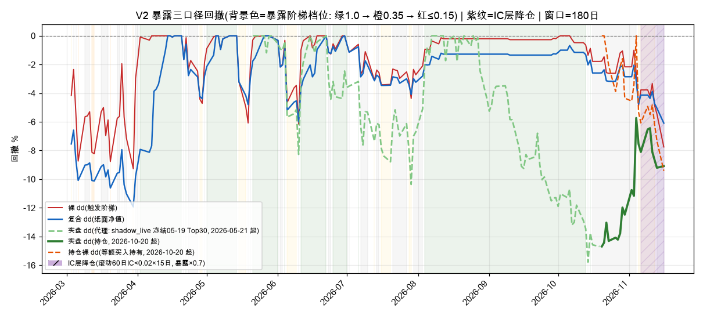
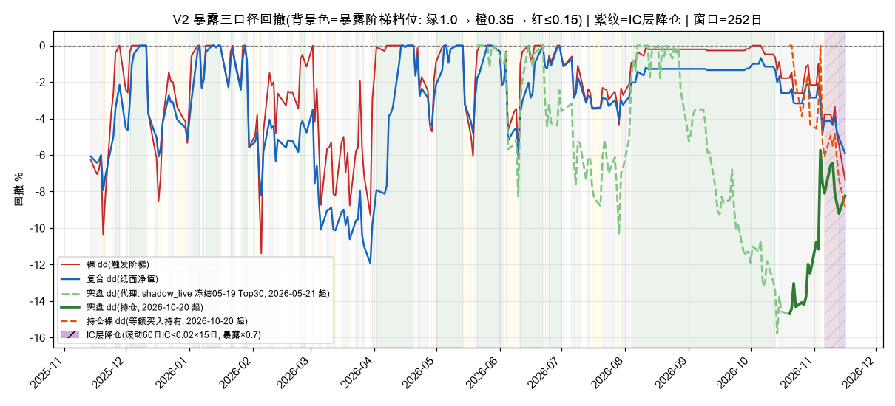
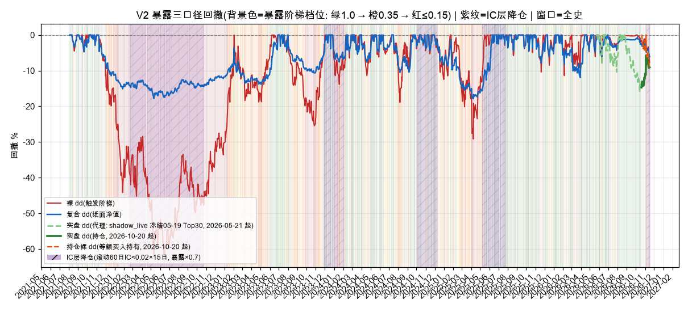
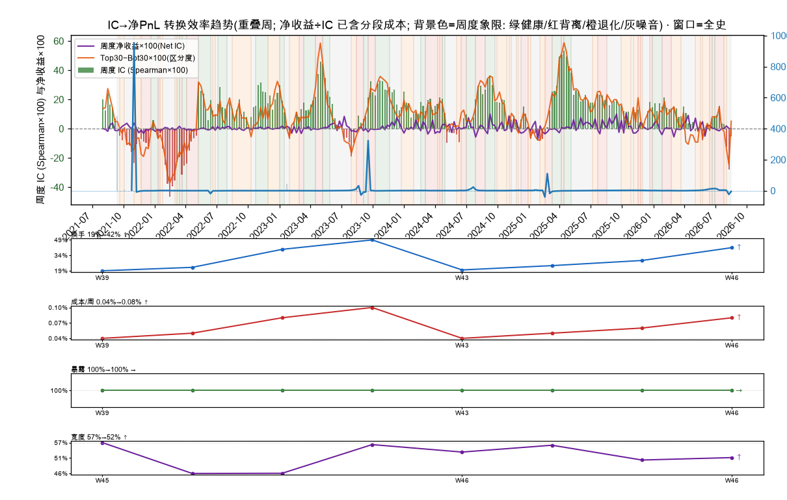
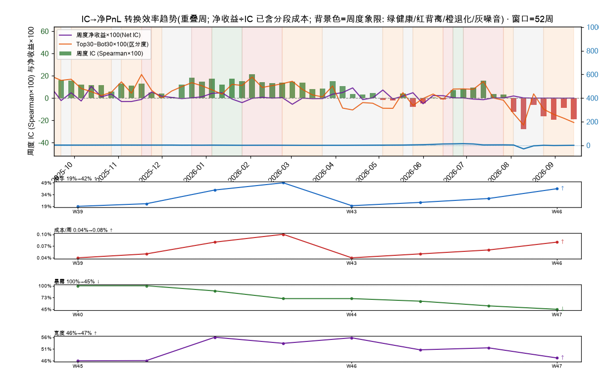
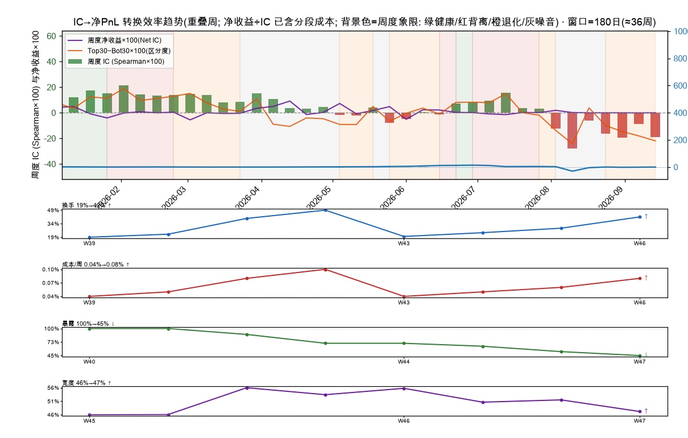

| 卡片 | 数据截至 | 年龄 | 刷新节奏 |
|---|---|---|---|
| 守门折 | 2026-09-10 | 67 天 | 标签全熟才跑 |
| 模型健康 | 2026-11-07 | 9 天 | 每周 |
| 生存性压力 | 2026-11-07 | 9 天 | 每周 |
| 前视审计 | 2026-11-07 | 9 天 | 每周 |
| 入场时机·burst 概率 | 2026-11-12 | 4 天 | 手动重跑 |
| 入场时机·弹簧 EV | 2026-11-12 | 4 天 | 手动重跑 |
| 入场时机·宽度价差 | 2026-11-12 | 4 天 | 手动重跑 |
| 入场时机·弹簧宽度豁免 | 2026-11-12 | 4 天 | 手动重跑 |
| 盘中观察 | 2026-11-14 | 2 天 | 每日盘前 |
| 分数桶校准 | 2026-11-14 | 2 天 | 每日盘后 |
| 研究流水线 | 2026-11-15 | 1 天 | 手动触发 |
| IC 效率 | 2026-11-15 | 1 天 | 每日盘后 |
| 刻度护栏 | 2026-11-17 | 今日 | 每日 2 次 |
| 收盘价护栏 | 2026-11-17 | 今日 | 每日 2 次 |
| 指数新鲜度 | 2026-11-17 | 今日 | 每日 2 次 |
| 生产风控 | 2026-11-16 | 今日 | 每日盘后 |
| IC 阶梯 | 2026-11-17 | 今日 | 每日 2 次 |
| 入场时机证据 | 2026-11-17 | 今日 | 每日 2 次 |
| 市场状态 | 2026-11-17 | 今日 | 每日 2 次 |
| V2 暴露 | 2026-11-16 | 今日 | 每日 2 次 |
| 当日信号 ×5 | 2026-11-17 | 今日 | 每日 2 次 |
| 桶 | 样本 | 60D 均值 | 中位数 | 命中率 | 路径峰值 |
|---|---|---|---|---|---|
| B0 | 117,282 | +2.17% | +1.18% | 54.38% | +12.3% |
| B1 | 118,012 | +1.99% | +1.44% | 54.99% | +11.1% |
| B2 | 118,079 | +2.28% | +1.65% | 55.52% | +11.5% |
| B3 | 117,910 | +2.62% | +2.01% | 56.47% | +12.2% |
| B4 | 117,814 | +3.08% | +2.34% | 57.20% | +13.3% |
| B5 | 118,275 | +3.45% | +2.61% | 57.64% | +14.3% |
| B6 | 117,913 | +4.10% | +3.14% | 58.46% | +15.0% |
| B7 | 118,052 | +4.77% | +3.45% | 58.74% | +16.6% |
| B8 | 118,043 | +5.89% | +4.22% | 59.38% | +19.5% |
| B9 | 118,710 | +9.20% | +5.84% | 59.64% | +29.8% |
| 档位 | 滚动 IC | 截至 | 历史分位 |
|---|---|---|---|
| T-20 | +0.0314 | 2026-10-19 | 38% |
| T-40 | +0.0307 | 2026-09-21 | 28% |
| T-60 | -0.0348 | 2026-08-20 | 12% |
| CODE | PRICE | SCORE | 趋势 | ΔRANK | H20 | H40 | H60 | L60 | ⬆D | ⬇D | TGT | STOP* | TREND | REASON |
|---|---|---|---|---|---|---|---|---|---|---|---|---|---|---|
| BHP×2综合行业 | 77.01 | +1.7 | ◆ 震荡 | — | +9.2% | +13.8% | +17.3% | -9.0% | 14 | 6 | 88 | — | ||
| UNH医保 | 412.00 | +1.7 | ▲ 上升 | ↑432 | +6.6% | +10.2% | +13.9% | -8.7% | 8 | 13 | 458 | — | ||
| IFF化工 | 80.43 | +1.7 | ▲ 上升 | ↑8 | +8.6% | +14.7% | +18.1% | -10.2% | 13 | 7 | 92 | — | ||
| AGNC综合行业 | 8.19 | +1.7 | ▲ 上升 | ↑83 | +7.2% | +10.4% | +14.0% | -10.5% | 12 | 8 | 9 | — | ||
| WDS能源 | 20.69 | +1.7 | ▲ 上升 | ↑48 | +7.9% | +11.4% | +15.4% | -8.5% | 13 | 8 | 23 | — | ||
| AGNCP金融 | 24.27 | +1.7 | ◆ 震荡 | ↑504 | +4.0% | +6.5% | +8.2% | -8.4% | 8 | 7 | 26 | — | ||
| VZ综合行业 | 46.82 | +1.7 | ▲ 上升 | ↑369 | +6.2% | +8.7% | +10.9% | -9.4% | 10 | 13 | 51 | — | ||
| FCX×2矿业/金属 | 56.44 | +1.7 | ◆ 震荡 | ↓1 | +13.1% | +19.8% | +24.0% | -11.5% | 14 | 5 | 67 | — | ||
| VALE综合行业 | 10.65 | +1.7 | ▲ 上升 | ↑126 | +11.2% | +16.1% | +17.7% | -11.5% | 15 | 5 | 12 | — | ||
| TSLA汽车 | 379.18 | +1.7 | ▲ 上升 | ↑161 | +9.4% | +13.1% | +17.4% | -11.3% | 12 | 10 | 432 | — | ||
| SKM综合行业 | 34.11 | +1.7 | ◆ 震荡 | ↑5 | +12.9% | +19.5% | +26.8% | -9.6% | 10 | 12 | 41 | — | ||
| EXE能源 | 87.60 | +1.7 | ▲ 上升 | ↑229 | +8.1% | +11.0% | +14.4% | -10.1% | 11 | 11 | 98 | — | ||
| SCCO矿业/金属 | 157.46 | +1.7 | ▲ 上升 | ↑22 | +12.3% | +18.2% | +20.3% | -16.4% | 13 | 5 | 183 | — | ||
| UHAL综合行业 | 54.91 | +1.7 | ▲ 上升 | — | +8.6% | +12.6% | +16.4% | -9.7% | 13 | 9 | 62 | — | ||
| ICLR综合行业 | 188.93 | +1.7 | ◆ 震荡 | ↑110 | +16.1% | +21.4% | +31.8% | -10.9% | 13 | 6 | 237 | — | ||
| GSAT海外市场 | 86.07 | +1.7 | ◆ 震荡 | ↓14 | +5.9% | +9.6% | +14.1% | -8.2% | 9 | 9 | 96 | — | ||
| DEO综合行业 | 102.50 | +1.7 | ▲ 上升 | ↑930 | +5.7% | +8.5% | +10.6% | -9.0% | 10 | 11 | 111 | — | ||
| SW综合行业 | 42.21 | +1.7 | ▲ 上升 | — | +9.8% | +14.1% | +19.0% | -9.4% | 12 | 9 | 49 | — | ||
| SWKS半导体 | 87.92 | +1.7 | ◆ 震荡 | ↑208 | +14.5% | +18.9% | +29.3% | -12.2% | 10 | 12 | 109 | — | ||
| CLMTATR 8.9%综合行业 | 32.24 | +1.7 | 新进 | 新进 | +15.6% | +20.5% | +25.1% | -16.1% | 13 | 8 | 39 | — | ||
| NVS制药 | 162.40 | +1.7 | ◆ 震荡 | ↑1202 | +5.0% | +7.8% | +9.5% | -8.5% | 9 | 11 | 175 | — | ||
| NVDAATR 6.1%半导体 | 158.57 | +1.7 | ▲ 上升 | ↑34 | +11.1% | +14.5% | +17.1% | -18.0% | 12 | 8 | 180 | — | ||
| IP海外市场 | 33.93 | +1.7 | ▲ 上升 | ↑10 | +11.4% | +15.0% | +19.5% | -10.4% | 13 | 8 | 39 | — | ||
| BABA零售 | 91.83 | +1.7 | ▲ 上升 | ↑178 | +9.5% | +12.8% | +16.4% | -11.6% | 14 | 7 | 104 | — | ||
| ITIT服务 | 191.76 | +1.7 | ◆ 震荡 | ↑172 | +15.3% | +26.0% | +36.5% | -11.4% | 12 | 8 | 248 | — | ||
| DTATR 5.4%软件 | 43.78 | +1.7 | ◆ 震荡 | ↑149 | +12.2% | +15.5% | +19.7% | -14.2% | 12 | 10 | 51 | — | ||
| ALB化工 | 89.05 | +1.7 | ◆ 震荡 | ↑82 | +17.4% | +26.7% | +31.0% | -13.8% | 13 | 5 | 111 | — | ||
| ELV医保 | 442.95 | +1.7 | ▲ 上升 | ↑572 | +7.1% | +10.9% | +14.5% | -8.9% | 7 | 14 | 495 | — | ||
| FISV金融科技 | 64.49 | +1.7 | ▲ 上升 | ↑331 | +8.2% | +13.0% | +19.5% | -8.9% | 10 | 12 | 75 | — | ||
| CMI综合行业 | 444.05 | +1.7 | ▲ 上升 | ↑323 | +8.9% | +13.0% | +16.3% | -11.7% | 13 | 7 | 502 | — | ||
| PCAR综合行业 | 106.49 | +1.7 | ▲ 上升 | ↑29 | +7.2% | +10.0% | +12.8% | -9.8% | 11 | 11 | 117 | — | ||
| AAPL综合行业 | 353.83 | +1.7 | ▲ 上升 | ↑5 | +5.8% | +8.2% | +10.5% | -10.1% | 11 | 10 | 384 | — | ||
| QCOMATR 5.2%半导体 | 169.83 | +1.7 | ◆ 震荡 | ↑21 | +14.4% | +20.3% | +25.8% | -12.5% | 11 | 8 | 205 | — | ||
| BKR综合行业 | 48.19 | +1.7 | ▲ 上升 | ↑56 | +9.0% | +13.1% | +16.5% | -11.3% | 12 | 8 | 55 | — | ||
| FSLRATR 6.0%清洁能源 | 164.00 | +1.7 | ◆ 震荡 | ↑23 | +15.8% | +25.0% | +30.7% | -14.0% | 13 | 6 | 204 | — | ||
| CVIATR 8.1%能源 | 39.06 | +1.7 | 新进 | 新进 | +16.8% | +21.4% | +24.9% | -17.5% | 11 | 7 | 47 | — | ||
| MSI综合行业 | 540.46 | +1.7 | ▲ 上升 | ↑167 | +6.0% | +8.5% | +10.9% | -8.1% | 7 | 12 | 588 | — | ||
| OC综合行业 | 115.50 | +1.7 | ▲ 上升 | ↑61 | +11.5% | +16.7% | +22.1% | -11.1% | 12 | 9 | 136 | — | ||
| MOH医保 | 226.08 | +1.7 | ▲ 上升 | ↑54 | +11.7% | +18.8% | +23.7% | -11.7% | 7 | 15 | 269 | — | ||
| WLK化工 | 62.54 | +1.7 | ◆ 震荡 | ↑15 | +12.4% | +18.9% | +21.8% | -11.2% | 12 | 7 | 73 | — | ||
| AYI综合行业 | 328.53 | +1.7 | ◆ 震荡 | ↓24 | +8.4% | +12.7% | +17.0% | -9.1% | 11 | 10 | 373 | — | ||
| KCATR 6.7%软件/云服务 | 6.98 | +1.7 | 新进 | 新进 | +16.7% | +25.0% | +24.8% | -19.4% | 15 | 6 | 8 | — | ||
| VISTATR 5.1%能源 | 53.90 | +1.7 | 新进 | 新进 | +13.5% | +16.6% | +20.5% | -12.6% | 14 | 8 | 63 | — | ||
| CHKP软件 | 149.43 | +1.7 | ▲ 上升 | ↑47 | +10.9% | +14.5% | +18.8% | -10.1% | 7 | 11 | 172 | — | ||
| MGM海外市场 | 33.63 | +1.7 | ◆ 震荡 | ↑336 | +10.2% | +15.3% | +19.1% | -10.5% | 8 | 11 | 39 | — | ||
| EQT综合行业 | 51.85 | +1.7 | ▲ 上升 | ↑225 | +8.0% | +10.9% | +14.1% | -10.0% | 12 | 11 | 58 | — | ||
| BWA综合行业 | 49.48 | +1.7 | ▲ 上升 | ↑10 | +11.9% | +16.3% | +20.7% | -10.3% | 13 | 6 | 58 | — | ||
| FRHCATR 5.3%综合行业 | 152.05 | +1.7 | 新进 | 新进 | +13.7% | +16.5% | +21.4% | -14.0% | 14 | 7 | 178 | — | ||
| TX红利/价值 | 48.45 | +1.7 | ◆ 震荡 | ↓27 | +9.1% | +13.5% | +16.2% | -11.5% | 14 | 5 | 55 | — | ||
| YPFATR 5.5%综合行业 | 36.10 | +1.7 | ▲ 上升 | ↑182 | +11.5% | +15.4% | +18.9% | -16.2% | 14 | 8 | 42 | — |
| CODE | # | PHASE | P5 | P10 | BURST | 弹簧 | 放量 | 吸筹 | ⬆D | CLOSE | 空间 | TGT | STOP* | EV | 判定 |
|---|---|---|---|---|---|---|---|---|---|---|---|---|---|---|---|
| CMICummins Inc. Common Stock | 30 | Secondary Test | 21% | 36% | 0.28 | ✓ | — | ✓ | 13 | 444.05 | +13.1% | 502.20 | 421.85* | +2.7% | ⭐ 验证组合 |
| QCOMQUALCOMM Incorporated Common Stock | 33 | Automatic Rally | 48% | 65% | 0.96 | — | — | ✓ | 11 | 169.83 | +20.7% | 204.96 | 161.34* | +2.7% | ★ burst∩吸筹/弹簧 |
| MGMMGM Resorts International Common Stock | 45 | Secondary Test | 48% | 65% | 0.92 | — | — | ✓ | 8 | 33.63 | +15.4% | 38.80 | 31.95* | +2.7% | ★ burst∩吸筹/弹簧 |
| ALBAlbemarle Corporation Common Stock | 27 | Automatic Rally | 38% | 55% | 0.84 | — | — | ✓ | 13 | 89.05 | +24.9% | 111.19 | 84.60* | +2.7% | ★ burst∩吸筹/弹簧 |
| SKMSK Telecom Co., Ltd. Common Stock | 11 | Markup | 48% | 65% | 0.97 | — | — | — | 10 | 34.11 | +21.5% | 41.45 | 32.40* | +2.7% | ○ 爆发 |
| FISVFiserv, Inc. Common Stock | 29 | Unknown | 48% | 65% | 0.97 | — | — | — | 10 | 64.49 | +15.7% | 74.59 | 61.27* | +2.7% | ○ 爆发 |
| VALEVALE S.A. American Depositary Shares Each Representing one common share | 9 | Markup | 38% | 55% | 0.86 | — | — | — | 15 | 10.65 | +14.2% | 12.17 | 10.12* | +2.7% | ○ 爆发 |
| BABAAlibaba Group Holding Limited American Depositary Shares each representing eight Ordinary share | 24 | Unknown | 38% | 55% | 0.83 | — | — | — | 14 | 91.83 | +13.2% | 103.91 | 87.24* | +2.7% | ○ 爆发 |
| PCARPACCAR Inc. Common Stock | 31 | Markup | 38% | 55% | 0.84 | — | — | — | 11 | 106.49 | +10.2% | 117.39 | 101.16* | +2.7% | ○ 爆发 |
| BKRBaker Hughes Company Class A Common Stock | 34 | Markup | 38% | 55% | 0.85 | — | — | — | 12 | 48.19 | +13.3% | 54.58 | 45.78* | +2.7% | ○ 爆发 |
| KCKingsoft Cloud Holdings Limited American Depositary Shares | 42 | nan | 38% | 55% | 0.86 | — | — | — | 15 | 6.98 | +19.9% | 8.37 | 6.63* | +2.7% | ○ 爆发 |
| VISTVista Energy S.A.B. de C.V. American Depositary Shares, each representing one series A share, with no par value | 43 | nan | 28% | 46% | 0.20 | ✓ | — | — | 14 | 53.90 | +16.4% | 62.75 | 51.21* | +2.7% | ↻ 弹簧 |
| YPFYPF Sociedad Anonima American Depositary Shares | 50 | Markup | 28% | 46% | 0.19 | ✓ | — | — | 14 | 36.10 | +15.1% | 41.56 | 34.29* | +2.7% | ↻ 弹簧 |
| BHPBHP Group Limited American Depositary Shares (Each representing two Ordinary Shares) | 1 | Markup | 28% | 42% | 0.77 | ✓ | — | — | 14 | 77.01 | +13.9% | 87.69 | 73.16* | +2.7% | ↻ 弹簧 |
| IFFInternational Flavors & Fragrances, Inc. Common Stock | 3 | Markup | 25% | 42% | 0.02 | ✓ | — | — | 13 | 80.43 | +14.5% | 92.11 | 76.41* | +2.7% | ↻ 弹簧 |
| CODE | # | CLOSE | 买笔 | 买额 | 高管买 | 卖笔 | 卖额 | 净额 | 解禁 | 判定 |
|---|---|---|---|---|---|---|---|---|---|---|
| TTMI | 1594 | 67.89 | 6 | $3.93M | 2笔 | 0 | $0.0M | $+3.93M | — | ★ 高管买入 |
| COHR | 1764 | 200.64 | 2 | $1.22M | 1笔 | 7 | $8.2M | $-6.96M | — | ★ 高管买入 |
| PAAS | 1696 | 35.97 | 11 | $35.03M | 0笔 | 0 | $0.0M | $+35.03M | — | 内部人买入 |
| GFS | 1003 | 39.82 | 1 | $0.38M | 0笔 | 6 | $0.5M | $-0.13M | — | 内部人买入 |
stock_analysis.py --intraday --top 20 补当日快照。| CODE | 量价 / 形态 / 资金流 | 持仓 | 条件式建议 |
|---|---|---|---|
| BMNR持有 | 价跌量缩, 缩量回调卖压有限; 上涨日均量为下跌日的 1.05 倍 空头排列(MA20<MA60)、波动扩张 BMNR: 近7个自然日内 1 条capital异动 —— 2026-11-06 11/06卖空数量日环比下降76%，为171.63万，比近一月均值低69%。 | 浮盈亏 -19.6% | 💡 形态已是空头排列; **17.19 是关键防线**, 有效跌破要考虑减仓 |
| BAC持有 | 价跌量缩, 缩量回调卖压有限; 上涨日均量为下跌日的 1.04 倍 空头排列(MA20<MA60)、波动平稳 BAC: 近7个自然日内 2 条capital异动 —— 2026-11-12 特大单净流出1846.04万且流入流出金额相差一倍以上，小单净流入422.12万，方向相反，代表大资 | 浮盈亏 -0.1% | 💡 形态已是空头排列; **50.21 是关键防线**, 有效跌破要考虑减仓 |
| MCD持有 | 价涨量缩, 上攻缩量、量价背离需警惕; 上涨日均量为下跌日的 0.96 倍 多头排列(MA20>MA60)、波动平稳 MCD: 近7个自然日内无异动(err_code=1, retMsg=资金面异动无异常) | 浮盈亏 +14.1% | 💡 持仓暂无触发条件 —— 盯住最近支撑/阻力位, 无需动作 |
| CODE | 量价 / 形态 / 资金流 | 持仓 | 条件式建议 |
|---|---|---|---|
| DRAM | 价跌量增, 放量下跌是抛压释放; 上涨日均量为下跌日的 0.83 倍 空头排列(MA20<MA60)、波动扩张 DRAM: 近7个自然日内无异动(err_code=1, retMsg=资金面异动无异常) | — | 💡 放量下跌中, **不接**; 等站上 41.90 再评估, 若跌破 41.01(最近支撑)则风险更大 |
| DOCN | 价跌量增, 放量下跌是抛压释放; 上涨日均量为下跌日的 1.23 倍 空头排列(MA20<MA60)、波动扩张 DOCN: 近7个自然日内无异动(err_code=1, retMsg=资金面异动无异常) | — | 💡 放量下跌中, **不接**; 等站上 85.72 再评估, 若跌破 85.46(最近支撑)则风险更大 |
| VICR | 价跌量增, 放量下跌是抛压释放; 上涨日均量为下跌日的 1.17 倍 空头排列(MA20<MA60)、波动扩张 VICR: 近7个自然日内 6 条capital异动 —— 2026-10-08 主力资金近7日持续净流出，当日净流出金额比前3日均值高137%，表明主力资金在加速离场。 / 20 | — | 💡 放量下跌中, **不接**; 等站上 153.38 再评估, 若跌破 150.00(最近支撑)则风险更大 |
| SMTC | 价跌量缩, 缩量回调卖压有限; 上涨日均量为下跌日的 0.91 倍 空头排列(MA20<MA60)、波动扩张 SMTC: 近7个自然日内 2 条capital异动 —— 2026-11-12 特大单净流出227.31万且流入流出金额相差一倍以上，小单净流入1032.56万，方向相反，代表大 | — | 💡 暂无明确触发条件 —— 等放量突破 110.00 或缩量企稳 |
| SMR | 价跌量缩, 缩量回调卖压有限; 上涨日均量为下跌日的 1.19 倍 空头排列(MA20<MA60)、波动扩张 SMR: 近7个自然日内 1 条capital异动 —— 2026-11-13 特大单净流入120.43万且流入流出金额相差一倍以上，小单净流出13.89万，方向相反，代表大资金和 | — | 💡 暂无明确触发条件 —— 等放量站上 4.50(最近支撑)并缩量企稳 |
| FORM | 价跌量增, 放量下跌是抛压释放; 上涨日均量为下跌日的 0.77 倍 空头排列(MA20<MA60)、波动扩张 FORM: 近7个自然日内 2 条capital异动 —— 2026-11-13 特大单净流出52.37万且流入流出金额相差一倍以上，小单净流入12.93万，方向相反，代表大资金和 | — | 💡 放量下跌中, **不接**; 等站上 86.97 再评估 |
| VSAT | 价涨量增, 资金同步进场; 上涨日均量为下跌日的 1.29 倍 空头排列(MA20<MA60)、波动扩张 VSAT: 近7个自然日内 1 条capital异动 —— 2026-11-11 特大单净流出49.56万且流入流出金额相差一倍以上，小单净流入120.72万，方向相反，代表大资金 | — | 💡 暂无明确触发条件 —— 等放量站上 66.75(最近支撑)并缩量企稳 |
| PAYP | 价跌量缩, 缩量回调卖压有限; 上涨日均量为下跌日的 1.12 倍 空头排列(MA20<MA60)、波动平稳 PAYP: 近7个自然日内 1 条capital异动 —— 2026-11-13 特大单净流出34.48万且流入流出金额相差一倍以上，小单净流入1524.59，方向相反，代表大资金 | — | 💡 暂无明确触发条件 —— 等放量突破 14.16 或缩量企稳 |
| SANM | 价跌量增, 放量下跌是抛压释放; 上涨日均量为下跌日的 1.06 倍 空头排列(MA20<MA60)、波动扩张 SANM: 近7个自然日内 1 条capital异动 —— 2026-11-10 11/10卖空数量日环比上升176%，为41.87万，比近一月均值高343%。 | — | 💡 放量下跌中, **不接**; 等站上 153.49 再评估, 若跌破 151.00(最近支撑)则风险更大 |
| ALAB | 价跌量增, 放量下跌是抛压释放; 上涨日均量为下跌日的 0.87 倍 空头排列(MA20<MA60)、波动扩张 ALAB: 近7个自然日内 3 条capital异动 —— 2026-11-13 特大单净流入99.4万且流入流出金额相差一倍以上，小单净流出636.91万，方向相反，代表大资金和 | — | 💡 放量下跌中, **不接**; 等站上 214.24 再评估, 若跌破 213.46(最近支撑)则风险更大 |
| QNT | 价跌量增, 放量下跌是抛压释放; 上涨日均量为下跌日的 0.98 倍 空头排列(MA20<MA60)、波动扩张 QNT: 近7个自然日内 1 条capital异动 —— 2026-11-11 特大单净流入40.92万且流入流出金额相差一倍以上，小单净流出290.37万，方向相反，代表大资金和 | — | 💡 放量下跌中, **不接**; 等站上 35.61 再评估, 若跌破 35.00(最近支撑)则风险更大 |
| DELL | 价跌量缩, 缩量回调卖压有限; 上涨日均量为下跌日的 0.86 倍 空头排列(MA20<MA60)、波动扩张 DELL: 近7个自然日内 2 条capital异动 —— 2026-11-11 特大单净流入1665.17万且流入流出金额相差一倍以上，小单净流出7581.39万，方向相反，代表 | — | 💡 暂无明确触发条件 —— 等放量突破 343.44 或缩量企稳 |
| VIAV | 价跌量增, 放量下跌是抛压释放; 上涨日均量为下跌日的 0.79 倍 空头排列(MA20<MA60)、波动扩张 VIAV: 近7个自然日内 2 条capital异动 —— 2026-10-09 特大单净流入78.14万且流入流出金额相差一倍以上，小单净流出5.92万，方向相反，代表大资金和小 | — | 💡 放量下跌中, **不接**; 等站上 30.44 再评估, 若跌破 30.00(最近支撑)则风险更大 |
| MRNA | 价涨量缩, 上攻缩量、量价背离需警惕; 上涨日均量为下跌日的 0.99 倍 多头排列(MA20>MA60)、波动平稳 MRNA: 近7个自然日内无异动(err_code=1, retMsg=资金面异动无异常) | — | 💡 若放量突破 227.71(最近阻力)可考虑小仓位介入; 未突破前**不追** |
| ONTO | 价跌量增, 放量下跌是抛压释放; 上涨日均量为下跌日的 1.08 倍 空头排列(MA20<MA60)、波动扩张 ONTO: 近7个自然日内 1 条capital异动 —— 2026-11-12 特大单净流入60.9万且流入流出金额相差一倍以上，小单净流出146.47万，方向相反，代表大资金和 | — | 💡 放量下跌中, **不接**; 等站上 197.13 再评估, 若跌破 195.19(最近支撑)则风险更大 |
| IT | 价跌量增, 放量下跌是抛压释放; 上涨日均量为下跌日的 0.86 倍 多头排列(MA20>MA60)、波动平稳 IT: 近7个自然日内 2 条capital异动 —— 2026-11-10 特大单净流入23.95万且流入流出金额相差一倍以上，小单净流出244.63万，方向相反，代表大资金和小 | — | 💡 若放量突破 193.12(最近阻力)可考虑小仓位介入; 未突破前**不追** |
| LITE | 价跌量增, 放量下跌是抛压释放; 上涨日均量为下跌日的 0.77 倍 空头排列(MA20<MA60)、波动扩张 LITE: 近7个自然日内无异动(err_code=1, retMsg=资金面异动无异常) | — | 💡 放量下跌中, **不接**; 等站上 580.00 再评估, 若跌破 573.73(最近支撑)则风险更大 |
| SOXX | 价跌量增, 放量下跌是抛压释放; 上涨日均量为下跌日的 0.81 倍 空头排列(MA20<MA60)、波动扩张 SOXX: 近7个自然日内 1 条capital异动 —— 2026-11-11 特大单净流入3亿且流入流出金额相差一倍以上，小单净流出8783.14万，方向相反，代表大资金和小资 | — | 💡 放量下跌中, **不接**; 等站上 145.81 再评估, 若跌破 143.85(最近支撑)则风险更大 |
| SNDK | 价跌量增, 放量下跌是抛压释放; 上涨日均量为下跌日的 0.86 倍 空头排列(MA20<MA60)、波动扩张 SNDK: 近7个自然日内无异动(err_code=1, retMsg=资金面异动无异常) | — | 💡 放量下跌中, **不接**; 等站上 860.00 再评估, 若跌破 850.00(最近支撑)则风险更大 |
| TTMI | 价跌量增, 放量下跌是抛压释放; 上涨日均量为下跌日的 0.84 倍 空头排列(MA20<MA60)、波动扩张 TTMI: 近7个自然日内 2 条capital异动 —— 2026-11-13 特大单净流入93.29万且流入流出金额相差一倍以上，小单净流出852.37万，方向相反，代表大资金 | — | 💡 放量下跌中, **不接** |
| 研究# | 模型交易# | 代码 / 名称 | 收盘 | ALPHA | 执行状态 | 技术信号 | H20 | H40 | H60 | L60 | ⬆D | ⬇D | 参考买点 | 参考止损* | 目标 | TREND |
|---|---|---|---|---|---|---|---|---|---|---|---|---|---|---|---|---|
| 1 | 1 | BHPBHP Group Limited American Depositary Shares (Each representing two Ordinary Shares) · 综合行业 | 77.01 | +1.7 | 可执行 | 上涨突破 | +9.2% | +13.8% | +17.3% | -9.0% | 14 | 6 | 77.01 | 72.48* | 87.69 | |
| 2 | 2 | UNHUnitedHealth Group Incorporated Common Stock (DE) · 医保 | 412.00 | +1.7 | 可执行 | 二次测试 | +6.6% | +10.2% | +13.9% | -8.7% | 8 | 13 | 412.00 | 390.79* | 457.96 | |
| 3 | 3 | IFFInternational Flavors & Fragrances, Inc. Common Stock · 化工 | 80.43 | +1.7 | 可执行 | 上涨突破 | +8.6% | +14.7% | +18.1% | -10.2% | 13 | 7 | 80.43 | 75.50* | 92.11 | |
| 4 | 4 | AGNCAGNC Investment Corp. Common Stock · 综合行业 | 8.19 | +1.7 | 可执行 | 上涨突破 | +7.2% | +10.4% | +14.0% | -10.5% | 12 | 8 | 8.19 | 7.72* | 9.11 | |
| 5 | 5 | WDSWoodside Energy Group Limited American Depositary Shares, each representing one Ordinary Share · 能源 | 20.69 | +1.7 | 可执行 | 上涨突破 | +7.9% | +11.4% | +15.4% | -8.5% | 13 | 8 | 20.69 | 19.66* | 23.24 | |
| 6 | — | AGNCPAGNC Investment Corp. Depositary Shares Each Representing a 1/1,000th Interest in a Share of 6.125% Series F Fixed-to-Floating Rate Cumulative Redeemable Preferred Stock · 金融 | 24.27 | +1.7 | 风险 | 上涨突破 | +4.0% | +6.5% | +8.2% | -8.4% | 8 | 7 | 24.27 | 23.06* | 25.86 | |
| 7 | 6 | VZVerizon Communications Inc. Common Stock · 综合行业 | 46.82 | +1.7 | 可执行 | 上涨 | +6.2% | +8.7% | +10.9% | -9.4% | 10 | 13 | 46.82 | 44.48* | 50.93 | |
| 8 | 7 | FCXFreeport-McMoRan, Inc. Common Stock · 矿业/金属 | 56.44 | +1.7 | 可执行 | 上涨突破 | +13.1% | +19.8% | +24.0% | -11.5% | 14 | 5 | 56.44 | 50.85* | 67.29 | |
| 9 | 8 | VALEVALE S.A. American Depositary Shares Each Representing one common share · 综合行业 | 10.65 | +1.7 | 可执行 | 上涨突破 | +11.2% | +16.1% | +17.7% | -11.5% | 15 | 5 | 10.65 | 9.89* | 12.17 | |
| 10 | 9 | TSLATesla, Inc. Common Stock · 汽车 | 379.18 | +1.7 | 可执行 | 自动反弹 | +9.4% | +13.1% | +17.4% | -11.3% | 12 | 10 | 379.18 | 346.14* | 431.97 | |
| 11 | 10 | SKMSK Telecom Co., Ltd. Common Stock · 综合行业 | 34.11 | +1.7 | 可执行 | 上涨 | +12.9% | +19.5% | +26.8% | -9.6% | 10 | 12 | 34.11 | 31.58* | 41.45 | |
| 12 | 11 | EXEExpand Energy Corporation Common Stock · 能源 | 87.60 | +1.7 | 可执行 | 未分类 | +8.1% | +11.0% | +14.4% | -10.1% | 11 | 11 | 87.60 | 82.88* | 97.73 | |
| 13 | 12 | SCCOSouthern Copper Corporation Common Stock · 矿业/金属 | 157.46 | +1.7 | 可执行 | 上涨突破 | +12.3% | +18.2% | +20.3% | -16.4% | 13 | 5 | 157.46 | 141.73* | 183.14 | |
| 14 | — | UHALU-Haul Holding Company Common Stock · 综合行业 | 54.91 | +1.7 | 风险 | 上涨 | +8.6% | +12.6% | +16.4% | -9.7% | 13 | 9 | 54.91 | 51.60* | 62.15 | |
| 15 | 13 | ICLRICON plc Ordinary Shares · 综合行业 | 188.93 | +1.7 | 可执行 | 未分类 | +16.1% | +21.4% | +31.8% | -10.9% | 13 | 6 | 188.93 | 172.30* | 237.14 | |
| 16 | 14 | GSATGlobalstar, Inc. Common Stock · 海外市场 | 86.07 | +1.7 | 可执行 | 上涨 | +5.9% | +9.6% | +14.1% | -8.2% | 9 | 9 | 86.07 | 81.77* | 95.83 | |
| 17 | 15 | DEODiageo plc Common Stock · 综合行业 | 102.50 | +1.7 | 可执行 | 未分类 | +5.7% | +8.5% | +10.6% | -9.0% | 10 | 11 | 102.50 | 97.38* | 111.19 | |
| 18 | 16 | SWSmurfit WestRock plc Ordinary Shares · 综合行业 | 42.21 | +1.7 | 可执行 | 上涨 | +9.8% | +14.1% | +19.0% | -9.4% | 12 | 9 | 42.21 | 39.40* | 48.63 | |
| 19 | 17 | SWKSSkyworks Solutions, Inc. Common Stock · 半导体 | 87.92 | +1.7 | 可执行 | 自动反弹 | +14.5% | +18.9% | +29.3% | -12.2% | 10 | 12 | 87.92 | 79.48* | 108.62 | |
| 20 | 18 | CLMTCalumet, Inc. Common Stock · 综合行业 | 32.24 | +1.7 | 可执行 | 未分类突破 | +15.6% | +20.5% | +25.1% | -16.1% | 13 | 8 | 32.24 | 26.48* | 38.73 | |
| 21 | 19 | NVSNovartis AG Common Stock · 制药 | 162.40 | +1.7 | 可执行 | 上涨 | +5.0% | +7.8% | +9.5% | -8.5% | 9 | 11 | 162.40 | 154.28* | 174.80 | |
| 22 | 20 | NVDANVIDIA Corporation Common Stock · 半导体 | 158.57 | +1.7 | 可执行 | 上涨突破 | +11.1% | +14.5% | +17.1% | -18.0% | 12 | 8 | 158.57 | 139.34* | 180.36 | |
| 23 | 21 | IPInternational Paper Company Common Stock · 海外市场 | 33.93 | +1.7 | 可执行 | 未分类 | +11.4% | +15.0% | +19.5% | -10.4% | 13 | 8 | 33.93 | 31.50* | 39.25 | |
| 24 | 22 | BABAAlibaba Group Holding Limited American Depositary Shares each representing eight Ordinary share · 零售 | 91.83 | +1.7 | 可执行 | 未分类突破 | +9.5% | +12.8% | +16.4% | -11.6% | 14 | 7 | 91.83 | 84.86* | 103.91 | |
| 25 | 23 | ITGartner, Inc. Common Stock · IT服务 | 191.76 | +1.7 | 可执行 | 未分类 | +15.3% | +26.0% | +36.5% | -11.4% | 12 | 8 | 191.76 | 172.99* | 247.92 | |
| 26 | 24 | DTDynatrace, Inc. Common Stock · 软件 | 43.78 | +1.7 | 可执行 | 派发突破 | +12.2% | +15.5% | +19.7% | -14.2% | 12 | 10 | 43.78 | 39.03* | 50.71 | |
| 27 | 25 | ALBAlbemarle Corporation Common Stock · 化工 | 89.05 | +1.7 | 可执行 | 自动反弹突破 | +17.4% | +26.7% | +31.0% | -13.8% | 13 | 5 | 89.05 | 81.41* | 111.19 | |
| 28 | 26 | ELVElevance Health, Inc. Common Stock · 医保 | 442.95 | +1.7 | 可执行 | 二次测试 | +7.1% | +10.9% | +14.5% | -8.9% | 7 | 14 | 442.95 | 417.46* | 494.66 | |
| 29 | 27 | FISVFiserv, Inc. Common Stock · 金融科技 | 64.49 | +1.7 | 可执行 | 未分类 | +8.2% | +13.0% | +19.5% | -8.9% | 10 | 12 | 64.49 | 60.37* | 74.59 | |
| 30 | 28 | CMICummins Inc. Common Stock · 综合行业 | 444.05 | +1.7 | 可执行 | 二次测试突破 | +8.9% | +13.0% | +16.3% | -11.7% | 13 | 7 | 444.05 | 412.99* | 502.20 | |
| 31 | 29 | PCARPACCAR Inc. Common Stock · 综合行业 | 106.49 | +1.7 | 可执行 | 上涨 | +7.2% | +10.0% | +12.8% | -9.8% | 11 | 11 | 106.49 | 100.93* | 117.39 | |
| 32 | 30 | AAPLApple Inc. Common Stock · 综合行业 | 353.83 | +1.7 | 可执行 | 上涨 | +5.8% | +8.2% | +10.5% | -10.1% | 11 | 10 | 353.83 | 336.14* | 383.65 | |
| 33 | 31 | QCOMQUALCOMM Incorporated Common Stock · 半导体 | 169.83 | +1.7 | 可执行 | 自动反弹 | +14.4% | +20.3% | +25.8% | -12.5% | 11 | 8 | 169.83 | 152.02* | 204.96 | |
| 34 | 32 | BKRBaker Hughes Company Class A Common Stock · 综合行业 | 48.19 | +1.7 | 可执行 | 上涨 | +9.0% | +13.1% | +16.5% | -11.3% | 12 | 8 | 48.19 | 44.21* | 54.58 | |
| 35 | 33 | FSLRFirst Solar, Inc. Common Stock · 清洁能源 | 164.00 | +1.7 | 可执行 | 自动反弹突破 | +15.8% | +25.0% | +30.7% | -14.0% | 13 | 6 | 164.00 | 144.18* | 204.45 | |
| 36 | 34 | CVICVR Energy Inc. Common Stock · 能源 | 39.06 | +1.7 | 可执行 | 未分类 | +16.8% | +21.4% | +24.9% | -17.5% | 11 | 7 | 39.06 | 32.76* | 46.88 | |
| 37 | 35 | MSIMotorola Solutions, Inc. Common Stock · 综合行业 | 540.46 | +1.7 | 可执行 | 未分类 | +6.0% | +8.5% | +10.9% | -8.1% | 7 | 12 | 540.46 | 513.44* | 587.71 | |
| 38 | 36 | OCOwens Corning Inc Common Stock New · 综合行业 | 115.50 | +1.7 | 可执行 | 未分类 | +11.5% | +16.7% | +22.1% | -11.1% | 12 | 9 | 115.50 | 105.02* | 135.95 | |
| 39 | 37 | MOHMolina Healthcare Inc Common Stock · 医保 | 226.08 | +1.7 | 可执行 | 上涨 | +11.7% | +18.8% | +23.7% | -11.7% | 7 | 15 | 226.08 | 205.64* | 269.01 | |
| 40 | 38 | WLKWestlake Corporation Common Stock · 化工 | 62.54 | +1.7 | 可执行 | 未分类 | +12.4% | +18.9% | +21.8% | -11.2% | 12 | 7 | 62.54 | 57.96* | 73.48 | |
| 41 | 39 | AYIAcuity Inc. Common Stock · 综合行业 | 328.53 | +1.7 | 可执行 | 未分类 | +8.4% | +12.7% | +17.0% | -9.1% | 11 | 10 | 328.53 | 307.29* | 373.29 | |
| 42 | 40 | KCKingsoft Cloud Holdings Limited American Depositary Shares · 软件/云服务 | 6.98 | +1.7 | 可执行 | 未分类突破 | +16.7% | +25.0% | +24.8% | -19.4% | 15 | 6 | 6.98 | 6.04* | 8.37 | |
| 43 | 41 | VISTVista Energy S.A.B. de C.V. American Depositary Shares, each representing one series A share, with no par value · 能源 | 53.90 | +1.7 | 可执行 | 未分类突破 | +13.5% | +16.6% | +20.5% | -12.6% | 14 | 8 | 53.90 | 48.41* | 62.75 | |
| 44 | 42 | CHKPCheck Point Software Technologies Ltd. Ordinary Shares · 软件 | 149.43 | +1.7 | 可执行 | 二次测试 | +10.9% | +14.5% | +18.8% | -10.1% | 7 | 11 | 149.43 | 139.15* | 171.94 | |
| 45 | 43 | MGMMGM Resorts International Common Stock · 海外市场 | 33.63 | +1.7 | 可执行 | 二次测试 | +10.2% | +15.3% | +19.1% | -10.5% | 8 | 11 | 33.63 | 31.54* | 38.80 | |
| 46 | 44 | EQTEQT Corporation Common Stock · 综合行业 | 51.85 | +1.7 | 可执行 | 未分类 | +8.0% | +10.9% | +14.1% | -10.0% | 12 | 11 | 51.85 | 48.53* | 57.70 | |
| 47 | 45 | BWABorgWarner Inc. Common Stock · 综合行业 | 49.48 | +1.7 | 可执行 | 上涨 | +11.9% | +16.3% | +20.7% | -10.3% | 13 | 6 | 49.48 | 45.80* | 57.68 | |
| 48 | 46 | FRHCFreedom Holding Corp. Common Stock · 综合行业 | 152.05 | +1.7 | 可执行 | 未分类突破 | +13.7% | +16.5% | +21.4% | -14.0% | 14 | 7 | 152.05 | 135.84* | 178.22 | |
| 49 | — | TXTernium S.A. Ternium S.A. American Depositary Shares (each representing ten shares, USD1.00 par value) · 红利/价值 | 48.45 | +1.7 | 风险 | 上涨 | +9.1% | +13.5% | +16.2% | -11.5% | 14 | 5 | 48.45 | 44.91* | 54.76 | |
| 50 | 47 | YPFYPF Sociedad Anonima American Depositary Shares · 综合行业 | 36.10 | +1.7 | 可执行 | 上涨突破 | +11.5% | +15.4% | +18.9% | -16.2% | 14 | 8 | 36.10 | 32.14* | 41.56 | |
| 51 | — | RSIRush Street Interactive, Inc. Class A Common Stock · 综合行业 | 11.52 | +1.7 | 观察 | 未分类 | +20.7% | +23.6% | +28.4% | -17.9% | 11 | 6 | 11.52 | 9.73* | 14.14 | |
| 52 | — | CTVACorteva, Inc. Common Stock · 综合行业 | 9.14 | +1.7 | 观察 | 上涨突破 | +15.3% | +22.1% | +27.3% | -11.4% | 14 | 6 | 9.14 | 7.82* | 11.14 | |
| 53 | — | MOAltria Group, Inc. · 综合行业 | 79.39 | +1.6 | 观察 | 二次测试 | +5.0% | +7.9% | +9.6% | -9.0% | 8 | 14 | 79.39 | 75.43* | 85.54 | |
| 54 | — | GDXUMicroSectors Gold Miners 3X Leveraged ETNs · 黄金/贵金属 | 67.37 | +1.6 | 风险 | 不适用 | +28.7% | +30.3% | +44.6% | -20.7% | 10 | 6 | 67.37 | 46.41* | 91.46 | |
| 55 | — | MSFTMicrosoft Corporation Common Stock · 软件 | 520.75 | +1.6 | 观察 | 未分类 | +7.9% | +11.0% | +13.3% | -10.8% | 13 | 8 | 520.75 | 490.91* | 576.45 | |
| 56 | — | NTNXNutanix, Inc. Class A Common Stock · 软件 | 58.61 | +1.6 | 观察 | 未分类 | +12.8% | +17.1% | +23.8% | -12.9% | 13 | 6 | 58.61 | 53.73* | 69.79 | |
| 57 | — | XELXcel Energy Inc. Common Stock · 能源 | 82.10 | +1.6 | 观察 | 未分类 | +4.5% | +7.0% | +8.6% | -8.0% | 8 | 13 | 82.10 | 77.99* | 87.80 | |
| 58 | — | SSBSouthState Bank Corporation Common Stock · 银行 | 104.10 | +1.6 | 观察 | 上涨 | +5.4% | +8.0% | +10.3% | -9.3% | 12 | 9 | 104.10 | 98.89* | 112.69 | |
| 59 | — | HALOHalozyme Therapeutics, Inc. Common Stock · 生物 | 99.64 | +1.6 | 观察 | 上涨突破 | +10.4% | +14.9% | +19.5% | -13.7% | 12 | 9 | 99.64 | 91.20* | 115.23 | |
| 60 | — | AMHAmerican Homes 4 Rent Common Shares of Beneficial Interest · 综合行业 | 32.64 | +1.6 | 观察 | 上涨 | +4.9% | +7.3% | +9.4% | -8.6% | 11 | 11 | 32.64 | 31.01* | 35.11 | |
| 61 | — | PDBCInvesco Optimum Yield Diversified Commodity Strategy No K-1 ETF · 综合资产 | 18.09 | +1.6 | 观察 | 上涨突破 | +4.5% | +7.4% | +9.4% | -8.4% | 12 | 8 | 18.09 | 17.19* | 19.46 | |
| 62 | — | HUBSHubSpot, Inc. Common Stock · 软件 | 216.96 | +1.6 | 观察 | 下跌 | +16.5% | +25.7% | +35.1% | -16.5% | 9 | 10 | 216.96 | 189.83* | 278.04 | |
| 63 | — | OSCROscar Health, Inc. Class A Common Stock · 医保 | 30.41 | +1.6 | 观察 | 上涨 | +15.8% | +24.6% | +29.4% | -16.6% | 12 | 8 | 30.41 | 26.28* | 37.58 | |
| 64 | — | CLXClorox Company (The) Common Stock · 综合行业 | 109.71 | +1.6 | 观察 | 未分类 | +6.9% | +10.8% | +14.4% | -9.8% | 8 | 11 | 109.71 | 102.73* | 122.41 | |
| 65 | — | WYWeyerhaeuser Company Common Stock · 综合行业 | 20.93 | +1.6 | 观察 | 二次测试 | +7.7% | +10.3% | +12.9% | -10.1% | 11 | 12 | 20.93 | 19.77* | 23.10 | |
| 66 | — | DVADaVita Inc. Common Stock · 综合行业 | 173.14 | +1.6 | 观察 | 未分类 | +10.6% | +15.2% | +20.8% | -12.0% | 12 | 8 | 173.14 | 159.27* | 202.11 | |
| 67 | — | BXPBXP, Inc. Common Stock · 综合行业 | 63.94 | +1.6 | 观察 | 未分类 | +7.1% | +10.1% | +13.1% | -9.5% | 12 | 9 | 63.94 | 60.65* | 70.68 | |
| 68 | — | CRLCharles River Laboratories International, Inc. Common Stock · 海外市场 | 331.94 | +1.6 | 观察 | 上涨 | +12.6% | +17.8% | +28.9% | -11.8% | 12 | 7 | 331.94 | 300.05* | 409.00 | |
| 69 | — | TEAMAtlassian Corporation Class A Common Stock · 软件 | 147.98 | +1.6 | 观察 | 未分类突破 | +16.1% | +28.8% | +38.3% | -20.0% | 10 | 10 | 147.98 | 128.12* | 193.43 | |
| 70 | — | CGThe Carlyle Group Inc. Common Stock · 资管 | 38.71 | +1.6 | 观察 | 未分类 | +10.4% | +15.1% | +19.7% | -11.3% | 14 | 7 | 38.71 | 35.76* | 44.81 | |
| 71 | — | BNTXBioNTech SE American Depositary Share · 生物 | 86.44 | +1.6 | 观察 | 派发突破 | +9.0% | +13.8% | +17.0% | -10.7% | 10 | 11 | 86.44 | 81.02* | 98.22 | |
| 72 | — | EATBrinker International, Inc. Common Stock · 餐饮 | 192.73 | +1.6 | 观察 | 上涨 | +13.1% | +20.1% | +25.9% | -13.4% | 12 | 7 | 192.73 | 171.75* | 232.84 | |
| 73 | — | FFord Motor Company Common Stock · 汽车 | 11.75 | +1.6 | 观察 | 二次测试 | +8.6% | +12.6% | +16.5% | -10.1% | 13 | 8 | 11.75 | 11.11* | 13.30 | |
| 74 | — | TECHBio-Techne Corp Common Stock · 生物 | 72.85 | +1.6 | 观察 | 上涨 | +5.4% | +9.0% | +13.2% | -7.9% | 7 | 9 | 72.85 | 69.21* | 80.53 | |
| 75 | — | SCIService Corporation International Common Stock · 海外市场 | 75.48 | +1.6 | 观察 | 未分类 | +6.9% | +9.7% | +12.5% | -10.0% | 9 | 12 | 75.48 | 71.01* | 83.06 | |
| 76 | — | GEFGreif Inc. Class A Common Stock · 综合行业 | 70.51 | +1.6 | 观察 | 未分类突破 | +8.4% | +10.0% | +13.7% | -10.7% | 15 | 9 | 70.51 | 65.05* | 78.27 | |
| 77 | — | PBRPetroleo Brasileiro S.A. Petrobras ADS · 综合行业 | 17.59 | +1.6 | 观察 | 上涨突破 | +9.3% | +13.8% | +16.2% | -14.5% | 13 | 7 | 17.59 | 16.00* | 19.89 | |
| 78 | — | FFIVF5, Inc. Common Stock · 软件 | 301.36 | +1.6 | 观察 | 上涨突破 | +12.1% | +15.2% | +19.3% | -12.1% | 12 | 7 | 301.36 | 269.66* | 348.03 | |
| 79 | — | APTVAptiv PLC Ordinary Shares · 综合行业 | 38.18 | +1.6 | 观察 | 自动反弹突破 | +12.4% | +18.3% | +23.0% | -10.8% | 13 | 8 | 38.18 | 35.28* | 45.22 | |
| 80 | — | NIONIO Inc. American depositary shares, each representing one Class A ordinary share · 汽车 | 2.78 | +1.6 | 观察 | 二次测试突破 | +14.4% | +21.0% | +25.2% | -18.9% | 15 | 6 | 2.78 | 2.48* | 3.34 | |
| 81 | — | HMYHarmony Gold Mining Company Limited · 黄金 | 15.00 | +1.6 | 观察 | 未分类 | +16.9% | +28.4% | +35.5% | -15.0% | 13 | 6 | 15.00 | 13.58* | 19.27 | |
| 82 | — | ELSEquity Lifestyle Properties, Inc. Common Stock · 综合行业 | 62.67 | +1.6 | 观察 | 二次测试 | +5.2% | +7.7% | +9.7% | -8.3% | 10 | 12 | 62.67 | 59.53* | 67.55 | |
| 83 | — | XPEVXPeng Inc. American depositary shares, each representing two Class A ordinary shares · 汽车 | 9.77 | +1.6 | 观察 | 二次测试 | +11.8% | +17.7% | +23.4% | -12.5% | 11 | 12 | 9.77 | 8.96* | 11.60 | |
| 84 | — | MUSAMurphy USA Inc. Common Stock · 零售 | 544.82 | +1.6 | 观察 | 上涨 | +8.0% | +11.4% | +16.0% | -11.6% | 8 | 12 | 544.82 | 510.61* | 614.83 | |
| 85 | — | LTHLife Time Group Holdings, Inc. Common Stock · 综合行业 | 47.00 | +1.6 | 观察 | 上涨 | +8.6% | +11.6% | +15.1% | -14.2% | 9 | 11 | 47.00 | 43.44* | 52.71 | |
| 86 | — | AAAlcoa Corporation Common Stock · 综合行业 | 39.19 | +1.6 | 观察 | 自动反弹 | +16.6% | +23.4% | +27.7% | -13.1% | 12 | 7 | 39.19 | 35.96* | 47.91 | |
| 87 | — | UNMUnum Group Common Stock · 保险 | 78.61 | +1.6 | 观察 | 上涨 | +7.5% | +10.9% | +13.7% | -11.5% | 13 | 7 | 78.61 | 72.76* | 87.28 | |
| 88 | — | BIDUBaidu, Inc. ADS · 互联网 | 75.57 | +1.6 | 观察 | 二次测试突破 | +9.1% | +16.8% | +21.2% | -10.5% | 14 | 7 | 75.57 | 70.59* | 88.45 | |
| 89 | — | EGOEldorado Gold Corporation Ordinary Shares · 黄金 | 30.76 | +1.6 | 观察 | 上涨 | +19.7% | +31.1% | +40.9% | -11.3% | 13 | 6 | 30.76 | 27.03* | 40.84 | |
| 90 | — | ALMAlmonty Industries Inc. Common Shares · 综合行业 | 8.16 | +1.6 | 观察 | 未分类突破 | +24.0% | +30.8% | +36.9% | -22.0% | 10 | 10 | 8.16 | 6.63* | 10.58 | |
| 91 | — | ABVXAbivax SA American Depositary Shares · 生物 | 85.29 | +1.6 | 观察 | 未分类 | +16.5% | +27.9% | +36.9% | -15.6% | 11 | 8 | 85.29 | 77.61* | 110.53 | |
| 92 | — | IAGIamgold Corporation Ordinary Shares · 黄金 | 17.30 | +1.6 | 观察 | 上涨 | +15.3% | +25.2% | +32.8% | -15.6% | 12 | 6 | 17.30 | 15.42* | 21.85 | |
| 93 | — | WTRGEssential Utilities, Inc. Common Stock · 公用事业 | 45.75 | +1.6 | 观察 | 上涨 | +4.9% | +7.5% | +9.3% | -9.1% | 8 | 13 | 45.75 | 43.46* | 49.15 | |
| 94 | — | FIVNFive9, Inc. Common Stock · 综合行业 | 26.57 | +1.6 | 观察 | 未分类 | +15.9% | +20.8% | +21.3% | -17.6% | 12 | 7 | 26.57 | 22.23* | 31.10 | |
| 95 | — | CYTKCytokinetics, Incorporated Common Stock · 生物 | 53.99 | +1.6 | 观察 | 上涨突破 | +12.1% | +18.4% | +23.8% | -13.6% | 13 | 8 | 53.99 | 48.60* | 64.31 | |
| 96 | — | GWREGuidewire Software, Inc. Common Stock · 软件 | 155.60 | +1.6 | 观察 | 未分类突破 | +14.7% | +21.6% | +26.8% | -13.8% | 12 | 8 | 155.60 | 141.38* | 189.09 | |
| 97 | — | PSOPearson, Plc Common Stock · 综合行业 | 17.33 | +1.6 | 观察 | 二次测试 | +5.1% | +7.8% | +10.4% | -9.8% | 11 | 10 | 17.33 | 16.46* | 18.78 | |
| 98 | — | FTNTFortinet, Inc. Common Stock · 软件 | 123.71 | +1.6 | 观察 | 上涨 | +12.3% | +16.6% | +20.3% | -18.7% | 11 | 9 | 123.71 | 108.39* | 143.85 | |
| 99 | — | JEFJefferies Financial Group Inc. Common Stock · 金融 | 43.86 | +1.6 | 观察 | 二次测试 | +10.5% | +14.9% | +20.0% | -12.1% | 14 | 7 | 43.86 | 39.87* | 50.89 | |
| 100 | — | NEUNewMarket Corp Common Stock · 综合行业 | 695.31 | +1.6 | 观察 | 未分类突破 | +7.9% | +11.5% | +13.7% | -10.1% | 14 | 10 | 695.31 | 652.00* | 771.99 | |
| 101 | — | FMSFresenius Medical Care AG American Depositary Shares (Each representing 1/2 of an Ordinary Share) · 医疗健康 | 22.13 | +1.6 | 观察 | 未分类 | +6.6% | +10.2% | +13.1% | -9.5% | 11 | 9 | 22.13 | 20.97* | 24.45 | |
| 102 | — | AMZNAmazon.com, Inc. Common Stock · 零售 | 259.91 | +1.6 | 观察 | 上涨 | +6.8% | +9.5% | +11.5% | -12.3% | 12 | 9 | 259.91 | 241.95* | 283.83 | |
| 103 | — | AMAntero Midstream Corporation Common Stock · 综合行业 | 20.40 | +1.6 | 观察 | 上涨 | +6.2% | +8.6% | +10.9% | -10.0% | 10 | 12 | 20.40 | 19.22* | 22.18 | |
| 104 | — | ENLTEnlight Renewable Energy Ltd. Ordinary Shares · 清洁能源 | 65.25 | +1.6 | 观察 | 二次测试 | +12.0% | +18.6% | +25.1% | -15.2% | 12 | 7 | 65.25 | 59.90* | 78.41 | |
| 105 | — | BEPBrookfield Renewable Partners L.P. Limited Partnership Units · 清洁能源 | 30.22 | +1.6 | 观察 | 上涨 | +6.8% | +9.7% | +12.7% | -10.0% | 12 | 11 | 30.22 | 28.56* | 33.30 | |
| 106 | — | KNXKnight-Swift Transportation Holdings Inc. · 物流运输 | 63.60 | +1.6 | 观察 | 二次测试 | +8.1% | +11.0% | +13.4% | -12.8% | 10 | 12 | 63.60 | 59.32* | 70.44 | |
| 107 | — | CCJCameco Corporation Common Stock · 综合行业 | 68.07 | +1.6 | 观察 | 自动反弹 | +13.7% | +20.9% | +26.9% | -13.9% | 13 | 6 | 68.07 | 60.98* | 82.73 | |
| 108 | — | DKNGDraftKings Inc. Class A Common Stock · 综合行业 | 18.06 | +1.6 | 观察 | 未分类 | +15.9% | +23.6% | +30.9% | -13.3% | 13 | 7 | 18.06 | 15.44* | 22.55 | |
| 109 | — | CGNXCognex Corporation Common Stock · 综合行业 | 48.50 | +1.6 | 观察 | 上涨 | +15.8% | +26.3% | +32.5% | -14.7% | 12 | 7 | 48.50 | 42.65* | 61.16 | |
| 110 | — | AGIAlamos Gold Inc. Class A Common Shares · 黄金 | 27.97 | +1.6 | 观察 | 下跌 | +17.0% | +28.2% | +34.5% | -16.2% | 13 | 5 | 27.97 | 25.30* | 35.71 | |
| 111 | — | ROIVRoivant Sciences Ltd. Common Shares · 生物 | 39.51 | +1.6 | 观察 | 上涨 | +10.0% | +15.0% | +18.8% | -10.8% | 11 | 9 | 39.51 | 36.49* | 45.46 | |
| 112 | — | UDRUDR, Inc. Common Stock · 综合行业 | 36.51 | +1.6 | 观察 | 二次测试 | +5.0% | +7.4% | +9.5% | -8.4% | 11 | 11 | 36.51 | 34.69* | 39.30 | |
| 113 | — | ARAntero Resources Corporation Common Stock · 综合行业 | 38.01 | +1.6 | 观察 | 上涨 | +8.5% | +12.5% | +14.9% | -11.7% | 11 | 11 | 38.01 | 35.29* | 42.56 | |
| 114 | — | RPMRPM International Inc. Common Stock · 化工 | 103.79 | +1.6 | 观察 | 未分类 | +8.3% | +13.8% | +17.1% | -8.6% | 12 | 7 | 103.79 | 97.98* | 118.02 | |
| 115 | — | ENSEnerSys Common Stock · 综合行业 | 139.12 | +1.5 | 观察 | 未分类突破 | +14.7% | +17.6% | +21.9% | -15.2% | 14 | 6 | 139.12 | 123.43* | 163.59 | |
| 116 | — | CETCentral Securities Corporation Common Stock · 资管 | 53.76 | +1.5 | 风险 | 上涨突破 | +5.8% | +8.2% | +10.3% | -8.9% | 16 | 5 | 53.76 | 51.07* | 58.22 | |
| 117 | — | VDEVanguard Energy Index Fund ETF Shares · 能源 | 178.15 | +1.5 | 观察 | 上涨突破 | +6.2% | +8.8% | +11.2% | -9.4% | 11 | 12 | 178.15 | 169.24* | 194.15 | |
| 118 | — | DGIIDigi International Inc. Common Stock · 海外市场 | 53.35 | +1.5 | 观察 | 未分类突破 | +16.0% | +20.4% | +22.8% | -15.9% | 14 | 7 | 53.35 | 44.78* | 63.13 | |
| 119 | — | GISGeneral Mills, Inc. Common Stock · 食品 | 35.79 | +1.5 | 观察 | 未分类 | +7.2% | +10.7% | +14.0% | -10.4% | 7 | 14 | 35.79 | 33.55* | 39.80 | |
| 120 | — | HBMHudbay Minerals Inc. Ordinary Shares (Canada) · 矿业/金属 | 20.13 | +1.5 | 观察 | 上涨 | +17.1% | +29.0% | +35.2% | -15.7% | 13 | 5 | 20.13 | 17.72* | 25.81 | |
| 121 | — | CORTCorcept Therapeutics Incorporated Common Stock · 生物 | 69.47 | +1.5 | 观察 | 上涨突破 | +13.2% | +22.4% | +31.6% | -18.3% | 13 | 6 | 69.47 | 59.12* | 87.09 | |
| 122 | — | LULUlululemon athletica inc. Common Stock · 零售 | 106.14 | +1.5 | 观察 | 未分类 | +10.5% | +15.5% | +20.8% | -12.2% | 12 | 9 | 106.14 | 98.02* | 123.89 | |
| 123 | — | DCIDonaldson Company, Inc. Common Stock · 综合行业 | 85.51 | +1.5 | 观察 | 上涨 | +6.6% | +9.5% | +11.8% | -9.2% | 14 | 7 | 85.51 | 81.23* | 93.59 | |
| 124 | — | DDOGDatadog, Inc. Class A Common Stock · 软件 | 174.85 | +1.5 | 观察 | 上涨 | +13.9% | +17.7% | +22.7% | -26.5% | 11 | 7 | 174.85 | 146.56* | 206.71 | |
| 125 | — | ARCCAres Capital Corporation Common Stock · 资管 | 19.16 | +1.5 | 观察 | 未分类 | +4.6% | +7.3% | +9.0% | -8.4% | 12 | 10 | 19.16 | 18.20* | 20.55 | |
| 126 | — | AEEAmeren Corporation Common Stock · 综合行业 | 115.63 | +1.5 | 观察 | 上涨 | +4.2% | +6.5% | +8.0% | -7.9% | 9 | 13 | 115.63 | 109.85* | 123.09 | |
| 127 | — | DUKDuke Energy Corporation (Holding Company) Common Stock · 能源 | 131.11 | +1.5 | 观察 | 未分类 | +4.5% | +6.8% | +8.4% | -8.0% | 8 | 14 | 131.11 | 124.55* | 139.93 | |
| 128 | — | CRSPCRISPR Therapeutics AG Common Shares · 综合行业 | 41.39 | +1.5 | 观察 | 未分类突破 | +15.7% | +25.4% | +28.7% | -17.6% | 14 | 8 | 41.39 | 36.26* | 50.92 | |
| 129 | — | ALGNAlign Technology, Inc. Common Stock · 美国大盘 | 166.79 | +1.5 | 观察 | 二次测试 | +8.2% | +12.1% | +16.6% | -9.9% | 12 | 9 | 166.79 | 155.23* | 189.00 | |
| 130 | — | ARWArrow Electronics, Inc. Common Stock · 综合行业 | 185.16 | +1.5 | 观察 | 上涨 | +12.1% | +14.9% | +18.7% | -16.8% | 13 | 6 | 185.16 | 165.24* | 213.00 | |
| 131 | — | MPMP Materials Corp. Common Stock · 材料/矿业 | 36.91 | +1.5 | 观察 | 自动反弹 | +20.6% | +32.4% | +44.5% | -19.0% | 12 | 7 | 36.91 | 32.03* | 50.10 | |
| 132 | — | AFGAmerican Financial Group, Inc. Common Stock · 保险 | 159.11 | +1.5 | 观察 | 上涨 | +4.8% | +7.2% | +9.0% | -8.6% | 12 | 9 | 159.11 | 151.15* | 170.63 | |
| 133 | — | MFCManulife Financial Corporation Common Stock · 保险 | 44.04 | +1.5 | 观察 | 上涨 | +4.8% | +7.3% | +9.3% | -8.4% | 11 | 10 | 44.04 | 41.84* | 47.34 | |
| 134 | — | DARDarling Ingredients Inc. Common Stock · 食品 | 53.85 | +1.5 | 观察 | 上涨 | +8.9% | +12.0% | +16.3% | -13.3% | 12 | 10 | 53.85 | 49.38* | 60.91 | |
| 135 | — | USARUSA Rare Earth, Inc. Class A Common Stock · 综合行业 | 7.41 | +1.5 | 观察 | 未分类 | +24.5% | +32.4% | +39.8% | -20.8% | 12 | 6 | 7.41 | 5.68* | 9.77 | |
| 136 | — | JNKState Street SPDR Bloomberg High Yield Bond ETF · 债券 | 92.24 | +1.5 | 观察 | 上涨 | +4.2% | +6.3% | +8.8% | -7.9% | 9 | 6 | 92.24 | 87.63* | 98.79 | |
| 137 | — | ARWRArrowhead Pharmaceuticals, Inc. Common Stock · 生物 | 45.75 | +1.5 | 观察 | 上涨突破 | +14.3% | +20.3% | +27.4% | -21.6% | 14 | 7 | 45.75 | 39.74* | 55.83 | |
| 138 | — | FUTUFutu Holdings Limited American Depositary Shares · 综合行业 | 91.82 | +1.5 | 观察 | 下跌 | +13.3% | +20.1% | +26.0% | -18.3% | 14 | 6 | 91.82 | 82.38* | 110.99 | |
| 139 | — | XLEState Street Energy Select Sector SPDR ETF · 能源 | 64.06 | +1.5 | 观察 | 上涨突破 | +5.6% | +8.4% | +10.5% | -9.7% | 10 | 12 | 64.06 | 60.85* | 69.46 | |
| 140 | — | AGQProShares Ultra Silver · 白银/贵金属 | 38.47 | +1.5 | 风险 | 不适用突破 | +29.5% | +35.5% | +47.6% | -20.1% | 12 | 5 | 38.47 | 31.63* | 53.17 | |
| 141 | — | BPOPPopular, Inc. Common Stock · 银行 | 156.73 | +1.5 | 观察 | 上涨 | +4.9% | +8.0% | +10.5% | -9.5% | 12 | 9 | 156.73 | 148.89* | 169.90 | |
| 142 | — | REPLReplimune Group, Inc. Common Stock · 综合行业 | 21.46 | +1.5 | 观察 | 未分类 | +18.2% | +28.4% | +33.3% | -23.0% | 14 | 8 | 21.46 | 18.87* | 27.19 | |
| 143 | — | WTSWatts Water Technologies, Inc. Class A Common Stock · 综合行业 | 356.26 | +1.5 | 观察 | 上涨 | +6.8% | +9.6% | +11.7% | -11.2% | 12 | 10 | 356.26 | 333.92* | 389.81 | |
| 144 | — | SHYGiShares 0-5 Year High Yield Corporate Bond ETF · 债券 | 40.93 | +1.5 | 观察 | 上涨 | +5.0% | +6.3% | +9.5% | -7.9% | 11 | 7 | 40.93 | 38.89* | 44.04 | |
| 145 | — | GOOGLAlphabet Inc. Class A Common Stock · 互联网 | 287.48 | +1.5 | 观察 | 二次测试 | +7.6% | +10.6% | +12.5% | -12.6% | 13 | 8 | 287.48 | 266.89* | 316.31 | |
| 146 | — | CMSDCMS Energy Corporation 5.875% Junior Subordinated Notes due 2079 · 债券 | 18.95 | +1.5 | 风险 | 未分类突破 | +6.0% | +7.8% | +10.3% | -7.9% | 15 | 7 | 18.95 | 18.00* | 20.52 | |
| 147 | — | FDSFactSet Research Systems Inc. Common Stock · 金融 | 334.43 | +1.5 | 观察 | 未分类 | +10.0% | +14.5% | +20.2% | -11.7% | 9 | 11 | 334.43 | 311.54* | 388.63 | |
| 148 | — | GOOGAlphabet Inc. Class C Capital Stock · 互联网 | 284.49 | +1.5 | 观察 | 二次测试 | +7.6% | +10.7% | +12.5% | -12.5% | 14 | 7 | 284.49 | 264.24* | 312.96 | |
| 149 | — | ONBOld National Bancorp Common Stock · 银行 | 24.93 | +1.5 | 观察 | 上涨 | +5.6% | +7.9% | +9.7% | -10.0% | 12 | 10 | 24.93 | 23.69* | 26.88 | |
| 150 | — | NOWServiceNow, Inc. Common Stock · 软件 | 99.77 | +1.5 | 观察 | 未分类突破 | +13.0% | +21.0% | +26.8% | -18.8% | 10 | 10 | 99.77 | 87.72* | 121.25 | |
| 151 | — | SCHPSchwab U.S. TIPS ETF · 综合资产 | 25.20 | +1.5 | 观察 | 上涨突破 | +4.4% | +6.3% | +9.0% | -7.9% | 11 | 7 | 25.20 | 23.94* | 27.03 | |
| 152 | — | CPTCamden Property Trust Common Stock · 房地产 | 99.79 | +1.5 | 观察 | 上涨 | +5.5% | +8.2% | +10.2% | -8.9% | 11 | 12 | 99.79 | 94.80* | 107.93 | |
| 153 | — | LLYEli Lilly and Company Common Stock · 制药 | 1460.86 | +1.5 | 观察 | 上涨 | +7.1% | +11.1% | +13.5% | -11.5% | 9 | 12 | 1460.86 | 1374.16* | 1618.68 | |
| 154 | — | TOLToll Brothers, Inc. Common Stock · 综合行业 | 148.78 | +1.5 | 观察 | 上涨 | +7.9% | +11.6% | +15.1% | -10.3% | 12 | 9 | 148.78 | 139.25* | 166.79 | |
| 155 | — | RYANRyan Specialty Holdings, Inc. Class A Common Stock · 保险 | 47.79 | +1.5 | 观察 | 未分类 | +10.0% | +14.7% | +18.7% | -10.4% | 8 | 12 | 47.79 | 44.62* | 54.96 | |
| 156 | — | FLSFlowserve Corporation Common Stock · 综合行业 | 81.54 | +1.5 | 观察 | 上涨 | +9.8% | +13.9% | +18.5% | -10.6% | 14 | 8 | 81.54 | 75.68* | 93.62 | |
| 157 | — | BEKEKE Holdings Inc American Depositary Shares (each representing three Class A Ordinary Shares) · 地产 | 18.91 | +1.5 | 观察 | 未分类 | +7.3% | +11.2% | +14.7% | -9.2% | 7 | 15 | 18.91 | 17.86* | 21.13 | |
| 158 | — | TLKPT Telekomunikasi Indonesia, Tbk · 综合行业 | 11.86 | +1.5 | 观察 | 未分类 | +10.0% | +13.9% | +18.9% | -12.0% | 6 | 12 | 11.86 | 11.11* | 13.66 | |
| 159 | — | BZKANZHUN LIMITED American Depository Shares · 综合行业 | 13.01 | +1.5 | 观察 | 未分类突破 | +14.3% | +17.9% | +20.1% | -15.4% | 13 | 9 | 13.01 | 11.39* | 15.10 | |
| 160 | — | OWLBlue Owl Capital Inc. Class A Common Stock · 资管 | 9.46 | +1.5 | 观察 | 未分类 | +12.6% | +19.9% | +25.6% | -12.4% | 13 | 7 | 9.46 | 8.59* | 11.40 | |
| 161 | — | VSATViaSat, Inc. Common Stock · 综合行业 | 63.35 | +1.5 | 观察 | 上涨 | +17.2% | +28.9% | +43.5% | -14.3% | 12 | 5 | 63.35 | 51.85* | 85.48 | |
| 162 | — | KEPKorea Electric Power Corporation Common Stock · 公用事业 | 9.77 | +1.5 | 观察 | 二次测试突破 | +12.1% | +17.4% | +20.9% | -11.4% | 15 | 7 | 9.77 | 9.04* | 11.40 | |
| 163 | — | SPXCSPX Technologies, Inc. Common Stock · 综合行业 | 148.33 | +1.5 | 观察 | 自动反弹 | +11.3% | +16.0% | +21.3% | -14.2% | 13 | 7 | 148.33 | 134.21* | 173.69 | |
| 164 | — | GGALGrupo Financiero Galicia S.A. American Depositary Shares · 综合行业 | 29.30 | +1.5 | 观察 | 未分类突破 | +15.4% | +20.5% | +22.5% | -13.9% | 12 | 10 | 29.30 | 26.20* | 34.57 | |
| 165 | — | SOSouthern Company (The) Common Stock · 综合行业 | 94.53 | +1.5 | 观察 | 未分类 | +4.9% | +7.2% | +8.6% | -8.1% | 8 | 14 | 94.53 | 89.80* | 101.06 | |
| 166 | — | UMBFUMB Financial Corporation Common Stock · 银行 | 132.59 | +1.5 | 观察 | 上涨 | +6.3% | +8.7% | +10.7% | -11.2% | 13 | 9 | 132.59 | 124.90* | 144.00 | |
| 167 | — | TLTiShares 20+ Year Treasury Bond ETF · 长期国债 | 79.61 | +1.5 | 观察 | 未分类 | +3.8% | +6.3% | +8.8% | -7.4% | 12 | 10 | 79.61 | 75.63* | 85.22 | |
| 168 | — | IONSIonis Pharmaceuticals, Inc. Common Stock · 医疗健康 | 28.92 | +1.5 | 观察 | 未分类突破 | +19.9% | +24.4% | +26.7% | -17.2% | 12 | 11 | 28.92 | 24.37* | 35.12 | |
| 169 | — | SPYState Street SPDR S&P 500 ETF Trust · 美国大盘 | 744.68 | +1.5 | 观察 | 上涨 | +4.2% | +6.4% | +8.0% | -7.6% | 13 | 9 | 744.68 | 707.45* | 792.64 | |
| 170 | — | SUNSunoco LP Common Units representing limited partner interests · 综合行业 | 65.21 | +1.5 | 观察 | 上涨 | +7.6% | +10.8% | +12.9% | -11.7% | 9 | 11 | 65.21 | 60.81* | 71.94 | |
| 171 | — | VTIVanguard Morningstar Total Stock Market ETF · 美国大盘 | 366.31 | +1.5 | 观察 | 上涨 | +4.2% | +6.4% | +8.2% | -7.6% | 13 | 8 | 366.31 | 348.00* | 390.37 | |
| 172 | — | SUZSuzano S.A. American Depositary Shares (each representing One Ordinary Share) · 综合行业 | 9.57 | +1.5 | 观察 | 未分类 | +7.8% | +11.8% | +14.9% | -9.9% | 12 | 7 | 9.57 | 9.10* | 10.72 | |
| 173 | — | XLUState Street Utilities Select Sector SPDR ETF · 公用事业 | 44.30 | +1.5 | 观察 | 未分类 | +4.2% | +6.4% | +8.3% | -8.0% | 9 | 11 | 44.30 | 42.08* | 47.27 | |
| 174 | — | BMRNBioMarin Pharmaceutical Inc. Common Stock · 生物 | 58.35 | +1.5 | 观察 | 上涨 | +7.4% | +11.0% | +14.5% | -11.4% | 8 | 13 | 58.35 | 54.76* | 65.13 | |
| 175 | — | KTOSKratos Defense & Security Solutions, Inc. Common Stock · 军工 | 32.50 | +1.5 | 观察 | 下跌 | +19.7% | +25.6% | +39.8% | -18.6% | 13 | 6 | 32.50 | 27.91* | 42.88 | |
| 176 | — | FVDFirst Trust Value Line Dividend Index Fund · 红利/价值 | 52.01 | +1.5 | 观察 | 上涨 | +4.0% | +6.3% | +7.9% | -7.4% | 8 | 10 | 52.01 | 49.41* | 55.31 | |
| 177 | — | DHID.R. Horton, Inc. Common Stock · 综合行业 | 147.21 | +1.5 | 观察 | 未分类 | +8.4% | +11.9% | +15.9% | -10.4% | 11 | 10 | 147.21 | 136.94* | 166.02 | |
| 178 | — | NGGNational Grid Transco, PLC National Grid PLC (NEW) American Depositary Shares · 综合行业 | 84.79 | +1.4 | 观察 | 未分类 | +4.6% | +7.0% | +8.7% | -8.4% | 10 | 12 | 84.79 | 80.55* | 90.72 | |
| 179 | — | CFRCullen/Frost Bankers, Inc. Common Stock · 银行 | 158.55 | +1.4 | 观察 | 上涨 | +5.5% | +8.5% | +11.0% | -7.1% | 10 | 12 | 158.55 | 150.62* | 172.58 | |
| 180 | — | LFUSLittelfuse, Inc. Common Stock · 元件 | 373.17 | +1.4 | 观察 | 上涨 | +12.3% | +16.3% | +21.7% | -14.6% | 13 | 7 | 373.17 | 331.29* | 438.07 | |
| 181 | — | BVNBuenaventura Mining Company Inc. · 材料/矿业 | 23.80 | +1.4 | 观察 | 未分类突破 | +16.6% | +21.7% | +22.6% | -15.4% | 15 | 6 | 23.80 | 21.26* | 28.12 | |
| 182 | — | TUTelus Corporation Ordinary Shares · 综合行业 | 9.56 | +1.4 | 观察 | 自动反弹 | +7.9% | +10.7% | +13.3% | -10.8% | 5 | 15 | 9.56 | 8.95* | 10.58 | |
| 183 | — | TFIITFI International Inc. Common Shares · 海外市场 | 95.59 | +1.4 | 观察 | 二次测试 | +9.8% | +14.5% | +18.2% | -14.2% | 10 | 10 | 95.59 | 88.20* | 109.55 | |
| 184 | — | MLIMueller Industries, Inc. Common Stock · 综合行业 | 54.21 | +1.4 | 观察 | 上涨 | +7.9% | +11.6% | +16.2% | -11.3% | 12 | 7 | 54.21 | 51.25* | 61.24 | |
| 185 | — | TRMBTrimble Inc. Common Stock · 综合行业 | 55.38 | +1.4 | 观察 | 未分类 | +9.5% | +14.0% | +17.1% | -11.2% | 12 | 9 | 55.38 | 51.24* | 62.99 | |
| 186 | — | TPGTPG Inc. Class A Common Stock · 资管 | 47.54 | +1.4 | 观察 | 未分类 | +10.8% | +15.1% | +19.2% | -14.0% | 12 | 9 | 47.54 | 43.83* | 54.88 | |
| 187 | — | GDSGDS Holdings Limited ADS · 综合行业 | 17.25 | +1.4 | 观察 | 未分类突破 | +20.7% | +24.2% | +30.7% | -17.8% | 14 | 5 | 17.25 | 13.47* | 21.50 | |
| 188 | — | RIORio Tinto Plc Common Stock · 综合行业 | 81.59 | +1.4 | 观察 | 上涨 | +8.6% | +15.0% | +17.3% | -8.4% | 14 | 6 | 81.59 | 77.51* | 92.88 | |
| 189 | — | ORIOld Republic International Corporation Common Stock · 保险 | 40.09 | +1.4 | 观察 | 上涨 | +5.2% | +7.7% | +9.5% | -10.4% | 9 | 13 | 40.09 | 38.09* | 43.13 | |
| 190 | — | VPUVanguard Utilities Index Fund ETF Shares · 公用事业 | 191.41 | +1.4 | 观察 | 未分类 | +4.1% | +6.4% | +8.3% | -7.8% | 9 | 10 | 191.41 | 181.84* | 204.09 | |
| 191 | — | EWZiShares MSCI Brazil ETF · 综合资产 | 31.25 | +1.4 | 观察 | 未分类突破 | +9.1% | +12.9% | +15.3% | -10.6% | 12 | 5 | 31.25 | 29.11* | 35.10 | |
| 192 | — | SAIASaia, Inc. Common Stock · 综合行业 | 340.50 | +1.4 | 观察 | 二次测试 | +11.3% | +15.8% | +19.9% | -13.4% | 11 | 10 | 340.50 | 313.27* | 394.88 | |
| 193 | — | TSMTaiwan Semiconductor Manufacturing Company Ltd. · 半导体 | 373.10 | +1.4 | 观察 | 上涨 | +10.5% | +13.8% | +16.9% | -13.8% | 14 | 6 | 373.10 | 337.58* | 423.63 | |
| 194 | — | BTIBritish American Tobacco Industries, p.l.c. Common Stock ADR · 综合行业 | 62.63 | +1.4 | 观察 | 未分类 | +4.9% | +7.5% | +9.1% | -8.5% | 7 | 14 | 62.63 | 59.50* | 67.23 | |
| 195 | — | BSBRBanco Santander Brasil SA American Depositary Shares, each representing one unit · 银行 | 5.03 | +1.4 | 风险 | 上涨 | +8.7% | +12.9% | +16.0% | -9.9% | 9 | 11 | 5.03 | 4.71* | 5.67 | |
| 196 | — | EGPEastGroup Properties, Inc. Common Stock · 综合行业 | 196.40 | +1.4 | 观察 | 二次测试 | +5.0% | +7.5% | +9.5% | -9.3% | 12 | 9 | 196.40 | 186.58* | 211.31 | |
| 197 | — | NVMINova Ltd. Ordinary Shares · 半导体 | 303.95 | +1.4 | 观察 | 二次测试 | +14.2% | +22.5% | +28.8% | -16.4% | 13 | 5 | 303.95 | 268.53* | 374.30 | |
| 198 | — | HSICHenry Schein, Inc. Common Stock · 综合行业 | 84.43 | +1.4 | 观察 | 上涨 | +6.4% | +8.5% | +12.1% | -9.5% | 13 | 7 | 84.43 | 79.36* | 92.61 | |
| 199 | — | QBTSD-Wave Quantum Inc. Common Stock · 综合行业 | 8.94 | +1.4 | 观察 | 未分类 | +24.1% | +33.3% | +40.4% | -20.7% | 12 | 6 | 8.94 | 7.13* | 11.84 | |
| 200 | — | AKAMAkamai Technologies, Inc. Common Stock · 软件 | 84.85 | +1.4 | 观察 | 未分类 | +15.8% | +26.4% | +35.4% | -12.7% | 10 | 10 | 84.85 | 74.74* | 108.96 | |
| 201 | — | SUISun Communities, Inc. Common Stock · 综合行业 | 119.70 | +1.4 | 观察 | 未分类 | +5.9% | +8.4% | +10.4% | -8.8% | 10 | 12 | 119.70 | 113.71* | 129.66 | |
| 202 | — | DTMDT Midstream, Inc. Common Stock · 综合行业 | 118.36 | +1.4 | 观察 | 未分类 | +6.7% | +9.3% | +12.0% | -10.6% | 12 | 11 | 118.36 | 110.64* | 129.75 | |
| 203 | — | ULUnilever PLC American Depositary Shares (each representing One Ordinary Share) · 综合行业 | 66.97 | +1.4 | 观察 | 未分类 | +4.9% | +7.3% | +9.0% | -8.7% | 8 | 13 | 66.97 | 63.62* | 71.81 | |
| 204 | — | LILi Auto Inc. American Depositary Shares · 汽车 | 11.73 | +1.4 | 观察 | 未分类 | +9.8% | +14.8% | +19.0% | -11.2% | 13 | 9 | 11.73 | 10.95* | 13.52 | |
| 205 | — | DRSLeonardo DRS, Inc. Common Stock · 军工 | 34.32 | +1.4 | 观察 | 二次测试 | +10.6% | +15.0% | +19.4% | -13.3% | 13 | 6 | 34.32 | 31.16* | 39.66 | |
| 206 | — | GNWGenworth Financial Inc Common Stock · 金融 | 8.30 | +1.4 | 观察 | 未分类突破 | +6.2% | +9.1% | +11.4% | -10.1% | 14 | 9 | 8.30 | 7.77* | 9.05 | |
| 207 | — | ALSNAllison Transmission Holdings, Inc. Common Stock · 综合行业 | 125.10 | +1.4 | 观察 | 上涨 | +7.8% | +11.0% | +14.9% | -12.3% | 12 | 10 | 125.10 | 116.55* | 140.08 | |
| 208 | — | HLHecla Mining Company Common Stock · 材料/矿业 | 12.46 | +1.4 | 观察 | 上涨突破 | +20.1% | +34.5% | +41.9% | -17.9% | 13 | 5 | 12.46 | 10.82* | 16.64 | |
| 209 | — | BWXTBWX Technologies, Inc. Common Stock · 军工 | 118.13 | +1.4 | 观察 | 二次测试 | +12.6% | +17.3% | +21.8% | -14.6% | 14 | 6 | 118.13 | 106.44* | 138.76 | |
| 210 | — | IWPiShares Russell Mid-Cap Growth ETF · 综合资产 | 126.36 | +1.4 | 观察 | 未分类 | +5.7% | +8.4% | +10.5% | -9.6% | 13 | 6 | 126.36 | 120.04* | 136.97 | |
| 211 | — | SPYVState Street SPDR Portfolio S&P 500 Value ETF · 红利/价值 | 64.56 | +1.4 | 观察 | 上涨 | +3.9% | +6.3% | +7.8% | -7.3% | 9 | 8 | 64.56 | 61.33* | 68.61 | |
| 212 | — | SPTMState Street SPDR Portfolio S&P 1500 Composite Stock Market ETF · 综合资产 | 90.24 | +1.4 | 观察 | 上涨 | +4.3% | +6.5% | +8.2% | -7.5% | 13 | 7 | 90.24 | 85.73* | 96.19 | |
| 213 | — | VNOMViper Energy, Inc. Class A Common Stock · 能源 | 41.73 | +1.4 | 观察 | 上涨突破 | +8.1% | +12.1% | +14.1% | -11.0% | 10 | 13 | 41.73 | 39.16* | 46.46 | |
| 214 | — | AHRAmerican Healthcare REIT, Inc. Common Stock · 医疗 | 58.42 | +1.4 | 观察 | 上涨 | +5.6% | +8.2% | +10.1% | -10.2% | 12 | 11 | 58.42 | 55.50* | 63.17 | |
| 215 | — | CFCF Industries Holdings, Inc. Common Stock · 综合行业 | 123.16 | +1.4 | 观察 | 上涨 | +11.6% | +15.5% | +20.7% | -12.5% | 10 | 10 | 123.16 | 114.16* | 143.60 | |
| 216 | — | XYLXylem Inc. Common Stock New · 综合行业 | 95.94 | +1.4 | 观察 | 未分类 | +9.2% | +12.3% | +14.9% | -10.1% | 11 | 11 | 95.94 | 89.59* | 107.38 | |
| 217 | — | TXRHTexas Roadhouse, Inc. Common Stock · 餐饮 | 187.73 | +1.4 | 观察 | 上涨 | +7.0% | +9.8% | +12.7% | -11.2% | 10 | 10 | 187.73 | 176.19* | 206.79 | |
| 218 | — | CRCrane Company Common Stock · 综合行业 | 207.65 | +1.4 | 观察 | 上涨 | +8.0% | +11.3% | +13.5% | -12.3% | 12 | 8 | 207.65 | 192.97* | 230.15 | |
| 219 | — | AITApplied Industrial Technologies, Inc. Common Stock · 工业制造 | 293.98 | +1.4 | 观察 | 上涨 | +6.8% | +9.3% | +11.4% | -12.0% | 12 | 8 | 293.98 | 274.97* | 320.90 | |
| 220 | — | EQHEquitable Holdings, Inc. Common Stock · 资管 | 55.65 | +1.4 | 观察 | 未分类 | +7.9% | +11.5% | +14.6% | -9.8% | 10 | 10 | 55.65 | 52.34* | 62.19 | |
| 221 | — | QUALiShares MSCI USA Quality Factor ETF · 综合资产 | 55.56 | +1.4 | 观察 | 上涨 | +4.1% | +6.4% | +8.0% | -7.4% | 12 | 8 | 55.56 | 52.78* | 59.15 | |
| 222 | — | STLAStellantis N.V. Common Shares · 汽车 | 3.74 | +1.4 | 观察 | 未分类突破 | +13.6% | +18.5% | +22.9% | -16.0% | 13 | 7 | 3.74 | 3.35* | 4.43 | |
| 223 | — | LITGlobal X Lithium & Battery Tech ETF · 材料/矿业 | 57.51 | +1.4 | 观察 | 未分类突破 | +7.6% | +10.9% | +14.9% | -10.0% | 12 | 6 | 57.51 | 54.58* | 64.36 | |
| 224 | — | SAPSAP SE ADS · 软件 | 233.90 | +1.4 | 观察 | 未分类 | +7.0% | +10.1% | +12.4% | -9.7% | 11 | 9 | 233.90 | 222.20* | 257.17 | |
| 225 | — | IEPIcahn Enterprises, L.P. Common Stock · 综合行业 | 3.78 | +1.4 | 观察 | 未分类突破 | +17.7% | +22.3% | +25.3% | -16.1% | 19 | 6 | 3.78 | 3.16* | 4.54 | |
| 226 | — | LEALear Corporation Common Stock · 综合行业 | 106.91 | +1.4 | 观察 | 未分类突破 | +8.3% | +11.9% | +14.8% | -10.2% | 14 | 8 | 106.91 | 100.55* | 119.63 | |
| 227 | — | TRVThe Travelers Companies, Inc. Common Stock · 保险 | 405.81 | +1.4 | 观察 | 上涨 | +5.4% | +8.0% | +9.8% | -8.6% | 8 | 13 | 405.81 | 385.52* | 437.68 | |
| 228 | — | PINSPinterest, Inc. Class A Common Stock · 互联网 | 18.42 | +1.4 | 观察 | 未分类 | +12.0% | +18.7% | +21.6% | -13.7% | 14 | 7 | 18.42 | 16.70* | 21.62 | |
| 229 | — | ZIONZions Bancorporation N.A. Common Stock · 银行 | 65.78 | +1.4 | 观察 | 上涨 | +5.5% | +8.1% | +10.3% | -9.5% | 11 | 10 | 65.78 | 62.49* | 71.23 | |
| 230 | — | RRyder System, Inc. Common Stock · 综合行业 | 280.54 | +1.4 | 观察 | 二次测试 | +8.1% | +13.5% | +17.0% | -9.6% | 10 | 10 | 280.54 | 264.87* | 318.85 | |
| 231 | — | XLBState Street Materials Select Sector SPDR ETF · 材料/矿业 | 51.97 | +1.4 | 观察 | 上涨 | +4.8% | +7.2% | +9.3% | -8.1% | 12 | 9 | 51.97 | 49.38* | 55.86 | |
| 232 | — | IOOiShares Global 100 ETF · 海外市场 | 138.27 | +1.4 | 观察 | 上涨 | +4.4% | +6.7% | +8.6% | -7.7% | 14 | 6 | 138.27 | 131.36* | 147.82 | |
| 233 | — | EWTiShares MSCI Taiwan ETF · 综合资产 | 90.82 | +1.4 | 观察 | 上涨 | +10.5% | +14.1% | +16.7% | -12.6% | 14 | 5 | 90.82 | 82.60* | 103.01 | |
| 234 | — | SANMSanmina Corporation Common Stock · 元件 | 150.90 | +1.4 | 观察 | 自动反弹 | +16.6% | +25.6% | +35.4% | -20.2% | 11 | 9 | 150.90 | 124.67* | 193.71 | |
| 235 | — | XOMExxonMobil Holdings Corporation Common Stock · 综合行业 | 168.18 | +1.4 | 观察 | 上涨突破 | +6.1% | +9.2% | +11.5% | -9.9% | 11 | 12 | 168.18 | 159.70* | 183.64 | |
| 236 | — | WTFCWintrust Financial Corporation Common Stock · 银行 | 153.88 | +1.4 | 观察 | 上涨 | +5.2% | +7.7% | +9.7% | -10.0% | 12 | 9 | 153.88 | 146.19* | 165.84 | |
| 237 | — | IJJiShares S&P Mid-Cap 400 Value ETF · 红利/价值 | 145.44 | +1.4 | 观察 | 上涨 | +4.2% | +6.5% | +8.4% | -7.6% | 11 | 9 | 145.44 | 138.17* | 155.21 | |
| 238 | — | CSCOCisco Systems, Inc. Common Stock (DE) · 综合行业 | 94.81 | +1.4 | 观察 | 上涨 | +9.3% | +12.7% | +15.0% | -12.4% | 12 | 7 | 94.81 | 87.34* | 106.20 | |
| 239 | — | NTCTNetScout Systems, Inc. Common Stock · 综合行业 | 31.46 | +1.3 | 观察 | 未分类 | +10.0% | +13.7% | +16.6% | -12.6% | 13 | 7 | 31.46 | 28.58* | 35.66 | |
| 240 | — | COTYCoty Inc. Class A Common Stock · 综合行业 | 4.07 | +1.3 | 观察 | 未分类 | +15.1% | +22.7% | +26.5% | -14.5% | 12 | 10 | 4.07 | 3.68* | 4.94 | |
| 241 | — | IVViShares Core S&P 500 ETF · 美国大盘 | 748.09 | +1.3 | 观察 | 上涨 | +4.2% | +6.4% | +8.0% | -7.6% | 13 | 8 | 748.09 | 710.69* | 795.94 | |
| 242 | — | SYFSynchrony Financial Common Stock · 信贷 | 71.84 | +1.3 | 观察 | 上涨 | +7.5% | +10.8% | +14.0% | -10.0% | 13 | 9 | 71.84 | 67.49* | 79.94 | |
| 243 | — | SMHVanEck Semiconductor ETF · 半导体 | 463.27 | +1.3 | 观察 | 自动反弹 | +13.8% | +18.2% | +20.9% | -13.4% | 13 | 6 | 463.27 | 414.79* | 541.10 | |
| 244 | — | CVXChevron Corporation Common Stock · 综合行业 | 217.93 | +1.3 | 观察 | 上涨突破 | +5.8% | +8.5% | +10.8% | -9.5% | 10 | 13 | 217.93 | 207.03* | 236.83 | |
| 245 | — | MDGLMadrigal Pharmaceuticals, Inc. Common Stock · 生物 | 424.44 | +1.3 | 观察 | 上涨 | +10.7% | +15.7% | +19.7% | -15.1% | 12 | 9 | 424.44 | 382.71* | 491.57 | |
| 246 | — | JNJJohnson & Johnson Common Stock · 制药 | 287.16 | +1.3 | 观察 | 上涨 | +5.4% | +8.4% | +10.5% | -8.2% | 9 | 13 | 287.16 | 272.80* | 311.33 | |
| 247 | — | BILIBilibili Inc. American Depositary Shares · 综合行业 | 12.95 | +1.3 | 观察 | 未分类 | +11.0% | +16.8% | +21.4% | -12.7% | 13 | 6 | 12.95 | 12.02* | 15.18 | |
| 248 | — | EWCiShares MSCI Canada ETF · 综合资产 | 59.51 | +1.3 | 观察 | 上涨 | +4.3% | +6.5% | +8.4% | -7.6% | 13 | 7 | 59.51 | 56.54* | 63.53 | |
| 249 | — | ASMLASML Holding N.V. New York Registry Shares · 半导体 | 1422.18 | +1.3 | 观察 | 上涨 | +12.5% | +15.8% | +19.7% | -13.9% | 13 | 5 | 1422.18 | 1290.28* | 1647.44 | |
| 250 | — | PRAXPraxis Precision Medicines, Inc. Common Stock · 生物 | 318.68 | +1.3 | 观察 | 上涨 | +16.7% | +22.8% | +26.9% | -15.2% | 12 | 8 | 318.68 | 282.44* | 387.49 | |
| 251 | — | SHLDGlobal X Defense Tech ETF · 航空航运 | 59.30 | +1.3 | 观察 | 未分类 | +5.7% | +8.6% | +11.1% | -9.2% | 11 | 7 | 59.30 | 56.33* | 64.60 | |
| 252 | — | FXIiShares China Large-Cap ETF · 海外市场 | 33.54 | +1.3 | 观察 | 未分类 | +4.6% | +6.7% | +8.8% | -8.7% | 11 | 9 | 33.54 | 31.87* | 35.91 | |
| 253 | — | TTETotalEnergies SE Ordinary Shares · 综合行业 | 90.44 | +1.3 | 观察 | 上涨突破 | +5.5% | +8.5% | +10.7% | -8.6% | 10 | 13 | 90.44 | 85.92* | 98.17 | |
| 254 | — | EQNREquinor ASA · 综合行业 | 41.24 | +1.3 | 观察 | 上涨突破 | +9.0% | +13.9% | +16.9% | -11.9% | 12 | 10 | 41.24 | 38.29* | 46.82 | |
| 255 | — | SPEMState Street SPDR Portfolio Emerging Markets ETF · 海外市场 | 47.85 | +1.3 | 观察 | 上涨 | +5.0% | +7.3% | +9.4% | -8.6% | 14 | 6 | 47.85 | 45.46* | 51.47 | |
| 256 | — | ALLYAlly Financial Inc. Common Stock · 信贷 | 38.04 | +1.3 | 观察 | 二次测试 | +7.0% | +9.2% | +11.5% | -10.3% | 12 | 11 | 38.04 | 36.01* | 41.55 | |
| 257 | — | SGISomnigroup International Inc. Common Stock · 海外市场 | 60.74 | +1.3 | 观察 | 二次测试突破 | +12.5% | +17.3% | +21.5% | -11.8% | 12 | 9 | 60.74 | 55.38* | 71.24 | |
| 258 | — | LLYVKLiberty Live Holdings, Inc. Series C Liberty Live Group Common Stock · 综合行业 | 104.87 | +1.3 | 观察 | 上涨 | +7.2% | +10.4% | +12.7% | -10.7% | 12 | 9 | 104.87 | 98.96* | 115.54 | |
| 259 | — | EPAMEPAM Systems, Inc. Common Stock · 综合行业 | 165.09 | +1.3 | 观察 | 未分类 | +13.3% | +20.1% | +22.4% | -14.3% | 9 | 11 | 165.09 | 150.65* | 194.74 | |
| 260 | — | VISVanguard Industrials Index Fund ETF Shares · 工业制造 | 320.63 | +1.3 | 观察 | 上涨 | +4.9% | +7.4% | +9.6% | -8.7% | 11 | 8 | 320.63 | 304.60* | 345.24 | |
| 261 | — | GGGGraco Inc. Common Stock · 综合行业 | 72.06 | +1.3 | 观察 | 未分类 | +7.4% | +10.2% | +12.8% | -8.8% | 10 | 10 | 72.06 | 68.30* | 79.46 | |
| 262 | — | FHNFirst Horizon Corporation Common Stock · 银行 | 23.41 | +1.3 | 观察 | 上涨 | +5.1% | +7.8% | +10.1% | -8.8% | 12 | 10 | 23.41 | 22.24* | 25.31 | |
| 263 | — | PENPenumbra, Inc. Common Stock · 医疗器械 | 321.48 | +1.3 | 观察 | 上涨 | +4.3% | +6.6% | +8.5% | -8.9% | 10 | 9 | 321.48 | 305.41* | 343.50 | |
| 264 | — | AESThe AES Corporation Common Stock · 综合行业 | 14.93 | +1.3 | 观察 | 上涨 | +4.6% | +6.8% | +9.2% | -9.9% | 7 | 9 | 14.93 | 14.18* | 16.03 | |
| 265 | — | SEICSEI Investments Company Common Stock · 资管 | 108.46 | +1.3 | 观察 | 上涨 | +5.5% | +7.9% | +9.7% | -10.8% | 12 | 10 | 108.46 | 103.03* | 116.91 | |
| 266 | — | FRTFederal Realty Investment Trust Common Stock · 零售 | 114.01 | +1.3 | 观察 | 上涨 | +4.6% | +6.9% | +8.8% | -7.4% | 10 | 13 | 114.01 | 108.31* | 122.06 | |
| 267 | — | AXSMAxsome Therapeutics, Inc. Common Stock · 生物 | 136.71 | +1.3 | 观察 | 二次测试 | +12.3% | +16.9% | +22.9% | -17.6% | 12 | 11 | 136.71 | 121.50* | 161.80 | |
| 268 | — | ADMAADMA Biologics Inc Common Stock · 综合行业 | 13.81 | +1.3 | 观察 | 未分类 | +14.1% | +23.0% | +28.3% | -14.2% | 8 | 11 | 13.81 | 12.53* | 16.95 | |
| 269 | — | MRKMerck & Company, Inc. Common Stock (new) · 制药 | 148.41 | +1.3 | 观察 | 上涨 | +6.9% | +10.9% | +14.3% | -8.3% | 10 | 11 | 148.41 | 140.48* | 165.39 | |
| 270 | — | DYDycom Industries, Inc. Common Stock · 建设 | 218.32 | +1.3 | 观察 | 二次测试 | +14.6% | +23.9% | +30.4% | -22.9% | 10 | 9 | 218.32 | 193.47* | 271.57 | |
| 271 | — | LYBLyondellBasell Industries NV Ordinary Shares Class A (Netherlands) · 化工 | 62.80 | +1.3 | 观察 | 上涨突破 | +11.3% | +16.0% | +19.8% | -12.4% | 10 | 12 | 62.80 | 58.28* | 72.77 | |
| 272 | — | VBVanguard Morningstar Small-Cap ETF · 中小盘 | 288.06 | +1.3 | 观察 | 上涨 | +4.4% | +6.6% | +8.3% | -7.7% | 13 | 9 | 288.06 | 273.66* | 307.22 | |
| 273 | — | IYWiShares U.S. Technology ETF · 美国大盘 | 226.04 | +1.3 | 观察 | 二次测试 | +7.4% | +10.0% | +12.3% | -10.2% | 13 | 6 | 226.04 | 212.65* | 248.28 | |
| 274 | — | EWAiShares MSCI Australia ETF · 综合资产 | 28.78 | +1.3 | 观察 | 未分类突破 | +4.5% | +6.7% | +8.7% | -7.9% | 13 | 7 | 28.78 | 27.35* | 30.79 | |
| 275 | — | OTTROtter Tail Corporation Common Stock · 综合行业 | 76.70 | +1.3 | 观察 | 未分类突破 | +6.2% | +9.1% | +11.3% | -10.1% | 12 | 12 | 76.70 | 72.20* | 83.67 | |
| 276 | — | TWSTTwist Bioscience Corporation Common Stock · 综合行业 | 102.54 | +1.3 | 风险 | 未分类突破 | +19.1% | +22.9% | +23.8% | -21.2% | 11 | 6 | 102.54 | 69.72* | 122.14 | |
| 277 | — | CMCSAComcast Corporation Class A Common Stock · 综合行业 | 25.75 | +1.3 | 观察 | 未分类 | +7.2% | +10.6% | +13.7% | -10.0% | 7 | 14 | 25.75 | 24.31* | 28.58 | |
| 278 | — | CMECME Group Inc. Class A Common Stock · 金融 | 318.20 | +1.3 | 观察 | 未分类 | +5.2% | +7.8% | +10.0% | -9.2% | 8 | 13 | 318.20 | 302.29* | 343.72 | |
| 279 | — | GEGE Aerospace Common Stock · 军工 | 329.17 | +1.3 | 观察 | 上涨 | +6.9% | +9.8% | +12.5% | -11.7% | 12 | 9 | 329.17 | 308.95* | 362.18 | |
| 280 | — | EWYiShares MSCI South Korea ETF · 综合资产 | 137.57 | +1.3 | 观察 | 自动反弹 | +15.9% | +26.1% | +27.8% | -14.0% | 12 | 7 | 137.57 | 123.15* | 168.23 | |
| 281 | — | EMAEmera Incorporated Common Shares · 综合行业 | 51.82 | +1.3 | 观察 | 上涨 | +4.7% | +6.9% | +8.6% | -8.3% | 7 | 14 | 51.82 | 49.23* | 55.41 | |
| 282 | — | PPAInvesco Aerospace & Defense ETF · 航空航运 | 156.36 | +1.3 | 观察 | 上涨 | +6.1% | +8.7% | +10.7% | -9.1% | 13 | 8 | 156.36 | 148.54* | 169.84 | |
| 283 | — | SHELShell PLC American Depositary Shares (each representing two (2) Ordinary Shares) · 综合行业 | 98.19 | +1.3 | 观察 | 上涨突破 | +5.5% | +8.3% | +10.5% | -8.8% | 11 | 11 | 98.19 | 93.28* | 106.49 | |
| 284 | — | AXONAxon Enterprise, Inc. Common Stock · 军工 | 312.06 | +1.3 | 观察 | 未分类突破 | +13.2% | +16.6% | +24.7% | -30.5% | 10 | 12 | 312.06 | 268.49* | 373.83 | |
| 285 | — | SBUXStarbucks Corporation Common Stock · 餐饮 | 109.67 | +1.3 | 观察 | 上涨 | +6.4% | +9.0% | +11.5% | -9.1% | 8 | 13 | 109.67 | 103.90* | 119.77 | |
| 286 | — | HWCHancock Whitney Corporation Common Stock · 综合行业 | 65.14 | +1.3 | 观察 | 未分类突破 | +6.5% | +9.3% | +11.7% | -10.8% | 14 | 8 | 65.14 | 60.75* | 71.27 | |
| 287 | — | COOThe Cooper Companies, Inc. Common Stock · 综合行业 | 62.77 | +1.3 | 观察 | 上涨 | +7.3% | +11.0% | +14.1% | -10.3% | 11 | 10 | 62.77 | 59.54* | 69.87 | |
| 288 | — | DECKDeckers Outdoor Corporation Common Stock · 综合行业 | 84.54 | +1.3 | 观察 | 二次测试 | +11.5% | +16.1% | +19.7% | -11.7% | 13 | 7 | 84.54 | 78.13* | 97.89 | |
| 289 | — | MTArcelor Mittal NY Registry Shares NEW · 综合行业 | 61.80 | +1.3 | 观察 | 上涨 | +11.7% | +19.6% | +24.0% | -9.7% | 12 | 6 | 61.80 | 57.79* | 73.71 | |
| 290 | — | BEPCBrookfield Renewable Corporation Brookfield Renewable Corporation Class A Subordinate Voting Shares · 清洁能源 | 30.96 | +1.3 | 观察 | 二次测试 | +7.6% | +10.0% | +12.9% | -12.2% | 11 | 11 | 30.96 | 29.19* | 34.16 | |
| 291 | — | VERXVertex, Inc. Class A Common Stock · 综合行业 | 18.17 | +1.3 | 观察 | 未分类 | +12.4% | +18.9% | +23.8% | -12.8% | 8 | 11 | 18.17 | 16.72* | 21.65 | |
| 292 | — | SEZLSezzle Inc. Common Stock · 综合行业 | 160.74 | +1.3 | 观察 | 未分类 | +15.0% | +20.5% | +19.7% | -19.1% | 8 | 12 | 160.74 | 140.34* | 186.17 | |
| 293 | — | SFStifel Financial Corporation Common Stock · 金融 | 72.24 | +1.3 | 观察 | 上涨 | +6.6% | +8.5% | +10.9% | -11.1% | 12 | 10 | 72.24 | 68.55* | 78.56 | |
| 294 | — | TGSTransportadora de Gas del Sur SA TGS Common Stock · 能源 | 20.92 | +1.3 | 观察 | 未分类突破 | +11.6% | +16.3% | +19.9% | -12.3% | 13 | 9 | 20.92 | 19.00* | 24.26 | |
| 295 | — | TXNTexas Instruments Incorporated Common Stock · 半导体 | 292.91 | +1.3 | 观察 | 二次测试 | +10.9% | +15.2% | +18.6% | -14.4% | 13 | 8 | 292.91 | 266.40* | 336.68 | |
| 296 | — | IJKiShares S&P Mid-Cap 400 Growth ETF · 综合资产 | 106.95 | +1.3 | 观察 | 上涨 | +5.1% | +7.4% | +9.5% | -8.5% | 12 | 7 | 106.95 | 101.60* | 115.11 | |
| 297 | — | NEMNewmont Corporation · 黄金 | 111.71 | +1.3 | 观察 | 上涨 | +12.5% | +16.4% | +19.4% | -16.6% | 13 | 6 | 111.71 | 102.79* | 129.13 | |
| 298 | — | MNSTMonster Beverage Corporation · 消费 | 46.60 | +1.3 | 观察 | 未分类 | +9.0% | +13.1% | +18.4% | -10.1% | 8 | 11 | 46.60 | 44.23* | 53.49 | |
| 299 | — | COPConocoPhillips Common Stock · 综合行业 | 140.26 | +1.3 | 观察 | 上涨突破 | +7.6% | +11.1% | +13.4% | -10.7% | 10 | 13 | 140.26 | 132.40* | 155.34 | |
| 300 | — | INTCIntel Corporation Common Stock · 半导体 | 55.81 | +1.3 | 观察 | 自动反弹 | +13.7% | +20.8% | +26.7% | -23.9% | 10 | 6 | 55.81 | 44.61* | 67.75 | |
| 301 | — | WMSAdvanced Drainage Systems, Inc. Common Stock · 综合行业 | 123.18 | +1.2 | 观察 | 未分类 | +10.0% | +13.9% | +18.4% | -13.8% | 14 | 7 | 123.18 | 112.21* | 141.39 | |
| 302 | — | LIILennox International, Inc. Common Stock · 海外市场 | 345.62 | +1.2 | 观察 | 二次测试 | +11.9% | +17.2% | +21.4% | -10.3% | 12 | 9 | 345.62 | 319.79* | 404.85 | |
| 303 | — | IMOImperial Oil Limited Common Stock · 能源 | 125.74 | +1.2 | 观察 | 上涨突破 | +7.4% | +11.0% | +13.2% | -11.4% | 12 | 11 | 125.74 | 117.52* | 139.03 | |
| 304 | — | BBARBanco BBVA Argentina S.A. ADS · 综合行业 | 10.37 | +1.2 | 风险 | 未分类突破 | +16.4% | +26.8% | +31.8% | -15.5% | 12 | 9 | 10.37 | 9.29* | 13.01 | |
| 305 | — | KYMRKymera Therapeutics, Inc. Common Stock · 综合行业 | 124.93 | +1.2 | 观察 | 未分类 | +15.4% | +24.0% | +29.4% | -15.2% | 13 | 8 | 124.93 | 111.80* | 154.44 | |
| 306 | — | CSGPCoStar Group, Inc. Common Stock · 地产 | 30.98 | +1.2 | 观察 | 未分类 | +12.3% | +16.7% | +20.3% | -14.9% | 10 | 12 | 30.98 | 28.10* | 36.03 | |
| 307 | — | MATXMatson, Inc. Common Stock · 综合行业 | 205.05 | +1.2 | 观察 | 未分类突破 | +8.9% | +13.0% | +16.4% | -11.4% | 13 | 10 | 205.05 | 189.39* | 232.10 | |
| 308 | — | URTHiShares MSCI World ETF · 海外市场 | 202.19 | +1.2 | 观察 | 上涨 | +4.7% | +6.5% | +8.4% | -7.6% | 12 | 7 | 202.19 | 192.08* | 215.83 | |
| 309 | — | TNETTriNet Group, Inc. Common Stock · 综合行业 | 66.54 | +1.2 | 观察 | 未分类 | +11.9% | +18.4% | +22.4% | -13.0% | 10 | 12 | 66.54 | 60.75* | 78.52 | |
| 310 | — | WYNNWynn Resorts, Limited Common stock · 综合行业 | 82.77 | +1.2 | 观察 | 未分类 | +9.8% | +13.1% | +17.0% | -11.2% | 13 | 8 | 82.77 | 76.50* | 94.03 | |
| 311 | — | INSWInternational Seaways, Inc. Common Stock · 海外市场 | 103.00 | +1.2 | 观察 | 未分类突破 | +12.5% | +20.2% | +24.1% | -13.2% | 9 | 11 | 103.00 | 93.03* | 122.92 | |
| 312 | — | SLBSLB Limited Common Shares · 综合行业 | 50.76 | +1.2 | 观察 | 上涨 | +8.7% | +12.8% | +16.1% | -9.0% | 11 | 11 | 50.76 | 47.62* | 57.32 | |
| 313 | — | IVZInvesco Ltd Common Stock · 资管 | 28.90 | +1.2 | 观察 | 上涨 | +8.2% | +11.4% | +14.6% | -12.9% | 9 | 11 | 28.90 | 26.73* | 32.29 | |
| 314 | — | CLBTCellebrite DI Ltd. Ordinary Shares · 综合行业 | 11.70 | +1.2 | 观察 | 未分类 | +15.2% | +24.7% | +27.5% | -15.1% | 11 | 11 | 11.70 | 10.49* | 14.28 | |
| 315 | — | IESCIES Holdings, Inc. Common Stock · 建设 | 164.90 | +1.2 | 观察 | 自动反弹 | +19.1% | +27.3% | +38.6% | -22.7% | 11 | 7 | 164.90 | 133.43* | 215.97 | |
| 316 | — | ACHCAcadia Healthcare Company, Inc. Common Stock · 医疗健康 | 38.42 | +1.2 | 观察 | 未分类 | +15.2% | +27.4% | +34.7% | -15.6% | 9 | 11 | 38.42 | 34.77* | 49.11 | |
| 317 | — | VEONVEON Ltd. ADS · 综合行业 | 79.32 | +1.2 | 观察 | 未分类突破 | +11.9% | +16.3% | +21.7% | -13.0% | 9 | 10 | 79.32 | 71.86* | 93.11 | |
| 318 | — | XMEState Street SPDR S&P Metals & Mining ETF · 材料/矿业 | 91.45 | +1.2 | 观察 | 未分类 | +10.3% | +16.4% | +19.2% | -11.5% | 14 | 6 | 91.45 | 84.63* | 105.52 | |
| 319 | — | PSNParsons Corporation Common Stock · 综合行业 | 50.34 | +1.2 | 观察 | 未分类 | +13.3% | +19.3% | +26.4% | -12.3% | 10 | 12 | 50.34 | 46.35* | 61.01 | |
| 320 | — | AEGAegon Ltd. New York Registry Shares · 保险 | 8.58 | +1.2 | 观察 | 上涨 | +4.8% | +7.3% | +9.1% | -9.3% | 11 | 9 | 8.58 | 8.15* | 9.21 | |
| 321 | — | GNRCGenerac Holdlings Inc. Common Stock · 综合行业 | 186.88 | +1.2 | 观察 | 自动反弹 | +14.6% | +22.4% | +26.7% | -14.3% | 11 | 8 | 186.88 | 163.67* | 226.93 | |
| 322 | — | HSBCHSBC Holdings, plc. Common Stock · 银行 | 89.14 | +1.2 | 观察 | 上涨 | +5.6% | +8.4% | +10.4% | -8.9% | 11 | 10 | 89.14 | 84.69* | 96.60 | |
| 323 | — | MCYMercury General Corporation Common Stock · 综合行业 | 86.22 | +1.2 | 观察 | 未分类 | +7.2% | +9.7% | +12.4% | -10.6% | 9 | 10 | 86.22 | 80.50* | 94.82 | |
| 324 | — | AFLAFLAC Incorporated Common Stock · 保险 | 128.26 | +1.2 | 观察 | 上涨 | +4.5% | +6.9% | +8.6% | -8.0% | 9 | 13 | 128.26 | 121.85* | 137.08 | |
| 325 | — | GCTGigaCloud Technology Inc Class A Ordinary Shares · 软件/云服务 | 62.80 | +1.2 | 观察 | 未分类 | +15.8% | +24.9% | +28.6% | -16.5% | 11 | 10 | 62.80 | 55.96* | 77.21 | |
| 326 | — | MCOMoody's Corporation Common Stock · 金融 | 506.54 | +1.2 | 观察 | 未分类 | +6.5% | +8.9% | +11.6% | -9.1% | 11 | 10 | 506.54 | 481.21* | 553.78 | |
| 327 | — | CNQCanadian Natural Resources Limited Common Stock · 综合行业 | 48.42 | +1.2 | 观察 | 上涨突破 | +8.0% | +12.0% | +14.8% | -10.4% | 12 | 10 | 48.42 | 45.69* | 54.19 | |
| 328 | — | SREDBA Sempra Common Stock · 综合行业 | 79.25 | +1.2 | 观察 | 未分类突破 | +5.1% | +8.1% | +10.4% | -8.5% | 10 | 12 | 79.25 | 75.29* | 85.83 | |
| 329 | — | OXYOccidental Petroleum Corporation Common Stock · 综合行业 | 58.04 | +1.2 | 观察 | 上涨突破 | +8.3% | +12.2% | +14.8% | -11.0% | 10 | 13 | 58.04 | 54.60* | 64.92 | |
| 330 | — | ECPGEncore Capital Group Inc Common Stock · 综合行业 | 106.00 | +1.2 | 观察 | 未分类 | +13.5% | +17.6% | +23.6% | -12.9% | 11 | 7 | 106.00 | 95.31* | 126.05 | |
| 331 | — | LOPEGrand Canyon Education, Inc. Common Stock · 综合行业 | 117.51 | +1.2 | 观察 | 未分类突破 | +11.7% | +16.0% | +18.0% | -12.5% | 13 | 11 | 117.51 | 106.10* | 134.50 | |
| 332 | — | CECelanese Corporation Common Stock · 综合行业 | 49.71 | +1.2 | 观察 | 未分类 | +11.9% | +17.6% | +21.2% | -12.1% | 11 | 9 | 49.71 | 45.60* | 58.16 | |
| 333 | — | RVTYRevvity, Inc. Common Stock · 综合行业 | 147.82 | +1.2 | 观察 | 上涨突破 | +11.3% | +16.4% | +23.8% | -12.0% | 14 | 6 | 147.82 | 132.83* | 175.98 | |
| 334 | — | AIGAmerican International Group, Inc. New Common Stock · 保险 | 83.23 | +1.2 | 观察 | 未分类 | +5.4% | +7.7% | +9.8% | -8.9% | 8 | 13 | 83.23 | 79.07* | 89.75 | |
| 335 | — | KHCThe Kraft Heinz Company Common Stock · 食品 | 25.67 | +1.2 | 观察 | 上涨 | +6.4% | +9.3% | +12.0% | -10.0% | 7 | 14 | 25.67 | 24.28* | 28.14 | |
| 336 | — | HRLHormel Foods Corporation Common Stock · 食品 | 22.68 | +1.2 | 观察 | 二次测试 | +6.2% | +9.4% | +11.7% | -9.7% | 7 | 13 | 22.68 | 21.55* | 24.81 | |
| 337 | — | OKEONEOK, Inc. Common Stock · 综合行业 | 88.89 | +1.2 | 观察 | 上涨突破 | +7.2% | +10.2% | +12.3% | -9.7% | 10 | 13 | 88.89 | 84.22* | 97.66 | |
| 338 | — | WDAYWorkday, Inc. Class A Common Stock · 软件 | 196.92 | +1.2 | 观察 | 未分类 | +10.8% | +17.0% | +20.2% | -13.6% | 9 | 12 | 196.92 | 183.03* | 228.78 | |
| 339 | — | ECEcopetrol S.A. American Depositary Shares · 综合行业 | 14.95 | +1.2 | 观察 | 上涨突破 | +9.2% | +14.0% | +18.4% | -12.3% | 14 | 7 | 14.95 | 13.83* | 17.16 | |
| 340 | — | TGTXTG Therapeutics, Inc. Common Stock · 综合行业 | 63.61 | +1.2 | 观察 | 未分类 | +12.8% | +19.3% | +23.7% | -13.4% | 9 | 10 | 63.61 | 57.57* | 75.72 | |
| 341 | — | GMEDGlobus Medical, Inc. Class A Common Stock · 医疗器械 | 71.17 | +1.2 | 观察 | 上涨 | +10.1% | +14.3% | +19.2% | -12.0% | 13 | 8 | 71.17 | 64.67* | 82.10 | |
| 342 | — | XRTState Street SPDR S&P Retail ETF · 消费 | 89.94 | +1.2 | 观察 | 未分类 | +6.0% | +7.9% | +9.8% | -9.7% | 13 | 8 | 89.94 | 85.44* | 97.03 | |
| 343 | — | AURAurora Innovation, Inc. Class A Common Stock · 综合行业 | 4.07 | +1.2 | 观察 | 上涨 | +14.4% | +21.3% | +29.1% | -21.3% | 13 | 5 | 4.07 | 3.45* | 5.02 | |
| 344 | — | UAAUnder Armour, Inc. Class A Common Stock · 综合行业 | 4.91 | +1.2 | 观察 | 未分类 | +15.3% | +21.0% | +21.3% | -15.6% | 12 | 10 | 4.91 | 4.39* | 5.74 | |
| 345 | — | MMYTMakeMyTrip Limited Ordinary Shares · 综合行业 | 51.16 | +1.2 | 观察 | 未分类 | +14.1% | +20.7% | +22.0% | -14.1% | 10 | 11 | 51.16 | 46.40* | 60.19 | |
| 346 | — | HLNEHamilton Lane Incorporated Class A Common Stock · 综合行业 | 91.00 | +1.2 | 观察 | 未分类 | +12.2% | +16.5% | +20.7% | -12.3% | 13 | 10 | 91.00 | 83.17* | 106.09 | |
| 347 | — | CVECenovus Energy Inc Common Stock · 能源 | 28.25 | +1.2 | 观察 | 上涨 | +9.2% | +14.0% | +17.1% | -12.6% | 12 | 9 | 28.25 | 26.15* | 32.13 | |
| 348 | — | DOCSDoximity, Inc. Class A Common Stock · 综合行业 | 32.65 | +1.2 | 观察 | 未分类 | +13.4% | +21.2% | +26.4% | -13.6% | 11 | 10 | 32.65 | 29.88* | 39.55 | |
| 349 | — | ECOOkeanis Eco Tankers Corp. Common Stock · 综合行业 | 85.45 | +1.2 | 观察 | 未分类突破 | +16.5% | +23.0% | +27.1% | -15.3% | 10 | 9 | 85.45 | 75.97* | 104.02 | |
| 350 | — | ABBVAbbVie Inc. Common Stock · 制药 | 298.19 | +1.2 | 观察 | 上涨 | +5.1% | +7.6% | +9.2% | -10.0% | 8 | 13 | 298.19 | 283.28* | 320.15 | |
| 351 | — | GRMNGarmin Ltd. Common Stock (Switzerland) · 综合行业 | 284.08 | +1.2 | 观察 | 上涨 | +8.3% | +11.9% | +14.3% | -10.7% | 12 | 9 | 284.08 | 265.73* | 316.69 | |
| 352 | — | STGWStagwell Inc. Class A Common Stock · 综合行业 | 11.52 | +1.2 | 观察 | 未分类 | +12.6% | +21.6% | +24.4% | -14.5% | 8 | 11 | 11.52 | 10.49* | 13.77 | |
| 353 | — | ELFe.l.f. Beauty, Inc. Common Stock · 综合行业 | 116.34 | +1.2 | 观察 | 未分类 | +13.3% | +21.5% | +24.9% | -14.2% | 10 | 10 | 116.34 | 105.73* | 139.60 | |
| 354 | — | CAVACAVA Group, Inc. Common Stock · 综合行业 | 56.47 | +1.2 | 观察 | 未分类 | +15.9% | +23.2% | +29.2% | -16.1% | 14 | 8 | 56.47 | 50.28* | 69.72 | |
| 355 | — | ABEVAmbev S.A. American Depositary Shares (Each representing 1 Common Share) · 综合行业 | 2.76 | +1.2 | 观察 | 二次测试 | +7.3% | +11.1% | +14.3% | -10.3% | 10 | 9 | 2.76 | 2.59* | 3.07 | |
| 356 | — | ADArray Digital Infrastructure, Inc. Common Shares · 综合行业 | 27.30 | +1.2 | 观察 | 未分类突破 | +10.1% | +13.7% | +18.2% | -11.2% | 14 | 8 | 27.30 | 25.01* | 31.29 | |
| 357 | — | DHTDHT Holdings, Inc. · 综合行业 | 21.45 | +1.2 | 观察 | 未分类突破 | +13.5% | +16.9% | +21.0% | -13.8% | 11 | 10 | 21.45 | 19.25* | 25.06 | |
| 358 | — | WAYWaystar Holding Corp. Common Stock · 综合行业 | 28.23 | +1.2 | 观察 | 未分类 | +12.7% | +20.8% | +22.1% | -13.9% | 11 | 10 | 28.23 | 25.67* | 33.23 | |
| 359 | — | CHRDChord Energy Corporation Common Stock · 能源 | 146.90 | +1.2 | 观察 | 未分类 | +8.5% | +13.0% | +17.6% | -11.8% | 10 | 10 | 146.90 | 135.87* | 167.69 | |
| 360 | — | FOURShift4 Payments, Inc. Class A Common Stock · 金融科技 | 44.33 | +1.2 | 观察 | 未分类 | +15.3% | +23.5% | +27.8% | -17.2% | 10 | 11 | 44.33 | 39.34* | 54.21 | |
| 361 | — | PTENPatterson-UTI Energy, Inc. Common Stock · 能源 | 10.69 | +1.2 | 观察 | 未分类突破 | +16.3% | +21.1% | +22.7% | -16.1% | 10 | 12 | 10.69 | 9.50* | 12.63 | |
| 362 | — | INTAIntapp, Inc. Common Stock · 综合行业 | 46.43 | +1.2 | 观察 | 未分类 | +14.2% | +24.3% | +31.9% | -14.6% | 9 | 11 | 46.43 | 42.29* | 58.30 | |
| 363 | — | ORKAOruka Therapeutics, Inc. Common Stock · 综合行业 | 101.09 | +1.1 | 观察 | 未分类 | +15.9% | +30.1% | +34.7% | -16.1% | 12 | 8 | 101.09 | 89.66* | 129.27 | |
| 364 | — | BLKBBlackbaud, Inc. Common Stock · 综合行业 | 54.53 | +1.1 | 风险 | 未分类 | +9.4% | +14.7% | +19.9% | -11.5% | 9 | 11 | 54.53 | 50.59* | 63.22 | |
| 365 | — | VPLVanguard FTSE Pacific Index Fund ETF Shares · 综合资产 | 104.67 | +1.1 | 观察 | 二次测试 | +5.7% | +8.6% | +11.0% | -8.5% | 11 | 6 | 104.67 | 99.44* | 113.93 | |
| 366 | — | NOGNorthern Oil and Gas, Inc. Common Stock · 能源 | 24.59 | +1.1 | 观察 | 未分类 | +11.3% | +15.0% | +20.0% | -12.1% | 10 | 10 | 24.59 | 22.54* | 28.53 | |
| 367 | — | CPRICapri Holdings Limited Ordinary Shares · 综合行业 | 21.10 | +1.1 | 观察 | 未分类 | +12.6% | +19.0% | +21.9% | -13.0% | 12 | 9 | 21.10 | 19.25* | 24.81 | |
| 368 | — | LOARLoar Holdings Inc. Common Stock · 综合行业 | 73.95 | +1.1 | 观察 | 未分类 | +11.4% | +15.0% | +20.2% | -12.2% | 12 | 9 | 73.95 | 67.72* | 85.94 | |
| 369 | — | DNTHDianthus Therapeutics, Inc. Common Stock · 综合行业 | 89.50 | +1.1 | 观察 | 未分类 | +16.0% | +26.5% | +28.2% | -14.2% | 10 | 9 | 89.50 | 80.45* | 109.76 | |
| 370 | — | EENI S.p.A. Common Stock · 综合行业 | 56.96 | +1.1 | 观察 | 上涨突破 | +6.0% | +9.1% | +11.7% | -9.1% | 11 | 12 | 56.96 | 54.11* | 62.32 | |
| 371 | — | ETEnergy Transfer LP Common Units · 能源 | 19.27 | +1.1 | 观察 | 上涨 | +5.7% | +8.1% | +10.3% | -9.6% | 12 | 10 | 19.27 | 18.31* | 20.87 | |
| 372 | — | LENLennar Corporation Class A Common Stock · 综合行业 | 84.79 | +1.1 | 观察 | 未分类 | +10.2% | +14.6% | +19.6% | -11.1% | 12 | 10 | 84.79 | 77.99* | 98.11 | |
| 373 | — | CELHCelsius Holdings, Inc. Common Stock · 综合行业 | 32.89 | +1.1 | 观察 | 未分类 | +12.8% | +20.4% | +22.0% | -12.7% | 9 | 12 | 32.89 | 30.06* | 38.68 | |
| 374 | — | AEISAdvanced Energy Industries, Inc. Common Stock · 能源 | 207.25 | +1.1 | 观察 | 自动反弹 | +14.7% | +21.4% | +29.2% | -17.2% | 12 | 6 | 207.25 | 172.61* | 255.75 | |
| 375 | — | XXITwenty One Capital, Inc. Class A Common Stock · 综合行业 | 4.63 | +1.1 | 观察 | 未分类突破 | +16.7% | +23.4% | +31.5% | -22.2% | 14 | 6 | 4.63 | 3.94* | 5.80 | |
| 376 | — | KMBKimberly-Clark Corporation Common Stock · 综合行业 | 110.96 | +1.1 | 观察 | 未分类 | +6.1% | +8.8% | +11.2% | -9.9% | 10 | 12 | 110.96 | 104.72* | 120.92 | |
| 377 | — | PLTRPalantir Technologies Inc. Class A Common Stock · 软件 | 161.00 | +1.1 | 观察 | 未分类 | +14.1% | +21.8% | +21.7% | -18.5% | 13 | 6 | 161.00 | 143.48* | 189.09 | |
| 378 | — | DKDelek US Holdings, Inc. Common Stock · 综合行业 | 67.71 | +1.1 | 观察 | 未分类 | +16.7% | +25.8% | +27.9% | -15.6% | 10 | 10 | 67.71 | 59.62* | 82.87 | |
| 379 | — | AMPLAmplitude, Inc. Class A Common Stock · 综合行业 | 17.12 | +1.1 | 观察 | 未分类 | +16.9% | +28.0% | +32.7% | -15.9% | 10 | 10 | 17.12 | 15.47* | 21.62 | |
| 380 | — | MBXMBX Biosciences, Inc. Common Stock · 综合行业 | 55.03 | +1.1 | 观察 | 未分类 | +14.2% | +17.5% | +16.1% | -19.8% | 10 | 11 | 55.03 | 47.67* | 62.16 | |
| 381 | — | PTONPeloton Interactive, Inc. Class A Common Stock · 综合行业 | 5.66 | +1.1 | 观察 | 未分类 | +12.1% | +22.1% | +25.1% | -13.9% | 11 | 10 | 5.66 | 5.16* | 6.80 | |
| 382 | — | FROFrontline Plc Ordinary Shares · 综合行业 | 45.48 | +1.1 | 观察 | 未分类突破 | +14.3% | +20.4% | +25.0% | -13.7% | 10 | 10 | 45.48 | 40.76* | 54.59 | |
| 383 | — | PGNYProgyny, Inc. Common Stock · 综合行业 | 36.65 | +1.1 | 观察 | 未分类 | +9.3% | +14.6% | +18.4% | -10.8% | 10 | 10 | 36.65 | 34.44* | 42.07 | |
| 384 | — | WEXWEX Inc. common stock · 综合行业 | 183.66 | +1.1 | 观察 | 未分类 | +7.8% | +12.0% | +16.9% | -10.8% | 10 | 12 | 183.66 | 171.36* | 208.58 | |
| 385 | — | KVYOKlaviyo, Inc. Series A Common Stock · 综合行业 | 22.61 | +1.1 | 观察 | 未分类 | +11.4% | +14.7% | +14.8% | -16.1% | 7 | 12 | 22.61 | 20.48* | 25.30 | |
| 386 | — | UAUnder Armour, Inc. Class C Common Stock · 综合行业 | 4.72 | +1.1 | 观察 | 未分类 | +14.2% | +20.8% | +21.2% | -14.0% | 12 | 10 | 4.72 | 4.25* | 5.53 | |
| 387 | — | VSECVSE Corporation Common Stock · 综合行业 | 181.04 | +1.1 | 观察 | 未分类 | +15.8% | +23.0% | +27.0% | -16.3% | 11 | 11 | 181.04 | 160.22* | 220.21 | |
| 388 | — | LPGDorian LPG Ltd. Common Stock · 综合行业 | 46.88 | +1.1 | 观察 | 未分类突破 | +12.2% | +16.7% | +21.4% | -13.2% | 11 | 10 | 46.88 | 42.31* | 54.93 | |
| 389 | — | JPMJP Morgan Chase & Co. Common Stock · 银行 | 342.80 | +1.1 | 观察 | 上涨 | +5.0% | +7.4% | +9.3% | -9.8% | 12 | 11 | 342.80 | 325.66* | 368.49 | |
| 390 | — | OLLIOllie's Bargain Outlet Holdings, Inc. Common Stock · 综合行业 | 97.05 | +1.1 | 观察 | 未分类 | +10.0% | +14.5% | +18.9% | -11.9% | 9 | 11 | 97.05 | 89.67* | 111.76 | |
| 391 | — | ATROAstronics Corporation Common Stock · 综合行业 | 57.64 | +1.1 | 观察 | 未分类 | +16.0% | +21.2% | +22.2% | -18.3% | 11 | 9 | 57.64 | 49.91* | 67.92 | |
| 392 | — | LIFLife360, Inc. Common Stock · 综合行业 | 43.36 | +1.1 | 观察 | 未分类 | +14.3% | +23.9% | +28.4% | -17.2% | 11 | 10 | 43.36 | 38.48* | 53.24 | |
| 393 | — | TGTTarget Corporation Common Stock · 综合行业 | 161.09 | +1.1 | 观察 | 上涨 | +7.7% | +12.1% | +17.0% | -9.0% | 11 | 10 | 161.09 | 151.28* | 183.05 | |
| 394 | — | HBANPHuntington Bancshares Incorporated Depositary Shares 4.500% Series H Non-Cumulative Perpetual Preferred Stock · 银行 | 14.74 | +1.1 | 风险 | 未分类 | +7.2% | +11.7% | +14.1% | -10.3% | 12 | 12 | 14.74 | 13.98* | 16.40 | |
| 395 | — | SHAKShake Shack, Inc. Class A Common Stock · 综合行业 | 74.51 | +1.1 | 观察 | 未分类 | +13.5% | +20.4% | +21.9% | -14.0% | 11 | 11 | 74.51 | 67.62* | 87.60 | |
| 396 | — | IOTSamsara Inc. Class A Common Stock · 软件 | 41.12 | +1.1 | 观察 | 未分类 | +15.4% | +21.9% | +33.3% | -13.7% | 12 | 7 | 41.12 | 37.62* | 52.10 | |
| 397 | — | HRBH&R Block, Inc. Common Stock · 综合行业 | 49.97 | +1.1 | 观察 | 未分类 | +9.5% | +14.1% | +19.7% | -11.6% | 11 | 11 | 49.97 | 46.34* | 57.87 | |
| 398 | — | MGNIMagnite, Inc. Common Stock · 综合行业 | 28.93 | +1.1 | 观察 | 未分类 | +14.3% | +23.5% | +32.1% | -13.4% | 11 | 9 | 28.93 | 26.46* | 36.38 | |
| 399 | — | IGViShares Expanded Tech-Software Sector ETF · 软件/云服务 | 99.11 | +1.1 | 观察 | 未分类 | +8.8% | +12.5% | +15.4% | -10.4% | 13 | 6 | 99.11 | 93.28* | 111.37 | |
| 400 | — | RNGRingCentral, Inc. Class A Common Stock · 综合行业 | 73.33 | +1.1 | 观察 | 未分类 | +16.1% | +28.7% | +32.3% | -17.2% | 12 | 8 | 73.33 | 65.65* | 92.33 | |
| 401 | — | UBERUber Technologies, Inc. Common Stock · 软件 | 70.29 | +1.1 | 观察 | 未分类 | +8.8% | +11.7% | +14.9% | -10.6% | 11 | 10 | 70.29 | 66.35* | 78.72 | |
| 402 | — | CNACNA Financial Corporation Common Stock · 保险 | 48.71 | +1.1 | 观察 | 上涨 | +5.4% | +7.9% | +9.7% | -8.5% | 9 | 13 | 48.71 | 46.27* | 52.49 | |
| 403 | — | DXCDXC Technology Company Common Stock · 美国大盘 | 14.69 | +1.1 | 观察 | 未分类 | +14.1% | +24.6% | +27.5% | -14.0% | 10 | 9 | 14.69 | 13.29* | 17.94 | |
| 404 | — | IXNiShares Global Tech ETF · 海外市场 | 123.85 | +1.1 | 观察 | 上涨 | +8.7% | +12.0% | +14.9% | -11.5% | 12 | 6 | 123.85 | 115.31* | 138.63 | |
| 405 | — | DINOHF Sinclair Corporation Common Stock · 综合行业 | 99.92 | +1.1 | 观察 | 上涨突破 | +11.4% | +16.8% | +23.2% | -14.1% | 11 | 11 | 99.92 | 89.84* | 118.55 | |
| 406 | — | LINDLindblad Expeditions Holdings Inc. Common Stock · 综合行业 | 33.78 | +1.1 | 观察 | 未分类 | +16.8% | +24.4% | +26.3% | -14.5% | 13 | 7 | 33.78 | 30.34* | 40.90 | |
| 407 | — | JOBYJoby Aviation, Inc. Common Stock · 综合行业 | 4.75 | +1.1 | 观察 | 未分类 | +18.7% | +22.0% | +32.1% | -20.3% | 14 | 6 | 4.75 | 4.02* | 5.97 | |
| 408 | — | PBFPBF Energy Inc. Class A Common Stock · 能源 | 69.08 | +1.1 | 观察 | 未分类突破 | +16.6% | +29.7% | +33.1% | -16.6% | 10 | 10 | 69.08 | 60.14* | 87.43 | |
| 409 | — | AMTMAmentum Holdings, Inc. Common Stock · 综合行业 | 21.85 | +1.1 | 观察 | 未分类 | +10.7% | +15.3% | +19.0% | -11.5% | 12 | 10 | 21.85 | 20.19* | 25.18 | |
| 410 | — | PRMPerimeter Group Inc. Common Stock · 综合行业 | 29.01 | +1.1 | 观察 | 未分类 | +12.3% | +18.1% | +21.6% | -13.8% | 12 | 9 | 29.01 | 26.39* | 34.04 | |
| 411 | — | NTRANatera, Inc. Common Stock · 综合行业 | 295.03 | +1.1 | 观察 | 上涨突破 | +13.3% | +16.2% | +18.5% | -25.5% | 13 | 5 | 295.03 | 251.58* | 338.72 | |
| 412 | — | MTDRMatador Resources Company Common Stock · 综合行业 | 52.52 | +1.1 | 观察 | 未分类突破 | +10.8% | +14.7% | +20.0% | -12.0% | 10 | 12 | 52.52 | 48.32* | 60.94 | |
| 413 | — | VTVVanguard Morningstar Value ETF · 红利/价值 | 228.45 | +1.1 | 观察 | 上涨 | +3.8% | +6.2% | +7.6% | -7.4% | 11 | 10 | 228.45 | 217.03* | 242.36 | |
| 414 | — | CRKComstock Resources, Inc. Common Stock · 综合行业 | 14.90 | +1.1 | 观察 | 未分类 | +13.2% | +19.7% | +22.3% | -12.8% | 9 | 11 | 14.90 | 13.67* | 17.56 | |
| 415 | — | GPGIGPGI, Inc. Class A Common Stock · 综合行业 | 13.88 | +1.1 | 风险 | 未分类 | +17.4% | +22.8% | +29.1% | -17.8% | 12 | 10 | 13.88 | 12.04* | 17.12 | |
| 416 | — | SWKStanley Black & Decker, Inc. Common Stock · 综合行业 | 114.50 | +1.1 | 观察 | 上涨 | +8.7% | +13.0% | +17.3% | -10.1% | 10 | 10 | 114.50 | 106.61* | 130.37 | |
| 417 | — | PARRPar Pacific Holdings, Inc. Common Stock · 综合行业 | 71.54 | +1.1 | 观察 | 未分类突破 | +15.8% | +24.0% | +26.4% | -16.6% | 10 | 12 | 71.54 | 63.22* | 86.67 | |
| 418 | — | PEGPublic Service Enterprise Group Incorporated Common Stock · 综合行业 | 76.18 | +1.1 | 观察 | 未分类 | +4.6% | +7.0% | +8.8% | -8.0% | 9 | 12 | 76.18 | 72.37* | 81.54 | |
| 419 | — | MBLYMobileye Global Inc. Class A Common Stock · 海外市场 | 5.26 | +1.1 | 观察 | 未分类 | +17.3% | +27.2% | +29.5% | -18.9% | 13 | 6 | 5.26 | 4.53* | 6.50 | |
| 420 | — | CCitigroup, Inc. Common Stock · 银行 | 122.43 | +1.1 | 观察 | 二次测试 | +6.6% | +8.6% | +10.9% | -10.7% | 12 | 11 | 122.43 | 115.81* | 133.09 | |
| 421 | — | ACGLArch Capital Group Ltd. Common Stock · 保险 | 111.61 | +1.1 | 观察 | 上涨 | +5.4% | +7.8% | +9.6% | -8.8% | 8 | 13 | 111.61 | 106.03* | 120.25 | |
| 422 | — | NCLHNorwegian Cruise Line Holdings Ltd. Ordinary Shares · 综合行业 | 17.80 | +1.1 | 观察 | 未分类 | +13.0% | +18.2% | +21.1% | -12.8% | 12 | 10 | 17.80 | 16.31* | 20.80 | |
| 423 | — | ARCBArcBest Corporation Common Stock · 综合行业 | 135.43 | +1.1 | 观察 | 未分类 | +11.2% | +14.7% | +19.6% | -11.4% | 10 | 11 | 135.43 | 125.04* | 156.74 | |
| 424 | — | ADPTAdaptive Biotechnologies Corporation Common Stock · 医疗健康 | 27.49 | +1.0 | 观察 | 未分类 | +16.2% | +25.3% | +30.3% | -18.4% | 12 | 7 | 27.49 | 23.98* | 34.18 | |
| 425 | — | RIGTransocean Ltd (Switzerland) Common Stock · 综合行业 | 5.40 | +1.0 | 观察 | 未分类突破 | +15.6% | +20.4% | +21.1% | -14.0% | 10 | 11 | 5.40 | 4.86* | 6.31 | |
| 426 | — | BMYBristol-Myers Squibb Company Common Stock · 制药 | 63.28 | +1.0 | 观察 | 上涨 | +6.6% | +10.1% | +12.8% | -9.1% | 10 | 12 | 63.28 | 59.75* | 69.77 | |
| 427 | — | CLOVClover Health Investments, Corp. Class A Common Stock · 医疗健康 | 4.98 | +1.0 | 观察 | 未分类 | +16.6% | +28.5% | +32.7% | -15.2% | 8 | 11 | 4.98 | 4.43* | 6.29 | |
| 428 | — | CVLTCommvault Systems, Inc. Common Stock · 综合行业 | 146.67 | +1.0 | 观察 | 未分类突破 | +15.7% | +24.4% | +27.2% | -16.3% | 13 | 6 | 146.67 | 130.40* | 178.73 | |
| 429 | — | DBBInvesco DB Base Metals Fund · 材料/矿业 | 23.96 | +1.0 | 观察 | 未分类突破 | +5.6% | +10.8% | +11.5% | -8.8% | 12 | 8 | 23.96 | 22.76* | 26.18 | |
| 430 | — | RUNSunrun Inc. Common Stock · 综合行业 | 8.31 | +1.0 | 观察 | 未分类 | +16.8% | +20.4% | +24.6% | -20.9% | 12 | 8 | 8.31 | 7.06* | 9.95 | |
| 431 | — | MSTRStrategy Inc Common Stock Class A · 软件 | 102.49 | +1.0 | 观察 | 下跌突破 | +16.7% | +23.7% | +31.2% | -18.4% | 13 | 5 | 102.49 | 84.66* | 128.11 | |
| 432 | — | BTEBaytex Energy Corp Common Shares · 能源 | 4.18 | +1.0 | 观察 | 未分类突破 | +11.6% | +15.8% | +19.8% | -12.7% | 12 | 10 | 4.18 | 3.78* | 4.84 | |
| 433 | — | FANGDiamondback Energy, Inc. Common Stock · 能源 | 179.27 | +1.0 | 观察 | 上涨突破 | +8.1% | +12.2% | +14.1% | -11.4% | 12 | 10 | 179.27 | 167.04* | 199.58 | |
| 434 | — | CTRICenturi Holdings, Inc. Common Stock · 综合行业 | 21.85 | +1.0 | 观察 | 未分类 | +16.0% | +20.9% | +21.4% | -15.2% | 10 | 10 | 21.85 | 19.51* | 25.60 | |
| 435 | — | ADBEAdobe Inc. Common Stock · 软件 | 246.98 | +1.0 | 观察 | 未分类突破 | +9.6% | +12.9% | +15.2% | -12.3% | 8 | 12 | 246.98 | 231.00* | 277.06 | |
| 436 | — | MEOHMethanex Corporation Common Stock · 数字资产 | 68.06 | +1.0 | 观察 | 未分类 | +11.7% | +18.1% | +22.0% | -12.5% | 11 | 9 | 68.06 | 62.40* | 80.05 | |
| 437 | — | RNRRenaissanceRe Holdings Ltd. Common Stock · 保险 | 355.47 | +1.0 | 观察 | 上涨 | +5.7% | +8.3% | +10.5% | -9.4% | 9 | 12 | 355.47 | 337.70* | 385.33 | |
| 438 | — | ICUIICU Medical, Inc. Common Stock · 医疗健康 | 180.01 | +1.0 | 观察 | 未分类 | +7.9% | +11.1% | +14.3% | -10.8% | 11 | 11 | 180.01 | 167.81* | 200.64 | |
| 439 | — | SITMSiTime Corporation Common Stock · 半导体 | 414.05 | +1.0 | 观察 | 自动反弹 | +16.7% | +22.8% | +31.9% | -24.4% | 10 | 5 | 414.05 | 327.21* | 519.92 | |
| 440 | — | STEPStepStone Group Inc. Class A Common Stock · 综合行业 | 46.14 | +1.0 | 观察 | 未分类 | +15.0% | +19.0% | +22.7% | -15.7% | 12 | 9 | 46.14 | 41.20* | 54.53 | |
| 441 | — | BUDAnheuser-Busch Inbev SA Sponsored ADR (Belgium) · 综合行业 | 85.57 | +1.0 | 观察 | 二次测试 | +5.0% | +7.4% | +9.3% | -10.1% | 11 | 12 | 85.57 | 81.29* | 91.94 | |
| 442 | — | ERIEErie Indemnity Company Class A Common Stock · 保险 | 282.37 | +1.0 | 观察 | 未分类 | +7.8% | +11.8% | +15.5% | -9.1% | 7 | 13 | 282.37 | 264.61* | 317.56 | |
| 443 | — | RELXRELX PLC PLC American Depositary Shares (Each representing One Ordinary Share) · 综合行业 | 40.69 | +1.0 | 观察 | 未分类 | +6.4% | +10.0% | +12.3% | -9.0% | 9 | 11 | 40.69 | 38.66* | 44.71 | |
| 444 | — | SONYSony Group Corporation American Depositary Shares · 综合行业 | 27.11 | +1.0 | 观察 | 未分类 | +6.3% | +9.2% | +11.6% | -9.2% | 9 | 11 | 27.11 | 25.76* | 29.64 | |
| 445 | — | AEMAgnico Eagle Mines Limited Common Stock · 黄金 | 175.35 | +1.0 | 观察 | 未分类 | +12.6% | +16.8% | +20.3% | -15.2% | 13 | 6 | 175.35 | 160.00* | 203.86 | |
| 446 | — | SMSM Energy Company Common Stock · 能源 | 32.01 | +1.0 | 观察 | 未分类突破 | +16.1% | +21.4% | +22.5% | -15.0% | 10 | 12 | 32.01 | 28.67* | 37.79 | |
| 447 | — | ESTAEstablishment Labs Holdings Inc. Common Shares · 综合行业 | 70.26 | +1.0 | 观察 | 未分类 | +14.8% | +19.3% | +22.3% | -15.9% | 10 | 11 | 70.26 | 62.43* | 82.82 | |
| 448 | — | CQPCheniere Energy Partners, LP Common Units · 能源 | 61.45 | +1.0 | 风险 | 上涨 | +8.0% | +12.5% | +15.2% | -9.2% | 10 | 12 | 61.45 | 57.34* | 68.92 | |
| 449 | — | BBarrick Mining Corporation Common Shares · 黄金 | 37.31 | +1.0 | 观察 | 上涨 | +12.9% | +18.7% | +20.5% | -12.2% | 13 | 6 | 37.31 | 34.41* | 43.45 | |
| 450 | — | VSXYVictorias Secret & Co. Common Stock · 综合行业 | 98.40 | +1.0 | 观察 | 未分类 | +13.0% | +19.2% | +19.9% | -17.7% | 14 | 6 | 98.40 | 87.48* | 114.12 | |
| 451 | — | SOXXiShares Semiconductor ETF · 半导体 | 141.42 | +1.0 | 观察 | 自动反弹 | +19.0% | +28.9% | +30.3% | -15.6% | 13 | 6 | 141.42 | 124.37* | 175.81 | |
| 452 | — | PODDInsulet Corporation Common Stock · 综合行业 | 151.62 | +1.0 | 观察 | 未分类 | +11.7% | +16.2% | +20.3% | -12.1% | 10 | 12 | 151.62 | 139.44* | 176.36 | |
| 453 | — | PSXPhillips 66 Common Stock · 综合行业 | 259.90 | +1.0 | 观察 | 上涨 | +8.8% | +13.2% | +15.9% | -12.3% | 11 | 10 | 259.90 | 239.66* | 293.16 | |
| 454 | — | URIUnited Rentals, Inc. Common Stock · 综合行业 | 1110.41 | +1.0 | 观察 | 上涨 | +10.8% | +16.1% | +19.0% | -11.1% | 12 | 8 | 1110.41 | 1023.45* | 1279.36 | |
| 455 | — | CXWCoreCivic, Inc. Common Stock · 综合行业 | 31.47 | +1.0 | 观察 | 未分类 | +13.4% | +16.8% | +22.2% | -12.9% | 9 | 11 | 31.47 | 28.28* | 37.07 | |
| 456 | — | ADIAnalog Devices, Inc. Common Stock · 半导体 | 384.33 | +1.0 | 观察 | 自动反弹 | +10.6% | +15.0% | +18.1% | -14.4% | 13 | 7 | 384.33 | 347.14* | 440.16 | |
| 457 | — | PIImpinj, Inc. Common Stock · 综合行业 | 161.03 | +1.0 | 观察 | 未分类 | +15.9% | +24.0% | +26.2% | -18.3% | 13 | 6 | 161.03 | 140.45* | 194.87 | |
| 458 | — | MURMurphy Oil Corporation Common Stock · 能源 | 35.88 | +1.0 | 观察 | 未分类突破 | +11.5% | +18.1% | +21.9% | -12.8% | 11 | 11 | 35.88 | 32.60* | 42.19 | |
| 459 | — | VIRTVirtu Financial, Inc. Class A Common Stock · 金融 | 57.42 | +1.0 | 观察 | 未分类 | +9.4% | +13.1% | +16.9% | -11.6% | 11 | 10 | 57.42 | 53.05* | 65.20 | |
| 460 | — | TDCTeradata Corporation Common Stock · 综合行业 | 35.38 | +1.0 | 观察 | 未分类 | +11.2% | +17.5% | +21.9% | -12.0% | 7 | 11 | 35.38 | 32.68* | 41.60 | |
| 461 | — | BPBP p.l.c. Common Stock · 综合行业 | 45.19 | +1.0 | 观察 | 上涨突破 | +7.2% | +10.5% | +12.7% | -10.1% | 10 | 12 | 45.19 | 42.92* | 49.81 | |
| 462 | — | YOUClear Secure, Inc. Class A Common Stock · 综合行业 | 58.09 | +1.0 | 观察 | 未分类 | +13.8% | +22.8% | +25.8% | -14.9% | 7 | 11 | 58.09 | 52.74* | 70.10 | |
| 463 | — | ETHAiShares Ethereum Trust ETF · 数字资产 | 40.82 | +1.0 | 风险 | 不适用突破 | +15.7% | +24.2% | +27.3% | -15.4% | 15 | 6 | 40.82 | 36.47* | 49.77 | |
| 464 | — | ENBEnbridge Inc Common Stock · 综合行业 | 47.69 | +1.0 | 观察 | 未分类 | +5.0% | +7.5% | +9.5% | -8.5% | 10 | 12 | 47.69 | 45.30* | 51.33 | |
| 465 | — | ONTOOnto Innovation Inc. Common Stock · 半导体 | 190.23 | +1.0 | 观察 | 自动反弹 | +16.7% | +23.1% | +30.0% | -21.5% | 10 | 7 | 190.23 | 154.29* | 236.08 | |
| 466 | — | FTITechnipFMC plc Ordinary Share · 综合行业 | 64.44 | +1.0 | 观察 | 上涨 | +8.3% | +11.5% | +12.8% | -13.1% | 12 | 9 | 64.44 | 59.57* | 71.07 | |
| 467 | — | SLViShares Silver Trust · 白银/贵金属 | 42.03 | +1.0 | 风险 | 不适用突破 | +13.5% | +20.5% | +27.8% | -12.3% | 13 | 5 | 42.03 | 38.89* | 51.41 | |
| 468 | — | BILLBILL Holdings, Inc. Common Stock · 综合行业 | 57.01 | +1.0 | 观察 | 未分类 | +10.2% | +16.0% | +19.2% | -11.2% | 7 | 13 | 57.01 | 53.11* | 65.78 | |
| 469 | — | VALValaris Limited Common Shares · 综合行业 | 82.11 | +1.0 | 观察 | 未分类突破 | +14.3% | +24.1% | +26.1% | -14.1% | 10 | 11 | 82.11 | 74.12* | 99.31 | |
| 470 | — | AAMIAcadian Asset Management Inc. Common Stock · 综合行业 | 93.95 | +1.0 | 观察 | 未分类 | +10.2% | +13.4% | +16.6% | -11.3% | 12 | 9 | 93.95 | 86.68* | 106.46 | |
| 471 | — | NENoble Corporation plc A Ordinary Shares · 综合行业 | 42.62 | +1.0 | 观察 | 未分类 | +11.4% | +16.0% | +19.9% | -12.3% | 11 | 9 | 42.62 | 39.00* | 49.42 | |
| 472 | — | ADPAutomatic Data Processing, Inc. Common Stock · 软件 | 314.35 | +1.0 | 观察 | 未分类 | +6.4% | +9.8% | +13.4% | -8.7% | 8 | 12 | 314.35 | 298.63* | 348.19 | |
| 473 | — | APPNAppian Corporation Class A Common Stock · 综合行业 | 53.94 | +1.0 | 观察 | 未分类 | +18.9% | +29.3% | +36.5% | -16.5% | 9 | 10 | 53.94 | 48.01* | 69.73 | |
| 474 | — | ALKAlaska Air Group, Inc. Common Stock · 综合行业 | 39.17 | +1.0 | 观察 | 未分类 | +14.5% | +20.5% | +21.1% | -14.1% | 11 | 11 | 39.17 | 35.46* | 45.81 | |
| 475 | — | DVNDevon Energy Corporation Common Stock · 能源 | 45.54 | +1.0 | 观察 | 上涨 | +8.6% | +12.6% | +14.5% | -13.2% | 10 | 12 | 45.54 | 42.25* | 50.83 | |
| 476 | — | CGONCG Oncology, Inc. Common stock · 综合行业 | 80.68 | +1.0 | 观察 | 未分类 | +18.0% | +24.7% | +28.6% | -18.1% | 7 | 13 | 80.68 | 69.75* | 99.21 | |
| 477 | — | VRDNViridian Therapeutics, Inc. Common Stock · 综合行业 | 30.92 | +1.0 | 观察 | 未分类 | +12.5% | +19.3% | +27.3% | -15.1% | 10 | 10 | 30.92 | 28.32* | 37.69 | |
| 478 | — | APHAmphenol Corporation Common Stock · 元件 | 75.71 | +1.0 | 观察 | 上涨 | +11.3% | +15.4% | +18.9% | -19.2% | 13 | 7 | 75.71 | 67.27* | 87.18 | |
| 479 | — | BKNGBooking Holdings Inc. Common Stock · 综合行业 | 157.48 | +1.0 | 观察 | 未分类 | +7.6% | +11.5% | +15.4% | -11.6% | 12 | 9 | 157.48 | 145.19* | 176.92 | |
| 480 | — | MKCMcCormick & Company, Incorporated Common Stock · 食品 | 48.03 | +1.0 | 观察 | 未分类 | +7.7% | +10.6% | +13.0% | -11.6% | 9 | 14 | 48.03 | 45.02* | 53.05 | |
| 481 | — | MPCMarathon Petroleum Corporation Common Stock · 综合行业 | 401.46 | +1.0 | 观察 | 上涨 | +10.7% | +17.7% | +19.5% | -14.5% | 12 | 10 | 401.46 | 363.64* | 464.12 | |
| 482 | — | CHWYChewy, Inc. Class A Common Stock · 综合行业 | 22.16 | +1.0 | 观察 | 未分类 | +11.8% | +16.3% | +20.3% | -11.8% | 11 | 10 | 22.16 | 20.44* | 25.76 | |
| 483 | — | MPLXMPLX LP Common Units Representing Limited Partner Interests · 综合行业 | 57.24 | +1.0 | 观察 | 上涨 | +5.3% | +7.5% | +9.2% | -8.5% | 11 | 12 | 57.24 | 54.38* | 61.48 | |
| 484 | — | PAYXPaychex, Inc. Common Stock · 软件 | 117.26 | +1.0 | 观察 | 未分类 | +7.8% | +11.8% | +16.2% | -8.2% | 8 | 12 | 117.26 | 111.15* | 132.55 | |
| 485 | — | EOGEOG Resources, Inc. Common Stock · 综合行业 | 157.25 | +1.0 | 观察 | 上涨 | +7.4% | +10.5% | +12.6% | -10.4% | 10 | 12 | 157.25 | 148.80* | 173.18 | |
| 486 | — | DOXAmdocs Limited Ordinary Shares · 综合行业 | 43.78 | +1.0 | 观察 | 未分类突破 | +14.8% | +17.3% | +20.8% | -13.4% | 11 | 11 | 43.78 | 38.70* | 51.08 | |
| 487 | — | PACSPACS Group, Inc. Common Stock · 综合行业 | 49.12 | +1.0 | 观察 | 未分类 | +10.4% | +16.1% | +18.2% | -15.1% | 10 | 11 | 49.12 | 45.13* | 56.28 | |
| 488 | — | ZETAZeta Global Holdings Corp. Class A Common Stock · 海外市场 | 35.00 | +0.9 | 观察 | 未分类 | +17.2% | +27.9% | +32.5% | -16.4% | 11 | 10 | 35.00 | 31.04* | 44.13 | |
| 489 | — | COCOThe Vita Coco Company, Inc. Common Stock · 综合行业 | 63.77 | +0.9 | 观察 | 未分类 | +13.7% | +20.6% | +21.3% | -14.0% | 9 | 11 | 63.77 | 57.76* | 74.68 | |
| 490 | — | RHRH Common Stock · 综合行业 | 125.60 | +0.9 | 观察 | 未分类 | +16.6% | +24.5% | +30.6% | -17.3% | 12 | 9 | 125.60 | 110.53* | 156.40 | |
| 491 | — | EPDEnterprise Products Partners L.P. Common Stock · 综合行业 | 37.93 | +0.9 | 观察 | 上涨 | +5.3% | +7.7% | +9.6% | -9.2% | 11 | 12 | 37.93 | 36.03* | 40.84 | |
| 492 | — | BCHBanco De Chile ADS · 银行 | 38.63 | +0.9 | 观察 | 上涨 | +7.0% | +10.2% | +13.9% | -9.7% | 12 | 9 | 38.63 | 36.70* | 42.93 | |
| 493 | — | CRMSalesforce, Inc. Common Stock · 软件 | 215.73 | +0.9 | 观察 | 未分类突破 | +10.8% | +16.0% | +19.1% | -11.9% | 11 | 9 | 215.73 | 199.97* | 248.82 | |
| 494 | — | NWLNewell Brands Inc. Common Stock · 综合行业 | 5.88 | +0.9 | 观察 | 未分类 | +15.4% | +21.6% | +23.6% | -14.1% | 9 | 11 | 5.88 | 5.28* | 6.99 | |
| 495 | — | JDJD.com, Inc. American Depositary Shares · 零售 | 27.77 | +0.9 | 观察 | 未分类 | +6.8% | +9.6% | +12.5% | -9.6% | 12 | 9 | 27.77 | 26.39* | 30.56 | |
| 496 | — | ZMZoom Communications, Inc. Class A Common Stock · 软件 | 96.76 | +0.9 | 观察 | 上涨 | +12.1% | +16.9% | +21.4% | -11.4% | 11 | 11 | 96.76 | 88.89* | 113.41 | |
| 497 | — | TMUST-Mobile US, Inc. Common Stock · 综合行业 | 171.14 | +0.9 | 观察 | 未分类 | +8.1% | +11.5% | +14.7% | -8.8% | 10 | 12 | 171.14 | 160.07* | 191.29 | |
| 498 | — | UUnity Software Inc. Common Stock · 软件 | 52.52 | +0.9 | 观察 | 未分类 | +17.9% | +25.9% | +32.9% | -15.1% | 9 | 12 | 52.52 | 47.18* | 66.40 | |
| 499 | — | LYFTLyft, Inc. Class A Common Stock · 综合行业 | 17.43 | +0.9 | 观察 | 未分类 | +11.3% | +15.8% | +20.3% | -12.8% | 8 | 12 | 17.43 | 15.93* | 20.28 | |
| 500 | — | AALAmerican Airlines Group Inc. Common Stock · 航空航运 | 13.32 | +0.9 | 观察 | 未分类 | +11.4% | +15.9% | +20.7% | -12.9% | 12 | 11 | 13.32 | 12.15* | 15.53 | |
| 501 | — | LAZLazard, Inc. Common Stock · 综合行业 | 38.84 | +0.9 | 观察 | 未分类 | +11.4% | +15.9% | +19.7% | -13.0% | 13 | 9 | 38.84 | 35.39* | 44.97 | |
| 502 | — | BABoeing Company (The) Common Stock · 军工 | 167.54 | +0.9 | 观察 | 二次测试 | +10.2% | +13.8% | +16.7% | -9.1% | 13 | 7 | 167.54 | 157.15* | 189.99 | |
| 503 | — | HPQHP Inc. Common Stock · 综合行业 | 29.00 | +0.9 | 观察 | 未分类 | +11.8% | +15.0% | +19.8% | -14.4% | 10 | 11 | 29.00 | 26.37* | 33.61 | |
| 504 | — | XPHState Street SPDR S&P Pharmaceuticals ETF · 医疗健康 | 66.16 | +0.9 | 观察 | 未分类 | +7.1% | +9.3% | +12.7% | -9.6% | 12 | 8 | 66.16 | 62.85* | 72.88 | |
| 505 | — | ALGTAllegiant Travel Company Common Stock · 综合行业 | 95.07 | +0.9 | 观察 | 未分类 | +14.1% | +23.5% | +26.4% | -14.3% | 9 | 12 | 95.07 | 85.55* | 115.19 | |
| 506 | — | SSNCSS&C Technologies Holdings, Inc. Common Stock · 软件 | 79.40 | +0.9 | 观察 | 未分类 | +6.7% | +10.2% | +12.8% | -9.3% | 11 | 9 | 79.40 | 75.43* | 87.57 | |
| 507 | — | BWLPBW LPG Limited Common Shares · 综合行业 | 22.16 | +0.9 | 观察 | 未分类突破 | +10.5% | +14.0% | +18.0% | -12.2% | 11 | 10 | 22.16 | 20.37* | 25.36 | |
| 508 | — | TPLTexas Pacific Land Corporation Common Stock · 综合行业 | 296.78 | +0.9 | 观察 | 未分类 | +12.6% | +17.1% | +20.7% | -14.1% | 8 | 12 | 296.78 | 267.34* | 346.08 | |
| 509 | — | BFHBread Financial Holdings, Inc. Common Stock · 金融 | 97.23 | +0.9 | 观察 | 未分类突破 | +10.6% | +13.9% | +17.7% | -12.0% | 13 | 10 | 97.23 | 89.17* | 111.05 | |
| 510 | — | CHDChurch & Dwight Company, Inc. Common Stock · 综合行业 | 114.74 | +0.9 | 观察 | 上涨 | +4.9% | +7.6% | +9.4% | -9.2% | 8 | 13 | 114.74 | 109.00* | 123.37 | |
| 511 | — | TTEKTetra Tech, Inc. Common Stock · 综合行业 | 39.01 | +0.9 | 观察 | 未分类 | +7.8% | +10.8% | +13.4% | -11.6% | 12 | 10 | 39.01 | 36.21* | 43.21 | |
| 512 | — | PENNPENN Entertainment, Inc. Common Stock · 综合行业 | 17.36 | +0.9 | 观察 | 未分类 | +11.3% | +17.4% | +20.7% | -12.5% | 11 | 9 | 17.36 | 15.96* | 20.24 | |
| 513 | — | RMBSRambus Inc. Common Stock · 半导体 | 76.97 | +0.9 | 观察 | 自动反弹 | +16.6% | +24.7% | +31.3% | -18.8% | 11 | 6 | 76.97 | 64.50* | 96.27 | |
| 514 | — | MYRGMYR Group, Inc. Common Stock · 综合行业 | 270.22 | +0.9 | 观察 | 未分类 | +16.3% | +20.9% | +22.0% | -16.2% | 11 | 10 | 270.22 | 240.41* | 317.96 | |
| 515 | — | JKHYJack Henry & Associates, Inc. Common Stock · IT服务 | 180.62 | +0.9 | 观察 | 未分类 | +8.0% | +11.8% | +15.4% | -15.2% | 7 | 12 | 180.62 | 170.13* | 202.90 | |
| 516 | — | CHEFThe Chefs' Warehouse, Inc. Common Stock · 综合行业 | 104.06 | +0.9 | 观察 | 未分类 | +10.7% | +15.0% | +17.8% | -12.3% | 13 | 8 | 104.06 | 95.19* | 118.92 | |
| 517 | — | GBTCGrayscale Bitcoin Trust ETF · 数字资产 | 49.44 | +0.9 | 风险 | 不适用突破 | +11.2% | +15.8% | +20.2% | -11.3% | 15 | 6 | 49.44 | 45.61* | 57.46 | |
| 518 | — | PANWPalo Alto Networks, Inc. Common Stock · 软件 | 312.67 | +0.9 | 观察 | 上涨突破 | +12.2% | +16.9% | +20.5% | -20.2% | 12 | 6 | 312.67 | 275.15* | 364.13 | |
| 519 | — | TOSTToast, Inc. Class A Common Stock · 软件 | 35.01 | +0.9 | 观察 | 未分类 | +11.9% | +15.1% | +19.4% | -12.8% | 9 | 11 | 35.01 | 32.38* | 40.45 | |
| 520 | — | SDRLSeadrill Limited Common Shares · 综合行业 | 44.26 | +0.9 | 观察 | 未分类 | +12.2% | +16.5% | +20.8% | -12.8% | 11 | 9 | 44.26 | 39.92* | 51.63 | |
| 521 | — | EEExcelerate Energy, Inc. Class A Common Stock · 能源 | 37.92 | +0.9 | 观察 | 未分类 | +7.8% | +11.4% | +14.3% | -11.1% | 10 | 11 | 37.92 | 35.40* | 42.28 | |
| 522 | — | AIQGlobal X Artificial Intelligence & Technology ETF · 美国大盘 | 57.06 | +0.9 | 观察 | 上涨 | +8.9% | +12.2% | +15.0% | -10.1% | 12 | 5 | 57.06 | 53.81* | 63.91 | |
| 523 | — | GSGoldman Sachs Group, Inc. (The) Common Stock · 黄金/贵金属 | 891.75 | +0.9 | 观察 | 二次测试 | +7.3% | +10.3% | +12.7% | -11.2% | 13 | 8 | 891.75 | 837.06* | 982.57 | |
| 524 | — | PMPhilip Morris International Inc Common Stock · 海外市场 | 197.33 | +0.9 | 观察 | 上涨 | +5.5% | +8.2% | +10.2% | -10.2% | 11 | 11 | 197.33 | 186.97* | 213.45 | |
| 525 | — | KGSKodiak Gas Services, Inc. Common Stock · 能源 | 43.44 | +0.9 | 观察 | 未分类 | +15.6% | +17.8% | +21.7% | -16.2% | 11 | 9 | 43.44 | 37.92* | 51.01 | |
| 526 | — | CNKCinemark Holdings Inc Cinemark Holdings, Inc. Common Stock · 综合行业 | 40.07 | +0.9 | 观察 | 未分类 | +8.1% | +12.9% | +15.6% | -10.7% | 12 | 9 | 40.07 | 37.46* | 45.10 | |
| 527 | — | WINGWingstop Inc. Common Stock · 综合行业 | 153.52 | +0.9 | 观察 | 未分类 | +15.1% | +22.3% | +26.8% | -16.7% | 13 | 8 | 153.52 | 136.32* | 186.53 | |
| 528 | — | VLOValero Energy Corporation Common Stock · 能源 | 371.13 | +0.9 | 观察 | 上涨突破 | +11.2% | +16.2% | +20.5% | -14.0% | 10 | 12 | 371.13 | 335.99* | 432.20 | |
| 529 | — | KSSKohl's Corporation Common Stock · 综合行业 | 23.10 | +0.9 | 观察 | 未分类 | +11.8% | +15.0% | +16.2% | -17.5% | 12 | 7 | 23.10 | 20.67* | 26.11 | |
| 530 | — | QQQInvesco QQQ Trust · 综合资产 | 664.93 | +0.9 | 观察 | 二次测试 | +5.5% | +8.0% | +9.8% | -9.5% | 13 | 7 | 664.93 | 631.68* | 717.16 | |
| 531 | — | SAROStandardAero, Inc. Common Stock · 综合行业 | 27.78 | +0.9 | 观察 | 未分类 | +7.8% | +11.5% | +14.6% | -11.9% | 11 | 10 | 27.78 | 25.73* | 31.03 | |
| 532 | — | KNTKKinetik Holdings Inc. Class A Common Stock · 综合行业 | 55.19 | +0.9 | 观察 | 未分类 | +7.9% | +12.1% | +14.9% | -11.2% | 7 | 11 | 55.19 | 51.27* | 61.81 | |
| 533 | — | VRTXVertex Pharmaceuticals Incorporated Common Stock · 生物 | 542.40 | +0.9 | 观察 | 上涨 | +5.5% | +8.3% | +9.9% | -11.6% | 11 | 11 | 542.40 | 512.07* | 585.40 | |
| 534 | — | GRNDGrindr Inc. Common Stock · 综合行业 | 14.49 | +0.9 | 观察 | 未分类 | +11.5% | +15.9% | +19.9% | -13.0% | 9 | 11 | 14.49 | 13.13* | 16.80 | |
| 535 | — | METAMeta Platforms, Inc. Class A Common Stock · 互联网 | 623.58 | +0.9 | 观察 | 二次测试 | +8.1% | +11.4% | +13.5% | -13.2% | 13 | 7 | 623.58 | 578.19* | 691.37 | |
| 536 | — | BBVABanco Bilbao Vizcaya Argentaria S.A. Common Stock · 银行 | 25.91 | +0.9 | 观察 | 上涨 | +6.2% | +9.0% | +11.9% | -10.5% | 13 | 9 | 25.91 | 24.61* | 28.38 | |
| 537 | — | ACNAccenture plc Class A Ordinary Shares (Ireland) · IT服务 | 251.86 | +0.9 | 观察 | 下跌 | +12.1% | +16.9% | +21.7% | -12.0% | 10 | 10 | 251.86 | 233.31* | 295.74 | |
| 538 | — | AVAHAveanna Healthcare Holdings Inc. Common Stock · 医疗健康 | 11.45 | +0.9 | 观察 | 未分类突破 | +14.7% | +20.2% | +23.2% | -15.4% | 13 | 9 | 11.45 | 10.21* | 13.58 | |
| 539 | — | EQIXEquinix, Inc. Common Stock REIT · 房地产 | 1046.07 | +0.9 | 观察 | 上涨 | +6.5% | +9.4% | +11.3% | -11.9% | 12 | 10 | 1046.07 | 977.44* | 1141.22 | |
| 540 | — | CAKECheesecake Factory Incorporated (The) Common Stock · 综合行业 | 108.45 | +0.9 | 观察 | 未分类 | +11.2% | +16.1% | +20.0% | -13.0% | 12 | 9 | 108.45 | 99.16* | 125.84 | |
| 541 | — | CCChemours Company (The) Common Stock · 综合行业 | 12.90 | +0.9 | 观察 | 未分类 | +14.8% | +26.0% | +32.5% | -14.0% | 12 | 10 | 12.90 | 11.66* | 16.27 | |
| 542 | — | FNDFloor & Decor Holdings, Inc. Common Stock · 综合行业 | 48.58 | +0.9 | 观察 | 未分类 | +13.4% | +18.9% | +21.5% | -13.7% | 11 | 11 | 48.58 | 43.77* | 56.94 | |
| 543 | — | ETSYEtsy, Inc. Common Stock · 综合行业 | 85.90 | +0.9 | 观察 | 未分类 | +13.0% | +18.6% | +23.5% | -12.9% | 13 | 8 | 85.90 | 77.98* | 102.12 | |
| 544 | — | EXTRExtreme Networks, Inc. Common Stock · 综合行业 | 25.60 | +0.9 | 观察 | 未分类 | +15.8% | +21.5% | +21.9% | -16.4% | 11 | 9 | 25.60 | 22.74* | 30.10 | |
| 545 | — | NUENucor Corporation Common Stock · 综合行业 | 255.66 | +0.9 | 观察 | 上涨 | +8.7% | +13.7% | +16.6% | -12.8% | 10 | 11 | 255.66 | 236.24* | 289.62 | |
| 546 | — | IUSViShares Core S&P U.S. Value ETF · 红利/价值 | 116.53 | +0.9 | 观察 | 上涨 | +3.8% | +6.3% | +7.8% | -7.3% | 11 | 10 | 116.53 | 110.70* | 123.83 | |
| 547 | — | WTTRSelect Water Solutions, Inc. Class A common stock · 综合行业 | 16.53 | +0.9 | 观察 | 未分类突破 | +15.1% | +19.2% | +21.6% | -16.1% | 9 | 13 | 16.53 | 14.66* | 19.39 | |
| 548 | — | HNIHNI Corporation Common Stock · 综合行业 | 48.70 | +0.9 | 观察 | 未分类 | +8.2% | +12.1% | +15.3% | -10.8% | 11 | 11 | 48.70 | 45.41* | 54.70 | |
| 549 | — | SPHRSphere Entertainment Co. Class A Common Stock · 综合行业 | 123.79 | +0.9 | 观察 | 未分类 | +16.2% | +20.9% | +21.1% | -13.9% | 9 | 10 | 123.79 | 111.34* | 144.74 | |
| 550 | — | TRPTC Energy Corporation Common Stock · 能源 | 64.51 | +0.8 | 观察 | 上涨 | +5.6% | +7.9% | +10.3% | -7.1% | 10 | 13 | 64.51 | 61.29* | 69.83 | |
| 551 | — | GILGildan Activewear, Inc. Class A Sub. Vot. Common Stock · 综合行业 | 34.00 | +0.8 | 观察 | 未分类 | +13.9% | +19.2% | +21.6% | -19.7% | 14 | 6 | 34.00 | 30.28* | 39.89 | |
| 552 | — | BFAMBright Horizons Family Solutions Inc. Common Stock · 综合行业 | 52.35 | +0.8 | 观察 | 未分类突破 | +13.3% | +18.5% | +21.9% | -12.6% | 10 | 11 | 52.35 | 47.33* | 61.54 | |
| 553 | — | OVVOvintiv Inc. (DE) · 综合行业 | 64.54 | +0.8 | 观察 | 上涨突破 | +8.7% | +13.1% | +16.8% | -11.5% | 10 | 13 | 64.54 | 60.24* | 73.22 | |
| 554 | — | WIXWix.com Ltd. Ordinary Shares · 综合行业 | 64.71 | +0.8 | 观察 | 未分类突破 | +14.9% | +19.5% | +19.2% | -20.2% | 12 | 9 | 64.71 | 55.52* | 74.66 | |
| 555 | — | CALYCallaway Golf Company Common Stock · 综合行业 | 16.93 | +0.8 | 观察 | 未分类 | +9.3% | +14.7% | +20.3% | -11.3% | 11 | 9 | 16.93 | 15.73* | 19.69 | |
| 556 | — | AUAngloGold Ashanti PLC Ordinary Shares · 黄金 | 86.04 | +0.8 | 观察 | 上涨 | +15.1% | +23.0% | +30.4% | -13.8% | 13 | 6 | 86.04 | 78.20* | 107.00 | |
| 557 | — | FRPTFreshpet, Inc. Common Stock · 综合行业 | 68.26 | +0.8 | 观察 | 未分类突破 | +11.1% | +17.1% | +20.6% | -12.1% | 9 | 12 | 68.26 | 62.69* | 79.52 | |
| 558 | — | PTGXProtagonist Therapeutics, Inc. Common Stock · 生物 | 127.56 | +0.8 | 观察 | 上涨突破 | +10.5% | +15.4% | +18.9% | -14.3% | 15 | 6 | 127.56 | 116.00* | 146.93 | |
| 559 | — | AEOAmerican Eagle Outfitters, Inc. Common Stock · 综合行业 | 20.74 | +0.8 | 观察 | 未分类 | +12.3% | +18.2% | +21.7% | -12.8% | 13 | 7 | 20.74 | 19.03* | 24.35 | |
| 560 | — | TALOTalos Energy, Inc. Common Stock · 能源 | 15.97 | +0.8 | 观察 | 未分类突破 | +12.4% | +18.9% | +21.5% | -13.6% | 10 | 12 | 15.97 | 14.48* | 18.72 | |
| 561 | — | PAMPampa Energia S.A. · 综合行业 | 63.84 | +0.8 | 观察 | 未分类突破 | +10.3% | +13.2% | +16.5% | -11.1% | 13 | 10 | 63.84 | 58.53* | 72.28 | |
| 562 | — | CENXCentury Aluminum Company Common Stock · 综合行业 | 34.62 | +0.8 | 观察 | 未分类 | +15.9% | +23.0% | +31.8% | -17.5% | 10 | 11 | 34.62 | 30.60* | 43.44 | |
| 563 | — | WSCWillScot Holdings Corporation Class A Common Stock · 综合行业 | 19.58 | +0.8 | 观察 | 未分类 | +15.6% | +20.8% | +21.0% | -14.2% | 10 | 10 | 19.58 | 17.61* | 22.89 | |
| 564 | — | GPIGroup 1 Automotive, Inc. Common Stock · 综合行业 | 257.76 | +0.8 | 观察 | 未分类 | +11.3% | +16.0% | +19.9% | -12.7% | 11 | 11 | 257.76 | 234.52* | 299.02 | |
| 565 | — | CELCCelcuity Inc. Common Stock · 综合行业 | 62.73 | +0.8 | 观察 | 未分类 | +17.4% | +26.8% | +30.7% | -18.3% | 11 | 9 | 62.73 | 54.39* | 78.19 | |
| 566 | — | MRCYMercury Systems Inc Common Stock · 综合行业 | 79.07 | +0.8 | 观察 | 未分类 | +15.7% | +24.7% | +27.7% | -18.4% | 11 | 9 | 79.07 | 69.38* | 96.62 | |
| 567 | — | KTBKontoor Brands, Inc. Common Stock · 综合行业 | 81.17 | +0.8 | 观察 | 未分类 | +11.4% | +18.0% | +21.9% | -12.9% | 10 | 11 | 81.17 | 73.95* | 95.43 | |
| 568 | — | HCCWarrior Met Coal, Inc. Common Stock · 综合行业 | 81.96 | +0.8 | 观察 | 未分类 | +11.3% | +15.6% | +20.6% | -12.6% | 12 | 9 | 81.96 | 74.76* | 95.48 | |
| 569 | — | WMTWalmart Inc. Common Stock · 综合行业 | 128.48 | +0.8 | 观察 | 未分类 | +5.1% | +8.0% | +10.9% | -8.8% | 9 | 13 | 128.48 | 122.05* | 139.72 | |
| 570 | — | HPHelmerich & Payne, Inc. Common Stock · 综合行业 | 37.78 | +0.8 | 观察 | 未分类突破 | +11.4% | +16.0% | +20.0% | -12.2% | 9 | 12 | 37.78 | 34.57* | 43.85 | |
| 571 | — | MIRMirion Technologies, Inc. Class A Common Stock · 综合行业 | 17.55 | +0.8 | 观察 | 未分类 | +15.5% | +20.2% | +22.4% | -16.0% | 12 | 8 | 17.55 | 15.61* | 20.71 | |
| 572 | — | PCTYPaylocity Holding Corporation Common Stock · 综合行业 | 181.99 | +0.8 | 观察 | 未分类 | +7.8% | +12.4% | +15.2% | -10.4% | 8 | 11 | 181.99 | 170.81* | 204.22 | |
| 573 | — | NFLXNetflix, Inc. Common Stock · 综合行业 | 61.53 | +0.8 | 观察 | 未分类突破 | +11.2% | +15.3% | +18.9% | -11.6% | 12 | 9 | 61.53 | 57.69* | 70.85 | |
| 574 | — | VACMarriott Vacations Worldwide Corporation Common Stock · 海外市场 | 117.36 | +0.8 | 观察 | 未分类 | +11.6% | +18.1% | +21.6% | -12.2% | 9 | 10 | 117.36 | 108.30* | 137.74 | |
| 575 | — | MSMorgan Stanley Common Stock · 综合行业 | 185.17 | +0.8 | 观察 | 二次测试 | +6.9% | +9.4% | +11.4% | -10.9% | 14 | 9 | 185.17 | 174.44* | 202.03 | |
| 576 | — | IBITiShares Bitcoin Trust ETF · 数字资产 | 36.29 | +0.8 | 风险 | 不适用突破 | +11.2% | +15.8% | +20.7% | -11.4% | 16 | 5 | 36.29 | 33.44* | 42.31 | |
| 577 | — | OLEDUniversal Display Corporation Common Stock · 综合行业 | 87.76 | +0.8 | 观察 | 未分类 | +10.5% | +14.4% | +18.8% | -11.7% | 12 | 10 | 87.76 | 80.99* | 100.99 | |
| 578 | — | MANUManchester United Ltd. Class A Ordinary Shares · 综合行业 | 21.95 | +0.8 | 风险 | 未分类 | +7.7% | +11.3% | +13.6% | -10.8% | 14 | 8 | 21.95 | 20.57* | 24.34 | |
| 579 | — | NKENike, Inc. Common Stock · 综合行业 | 38.26 | +0.8 | 观察 | 二次测试 | +8.5% | +12.1% | +16.7% | -11.1% | 12 | 10 | 38.26 | 35.93* | 43.38 | |
| 580 | — | KSPIJoint Stock Company Kaspi.kz American Depository Shares · 软件 | 92.27 | +0.8 | 观察 | 上涨突破 | +8.7% | +12.2% | +13.7% | -11.9% | 8 | 13 | 92.27 | 86.67* | 102.45 | |
| 581 | — | CTOSCustom Truck One Source, Inc. Common Stock · 综合行业 | 9.77 | +0.8 | 风险 | 未分类 | +14.9% | +19.8% | +22.8% | -14.6% | 11 | 7 | 9.77 | 8.74* | 11.56 | |
| 582 | — | CVSACovista Inc. Common Shares · 综合行业 | 117.57 | +0.8 | 观察 | 未分类 | +11.2% | +15.8% | +20.3% | -12.9% | 11 | 10 | 117.57 | 107.42* | 136.74 | |
| 583 | — | SHOPShopify Inc. Class A Subordinate Voting Shares · 软件 | 142.36 | +0.8 | 观察 | 未分类 | +14.3% | +21.1% | +24.3% | -19.1% | 13 | 6 | 142.36 | 126.54* | 170.12 | |
| 584 | — | AVGOBroadcom Inc. Common Stock · 半导体 | 330.17 | +0.8 | 观察 | 未分类 | +11.4% | +14.6% | +18.0% | -17.1% | 12 | 10 | 330.17 | 294.29* | 377.72 | |
| 585 | — | FIGSFIGS, Inc. Class A Common Stock · 综合行业 | 21.68 | +0.8 | 观察 | 未分类 | +16.0% | +27.8% | +31.6% | -17.4% | 11 | 9 | 21.68 | 19.24* | 27.18 | |
| 586 | — | IJRiShares Core S&P Small-Cap ETF · 中小盘 | 139.61 | +0.8 | 观察 | 上涨 | +4.4% | +6.6% | +8.3% | -7.7% | 12 | 9 | 139.61 | 132.63* | 148.95 | |
| 587 | — | SSLSasol Ltd. American Depositary Shares · 综合行业 | 14.09 | +0.8 | 观察 | 未分类突破 | +12.7% | +18.5% | +22.3% | -13.3% | 9 | 10 | 14.09 | 12.92* | 16.61 | |
| 588 | — | FBTCFidelity Wise Origin Bitcoin Fund · 数字资产 | 55.77 | +0.8 | 风险 | 不适用突破 | +11.2% | +15.7% | +20.3% | -11.4% | 15 | 5 | 55.77 | 51.42* | 64.87 | |
| 589 | — | ELVNEnliven Therapeutics, Inc. Common Stock · 综合行业 | 48.49 | +0.8 | 观察 | 未分类 | +12.3% | +17.7% | +17.6% | -16.8% | 11 | 9 | 48.49 | 44.08* | 55.35 | |
| 590 | — | CIBGrupo Cibest S.A. American Depositary Shares each representing four Preferred Shares · 银行 | 88.12 | +0.8 | 观察 | 上涨突破 | +7.6% | +10.9% | +13.8% | -12.3% | 13 | 8 | 88.12 | 81.84* | 97.89 | |
| 591 | — | FNVFranco-Nevada Corporation · 黄金 | 245.60 | +0.8 | 观察 | 上涨 | +9.0% | +13.9% | +16.4% | -12.4% | 12 | 7 | 245.60 | 228.38* | 277.87 | |
| 592 | — | KGCKinross Gold Corporation Common Stock · 黄金 | 20.51 | +0.8 | 观察 | 上涨 | +15.9% | +24.7% | +25.5% | -14.4% | 11 | 6 | 20.51 | 18.59* | 24.71 | |
| 593 | — | KMPRKemper Corporation · 综合行业 | 34.36 | +0.8 | 观察 | 未分类 | +10.1% | +14.4% | +18.5% | -12.1% | 10 | 10 | 34.36 | 31.55* | 39.46 | |
| 594 | — | ATIATI Inc. Common Stock · 综合行业 | 179.44 | +0.8 | 观察 | 上涨 | +11.3% | +16.3% | +20.9% | -14.1% | 12 | 7 | 179.44 | 157.26* | 209.47 | |
| 595 | — | IPGPIPG Photonics Corporation Common Stock · 综合行业 | 65.37 | +0.8 | 观察 | 未分类 | +13.7% | +21.6% | +24.4% | -17.7% | 13 | 7 | 65.37 | 57.81* | 78.16 | |
| 596 | — | VVisa Inc. · 信贷 | 429.76 | +0.8 | 观察 | 上涨 | +4.9% | +7.6% | +9.5% | -10.1% | 9 | 12 | 429.76 | 408.27* | 462.46 | |
| 597 | — | APAAPA Corporation Common Stock · 综合行业 | 47.40 | +0.8 | 观察 | 上涨 | +10.4% | +15.2% | +18.6% | -13.1% | 10 | 11 | 47.40 | 43.66* | 54.48 | |
| 598 | — | KOCoca-Cola Company (The) Common Stock · 综合行业 | 100.33 | +0.8 | 观察 | 上涨 | +4.5% | +7.1% | +8.8% | -7.2% | 7 | 13 | 100.33 | 95.31* | 107.38 | |
| 599 | — | RLAYRelay Therapeutics, Inc. Common Stock · 综合行业 | 17.56 | +0.8 | 观察 | 未分类 | +16.4% | +26.0% | +29.8% | -16.6% | 13 | 6 | 17.56 | 15.30* | 21.76 | |
| 600 | — | QSQuantumScape Corporation Class A Common Stock · 综合行业 | 3.46 | +0.8 | 观察 | 未分类突破 | +19.6% | +22.5% | +32.6% | -18.7% | 15 | 7 | 3.46 | 2.86* | 4.37 | |
| 601 | — | STNGScorpio Tankers Inc. Common Shares · 综合行业 | 81.64 | +0.8 | 观察 | 未分类突破 | +10.2% | +13.4% | +16.9% | -12.0% | 10 | 11 | 81.64 | 75.02* | 92.74 | |
| 602 | — | LEGNLegend Biotech Corporation American Depositary Shares · 医疗健康 | 17.03 | +0.8 | 观察 | 未分类突破 | +15.7% | +20.0% | +23.5% | -20.6% | 13 | 8 | 17.03 | 14.25* | 20.24 | |
| 603 | — | DFTXDefinium Therapeutics, Inc. Common Shares · 综合行业 | 30.56 | +0.8 | 观察 | 未分类 | +14.9% | +22.0% | +21.0% | -19.1% | 13 | 5 | 30.56 | 26.47* | 35.70 | |
| 604 | — | KMIKinder Morgan, Inc. Common Stock · 综合行业 | 31.58 | +0.8 | 观察 | 上涨 | +5.8% | +8.5% | +10.5% | -10.1% | 11 | 11 | 31.58 | 29.84* | 34.24 | |
| 605 | — | BLDRBuilders FirstSource, Inc. Common Stock · 综合行业 | 61.70 | +0.8 | 观察 | 未分类 | +15.1% | +20.7% | +22.0% | -14.3% | 10 | 11 | 61.70 | 55.55* | 72.57 | |
| 606 | — | LFSTLifeStance Health Group, Inc. Common Stock · 医疗健康 | 14.27 | +0.8 | 观察 | 未分类 | +11.6% | +16.2% | +21.6% | -13.6% | 9 | 11 | 14.27 | 13.01* | 16.75 | |
| 607 | — | CARGCarGurus, Inc. Class A Common Stock · 综合行业 | 34.86 | +0.8 | 观察 | 未分类 | +11.0% | +14.7% | +18.2% | -12.8% | 10 | 12 | 34.86 | 31.68* | 39.96 | |
| 608 | — | TAT&T Inc. · 综合行业 | 22.58 | +0.8 | 观察 | 未分类 | +7.3% | +10.3% | +12.5% | -9.3% | 8 | 14 | 22.58 | 21.45* | 24.85 | |
| 609 | — | MRXMarex Group Limited Ordinary Shares · 综合行业 | 69.84 | +0.8 | 观察 | 未分类 | +12.1% | +16.7% | +21.7% | -13.3% | 11 | 9 | 69.84 | 63.16* | 81.98 | |
| 610 | — | SRADSportradar Group AG Class A Ordinary Shares · 综合行业 | 12.47 | +0.8 | 观察 | 未分类 | +14.2% | +21.5% | +22.5% | -14.1% | 12 | 8 | 12.47 | 11.23* | 14.72 | |
| 611 | — | EFAiShares MSCI EAFE ETF · 海外市场 | 103.37 | +0.8 | 观察 | 上涨 | +4.0% | +6.2% | +7.9% | -7.6% | 12 | 9 | 103.37 | 98.20* | 109.95 | |
| 612 | — | MNDYmonday.com Ltd. Ordinary Shares · 综合行业 | 77.73 | +0.8 | 观察 | 未分类突破 | +15.8% | +24.7% | +29.1% | -18.5% | 11 | 11 | 77.73 | 67.86* | 95.86 | |
| 613 | — | PRPermian Resources Corporation Class A Common Stock · 综合行业 | 22.56 | +0.8 | 观察 | 上涨突破 | +8.9% | +12.8% | +16.2% | -13.0% | 10 | 12 | 22.56 | 20.91* | 25.49 | |
| 614 | — | REZIResideo Technologies, Inc. Common Stock · 综合行业 | 21.59 | +0.7 | 观察 | 未分类 | +14.2% | +23.2% | +21.4% | -14.3% | 9 | 11 | 21.59 | 19.45* | 25.30 | |
| 615 | — | DOCNDigitalOcean Holdings, Inc. Common Stock · 软件 | 79.58 | +0.7 | 观察 | 自动反弹 | +18.0% | +23.5% | +31.2% | -21.1% | 11 | 8 | 79.58 | 61.31* | 99.50 | |
| 616 | — | SUSuncor Energy Inc. Common Stock · 能源 | 67.97 | +0.7 | 观察 | 上涨突破 | +7.5% | +10.8% | +13.6% | -10.9% | 12 | 10 | 67.97 | 63.64* | 75.39 | |
| 617 | — | LUMNLumen Technologies, Inc. Common Stock · 综合行业 | 3.93 | +0.7 | 观察 | 未分类 | +19.0% | +25.4% | +32.7% | -19.6% | 12 | 7 | 3.93 | 3.26* | 4.97 | |
| 618 | — | MUMicron Technology, Inc. Common Stock · 半导体 | 720.78 | +0.7 | 观察 | 自动反弹 | +15.9% | +23.6% | +30.7% | -21.7% | 11 | 7 | 720.78 | 602.57* | 898.51 | |
| 619 | — | BELFBBel Fuse Inc. Class B Common Stock · 综合行业 | 210.57 | +0.7 | 观察 | 未分类 | +16.5% | +24.5% | +26.8% | -18.8% | 13 | 7 | 210.57 | 181.83* | 255.88 | |
| 620 | — | PAYPaymentus Holdings, Inc. Class A Common Stock · 金融科技 | 34.63 | +0.7 | 观察 | 未分类 | +13.1% | +20.9% | +26.2% | -12.8% | 9 | 11 | 34.63 | 31.77* | 41.92 | |
| 621 | — | CHDNChurchill Downs, Incorporated Common Stock · 综合行业 | 99.33 | +0.7 | 观察 | 未分类 | +7.5% | +11.6% | +14.2% | -11.0% | 10 | 11 | 99.33 | 93.11* | 110.63 | |
| 622 | — | SPOTSpotify Technology S.A. Ordinary Shares · 互联网 | 612.17 | +0.7 | 观察 | 未分类 | +8.5% | +12.4% | +15.4% | -14.6% | 9 | 11 | 612.17 | 570.53* | 687.86 | |
| 623 | — | MRNAModerna, Inc. Common Stock · 生物 | 213.95 | +0.7 | 观察 | 上涨 | +21.4% | +41.5% | +57.4% | -25.2% | 15 | 7 | 213.95 | 175.56* | 312.44 | |
| 624 | — | DCODucommun Incorporated Common Stock · 综合行业 | 133.49 | +0.7 | 观察 | 未分类 | +14.9% | +17.8% | +21.1% | -15.6% | 14 | 6 | 133.49 | 116.17* | 156.06 | |
| 625 | — | WMBWilliams Companies, Inc. (The) Common Stock · 综合行业 | 67.72 | +0.7 | 观察 | 上涨 | +6.9% | +9.5% | +12.1% | -11.8% | 12 | 10 | 67.72 | 62.75* | 74.31 | |
| 626 | — | LMNDLemonade, Inc. Common Stock · 综合行业 | 44.26 | +0.7 | 观察 | 未分类突破 | +15.5% | +24.1% | +29.3% | -18.1% | 8 | 13 | 44.26 | 39.37* | 54.66 | |
| 627 | — | UNFIUnited Natural Foods, Inc. Common Stock · 消费 | 47.97 | +0.7 | 观察 | 未分类 | +8.8% | +13.2% | +17.7% | -11.5% | 11 | 11 | 47.97 | 44.57* | 54.77 | |
| 628 | — | MSGKMSG Knickerbockers Corp. Class A Common Stock · 综合行业 | 313.09 | +0.7 | 观察 | 未分类 | +7.7% | +12.0% | +14.4% | -10.3% | 11 | 10 | 313.09 | 293.56* | 349.26 | |
| 629 | — | STLDSteel Dynamics, Inc. · 综合行业 | 227.97 | +0.7 | 观察 | 上涨 | +9.9% | +13.9% | +17.0% | -13.0% | 13 | 8 | 227.97 | 209.54* | 259.12 | |
| 630 | — | ABTAbbott Laboratories Common Stock · 医疗器械 | 109.67 | +0.7 | 观察 | 未分类 | +6.1% | +8.9% | +11.2% | -8.4% | 10 | 12 | 109.67 | 103.92* | 119.54 | |
| 631 | — | PRMBPrimo Brands Corporation Class A Common Stock · 综合行业 | 24.62 | +0.7 | 观察 | 未分类 | +7.7% | +12.1% | +15.6% | -10.5% | 9 | 12 | 24.62 | 23.14* | 27.71 | |
| 632 | — | TTDThe Trade Desk, Inc. Class A Common Stock · 综合行业 | 14.82 | +0.7 | 观察 | 未分类 | +16.2% | +23.3% | +29.4% | -15.8% | 13 | 9 | 14.82 | 13.23* | 18.31 | |
| 633 | — | IWMiShares Russell 2000 ETF · 中小盘 | 274.57 | +0.7 | 观察 | 上涨 | +4.6% | +6.9% | +8.7% | -8.4% | 13 | 9 | 274.57 | 260.84* | 293.80 | |
| 634 | — | IMNMImmunome, Inc. Common Stock · 综合行业 | 18.46 | +0.7 | 观察 | 未分类 | +15.8% | +25.2% | +27.8% | -18.3% | 11 | 10 | 18.46 | 16.01* | 22.58 | |
| 635 | — | SMRNuScale Power Corporation Class A Common Stock · 核能 | 4.44 | +0.7 | 观察 | 自动反弹 | +38.3% | +53.9% | +73.0% | -18.3% | 12 | 5 | 4.44 | 3.51* | 6.66 | |
| 636 | — | BELFABel Fuse Inc. Class A Common Stock · 综合行业 | 164.95 | +0.7 | 观察 | 未分类 | +15.9% | +24.2% | +29.0% | -18.7% | 13 | 6 | 164.95 | 142.18* | 203.37 | |
| 637 | — | IMAXImax Corporation Common Stock · 综合行业 | 46.13 | +0.7 | 观察 | 未分类突破 | +11.1% | +15.1% | +20.3% | -11.9% | 14 | 6 | 46.13 | 42.37* | 53.63 | |
| 638 | — | CMSCMS Energy Corporation Common Stock · 能源 | 71.14 | +0.7 | 观察 | 未分类 | +4.6% | +6.9% | +8.6% | -8.2% | 8 | 14 | 71.14 | 67.58* | 76.02 | |
| 639 | — | AMKRAmkor Technology, Inc. Common Stock · 半导体 | 33.97 | +0.7 | 观察 | 自动反弹 | +17.6% | +27.2% | +35.5% | -17.9% | 11 | 6 | 33.97 | 28.29* | 43.64 | |
| 640 | — | TDWTidewater Inc. Common Stock · 综合行业 | 76.63 | +0.7 | 观察 | 未分类突破 | +13.4% | +18.8% | +22.0% | -13.7% | 11 | 12 | 76.63 | 69.31* | 90.17 | |
| 641 | — | CPACopa Holdings, S.A. Class A Common Stock · 综合行业 | 140.45 | +0.7 | 观察 | 未分类 | +9.0% | +13.4% | +18.5% | -11.7% | 12 | 9 | 140.45 | 130.19* | 161.27 | |
| 642 | — | TQQQProShares UltraPro QQQ · 综合资产 | 53.87 | +0.7 | 风险 | 不适用 | +16.3% | +22.0% | +24.7% | -18.2% | 11 | 6 | 53.87 | 45.05* | 64.52 | |
| 643 | — | QLYSQualys, Inc. Common Stock · 综合行业 | 173.74 | +0.7 | 观察 | 未分类突破 | +16.0% | +26.2% | +28.3% | -18.3% | 11 | 10 | 173.74 | 147.52* | 213.13 | |
| 644 | — | TECLDirexion Daily Technology Bull 3X Shares · 美国大盘 | 128.83 | +0.7 | 风险 | 不适用 | +15.6% | +25.1% | +23.2% | -21.9% | 11 | 6 | 128.83 | 97.80* | 152.84 | |
| 645 | — | TEVATeva Pharmaceutical Industries Limited Ordinary Shares · 医疗健康 | 43.70 | +0.7 | 观察 | 上涨 | +7.2% | +11.2% | +14.4% | -9.2% | 10 | 11 | 43.70 | 41.31* | 48.73 | |
| 646 | — | PNWPinnacle West Capital Corporation Common Stock · 综合行业 | 106.38 | +0.7 | 观察 | 上涨 | +4.8% | +7.1% | +8.5% | -7.3% | 11 | 11 | 106.38 | 101.06* | 113.64 | |
| 647 | — | WPMWheaton Precious Metals Corp Common Shares (Canada) · 黄金 | 129.32 | +0.7 | 观察 | 上涨 | +12.4% | +18.2% | +20.7% | -16.4% | 12 | 6 | 129.32 | 118.20* | 150.79 | |
| 648 | — | GGenpact Limited Common Stock · 综合行业 | 44.18 | +0.7 | 观察 | 未分类 | +7.7% | +11.5% | +14.7% | -10.4% | 8 | 11 | 44.18 | 41.50* | 49.38 | |
| 649 | — | JBLJabil Inc. Common Stock · 元件 | 245.91 | +0.7 | 观察 | 自动反弹 | +14.9% | +18.6% | +24.4% | -11.7% | 12 | 6 | 245.91 | 218.19* | 294.04 | |
| 650 | — | GLPIGaming and Leisure Properties, Inc. Common Stock · 综合行业 | 39.49 | +0.7 | 观察 | 二次测试 | +5.0% | +7.9% | +9.0% | -11.6% | 10 | 12 | 39.49 | 37.52* | 42.35 | |
| 651 | — | PVHPVH Corp. Common Stock · 综合行业 | 92.76 | +0.7 | 观察 | 未分类 | +8.5% | +13.1% | +17.6% | -11.1% | 10 | 10 | 92.76 | 86.61* | 105.88 | |
| 652 | — | APPFAppFolio, Inc. Class A Common Stock · 综合行业 | 222.12 | +0.7 | 观察 | 未分类 | +11.0% | +14.8% | +19.4% | -12.2% | 11 | 10 | 222.12 | 204.52* | 256.70 | |
| 653 | — | ATENA10 Networks, Inc. Common Stock · 综合行业 | 28.13 | +0.7 | 观察 | 未分类 | +13.7% | +16.8% | +20.8% | -12.9% | 10 | 10 | 28.13 | 25.26* | 32.83 | |
| 654 | — | PVLAPalvella Therapeutics, Inc. Common Stock · 综合行业 | 149.50 | +0.7 | 观察 | 未分类 | +12.8% | +14.8% | +14.0% | -20.4% | 12 | 8 | 149.50 | 130.48* | 166.24 | |
| 655 | — | CSWCSW Industrials, Inc. Common Stock · 工业制造 | 278.89 | +0.7 | 观察 | 未分类 | +10.9% | +14.5% | +20.1% | -11.8% | 13 | 9 | 278.89 | 256.76* | 323.90 | |
| 656 | — | NEONeoGenomics, Inc. Common Stock · 医疗健康 | 15.47 | +0.7 | 观察 | 未分类突破 | +16.3% | +22.0% | +23.0% | -16.2% | 13 | 6 | 15.47 | 13.72* | 18.32 | |
| 657 | — | IBPInstalled Building Products, Inc. Common Stock · 综合行业 | 237.40 | +0.7 | 观察 | 未分类 | +13.0% | +19.3% | +21.2% | -14.1% | 7 | 12 | 237.40 | 216.38* | 277.78 | |
| 658 | — | TECKTeck Resources Ltd Ordinary Shares · 矿业/金属 | 58.19 | +0.7 | 观察 | 上涨突破 | +12.9% | +17.4% | +22.2% | -14.2% | 13 | 5 | 58.19 | 53.38* | 68.55 | |
| 659 | — | ELEstee Lauder Companies, Inc. (The) Common Stock · 综合行业 | 109.31 | +0.7 | 观察 | 未分类 | +9.3% | +13.2% | +17.3% | -11.0% | 12 | 9 | 109.31 | 101.20* | 124.51 | |
| 660 | — | CCKCrown Holdings, Inc. · 综合行业 | 121.82 | +0.7 | 观察 | 上涨 | +5.7% | +8.0% | +9.8% | -10.3% | 11 | 10 | 121.82 | 115.72* | 131.38 | |
| 661 | — | MAAMid-America Apartment Communities, Inc. Common Stock · 综合行业 | 118.60 | +0.7 | 观察 | 上涨 | +5.3% | +8.1% | +10.0% | -9.0% | 11 | 12 | 118.60 | 112.67* | 128.10 | |
| 662 | — | AAPAdvance Auto Parts Inc. · 综合行业 | 45.29 | +0.7 | 观察 | 未分类 | +11.8% | +19.9% | +19.8% | -12.8% | 11 | 11 | 45.29 | 41.43* | 52.50 | |
| 663 | — | TARSTarsus Pharmaceuticals, Inc. Common Stock · 医疗健康 | 79.65 | +0.7 | 观察 | 未分类 | +11.4% | +16.0% | +20.1% | -12.9% | 8 | 11 | 79.65 | 72.16* | 92.52 | |
| 664 | — | PLDPrologis, Inc. Common Stock · 综合行业 | 128.10 | +0.7 | 观察 | 二次测试 | +5.0% | +7.5% | +9.2% | -9.3% | 13 | 10 | 128.10 | 121.70* | 137.58 | |
| 665 | — | ESABESAB Corporation Common Stock · 综合行业 | 82.23 | +0.7 | 观察 | 未分类 | +13.1% | +18.9% | +21.7% | -12.9% | 11 | 9 | 82.23 | 74.44* | 96.53 | |
| 666 | — | JLLJones Lang LaSalle Incorporated Common Stock · 地产 | 366.10 | +0.7 | 观察 | 上涨 | +7.2% | +10.3% | +13.0% | -12.1% | 11 | 8 | 366.10 | 342.74* | 404.28 | |
| 667 | — | BAPCredicorp Ltd. Common Stock · 银行 | 368.58 | +0.7 | 观察 | 上涨突破 | +7.1% | +10.0% | +13.4% | -11.4% | 9 | 13 | 368.58 | 344.31* | 408.10 | |
| 668 | — | PPCPilgrim's Pride Corporation Common Stock · 综合行业 | 28.99 | +0.7 | 观察 | 未分类 | +10.0% | +13.8% | +17.4% | -12.3% | 9 | 13 | 28.99 | 26.50* | 33.03 | |
| 669 | — | BTUPeabody Energy Corporation Common Stock · 能源 | 17.83 | +0.7 | 观察 | 未分类 | +16.4% | +21.7% | +23.0% | -16.9% | 8 | 10 | 17.83 | 15.68* | 21.12 | |
| 670 | — | CGAUCenterra Gold Inc. Common Shares · 黄金/贵金属 | 19.77 | +0.7 | 观察 | 未分类 | +14.2% | +21.2% | +22.6% | -14.2% | 13 | 7 | 19.77 | 17.79* | 23.36 | |
| 671 | — | MDLZMondelez International, Inc. Class A Common Stock · 海外市场 | 68.46 | +0.7 | 观察 | 上涨 | +4.9% | +7.2% | +9.1% | -8.9% | 8 | 14 | 68.46 | 65.03* | 73.44 | |
| 672 | — | AIRAAR Corp. Common Stock · 综合行业 | 107.30 | +0.7 | 观察 | 未分类 | +11.6% | +16.0% | +19.7% | -12.9% | 12 | 8 | 107.30 | 97.79* | 124.27 | |
| 673 | — | CARAvis Budget Group, Inc. Common Stock · 综合行业 | 125.07 | +0.7 | 观察 | 未分类 | +18.6% | +26.4% | +27.7% | -17.7% | 10 | 11 | 125.07 | 113.14* | 152.83 | |
| 674 | — | SLMSLM Corporation Common Stock · 综合行业 | 16.42 | +0.7 | 观察 | 未分类突破 | +14.8% | +17.4% | +21.7% | -12.4% | 12 | 9 | 16.42 | 14.74* | 19.27 | |
| 675 | — | NSITInsight Enterprises, Inc. Common Stock · 综合行业 | 154.46 | +0.7 | 观察 | 未分类 | +16.2% | +23.7% | +25.5% | -16.1% | 13 | 6 | 154.46 | 136.71* | 186.09 | |
| 676 | — | ODFLOld Dominion Freight Line, Inc. Common Stock · 物流运输 | 175.61 | +0.7 | 观察 | 二次测试 | +8.5% | +11.2% | +13.8% | -12.0% | 10 | 12 | 175.61 | 163.84* | 195.03 | |
| 677 | — | LINLinde plc Ordinary Shares · 化工 | 529.66 | +0.7 | 观察 | 二次测试 | +4.8% | +7.4% | +9.4% | -8.6% | 9 | 12 | 529.66 | 503.18* | 569.73 | |
| 678 | — | EWTXEdgewise Therapeutics, Inc. Common Stock · 综合行业 | 44.28 | +0.6 | 观察 | 未分类 | +13.6% | +17.9% | +15.4% | -18.4% | 11 | 9 | 44.28 | 38.68* | 49.76 | |
| 679 | — | CATCaterpillar, Inc. Common Stock · 综合行业 | 581.46 | +0.6 | 观察 | 二次测试 | +11.4% | +15.1% | +17.7% | -14.2% | 13 | 7 | 581.46 | 524.27* | 663.83 | |
| 680 | — | WTWisdomTree, Inc. Common Stock · 综合行业 | 20.95 | +0.6 | 观察 | 未分类 | +11.3% | +15.8% | +19.6% | -12.8% | 12 | 9 | 20.95 | 19.09* | 24.25 | |
| 681 | — | GFFGriffon Corporation Common Stock · 综合行业 | 103.50 | +0.6 | 观察 | 未分类 | +7.8% | +11.7% | +14.9% | -10.8% | 11 | 9 | 103.50 | 96.67* | 115.87 | |
| 682 | — | NAMSNewAmsterdam Pharma Company N.V. Ordinary Shares · 医疗健康 | 20.22 | +0.6 | 观察 | 未分类 | +16.2% | +21.2% | +22.5% | -18.0% | 9 | 13 | 20.22 | 17.65* | 23.87 | |
| 683 | — | TNKTeekay Tankers Ltd. · 综合行业 | 88.07 | +0.6 | 观察 | 未分类 | +11.2% | +16.0% | +20.5% | -12.7% | 11 | 9 | 88.07 | 80.12* | 102.56 | |
| 684 | — | DHRDanaher Corporation Common Stock · 综合行业 | 230.91 | +0.6 | 观察 | 未分类 | +6.1% | +8.9% | +11.7% | -9.6% | 12 | 9 | 230.91 | 218.63* | 252.52 | |
| 685 | — | IQVIQVIA Holdings, Inc. Common Stock · 综合行业 | 261.86 | +0.6 | 观察 | 上涨 | +7.3% | +10.5% | +14.0% | -11.3% | 14 | 7 | 261.86 | 244.21* | 291.33 | |
| 686 | — | PAYCPaycom Software, Inc. Common Stock · 软件/云服务 | 251.59 | +0.6 | 观察 | 未分类突破 | +9.5% | +14.4% | +18.4% | -11.5% | 9 | 12 | 251.59 | 232.92* | 288.65 | |
| 687 | — | TBBAT&T Inc. 5.350% Global Notes due 2066 · 债券 | 17.72 | +0.6 | 风险 | 未分类 | +4.6% | +7.0% | +9.5% | -6.0% | 12 | 10 | 17.72 | 16.83* | 19.06 | |
| 688 | — | VCTRVictory Capital Holdings, Inc. Class A Common Stock · 综合行业 | 122.47 | +0.6 | 观察 | 未分类 | +9.0% | +12.8% | +16.0% | -11.6% | 12 | 8 | 122.47 | 113.21* | 138.23 | |
| 689 | — | GLBEGlobal-E Online Ltd. Ordinary Shares · 海外市场 | 40.36 | +0.6 | 观察 | 未分类 | +11.4% | +17.4% | +21.6% | -12.1% | 13 | 8 | 40.36 | 37.00* | 47.35 | |
| 690 | — | SMFGSumitomo Mitsui Financial Group Inc Unsponsored American Depositary Shares (Japan) · 银行 | 24.39 | +0.6 | 观察 | 上涨 | +6.3% | +9.4% | +11.9% | -10.3% | 11 | 10 | 24.39 | 23.17* | 26.72 | |
| 691 | — | EQXEquinox Gold Corp. Common Shares · 黄金/贵金属 | 10.04 | +0.6 | 观察 | 未分类 | +15.9% | +23.6% | +29.1% | -17.5% | 13 | 7 | 10.04 | 8.87* | 12.39 | |
| 692 | — | FTDRFrontdoor, Inc. Common Stock · 综合行业 | 96.10 | +0.6 | 观察 | 未分类 | +11.0% | +14.9% | +19.1% | -11.6% | 10 | 9 | 96.10 | 88.69* | 110.80 | |
| 693 | — | RIVNRivian Automotive, Inc. Class A Common Stock · 汽车 | 12.24 | +0.6 | 观察 | 上涨 | +13.2% | +20.7% | +27.0% | -15.8% | 13 | 8 | 12.24 | 10.96* | 14.90 | |
| 694 | — | VIAVViavi Solutions Inc. Common Stock · 综合行业 | 27.37 | +0.6 | 观察 | 自动反弹 | +16.7% | +23.6% | +34.5% | -24.2% | 11 | 4 | 27.37 | 21.42* | 34.94 | |
| 695 | — | SRRKScholar Rock Holding Corporation Common Stock · 综合行业 | 43.17 | +0.6 | 观察 | 未分类 | +15.1% | +24.3% | +26.7% | -15.0% | 13 | 9 | 43.17 | 38.53* | 52.43 | |
| 696 | — | SLABSilicon Laboratories, Inc. Common Stock · 综合行业 | 221.27 | +0.6 | 观察 | 未分类 | +5.0% | +10.0% | +13.4% | -8.3% | 9 | 7 | 221.27 | 210.21* | 245.14 | |
| 697 | 48 | BACBank of America Corporation Common Stock · 银行 | 50.39 | +0.6 | 观察 | 上涨 | +5.5% | +8.1% | +9.6% | -10.0% | 12 | 10 | 50.39 | 47.87* | 54.27 | |
| 698 | — | AEHRAehr Test Systems Common Stock · 综合行业 | 49.74 | +0.6 | 风险 | 未分类 | +24.6% | +31.4% | +44.6% | -21.4% | 11 | 5 | 49.74 | 34.29* | 67.53 | |
| 699 | — | TDToronto Dominion Bank (The) Common Stock · 银行 | 122.76 | +0.6 | 观察 | 上涨 | +4.5% | +7.1% | +8.9% | -7.3% | 13 | 9 | 122.76 | 116.62* | 131.48 | |
| 700 | — | TYLTyler Technologies, Inc. Common Stock · 软件 | 429.51 | +0.6 | 观察 | 未分类 | +9.6% | +14.5% | +17.6% | -11.4% | 7 | 11 | 429.51 | 403.03* | 490.06 | |
| 701 | — | AGFirst Majestic Silver Corp. Ordinary Shares (Canada) · 白银/贵金属 | 12.91 | +0.6 | 观察 | 未分类突破 | +15.2% | +23.9% | +24.0% | -19.2% | 13 | 5 | 12.91 | 11.27* | 15.40 | |
| 702 | — | ZSLProShares UltraShort Silver · 白银/贵金属 | 44.11 | +0.6 | 风险 | 不适用 | +20.7% | +33.7% | +35.3% | -18.8% | 7 | 14 | 44.11 | 39.56* | 56.59 | |
| 703 | — | STVNStevanato Group S.p.A. Ordinary Shares · 综合行业 | 15.71 | +0.6 | 观察 | 未分类 | +15.1% | +22.7% | +21.0% | -18.4% | 8 | 10 | 15.71 | 13.49* | 18.35 | |
| 704 | — | BHEBenchmark Electronics, Inc. Common Stock · 综合行业 | 61.34 | +0.6 | 风险 | 未分类 | +14.3% | +17.3% | +21.0% | -15.4% | 12 | 7 | 61.34 | 54.29* | 71.68 | |
| 705 | — | TMOThermo Fisher Scientific Inc Common Stock · 综合行业 | 691.12 | +0.6 | 观察 | 上涨 | +6.1% | +9.2% | +11.3% | -11.1% | 13 | 8 | 691.12 | 650.86* | 753.94 | |
| 706 | — | FWONKLiberty Media Corporation Series C Common Stock · 综合行业 | 109.14 | +0.6 | 观察 | 未分类 | +6.6% | +9.2% | +11.5% | -9.5% | 10 | 12 | 109.14 | 103.39* | 119.20 | |
| 707 | — | GPKGraphic Packaging Holding Company · 综合行业 | 11.07 | +0.6 | 观察 | 未分类 | +12.6% | +17.9% | +22.0% | -12.7% | 8 | 12 | 11.07 | 10.14* | 13.03 | |
| 708 | — | RRXRegal Rexnord Corporation Common Stock · 综合行业 | 171.17 | +0.6 | 观察 | 二次测试 | +13.3% | +18.7% | +25.7% | -12.9% | 13 | 7 | 171.17 | 153.16* | 206.53 | |
| 709 | — | ZIMZIM Integrated Shipping Services Ltd. Ordinary Shares · 航空航运 | 29.12 | +0.6 | 观察 | 未分类 | +7.9% | +12.6% | +17.0% | -9.5% | 10 | 10 | 29.12 | 27.58* | 33.10 | |
| 710 | — | MXLMaxLinear, Inc. Common Stock · 综合行业 | 50.24 | +0.6 | 观察 | 未分类 | +18.5% | +28.3% | +31.7% | -21.7% | 10 | 6 | 50.24 | 35.50* | 63.01 | |
| 711 | — | RFRegions Financial Corporation Common Stock · 银行 | 28.77 | +0.6 | 观察 | 上涨 | +5.3% | +7.9% | +9.9% | -9.3% | 11 | 10 | 28.77 | 27.34* | 31.07 | |
| 712 | — | EXLSExlService Holdings, Inc. Common Stock · 综合行业 | 43.38 | +0.6 | 观察 | 未分类 | +7.3% | +11.3% | +14.2% | -9.7% | 10 | 10 | 43.38 | 41.12* | 48.31 | |
| 713 | — | COGTCogent Biosciences, Inc. Common Stock · 综合行业 | 28.09 | +0.6 | 观察 | 未分类突破 | +13.8% | +17.4% | +21.2% | -15.5% | 13 | 9 | 28.09 | 24.89* | 32.88 | |
| 714 | — | BROSDutch Bros Inc. Class A Common Stock · 综合行业 | 37.16 | +0.6 | 观察 | 未分类 | +15.8% | +20.8% | +23.4% | -16.5% | 9 | 12 | 37.16 | 32.73* | 44.12 | |
| 715 | — | MMM3M Company Common Stock · 综合行业 | 183.18 | +0.6 | 观察 | 上涨 | +6.6% | +9.2% | +11.4% | -9.3% | 12 | 9 | 183.18 | 173.97* | 199.99 | |
| 716 | — | GEOGeo Group Inc (The) REIT · 房地产 | 32.79 | +0.6 | 观察 | 未分类 | +12.5% | +19.6% | +25.1% | -14.3% | 9 | 11 | 32.79 | 29.89* | 39.41 | |
| 717 | — | NGNovagold Resources Inc. · 黄金/贵金属 | 5.69 | +0.6 | 观察 | 未分类突破 | +17.7% | +22.9% | +26.7% | -21.2% | 12 | 9 | 5.69 | 4.87* | 6.91 | |
| 718 | — | AMBAAmbarella, Inc. Ordinary Shares · 综合行业 | 55.91 | +0.6 | 观察 | 未分类 | +13.7% | +19.5% | +21.6% | -19.1% | 14 | 6 | 55.91 | 48.22* | 65.62 | |
| 719 | — | SYMSymbotic Inc. Class A Common Stock · 综合行业 | 34.41 | +0.6 | 观察 | 未分类 | +17.8% | +27.6% | +34.1% | -16.6% | 13 | 8 | 34.41 | 30.28* | 43.84 | |
| 720 | — | SNOWSnowflake Inc. Common Stock · 软件 | 279.40 | +0.6 | 观察 | 上涨 | +16.9% | +24.7% | +34.4% | -19.9% | 12 | 6 | 279.40 | 247.59* | 356.57 | |
| 721 | — | LDOSLeidos Holdings, Inc. Common Stock · IT服务 | 132.07 | +0.6 | 观察 | 下跌 | +10.1% | +16.4% | +19.4% | -9.8% | 12 | 10 | 132.07 | 122.70* | 152.59 | |
| 722 | — | UHSUniversal Health Services, Inc. Common Stock · 医疗健康 | 200.70 | +0.6 | 观察 | 未分类 | +7.1% | +10.3% | +13.6% | -11.4% | 7 | 13 | 200.70 | 187.03* | 222.62 | |
| 723 | — | LGNDLigand Pharmaceuticals Incorporated Common Stock · 医疗健康 | 308.53 | +0.6 | 观察 | 未分类 | +8.3% | +12.3% | +15.4% | -11.3% | 11 | 10 | 308.53 | 286.35* | 346.65 | |
| 724 | — | TPCTutor Perini Corporation Common Stock · 综合行业 | 97.15 | +0.6 | 观察 | 未分类 | +11.4% | +18.0% | +22.0% | -12.4% | 10 | 10 | 97.15 | 88.98* | 114.27 | |
| 725 | — | TFXTeleflex Incorporated Common Stock · 综合行业 | 155.55 | +0.6 | 观察 | 未分类 | +7.0% | +10.8% | +13.3% | -10.3% | 10 | 11 | 155.55 | 147.04* | 172.12 | |
| 726 | — | VCELVericel Corporation Common Stock · 综合行业 | 57.24 | +0.6 | 观察 | 未分类 | +11.3% | +15.5% | +20.7% | -12.4% | 12 | 10 | 57.24 | 52.47* | 66.76 | |
| 727 | — | SYRESpyre Therapeutics, Inc. Common Stock · 综合行业 | 102.50 | +0.6 | 观察 | 未分类 | +15.7% | +28.2% | +33.9% | -15.7% | 11 | 9 | 102.50 | 92.43* | 130.40 | |
| 728 | — | CIThe Cigna Group Common Stock · 医保 | 301.80 | +0.6 | 观察 | 未分类 | +5.8% | +8.5% | +11.3% | -9.0% | 9 | 13 | 301.80 | 285.55* | 329.25 | |
| 729 | — | LYGLloyds Banking Group Plc American Depositary Shares · 银行 | 5.16 | +0.6 | 观察 | 上涨 | +6.6% | +8.9% | +11.4% | -10.7% | 12 | 9 | 5.16 | 4.91* | 5.64 | |
| 730 | — | DOWDow Inc. Common Stock · 综合行业 | 32.03 | +0.6 | 观察 | 上涨 | +10.9% | +15.9% | +19.2% | -12.0% | 11 | 11 | 32.03 | 29.79* | 36.97 | |
| 731 | — | HAFNHafnia Limited Common Shares · 综合行业 | 9.38 | +0.6 | 观察 | 未分类突破 | +10.3% | +14.1% | +18.8% | -12.5% | 10 | 10 | 9.38 | 8.60* | 10.80 | |
| 732 | — | PHParker-Hannifin Corporation Common Stock · 综合行业 | 940.13 | +0.6 | 观察 | 上涨 | +6.2% | +8.5% | +10.4% | -11.4% | 13 | 8 | 940.13 | 881.06* | 1018.74 | |
| 733 | — | FLRFluor Corporation Common Stock · 综合行业 | 48.28 | +0.6 | 观察 | 未分类 | +11.5% | +17.4% | +21.8% | -12.3% | 12 | 9 | 48.28 | 44.13* | 56.72 | |
| 734 | — | LIONLionsgate Studios Corp Common Shares · 综合行业 | 13.82 | +0.6 | 观察 | 未分类 | +11.0% | +16.4% | +21.0% | -12.2% | 11 | 9 | 13.82 | 12.77* | 16.15 | |
| 735 | — | PRIMPrimoris Services Corporation Common Stock · 综合行业 | 67.75 | +0.6 | 观察 | 未分类 | +18.3% | +20.8% | +28.9% | -21.7% | 11 | 10 | 67.75 | 57.54* | 83.44 | |
| 736 | — | XYZBlock, Inc. Class A Common Stock, · 软件 | 83.24 | +0.6 | 观察 | 上涨 | +11.2% | +15.9% | +19.0% | -12.8% | 12 | 7 | 83.24 | 76.79* | 95.94 | |
| 737 | — | ACLSAxcelis Technologies, Inc. Common Stock · 综合行业 | 97.71 | +0.6 | 观察 | 未分类 | +16.4% | +20.2% | +24.7% | -19.1% | 12 | 6 | 97.71 | 82.81* | 117.10 | |
| 738 | — | ARDTArdent Health, Inc. Common Stock · 医疗健康 | 18.08 | +0.6 | 观察 | 未分类 | +12.9% | +19.3% | +23.5% | -14.2% | 11 | 11 | 18.08 | 16.50* | 21.49 | |
| 739 | — | SYKStryker Corporation Common Stock · 医疗器械 | 313.71 | +0.6 | 观察 | 未分类 | +6.4% | +9.2% | +11.7% | -12.9% | 11 | 11 | 313.71 | 292.26* | 343.08 | |
| 740 | — | TRIThomson Reuters Corporation Common Shares · 综合行业 | 109.27 | +0.5 | 观察 | 未分类 | +10.0% | +14.7% | +18.0% | -14.3% | 10 | 11 | 109.27 | 100.54* | 125.05 | |
| 741 | — | PRGOPerrigo Company plc Ordinary Shares · 综合行业 | 16.59 | +0.5 | 观察 | 未分类 | +11.4% | +17.7% | +21.0% | -12.3% | 9 | 11 | 16.59 | 15.25* | 19.38 | |
| 742 | — | KEYSKeysight Technologies Inc. Common Stock · 综合行业 | 283.69 | +0.5 | 观察 | 自动反弹 | +12.3% | +15.5% | +20.4% | -18.3% | 12 | 7 | 283.69 | 251.37* | 330.22 | |
| 743 | — | VRSNVeriSign, Inc. Common Stock · 软件 | 310.93 | +0.5 | 观察 | 上涨 | +7.9% | +11.9% | +14.6% | -8.7% | 11 | 11 | 310.93 | 294.18* | 347.27 | |
| 744 | — | GCMGGCM Grosvenor Inc. Class A Common Stock · 综合行业 | 13.27 | +0.5 | 风险 | 未分类 | +9.0% | +11.8% | +14.6% | -11.6% | 11 | 9 | 13.27 | 12.26* | 14.83 | |
| 745 | — | KBRKBR, Inc. Common Stock · 综合行业 | 36.84 | +0.5 | 观察 | 未分类突破 | +9.3% | +12.2% | +15.8% | -12.3% | 11 | 13 | 36.84 | 33.70* | 41.52 | |
| 746 | — | FWONALiberty Media Corporation Series A Common Stock · 综合行业 | 104.66 | +0.5 | 观察 | 未分类 | +6.6% | +9.3% | +11.6% | -9.6% | 9 | 11 | 104.66 | 99.08* | 114.39 | |
| 747 | — | NOVNOV Inc. Common Stock · 综合行业 | 17.79 | +0.5 | 观察 | 未分类突破 | +8.0% | +11.7% | +15.2% | -10.5% | 12 | 11 | 17.79 | 16.62* | 19.96 | |
| 748 | — | PAYOPayoneer Global Inc. Common Stock · 海外市场 | 7.18 | +0.5 | 观察 | 未分类 | +4.8% | +8.3% | +10.8% | -8.3% | 8 | 7 | 7.18 | 6.82* | 7.80 | |
| 749 | — | ASANAsana, Inc. Class A Common Stock · 综合行业 | 9.72 | +0.5 | 观察 | 未分类突破 | +15.4% | +23.6% | +25.7% | -17.1% | 10 | 10 | 9.72 | 8.61* | 11.72 | |
| 750 | — | COMPCompass, Inc. Class A Common Stock · 综合行业 | 10.38 | +0.5 | 观察 | 未分类 | +15.6% | +23.6% | +25.4% | -16.5% | 9 | 11 | 10.38 | 9.23* | 12.49 | |
| 751 | — | NTAPNetApp, Inc. Common Stock · 软件 | 174.48 | +0.5 | 观察 | 上涨 | +12.4% | +16.4% | +22.6% | -18.0% | 12 | 8 | 174.48 | 153.64* | 206.09 | |
| 752 | — | HGTYHagerty, Inc. Class A Common Stock · 综合行业 | 16.47 | +0.5 | 观察 | 未分类 | +9.8% | +12.7% | +16.2% | -12.1% | 10 | 11 | 16.47 | 15.15* | 18.60 | |
| 753 | — | ENSGThe Ensign Group, Inc. Common Stock · 综合行业 | 188.90 | +0.5 | 观察 | 未分类 | +6.0% | +8.7% | +11.4% | -10.8% | 8 | 13 | 188.90 | 179.45* | 206.20 | |
| 754 | — | TSTenaris S.A. American Depositary Shares · 综合行业 | 60.16 | +0.5 | 观察 | 上涨 | +7.8% | +11.3% | +15.4% | -9.4% | 12 | 10 | 60.16 | 56.75* | 67.57 | |
| 755 | — | DLODLocal Limited Class A Common Shares · 综合行业 | 13.73 | +0.5 | 观察 | 未分类 | +11.5% | +14.9% | +20.5% | -12.3% | 11 | 10 | 13.73 | 12.57* | 15.99 | |
| 756 | — | AMATApplied Materials, Inc. Common Stock · 半导体 | 351.51 | +0.5 | 观察 | 自动反弹 | +13.0% | +20.8% | +26.2% | -24.3% | 12 | 6 | 351.51 | 301.61* | 425.50 | |
| 757 | — | FNFabrinet Ordinary Shares · 元件 | 307.20 | +0.5 | 观察 | 未分类 | +16.9% | +20.4% | +28.6% | -21.2% | 11 | 5 | 307.20 | 244.31* | 377.65 | |
| 758 | — | EFXTEnerflex Ltd Common Shares · 综合行业 | 19.38 | +0.5 | 观察 | 未分类 | +16.3% | +21.3% | +21.2% | -16.7% | 12 | 6 | 19.38 | 16.87* | 22.67 | |
| 759 | — | DLTRDollar Tree Inc. Common Stock · 综合行业 | 136.91 | +0.5 | 观察 | 上涨 | +9.6% | +14.4% | +18.5% | -11.6% | 11 | 9 | 136.91 | 126.14* | 157.25 | |
| 760 | — | MORNMorningstar, Inc. Common Stock · 综合行业 | 249.36 | +0.5 | 观察 | 未分类 | +7.2% | +11.0% | +14.0% | -9.7% | 9 | 10 | 249.36 | 236.53* | 277.30 | |
| 761 | — | PAAPlains All American Pipeline, L.P. Common Units representing Limited Partner Interests · 能源 | 24.46 | +0.5 | 观察 | 上涨突破 | +5.8% | +8.7% | +11.2% | -9.5% | 9 | 14 | 24.46 | 23.24* | 26.65 | |
| 762 | — | MAMastercard Incorporated Common Stock · 信贷 | 667.14 | +0.5 | 观察 | 未分类 | +4.9% | +7.4% | +9.0% | -10.2% | 9 | 12 | 667.14 | 633.78* | 715.52 | |
| 763 | — | RDYDr. Reddy's Laboratories Ltd Common Stock · 综合行业 | 14.74 | +0.5 | 观察 | 自动反弹 | +5.1% | +7.9% | +9.6% | -9.5% | 11 | 9 | 14.74 | 14.01* | 15.88 | |
| 764 | — | RYRoyal Bank Of Canada Common Stock · 银行 | 201.29 | +0.5 | 观察 | 上涨 | +4.4% | +7.1% | +8.4% | -8.9% | 13 | 9 | 201.29 | 191.23* | 214.88 | |
| 765 | — | ANETArista Networks, Inc. Common Stock · 综合行业 | 185.26 | +0.5 | 观察 | 上涨 | +11.9% | +17.3% | +20.1% | -22.4% | 12 | 8 | 185.26 | 161.17* | 215.14 | |
| 766 | — | MMacy's Inc Common Stock · 综合行业 | 24.15 | +0.5 | 观察 | 未分类 | +11.1% | +16.0% | +20.0% | -12.2% | 11 | 9 | 24.15 | 22.08* | 28.03 | |
| 767 | — | BCEBCE, Inc. Common Stock · 综合行业 | 22.09 | +0.5 | 观察 | 未分类 | +5.7% | +8.2% | +10.3% | -9.7% | 7 | 15 | 22.09 | 20.99* | 23.93 | |
| 768 | — | RTXRTX Corporation Common Stock · 军工 | 197.88 | +0.5 | 观察 | 上涨 | +5.8% | +8.0% | +9.9% | -10.7% | 11 | 11 | 197.88 | 187.77* | 213.53 | |
| 769 | — | KLICKulicke and Soffa Industries, Inc. Common Stock · 综合行业 | 64.16 | +0.5 | 观察 | 未分类 | +16.7% | +21.3% | +27.9% | -19.1% | 12 | 6 | 64.16 | 54.33* | 78.55 | |
| 770 | — | CMGChipotle Mexican Grill, Inc. Common Stock · 餐饮 | 35.77 | +0.5 | 观察 | 未分类 | +7.0% | +10.0% | +12.9% | -13.5% | 10 | 11 | 35.77 | 33.38* | 39.48 | |
| 771 | — | GFIGold Fields Limited American Depositary Shares · 黄金 | 35.90 | +0.5 | 观察 | 未分类 | +15.6% | +23.3% | +29.2% | -18.4% | 12 | 6 | 35.90 | 32.64* | 44.32 | |
| 772 | — | MTRNMaterion Corporation · 综合行业 | 195.77 | +0.5 | 观察 | 未分类 | +16.8% | +21.8% | +23.0% | -18.6% | 11 | 7 | 195.77 | 165.37* | 231.91 | |
| 773 | — | CWKCushman & Wakefield Ltd. Common Shares · 综合行业 | 13.19 | +0.5 | 观察 | 未分类 | +11.9% | +18.3% | +22.4% | -12.9% | 12 | 9 | 13.19 | 11.92* | 15.56 | |
| 774 | — | ETNEaton Corporation, PLC Ordinary Shares · 综合行业 | 341.24 | +0.5 | 观察 | 上涨 | +10.6% | +14.8% | +17.9% | -14.3% | 13 | 6 | 341.24 | 305.03* | 390.32 | |
| 775 | — | AGXArgan, Inc. Common Stock · 综合行业 | 296.66 | +0.5 | 观察 | 未分类 | +17.3% | +23.9% | +25.5% | -21.4% | 11 | 8 | 296.66 | 253.26* | 357.34 | |
| 776 | — | CNRCore Natural Resources, Inc. Common Stock · 综合行业 | 85.32 | +0.5 | 观察 | 未分类 | +11.1% | +14.5% | +20.1% | -12.0% | 10 | 11 | 85.32 | 78.45* | 99.10 | |
| 777 | — | COLMColumbia Sportswear Company Common Stock · 综合行业 | 75.01 | +0.5 | 观察 | 未分类 | +7.3% | +11.4% | +14.0% | -9.9% | 9 | 12 | 75.01 | 70.71* | 83.42 | |
| 778 | — | PBIPitney Bowes Inc. Common Stock · 综合行业 | 15.40 | +0.5 | 观察 | 未分类突破 | +7.8% | +11.9% | +14.7% | -10.0% | 12 | 11 | 15.40 | 14.47* | 17.21 | |
| 779 | — | XMTRXometry, Inc. Class A Common Stock · 综合行业 | 118.46 | +0.5 | 观察 | 未分类 | +16.2% | +20.8% | +24.7% | -19.4% | 11 | 9 | 118.46 | 101.94* | 141.91 | |
| 780 | — | RCLRoyal Caribbean Cruises Ltd. Common Stock · 综合行业 | 317.14 | +0.5 | 观察 | 二次测试 | +9.4% | +13.6% | +18.0% | -12.0% | 13 | 7 | 317.14 | 294.46* | 362.98 | |
| 781 | — | WESWestern Midstream Partners, LP Common Units Representing Limited Partner Interests · 综合行业 | 42.12 | +0.5 | 观察 | 上涨 | +5.9% | +8.7% | +10.7% | -9.4% | 9 | 11 | 42.12 | 40.01* | 45.74 | |
| 782 | — | MUFGMitsubishi UFJ Financial Group, Inc. Common Stock · 银行 | 21.37 | +0.5 | 观察 | 上涨 | +5.6% | +8.1% | +10.6% | -9.9% | 13 | 8 | 21.37 | 20.30* | 23.18 | |
| 783 | — | NESRNational Energy Services Reunited Corp Ordinary Shares · 能源 | 20.30 | +0.5 | 观察 | 未分类 | +16.3% | +24.3% | +26.5% | -18.4% | 10 | 8 | 20.30 | 17.36* | 24.61 | |
| 784 | — | ATATAtour Lifestyle Holdings Limited American Depositary Shares · 综合行业 | 38.98 | +0.5 | 观察 | 未分类 | +7.8% | +12.1% | +16.9% | -11.6% | 7 | 12 | 38.98 | 36.20* | 44.27 | |
| 785 | — | HGVHilton Grand Vacations Inc. Common Stock · 综合行业 | 44.95 | +0.5 | 观察 | 未分类 | +7.8% | +11.8% | +17.1% | -11.2% | 9 | 12 | 44.95 | 41.91* | 51.11 | |
| 786 | — | LNGCheniere Energy, Inc. Common Stock · 能源 | 308.73 | +0.5 | 观察 | 上涨 | +7.7% | +11.7% | +13.9% | -12.0% | 9 | 13 | 308.73 | 287.79* | 343.14 | |
| 787 | — | PHGKoninklijke Philips N.V. NY Registry Shares · 医疗器械 | 30.47 | +0.5 | 观察 | 二次测试 | +5.4% | +8.3% | +10.1% | -9.0% | 10 | 9 | 30.47 | 28.94* | 32.93 | |
| 788 | — | VICRVicor Corporation Common Stock · 元件 | 144.88 | +0.5 | 观察 | 自动反弹 | +24.9% | +32.5% | +54.1% | -15.9% | 11 | 5 | 144.88 | 107.77* | 207.82 | |
| 789 | — | PBAPembina Pipeline Corp. Ordinary Shares (Canada) · 能源 | 49.95 | +0.5 | 观察 | 上涨 | +5.6% | +8.2% | +10.0% | -9.1% | 11 | 11 | 49.95 | 47.45* | 53.97 | |
| 790 | — | SMTCSemtech Corporation Common Stock · 半导体 | 103.23 | +0.5 | 观察 | 自动反弹 | +21.0% | +25.2% | +31.7% | -18.2% | 11 | 5 | 103.23 | 77.36* | 129.50 | |
| 791 | — | NEOGNeogen Corporation Common Stock · 综合行业 | 10.93 | +0.5 | 观察 | 未分类突破 | +13.1% | +23.6% | +25.3% | -14.0% | 13 | 7 | 10.93 | 9.92* | 13.14 | |
| 792 | — | GPNGlobal Payments Inc. Common Stock · 金融科技 | 91.71 | +0.5 | 观察 | 未分类 | +10.7% | +14.9% | +19.4% | -15.7% | 12 | 8 | 91.71 | 83.38* | 105.99 | |
| 793 | — | CDNSCadence Design Systems, Inc. Common Stock · 软件 | 310.32 | +0.5 | 观察 | 二次测试 | +10.5% | +13.3% | +17.7% | -14.2% | 14 | 6 | 310.32 | 282.46* | 354.28 | |
| 794 | — | AMCAMC Entertainment Holdings, Inc. Class A Common Stock · 综合行业 | 3.19 | +0.5 | 观察 | 未分类 | +16.0% | +19.5% | +24.2% | -18.8% | 11 | 8 | 3.19 | 2.78* | 3.81 | |
| 795 | — | LBRTLiberty Energy Inc. Class A common stock · 能源 | 12.64 | +0.5 | 观察 | 未分类 | +17.4% | +23.0% | +27.1% | -18.9% | 11 | 7 | 12.64 | 10.52* | 15.39 | |
| 796 | — | ENPHEnphase Energy, Inc. Common Stock · 能源 | 24.98 | +0.5 | 观察 | 未分类 | +19.7% | +26.5% | +33.3% | -21.7% | 12 | 7 | 24.98 | 20.86* | 31.65 | |
| 797 | — | CVCOCavco Industries, Inc. Common Stock When Issued · 综合行业 | 646.80 | +0.5 | 观察 | 未分类 | +10.7% | +14.7% | +19.5% | -12.1% | 10 | 10 | 646.80 | 595.22* | 748.10 | |
| 798 | — | ACHRArcher Aviation Inc. Class A Common Stock · 综合行业 | 3.65 | +0.5 | 观察 | 未分类 | +19.9% | +25.0% | +32.4% | -18.7% | 15 | 6 | 3.65 | 2.93* | 4.60 | |
| 799 | — | PIIPolaris Inc. Common Stock · 综合行业 | 64.58 | +0.5 | 观察 | 未分类 | +8.9% | +13.6% | +19.0% | -12.0% | 10 | 10 | 64.58 | 59.93* | 74.41 | |
| 800 | — | MFGMizuho Financial Group, Inc. Sponosred ADR (Japan) · 银行 | 10.36 | +0.5 | 观察 | 上涨 | +7.0% | +10.3% | +13.3% | -10.3% | 9 | 12 | 10.36 | 9.84* | 11.46 | |
| 801 | — | UECUranium Energy Corp. Common Stock · 清洁能源 | 6.30 | +0.5 | 观察 | 未分类 | +21.8% | +29.5% | +32.5% | -21.7% | 13 | 6 | 6.30 | 5.22* | 7.95 | |
| 802 | — | EGEverest Group, Ltd. Common Stock · 保险 | 434.02 | +0.4 | 观察 | 上涨 | +5.5% | +8.3% | +10.0% | -9.9% | 7 | 13 | 434.02 | 412.32* | 468.94 | |
| 803 | — | ESLTElbit Systems Ltd. Ordinary Shares · 军工 | 689.98 | +0.4 | 观察 | 二次测试 | +10.4% | +15.3% | +19.6% | -13.5% | 13 | 6 | 689.98 | 635.13* | 798.26 | |
| 804 | — | BOOTBoot Barn Holdings, Inc. Common Stock · 综合行业 | 138.48 | +0.4 | 观察 | 未分类 | +12.6% | +18.4% | +20.9% | -13.6% | 9 | 12 | 138.48 | 125.76* | 161.67 | |
| 805 | — | UNFUnifirst Corporation Common Stock · 综合行业 | 231.09 | +0.4 | 观察 | 未分类突破 | +9.0% | +11.9% | +15.2% | -10.7% | 14 | 9 | 231.09 | 213.54* | 259.20 | |
| 806 | — | FAFirst Advantage Corporation Common Stock · 综合行业 | 21.57 | +0.4 | 观察 | 未分类 | +13.1% | +22.9% | +28.5% | -14.2% | 11 | 10 | 21.57 | 19.67* | 26.50 | |
| 807 | — | ROGRogers Corporation Common Stock · 综合行业 | 119.29 | +0.4 | 观察 | 未分类 | +14.0% | +17.4% | +20.8% | -15.6% | 13 | 6 | 119.29 | 105.12* | 139.23 | |
| 808 | — | FLYWFlywire Corporation Voting Common Stock · 综合行业 | 22.14 | +0.4 | 观察 | 未分类 | +11.1% | +16.7% | +20.5% | -12.0% | 11 | 10 | 22.14 | 20.45* | 25.79 | |
| 809 | — | CSTMConstellium SE Ordinary Shares (France) · 综合行业 | 21.90 | +0.4 | 观察 | 未分类 | +12.2% | +16.7% | +21.0% | -12.5% | 13 | 7 | 21.90 | 19.98* | 25.60 | |
| 810 | — | AMGNAmgen Inc. Common Stock · 制药 | 471.08 | +0.4 | 观察 | 上涨 | +5.2% | +8.0% | +9.9% | -10.3% | 8 | 12 | 471.08 | 447.52* | 508.33 | |
| 811 | — | AVTAvnet, Inc. Common Stock · 综合行业 | 80.50 | +0.4 | 观察 | 未分类 | +13.8% | +16.9% | +21.5% | -13.1% | 12 | 7 | 80.50 | 71.81* | 94.40 | |
| 812 | — | BIRKBirkenstock Holding plc Ordinary Shares · 综合行业 | 35.90 | +0.4 | 观察 | 未分类 | +10.8% | +17.9% | +20.3% | -12.4% | 12 | 9 | 35.90 | 33.17* | 41.74 | |
| 813 | — | SNAPSnap Inc. Class A Common Stock · 综合行业 | 5.05 | +0.4 | 观察 | 未分类突破 | +16.1% | +24.2% | +29.8% | -17.5% | 11 | 10 | 5.05 | 4.39* | 6.27 | |
| 814 | — | TENBTenable Holdings, Inc. Common Stock · 综合行业 | 40.69 | +0.4 | 观察 | 未分类 | +16.3% | +28.7% | +30.4% | -17.7% | 10 | 9 | 40.69 | 35.13* | 50.61 | |
| 815 | — | POWLPowell Industries, Inc. Common Stock · 综合行业 | 152.85 | +0.4 | 观察 | 未分类 | +17.6% | +21.1% | +26.1% | -20.6% | 7 | 11 | 152.85 | 130.54* | 184.81 | |
| 816 | — | ZGZillow Group, Inc. Class A Common Stock · 综合行业 | 29.79 | +0.4 | 观察 | 未分类 | +16.3% | +21.8% | +22.5% | -15.2% | 12 | 10 | 29.79 | 26.74* | 35.17 | |
| 817 | — | SCHDSchwab U.S. Dividend Equity ETF · 红利/价值 | 36.11 | +0.4 | 观察 | 上涨 | +3.9% | +6.3% | +7.7% | -7.4% | 9 | 11 | 36.11 | 34.30* | 38.34 | |
| 818 | — | ARISAris Mining Corporation Common Shares · 材料/矿业 | 14.41 | +0.4 | 观察 | 未分类 | +15.8% | +24.3% | +27.5% | -17.5% | 13 | 8 | 14.41 | 12.66* | 17.60 | |
| 819 | — | ZZillow Group, Inc. Class C Capital Stock · 综合行业 | 29.52 | +0.4 | 观察 | 未分类 | +16.4% | +22.2% | +21.7% | -15.8% | 12 | 10 | 29.52 | 26.40* | 34.66 | |
| 820 | — | IRDMIridium Communications Inc Common Stock · 综合行业 | 45.18 | +0.4 | 观察 | 未分类 | +9.2% | +14.9% | +20.5% | -10.1% | 11 | 8 | 45.18 | 42.48* | 52.60 | |
| 821 | — | CRWDCrowdStrike Holdings, Inc. Class A Common Stock · 软件 | 219.72 | +0.4 | 观察 | 上涨 | +13.7% | +24.2% | +25.9% | -19.4% | 11 | 6 | 219.72 | 192.31* | 265.31 | |
| 822 | — | BIOBio-Rad Laboratories, Inc. Class A Common Stock · 综合行业 | 360.55 | +0.4 | 观察 | 未分类 | +8.1% | +11.7% | +14.9% | -11.2% | 13 | 8 | 360.55 | 335.22* | 403.74 | |
| 823 | — | TRLVTrulieve Cannabis Corp. Subordinate Voting Shares · 综合行业 | 10.73 | +0.4 | 观察 | 未分类 | +14.4% | +22.0% | +23.2% | -20.5% | 10 | 9 | 10.73 | 9.36* | 12.73 | |
| 824 | — | KNKnowles Corporation Common Stock · 综合行业 | 32.09 | +0.4 | 观察 | 未分类 | +13.5% | +16.8% | +20.7% | -13.0% | 12 | 8 | 32.09 | 28.81* | 37.41 | |
| 825 | — | TTTrane Technologies plc · 综合行业 | 410.65 | +0.4 | 观察 | 二次测试 | +6.9% | +9.3% | +11.4% | -12.1% | 13 | 7 | 410.65 | 382.03* | 448.38 | |
| 826 | — | AROCArchrock, Inc. Common Stock · 综合行业 | 27.17 | +0.4 | 观察 | 未分类突破 | +11.2% | +15.0% | +17.8% | -12.7% | 12 | 10 | 27.17 | 24.57* | 31.05 | |
| 827 | — | SASeabridge Gold, Inc. Common Shares New · 黄金/贵金属 | 25.71 | +0.4 | 观察 | 未分类 | +15.0% | +23.6% | +25.4% | -18.0% | 10 | 11 | 25.71 | 22.71* | 30.95 | |
| 828 | — | CBRECBRE Group Inc Common Stock Class A · 地产 | 133.01 | +0.4 | 观察 | 未分类 | +6.7% | +9.7% | +13.4% | -12.7% | 12 | 10 | 133.01 | 124.38* | 147.27 | |
| 829 | — | NICNicolet Bankshares Inc. Common Stock · 金融 | 172.91 | +0.4 | 观察 | 未分类 | +5.4% | +8.5% | +10.2% | -9.1% | 11 | 10 | 172.91 | 164.27* | 187.06 | |
| 830 | — | MTCHMatch Group, Inc. Common Stock · 综合行业 | 40.45 | +0.4 | 观察 | 未分类 | +7.9% | +11.2% | +13.9% | -11.3% | 12 | 9 | 40.45 | 37.61* | 44.96 | |
| 831 | — | CBChubb Limited Common Stock · 保险 | 382.85 | +0.4 | 观察 | 上涨 | +4.5% | +6.9% | +8.4% | -7.5% | 7 | 14 | 382.85 | 363.71* | 408.56 | |
| 832 | — | CZRCaesars Entertainment, Inc. Common Stock · 综合行业 | 29.30 | +0.4 | 观察 | 未分类 | +4.8% | +8.3% | +11.6% | -8.3% | 8 | 7 | 29.30 | 27.83* | 32.01 | |
| 833 | — | BAHBooz Allen Hamilton Holding Corporation Common Stock · 综合行业 | 87.44 | +0.4 | 观察 | 未分类 | +8.6% | +12.7% | +17.5% | -11.3% | 8 | 11 | 87.44 | 81.35* | 99.70 | |
| 834 | — | PRCHPorch Group, Inc. Common Stock · 综合行业 | 20.78 | +0.4 | 观察 | 未分类 | +18.0% | +28.9% | +34.9% | -17.2% | 10 | 9 | 20.78 | 18.54* | 26.61 | |
| 835 | — | ORealty Income Corporation Common Stock · 零售 | 59.16 | +0.4 | 观察 | 上涨 | +4.5% | +6.7% | +8.4% | -6.8% | 11 | 12 | 59.16 | 56.20* | 63.13 | |
| 836 | — | WHDCactus, Inc. Class A Common Stock · 综合行业 | 60.79 | +0.4 | 观察 | 未分类 | +11.6% | +16.0% | +19.9% | -12.9% | 11 | 9 | 60.79 | 55.41* | 70.50 | |
| 837 | — | DANDana Incorporated Common Stock · 综合行业 | 23.81 | +0.4 | 观察 | 未分类 | +12.2% | +16.7% | +21.1% | -12.6% | 10 | 11 | 23.81 | 21.49* | 27.84 | |
| 838 | — | GTESGates Industrial Corporation Ltd. Common Shares · 工业制造 | 24.77 | +0.4 | 观察 | 未分类 | +10.6% | +14.8% | +18.4% | -12.7% | 12 | 8 | 24.77 | 22.61* | 28.42 | |
| 839 | — | HGHamilton Insurance Group, Ltd. Class B Common Shares · 金融 | 38.84 | +0.4 | 观察 | 未分类 | +6.2% | +9.0% | +10.9% | -9.9% | 9 | 12 | 38.84 | 36.81* | 42.25 | |
| 840 | — | VERAVera Therapeutics, Inc. Class A Common Stock · 综合行业 | 27.72 | +0.4 | 观察 | 未分类突破 | +16.1% | +24.9% | +28.4% | -17.2% | 12 | 9 | 27.72 | 24.46* | 34.03 | |
| 841 | — | THOThor Industries, Inc. Common Stock · 综合行业 | 78.71 | +0.4 | 观察 | 未分类 | +8.6% | +13.1% | +18.4% | -11.9% | 9 | 11 | 78.71 | 72.86* | 90.31 | |
| 842 | — | IDCCInterDigital, Inc. Common Stock · 综合行业 | 276.93 | +0.4 | 观察 | 未分类突破 | +11.3% | +16.3% | +20.0% | -12.5% | 14 | 6 | 276.93 | 252.77* | 321.44 | |
| 843 | — | ERASErasca, Inc. Common Stock · 综合行业 | 15.35 | +0.4 | 观察 | 未分类 | +16.1% | +23.1% | +28.7% | -22.3% | 11 | 8 | 15.35 | 12.97* | 18.88 | |
| 844 | — | CHHChoice Hotels International, Inc. Common Stock · 海外市场 | 119.72 | +0.4 | 观察 | 未分类 | +7.5% | +11.4% | +14.2% | -10.6% | 9 | 12 | 119.72 | 112.48* | 133.37 | |
| 845 | — | DALDelta Air Lines, Inc. Common Stock · 综合行业 | 87.45 | +0.4 | 观察 | 二次测试 | +8.0% | +11.2% | +13.7% | -12.6% | 13 | 10 | 87.45 | 81.25* | 97.05 | |
| 846 | — | BRK-BBerkshire Hathaway Inc. · 保险 | 594.66 | +0.4 | 观察 | 上涨 | +4.4% | +6.8% | +8.6% | -8.5% | 8 | 13 | 594.66 | 564.92* | 635.75 | |
| 847 | — | COFCapital One Financial Corporation Common Stock · 信贷 | 194.08 | +0.4 | 观察 | 未分类 | +7.1% | +10.0% | +11.8% | -11.0% | 13 | 10 | 194.08 | 182.61* | 212.52 | |
| 848 | — | CRGYCrescent Energy Company Class A Common Stock · 能源 | 11.76 | +0.4 | 观察 | 未分类突破 | +11.8% | +17.5% | +20.6% | -12.8% | 11 | 12 | 11.76 | 10.66* | 13.70 | |
| 849 | — | KLACKLA Corporation Common Stock · 半导体 | 143.01 | +0.4 | 观察 | 自动反弹 | +12.7% | +18.6% | +25.3% | -26.6% | 12 | 6 | 143.01 | 123.84* | 172.04 | |
| 850 | — | DNOWDNOW Inc. Common Stock · 综合行业 | 13.51 | +0.4 | 观察 | 未分类 | +11.2% | +15.1% | +19.5% | -12.7% | 13 | 7 | 13.51 | 12.25* | 15.61 | |
| 851 | — | RGENRepligen Corporation Common Stock · 综合行业 | 164.34 | +0.4 | 观察 | 未分类突破 | +12.4% | +16.7% | +21.8% | -12.8% | 13 | 8 | 164.34 | 148.16* | 193.13 | |
| 852 | — | GEVGE Vernova Inc. Common Stock · 综合行业 | 775.74 | +0.4 | 观察 | 上涨突破 | +13.5% | +18.1% | +21.0% | -22.6% | 12 | 7 | 775.74 | 665.37* | 906.56 | |
| 853 | — | ALKSAlkermes plc Ordinary Shares · 综合行业 | 46.85 | +0.4 | 观察 | 未分类 | +8.2% | +12.4% | +16.0% | -11.0% | 9 | 11 | 46.85 | 43.53* | 52.88 | |
| 854 | — | NSCNorfolk Southern Corporation Common Stock · 综合行业 | 328.65 | +0.4 | 观察 | 上涨 | +5.0% | +7.5% | +8.7% | -10.1% | 11 | 11 | 328.65 | 312.22* | 351.69 | |
| 855 | — | TELTE Connectivity plc Ordinary Shares · 元件 | 213.06 | +0.4 | 观察 | 未分类 | +8.7% | +11.9% | +12.9% | -13.2% | 13 | 7 | 213.06 | 198.33* | 235.18 | |
| 856 | — | IXORIX Corporation American Depositary Shares · 金融 | 33.90 | +0.4 | 观察 | 上涨突破 | +5.9% | +8.5% | +10.8% | -10.4% | 11 | 9 | 33.90 | 32.21* | 36.83 | |
| 857 | — | ITRIItron, Inc. Common Stock · 综合行业 | 96.77 | +0.4 | 观察 | 未分类 | +7.9% | +12.4% | +16.1% | -10.8% | 10 | 11 | 96.77 | 90.76* | 109.27 | |
| 858 | — | HSAIHesai Group American Depositary Share · 综合行业 | 13.43 | +0.4 | 观察 | 未分类 | +16.0% | +23.8% | +28.6% | -19.5% | 13 | 8 | 13.43 | 11.64* | 16.50 | |
| 859 | — | BBBlackBerry Limited Common Stock · 综合行业 | 8.69 | +0.4 | 观察 | 未分类 | +16.7% | +28.9% | +31.6% | -17.8% | 11 | 8 | 8.69 | 7.55* | 10.90 | |
| 860 | — | SNXTD SYNNEX Corporation Common Stock · 综合行业 | 234.91 | +0.4 | 观察 | 二次测试 | +10.5% | +14.6% | +19.2% | -13.9% | 10 | 9 | 234.91 | 213.84* | 271.14 | |
| 861 | — | GLGlobe Life Inc. Common Stock · 保险 | 161.10 | +0.4 | 观察 | 上涨 | +5.3% | +7.7% | +9.5% | -8.8% | 11 | 10 | 161.10 | 153.04* | 173.37 | |
| 862 | — | EXKEndeavour Silver Corporation Ordinary Shares (Canada) · 白银/贵金属 | 7.18 | +0.4 | 观察 | 未分类 | +15.7% | +22.3% | +25.2% | -20.9% | 13 | 6 | 7.18 | 6.23* | 8.62 | |
| 863 | — | BTGB2Gold Corp Common shares (Canada) · 黄金/贵金属 | 4.80 | +0.3 | 观察 | 未分类 | +15.3% | +23.5% | +27.7% | -15.0% | 13 | 7 | 4.80 | 4.31* | 5.87 | |
| 864 | — | SSentinelOne, Inc. Class A Common Stock · 综合行业 | 21.81 | +0.3 | 观察 | 未分类 | +15.8% | +21.9% | +23.8% | -17.7% | 11 | 6 | 21.81 | 19.07* | 25.97 | |
| 865 | — | TVTXTravere Therapeutics, Inc. Common Stock · 综合行业 | 50.44 | +0.3 | 观察 | 未分类 | +13.6% | +23.7% | +25.9% | -14.0% | 11 | 10 | 50.44 | 45.71* | 60.95 | |
| 866 | — | DPZDomino's Pizza Inc Common Stock · 餐饮 | 350.76 | +0.3 | 观察 | 未分类 | +7.2% | +10.7% | +14.5% | -9.7% | 7 | 13 | 350.76 | 331.45* | 391.67 | |
| 867 | — | LVSLas Vegas Sands Corp. Common Stock · 能源 | 40.21 | +0.3 | 观察 | 二次测试 | +8.3% | +11.7% | +14.8% | -10.7% | 10 | 11 | 40.21 | 38.01* | 44.99 | |
| 868 | — | AXPAmerican Express Company Common Stock · 信贷 | 317.82 | +0.3 | 观察 | 未分类 | +5.3% | +7.7% | +9.1% | -10.2% | 13 | 10 | 317.82 | 301.93* | 341.13 | |
| 869 | — | TMDXTransMedics Group, Inc. Common Stock · 综合行业 | 91.23 | +0.3 | 观察 | 未分类 | +15.4% | +21.0% | +20.3% | -17.2% | 9 | 8 | 91.23 | 81.08* | 106.07 | |
| 870 | — | HURNHuron Consulting Group Inc. Common Stock · 综合行业 | 171.36 | +0.3 | 观察 | 未分类突破 | +13.0% | +22.7% | +25.8% | -13.9% | 9 | 12 | 171.36 | 156.04* | 206.77 | |
| 871 | — | BRK-ABerkshire Hathaway Inc. · 保险 | 889136.56 | +0.3 | 观察 | 上涨 | +4.2% | +6.5% | +8.4% | -8.5% | 8 | 13 | 889136.56 | 844679.73* | 949396.74 | |
| 872 | — | FORMFormFactor, Inc. FormFactor, Inc. Common Stock · 半导体 | 80.64 | +0.3 | 观察 | 自动反弹 | +15.4% | +25.8% | +34.8% | -22.2% | 10 | 6 | 80.64 | 62.92* | 103.14 | |
| 873 | — | MOSMosaic Company (The) Common Stock · 综合行业 | 21.83 | +0.3 | 观察 | 未分类 | +12.1% | +17.6% | +21.4% | -13.0% | 10 | 10 | 21.83 | 19.94* | 25.58 | |
| 874 | — | SLGSL Green Realty Corp Common Stock · 综合行业 | 48.63 | +0.3 | 观察 | 未分类 | +9.2% | +12.1% | +15.7% | -11.8% | 12 | 10 | 48.63 | 44.97* | 54.74 | |
| 875 | — | GTLBGitLab Inc. Class A Common Stock · 综合行业 | 46.92 | +0.3 | 观察 | 未分类 | +16.6% | +28.1% | +32.9% | -15.0% | 11 | 7 | 46.92 | 41.87* | 59.29 | |
| 876 | — | MCMoelis & Company Class A Common Stock · 综合行业 | 54.43 | +0.3 | 观察 | 未分类 | +9.9% | +13.6% | +16.9% | -12.3% | 14 | 8 | 54.43 | 49.70* | 61.82 | |
| 877 | — | SPXLDirexion Daily S&P500 Bull 3X Shares · 综合资产 | 254.68 | +0.3 | 风险 | 不适用 | +11.2% | +15.2% | +18.8% | -12.7% | 13 | 7 | 254.68 | 231.64* | 293.09 | |
| 878 | — | SNEXStoneX Group Inc. Common Stock · 综合行业 | 56.22 | +0.3 | 观察 | 未分类 | +11.1% | +15.2% | +19.9% | -11.4% | 12 | 9 | 56.22 | 51.99* | 65.19 | |
| 879 | — | TSNTyson Foods, Inc. Common Stock · 消费 | 63.56 | +0.3 | 观察 | 未分类 | +6.4% | +9.5% | +12.1% | -10.0% | 6 | 16 | 63.56 | 59.93* | 69.75 | |
| 880 | — | RHIRobert Half Inc. Common Stock · 综合行业 | 43.25 | +0.3 | 观察 | 未分类 | +13.4% | +21.3% | +25.0% | -13.4% | 8 | 11 | 43.25 | 39.65* | 51.92 | |
| 881 | — | XERSXeris Biopharma Holdings, Inc. Common Stock · 医疗健康 | 16.72 | +0.3 | 观察 | 未分类 | +14.8% | +21.9% | +27.5% | -15.4% | 11 | 9 | 16.72 | 15.26* | 20.41 | |
| 882 | — | CMBTCMB.TECH NV Ordinary Shares · 综合行业 | 16.93 | +0.3 | 观察 | 未分类突破 | +8.8% | +13.5% | +18.5% | -11.2% | 11 | 10 | 16.93 | 15.68* | 19.44 | |
| 883 | — | NOVTNovanta Inc. Common Stock · 综合行业 | 114.16 | +0.3 | 观察 | 未分类突破 | +16.1% | +20.4% | +22.0% | -17.4% | 13 | 7 | 114.16 | 97.55* | 134.27 | |
| 884 | — | AMGAffiliated Managers Group, Inc. Common Stock · 综合行业 | 388.51 | +0.3 | 观察 | 未分类 | +7.7% | +10.9% | +13.6% | -11.4% | 10 | 10 | 388.51 | 360.84* | 431.04 | |
| 885 | — | NXENexgen Energy Ltd. Common Shares · 能源 | 7.47 | +0.3 | 观察 | 未分类突破 | +16.4% | +22.0% | +22.1% | -16.5% | 14 | 7 | 7.47 | 6.64* | 8.80 | |
| 886 | — | SPBSpectrum Brands Holdings, Inc. Common Stock · 综合行业 | 85.97 | +0.3 | 观察 | 未分类 | +8.0% | +11.2% | +14.3% | -11.7% | 11 | 9 | 85.97 | 79.70* | 95.85 | |
| 887 | — | IONQIonQ, Inc. Common Stock · 综合行业 | 26.56 | +0.3 | 观察 | 自动反弹 | +19.8% | +23.4% | +31.0% | -23.2% | 11 | 4 | 26.56 | 21.02* | 33.16 | |
| 888 | — | UPROProShares UltraPro S&P500 · 综合资产 | 133.04 | +0.3 | 风险 | 不适用 | +11.2% | +15.2% | +19.0% | -12.7% | 13 | 7 | 133.04 | 120.96* | 153.36 | |
| 889 | — | BCSBarclays PLC Common Stock · 银行 | 22.69 | +0.3 | 观察 | 上涨 | +6.6% | +9.0% | +11.8% | -10.8% | 12 | 10 | 22.69 | 21.56* | 24.85 | |
| 890 | — | PLSEPulse Biosciences, Inc Common Stock (DE) · 综合行业 | 46.69 | +0.3 | 观察 | 未分类 | +15.5% | +24.5% | +33.9% | -21.0% | 13 | 6 | 46.69 | 38.27* | 59.38 | |
| 891 | — | TGBTrekor Metals Limited Common Shares · 材料/矿业 | 6.49 | +0.3 | 观察 | 未分类突破 | +15.8% | +23.4% | +25.4% | -17.8% | 14 | 5 | 6.49 | 5.64* | 7.81 | |
| 892 | — | BMIBadger Meter, Inc. Common Stock · 综合行业 | 161.32 | +0.3 | 观察 | 未分类 | +12.0% | +17.9% | +21.8% | -12.4% | 8 | 12 | 161.32 | 147.72* | 189.58 | |
| 893 | — | AAONAAON, Inc. Common Stock · 综合行业 | 77.81 | +0.3 | 观察 | 未分类 | +16.6% | +18.2% | +21.7% | -18.2% | 8 | 10 | 77.81 | 65.64* | 91.38 | |
| 894 | — | BLTEBelite Bio, Inc American Depositary Shares · 综合行业 | 162.00 | +0.3 | 观察 | 未分类 | +14.5% | +20.6% | +22.8% | -14.1% | 10 | 10 | 162.00 | 146.02* | 191.57 | |
| 895 | — | DLRDigital Realty Trust, Inc. Common Stock · 综合行业 | 178.92 | +0.3 | 观察 | 上涨 | +6.6% | +9.3% | +11.3% | -11.6% | 11 | 10 | 178.92 | 167.34* | 195.14 | |
| 896 | — | PPTAPerpetua Resources Corp. Common Shares · 综合行业 | 18.16 | +0.3 | 观察 | 未分类 | +16.1% | +21.4% | +24.7% | -20.6% | 10 | 10 | 18.16 | 15.41* | 21.77 | |
| 897 | — | DIVOAmplify CWP Enhanced Dividend Income ETF · 红利/价值 | 47.14 | +0.3 | 观察 | 上涨 | +3.8% | +6.1% | +8.3% | -7.3% | 12 | 10 | 47.14 | 44.79* | 50.29 | |
| 898 | — | BBWIBath & Body Works, Inc. · 综合行业 | 19.96 | +0.3 | 观察 | 未分类 | +13.6% | +22.5% | +27.3% | -14.0% | 14 | 6 | 19.96 | 18.11* | 24.34 | |
| 899 | — | PAGPPlains GP Holdings, L.P. Class A Units representing Limited Partner Interests · 综合行业 | 26.32 | +0.3 | 观察 | 未分类突破 | +5.1% | +7.8% | +10.2% | -9.0% | 10 | 13 | 26.32 | 25.00* | 28.46 | |
| 900 | — | EROEro Copper Corp. Common Shares · 材料/矿业 | 27.69 | +0.3 | 观察 | 未分类 | +15.3% | +24.1% | +26.3% | -17.5% | 13 | 6 | 27.69 | 24.17* | 33.54 | |
| 901 | — | WWDWoodward, Inc. Common Stock · 军工 | 317.61 | +0.3 | 观察 | 二次测试 | +10.1% | +13.7% | +17.9% | -13.5% | 14 | 6 | 317.61 | 291.55* | 363.11 | |
| 902 | — | VECOVeeco Instruments Inc. Common Stock · 综合行业 | 36.94 | +0.3 | 观察 | 未分类 | +15.1% | +19.0% | +21.3% | -19.1% | 11 | 6 | 36.94 | 30.98* | 43.25 | |
| 903 | — | XHRXenia Hotels & Resorts, Inc. Common Stock · 综合行业 | 21.97 | +0.3 | 观察 | 未分类 | +6.5% | +9.2% | +11.5% | -9.6% | 11 | 11 | 21.97 | 20.86* | 24.00 | |
| 904 | — | AAUCAllied Gold Corporation Common Shares · 黄金/贵金属 | 20.13 | +0.3 | 观察 | 未分类 | +12.4% | +18.1% | +21.6% | -12.8% | 13 | 7 | 20.13 | 18.15* | 23.62 | |
| 905 | — | IRENIREN Limited Ordinary Shares · 综合行业 | 16.10 | +0.3 | 风险 | 自动反弹突破 | +31.7% | +36.2% | +59.6% | -18.6% | 13 | 5 | 16.10 | 10.72* | 23.80 | |
| 906 | — | ERXDirexion Daily Energy Bull 2X Shares · 能源 | 107.18 | +0.3 | 风险 | 不适用突破 | +12.3% | +16.9% | +22.3% | -13.0% | 9 | 10 | 107.18 | 96.72* | 126.34 | |
| 907 | — | SKESkeena Resources Limited Common Shares · 综合行业 | 28.80 | +0.3 | 观察 | 未分类 | +15.5% | +23.1% | +25.9% | -16.9% | 11 | 9 | 28.80 | 25.43* | 34.79 | |
| 908 | — | TEXTerex Corporation Common Stock · 综合行业 | 55.72 | +0.3 | 观察 | 未分类 | +11.2% | +17.0% | +19.8% | -12.9% | 12 | 9 | 55.72 | 50.83* | 64.57 | |
| 909 | — | UFPTUFP Technologies, Inc. Common Stock · 综合行业 | 301.90 | +0.3 | 观察 | 未分类 | +13.3% | +19.5% | +23.3% | -13.7% | 11 | 9 | 301.90 | 273.26* | 358.30 | |
| 910 | — | POWIPower Integrations, Inc. Common Stock · 综合行业 | 42.32 | +0.3 | 观察 | 未分类 | +17.6% | +21.5% | +28.7% | -18.3% | 12 | 8 | 42.32 | 36.14* | 52.06 | |
| 911 | — | ESIElement Solutions Inc. Common Stock · 综合行业 | 31.63 | +0.3 | 观察 | 未分类 | +13.8% | +18.9% | +21.9% | -12.9% | 13 | 7 | 31.63 | 28.50* | 37.19 | |
| 912 | — | DUOLDuolingo, Inc. Class A Common Stock · 综合行业 | 165.34 | +0.3 | 观察 | 未分类 | +15.2% | +21.2% | +24.0% | -17.9% | 8 | 11 | 165.34 | 146.12* | 197.24 | |
| 913 | — | VFCV.F. Corporation Common Stock · 综合行业 | 20.30 | +0.3 | 观察 | 未分类 | +10.4% | +14.2% | +18.5% | -11.7% | 12 | 9 | 20.30 | 18.76* | 23.31 | |
| 914 | — | AGGiShares Core U.S. Aggregate Bond ETF · 债券 | 95.28 | +0.3 | 观察 | 未分类 | +3.8% | +6.1% | +9.7% | -7.8% | 11 | 10 | 95.28 | 90.52* | 102.68 | |
| 915 | — | MIRMMirum Pharmaceuticals, Inc. Common Stock · 医疗健康 | 92.24 | +0.3 | 观察 | 未分类 | +11.7% | +17.5% | +20.4% | -12.3% | 11 | 10 | 92.24 | 84.47* | 107.33 | |
| 916 | — | BNSBank Nova Scotia Halifax Pfd 3 Ordinary Shares · 银行 | 91.60 | +0.3 | 观察 | 上涨 | +4.6% | +7.3% | +9.1% | -9.1% | 12 | 7 | 91.60 | 87.02* | 98.33 | |
| 917 | — | SCHVSchwab U.S. Large-Cap Value ETF · 红利/价值 | 34.69 | +0.3 | 观察 | 上涨 | +3.8% | +6.1% | +7.7% | -7.2% | 11 | 10 | 34.69 | 32.95* | 36.82 | |
| 918 | — | ZSZscaler, Inc. Common Stock · 软件 | 188.71 | +0.3 | 观察 | 下跌突破 | +13.7% | +21.8% | +29.3% | -20.5% | 11 | 8 | 188.71 | 165.16* | 233.09 | |
| 919 | — | ASHAshland Inc. Common Stock · 综合行业 | 75.94 | +0.3 | 观察 | 未分类 | +7.3% | +10.7% | +13.7% | -10.1% | 11 | 10 | 75.94 | 71.86* | 84.30 | |
| 920 | — | OGNOrganon & Co. Common Stock · 综合行业 | 13.89 | +0.3 | 观察 | 未分类 | +5.0% | +10.2% | +14.1% | -8.3% | 7 | 7 | 13.89 | 13.20* | 15.46 | |
| 921 | — | IRMIron Mountain Incorporated (Delaware)Common Stock REIT · 房地产 | 112.96 | +0.3 | 观察 | 上涨 | +7.7% | +10.5% | +13.7% | -12.9% | 10 | 11 | 112.96 | 104.62* | 125.38 | |
| 922 | — | TNGXTango Therapeutics, Inc. · 综合行业 | 24.97 | +0.3 | 观察 | 未分类 | +16.9% | +20.2% | +25.1% | -20.9% | 9 | 10 | 24.97 | 21.14* | 29.99 | |
| 923 | — | AVTRAvantor, Inc. Common Stock · 综合行业 | 15.29 | +0.3 | 观察 | 未分类 | +8.6% | +13.4% | +17.7% | -10.5% | 12 | 7 | 15.29 | 14.27* | 17.47 | |
| 924 | — | TOWNTowneBank Common Stock · 金融 | 36.72 | +0.3 | 观察 | 未分类 | +4.8% | +7.1% | +8.8% | -8.4% | 11 | 12 | 36.72 | 34.88* | 39.32 | |
| 925 | — | ZLABZai Lab Limited American Depositary Shares · 综合行业 | 24.25 | +0.3 | 观察 | 未分类 | +16.1% | +21.6% | +21.3% | -16.5% | 11 | 9 | 24.25 | 21.30* | 28.40 | |
| 926 | — | PLGOPelagos Insurance Capital Limited Common Shares · 金融 | 29.11 | +0.3 | 观察 | 未分类 | +6.6% | +9.6% | +11.9% | -9.7% | 9 | 11 | 29.11 | 27.58* | 31.88 | |
| 927 | — | AVUVAvantis US Small Cap Value ETF · 红利/价值 | 121.43 | +0.3 | 观察 | 上涨 | +4.1% | +6.5% | +8.3% | -7.5% | 12 | 10 | 121.43 | 115.36* | 129.50 | |
| 928 | — | DNLIDenali Therapeutics Inc. Common Stock · 综合行业 | 18.74 | +0.2 | 观察 | 未分类 | +12.9% | +20.1% | +20.2% | -13.7% | 12 | 10 | 18.74 | 17.04* | 21.78 | |
| 929 | — | PFFiShares Preferred and Income Securities ETF · 金融 | 27.73 | +0.2 | 观察 | 上涨突破 | +4.0% | +6.5% | +9.0% | -7.4% | 13 | 8 | 27.73 | 26.34* | 29.72 | |
| 930 | — | IEFiShares 7-10 Year Treasury Bond ETF · 债券 | 90.29 | +0.2 | 风险 | 派发 | +4.0% | +6.1% | +9.7% | -7.9% | 11 | 9 | 90.29 | 85.78* | 97.31 | |
| 931 | — | TGLSTecnoglass Holdings Inc. Common Stock · 综合行业 | 46.63 | +0.2 | 观察 | 未分类 | +10.6% | +14.6% | +19.7% | -11.9% | 11 | 11 | 46.63 | 42.94* | 53.99 | |
| 932 | — | JBHTJ.B. Hunt Transport Services, Inc. Common Stock · 物流运输 | 232.62 | +0.2 | 观察 | 上涨 | +7.6% | +10.5% | +13.3% | -11.4% | 9 | 11 | 232.62 | 220.16* | 257.42 | |
| 933 | — | FNDXSchwab Fundamental U.S. Large Company ETF · 综合资产 | 32.79 | +0.2 | 观察 | 上涨 | +3.8% | +6.2% | +7.6% | -7.3% | 11 | 10 | 32.79 | 31.15* | 34.80 | |
| 934 | — | SCHWCharles Schwab Corporation (The) Common Stock · 综合行业 | 93.57 | +0.2 | 观察 | 上涨 | +5.5% | +7.9% | +9.6% | -10.4% | 9 | 13 | 93.57 | 88.89* | 100.81 | |
| 935 | — | GLLProShares UltraShort Gold · 黄金/贵金属 | 28.79 | +0.2 | 风险 | 不适用 | +10.5% | +15.4% | +19.6% | -11.2% | 7 | 10 | 28.79 | 26.92* | 33.32 | |
| 936 | — | GMEGameStop Corporation Common Stock · 综合行业 | 25.65 | +0.2 | 观察 | 未分类 | +8.5% | +11.8% | +14.8% | -11.7% | 11 | 9 | 25.65 | 23.74* | 28.70 | |
| 937 | — | RLIRLI Corp. Common Stock (DE) · 综合行业 | 70.77 | +0.2 | 观察 | 未分类 | +6.4% | +9.1% | +10.9% | -10.0% | 8 | 12 | 70.77 | 67.07* | 76.94 | |
| 938 | — | BCBrunswick Corporation Common Stock · 综合行业 | 75.85 | +0.2 | 观察 | 未分类 | +8.0% | +11.4% | +15.3% | -11.7% | 11 | 10 | 75.85 | 70.23* | 85.13 | |
| 939 | — | FBPFirst BanCorp. New Common Stock · 综合行业 | 25.74 | +0.2 | 观察 | 未分类突破 | +5.0% | +7.7% | +9.7% | -8.4% | 14 | 7 | 25.74 | 24.45* | 27.74 | |
| 940 | — | ALGMAllegro MicroSystems, Inc. Common Stock · 综合行业 | 28.32 | +0.2 | 观察 | 未分类 | +17.1% | +21.8% | +27.0% | -19.8% | 12 | 7 | 28.32 | 23.52* | 34.45 | |
| 941 | — | CWCurtiss-Wright Corporation Common Stock · 军工 | 460.48 | +0.2 | 观察 | 未分类 | +10.5% | +16.1% | +21.0% | -11.2% | 13 | 7 | 460.48 | 422.25* | 538.15 | |
| 942 | — | TJXTJX Companies, Inc. (The) Common Stock · 零售 | 132.81 | +0.2 | 观察 | 未分类突破 | +6.5% | +9.5% | +11.5% | -8.4% | 13 | 8 | 132.81 | 126.14* | 145.05 | |
| 943 | — | FNFFidelity National Financial, Inc. Common Stock · 保险 | 44.54 | +0.2 | 观察 | 未分类 | +6.7% | +9.2% | +11.3% | -11.5% | 10 | 13 | 44.54 | 41.76* | 48.58 | |
| 944 | — | BEAMBeam Therapeutics Inc. Common Stock · 综合行业 | 22.15 | +0.2 | 观察 | 未分类突破 | +15.2% | +20.4% | +25.5% | -18.1% | 12 | 8 | 22.15 | 18.88* | 26.68 | |
| 945 | — | TWLOTwilio Inc. Class A Common Stock · 软件 | 204.63 | +0.2 | 观察 | 上涨 | +14.6% | +20.8% | +29.7% | -22.9% | 10 | 8 | 204.63 | 175.50* | 253.32 | |
| 946 | — | CMCanadian Imperial Bank of Commerce Common Stock · 银行 | 115.17 | +0.2 | 观察 | 上涨 | +4.8% | +7.7% | +9.7% | -9.7% | 12 | 9 | 115.17 | 109.41* | 124.17 | |
| 947 | — | LQDiShares iBoxx $ Investment Grade Corporate Bond ETF · 债券 | 103.03 | +0.2 | 观察 | 未分类 | +3.8% | +6.1% | +9.7% | -7.8% | 12 | 9 | 103.03 | 97.88* | 111.03 | |
| 948 | — | CPAYCorpay, Inc. Common Stock · 软件 | 463.31 | +0.2 | 观察 | 上涨 | +8.1% | +12.0% | +14.4% | -10.6% | 8 | 11 | 463.31 | 438.32* | 516.81 | |
| 949 | — | KDKyndryl Holdings, Inc. Common Stock · 综合行业 | 16.28 | +0.2 | 观察 | 未分类 | +12.3% | +14.5% | +17.2% | -17.9% | 10 | 9 | 16.28 | 14.52* | 18.52 | |
| 950 | — | HAEHaemonetics Corporation Common Stock · 综合行业 | 122.93 | +0.2 | 观察 | 未分类 | +8.4% | +13.4% | +18.2% | -11.3% | 9 | 11 | 122.93 | 114.49* | 140.83 | |
| 951 | — | CLFCleveland-Cliffs Inc. Common Stock · 综合行业 | 12.44 | +0.2 | 观察 | 未分类 | +16.1% | +22.0% | +24.6% | -18.6% | 11 | 8 | 12.44 | 10.77* | 14.90 | |
| 952 | — | NMMNavios Maritime Partners LP Common Units Representing Limited Partner Interests · 综合行业 | 87.20 | +0.2 | 观察 | 未分类 | +7.9% | +11.7% | +14.5% | -10.3% | 11 | 9 | 87.20 | 81.87* | 97.38 | |
| 953 | — | GOVTiShares U.S. Treasury Bond ETF · 债券 | 22.03 | +0.2 | 观察 | 未分类 | +3.8% | +6.1% | +9.7% | -7.8% | 9 | 7 | 22.03 | 20.93* | 23.74 | |
| 954 | — | AXTIAXT Inc Common Stock · 综合行业 | 36.64 | +0.2 | 风险 | 未分类突破 | +21.0% | +28.0% | +39.4% | -22.6% | 10 | 5 | 36.64 | 23.17* | 48.21 | |
| 955 | — | DRHDiamondrock Hospitality Company Common Stock · 综合行业 | 14.40 | +0.2 | 观察 | 未分类 | +6.2% | +9.2% | +11.2% | -9.2% | 11 | 10 | 14.40 | 13.68* | 15.69 | |
| 956 | — | RHPRyman Hospitality Properties, Inc. (REIT) · 房地产 | 134.88 | +0.2 | 观察 | 未分类 | +5.5% | +7.9% | +9.9% | -9.5% | 12 | 10 | 134.88 | 128.14* | 145.60 | |
| 957 | — | KNFKnife Riv Holding Co. Common Stock · 综合行业 | 55.33 | +0.2 | 观察 | 未分类 | +14.2% | +19.0% | +21.7% | -13.9% | 12 | 10 | 55.33 | 50.01* | 64.97 | |
| 958 | — | CXTCrane NXT, Co. Common Stock · 综合行业 | 57.06 | +0.2 | 观察 | 未分类 | +10.0% | +12.9% | +15.3% | -11.5% | 11 | 10 | 57.06 | 52.65* | 64.07 | |
| 959 | — | SONOSonos, Inc. Common Stock · 综合行业 | 17.78 | +0.2 | 观察 | 未分类 | +13.7% | +19.3% | +22.8% | -13.2% | 9 | 10 | 17.78 | 16.02* | 21.03 | |
| 960 | — | TNLTravel Leisure Co. Common Stock · 综合行业 | 78.97 | +0.2 | 观察 | 未分类 | +7.0% | +10.7% | +13.0% | -10.1% | 11 | 11 | 78.97 | 74.50* | 87.19 | |
| 961 | — | WRBYWarby Parker Inc. Class A Common Stock · 综合行业 | 27.42 | +0.2 | 观察 | 未分类 | +16.5% | +17.0% | +16.8% | -20.1% | 10 | 9 | 27.42 | 23.16* | 31.12 | |
| 962 | — | SBLKStar Bulk Carriers Corp. Common Shares · 综合行业 | 27.08 | +0.2 | 观察 | 未分类 | +8.0% | +11.8% | +14.9% | -9.9% | 13 | 7 | 27.08 | 25.46* | 30.31 | |
| 963 | — | BKLNInvesco Senior Loan ETF · 综合资产 | 20.52 | +0.2 | 观察 | 上涨 | +4.1% | +6.3% | +10.7% | -7.7% | 10 | 10 | 20.52 | 19.49* | 22.29 | |
| 964 | — | NXPINXP Semiconductors N.V. Common Stock · 半导体 | 257.63 | +0.2 | 观察 | 二次测试 | +11.7% | +16.0% | +18.7% | -15.4% | 12 | 8 | 257.63 | 234.03* | 296.29 | |
| 965 | — | TFSLTFS Financial Corporation Common Stock · 金融 | 16.34 | +0.2 | 风险 | 未分类 | +4.7% | +7.2% | +9.2% | -8.1% | 13 | 10 | 16.34 | 15.52* | 17.54 | |
| 966 | — | SBSWD/B/A Sibanye-Stillwater Limited ADS · 综合行业 | 8.65 | +0.2 | 观察 | 未分类 | +14.6% | +26.2% | +29.5% | -15.1% | 13 | 8 | 8.65 | 7.83* | 10.70 | |
| 967 | — | MDPediatrix Medical Group, Inc. Common Stock · 医疗健康 | 31.69 | +0.2 | 风险 | 未分类 | +8.1% | +12.3% | +15.2% | -11.0% | 9 | 11 | 31.69 | 29.60* | 35.56 | |
| 968 | — | IHSIHS Holding Limited Ordinary Shares · 综合行业 | 8.44 | +0.2 | 风险 | 未分类突破 | +4.0% | +6.6% | +8.7% | -8.2% | 8 | 7 | 8.44 | 8.01* | 9.02 | |
| 969 | — | NWGNatWest Group plc American Depositary Shares, (each representing two (2) Ordinary Shares) · 银行 | 15.73 | +0.2 | 观察 | 上涨 | +7.2% | +9.3% | +12.0% | -11.9% | 12 | 9 | 15.73 | 14.82* | 17.24 | |
| 970 | — | STMSTMicroelectronics N.V. Common Stock · 半导体 | 44.59 | +0.2 | 观察 | 二次测试 | +14.9% | +21.6% | +28.2% | -18.3% | 11 | 8 | 44.59 | 39.69* | 54.69 | |
| 971 | — | VIGVanguard Dividend Appreciation Index Fund ETF Shares · 红利/价值 | 250.79 | +0.2 | 观察 | 上涨 | +3.8% | +6.1% | +7.5% | -7.4% | 11 | 10 | 250.79 | 238.25* | 265.84 | |
| 972 | — | IDYAIDEAYA Biosciences, Inc. Common Stock · 综合行业 | 31.47 | +0.2 | 观察 | 未分类突破 | +11.8% | +15.8% | +20.4% | -12.8% | 11 | 11 | 31.47 | 28.58* | 36.61 | |
| 973 | — | DRAMRoundhill Memory ETF · 半导体 | 39.62 | +0.2 | 观察 | 未分类 | +24.3% | +33.3% | +38.2% | -19.9% | 11 | 7 | 39.62 | 33.32* | 51.78 | |
| 974 | — | DXPEDXP Enterprises, Inc. Common Stock · 综合行业 | 150.62 | +0.2 | 观察 | 未分类 | +16.2% | +21.1% | +21.6% | -16.7% | 11 | 8 | 150.62 | 131.73* | 176.69 | |
| 975 | — | QLDProShares Ultra QQQ · 综合资产 | 75.78 | +0.2 | 风险 | 不适用 | +13.4% | +16.4% | +20.1% | -13.3% | 13 | 7 | 75.78 | 67.98* | 88.02 | |
| 976 | — | PLXSPlexus Corp. Common Stock · 综合行业 | 205.05 | +0.2 | 观察 | 未分类 | +14.0% | +16.8% | +20.7% | -13.3% | 11 | 9 | 205.05 | 183.02* | 239.15 | |
| 977 | — | CWSTCasella Waste Systems, Inc. Class A Common Stock · 综合行业 | 102.79 | +0.2 | 观察 | 未分类 | +8.8% | +11.7% | +14.9% | -11.9% | 8 | 12 | 102.79 | 95.04* | 115.11 | |
| 978 | — | AYAAya Gold & Silver Inc. Common Shares · 黄金/贵金属 | 21.37 | +0.2 | 观察 | 未分类突破 | +15.5% | +19.7% | +20.0% | -19.8% | 14 | 5 | 21.37 | 18.28* | 24.80 | |
| 979 | — | HHyatt Hotels Corporation Class A Common Stock · 综合行业 | 190.39 | +0.2 | 观察 | 二次测试 | +7.1% | +11.0% | +14.1% | -9.3% | 9 | 12 | 190.39 | 180.44* | 211.94 | |
| 980 | — | VIKViking Holdings Ltd Ordinary Shares · 综合行业 | 90.53 | +0.2 | 观察 | 上涨 | +8.0% | +11.2% | +15.6% | -11.9% | 8 | 12 | 90.53 | 84.55* | 101.84 | |
| 981 | — | SONSonoco Products Company Common Stock · 综合行业 | 49.03 | +0.2 | 观察 | 未分类 | +7.4% | +10.6% | +13.0% | -9.5% | 12 | 12 | 49.03 | 46.42* | 54.13 | |
| 982 | — | SXIStandex International Corporation Common Stock · 海外市场 | 237.16 | +0.2 | 观察 | 未分类 | +13.4% | +16.4% | +19.9% | -12.8% | 13 | 9 | 237.16 | 212.84* | 275.11 | |
| 983 | — | SFMSprouts Farmers Market, Inc. Common Stock · 综合行业 | 52.17 | +0.2 | 观察 | 未分类 | +15.8% | +20.3% | +22.0% | -16.2% | 10 | 12 | 52.17 | 46.23* | 61.36 | |
| 984 | — | PPLIPeople Incorporated Common Stock · 综合行业 | 43.47 | +0.2 | 观察 | 未分类 | +7.8% | +10.9% | +14.6% | -11.4% | 11 | 10 | 43.47 | 40.50* | 48.55 | |
| 985 | — | DAVEDave Inc. Class A Common Stock · 综合行业 | 271.01 | +0.2 | 观察 | 未分类 | +15.4% | +19.4% | +22.1% | -18.1% | 12 | 8 | 271.01 | 227.43* | 319.11 | |
| 986 | — | BTC-USDBitcoin USD · 数字资产 | 64296.28 | +0.2 | 风险 | 不适用突破 | +9.2% | +10.8% | +14.1% | -11.2% | 16 | 5 | 64296.28 | 59252.74* | 71578.78 | |
| 987 | — | URBNUrban Outfitters, Inc. Common Stock · 综合行业 | 83.73 | +0.2 | 观察 | 未分类突破 | +10.7% | +14.6% | +19.5% | -11.8% | 12 | 8 | 83.73 | 77.18* | 96.83 | |
| 988 | — | JCIJohnson Controls International plc Ordinary Share · 海外市场 | 137.02 | +0.2 | 观察 | 二次测试 | +7.5% | +10.4% | +13.1% | -12.6% | 13 | 7 | 137.02 | 125.99* | 151.47 | |
| 989 | — | WLYJohn Wiley & Sons, Inc. Common Stock · 综合行业 | 49.97 | +0.2 | 风险 | 未分类突破 | +8.1% | +12.3% | +15.8% | -10.0% | 12 | 10 | 49.97 | 46.89* | 56.32 | |
| 990 | — | SITESiteOne Landscape Supply, Inc. Common Stock · 综合行业 | 112.69 | +0.2 | 观察 | 未分类 | +8.7% | +14.5% | +19.0% | -11.5% | 10 | 10 | 112.69 | 104.91* | 129.82 | |
| 991 | — | AMDAdvanced Micro Devices, Inc. Common Stock · 半导体 | 506.89 | +0.2 | 观察 | 自动反弹 | +14.5% | +20.8% | +26.5% | -24.1% | 10 | 8 | 506.89 | 424.47* | 614.79 | |
| 992 | — | ROSTRoss Stores, Inc. Common Stock · 零售 | 225.48 | +0.2 | 观察 | 上涨突破 | +6.6% | +9.0% | +10.9% | -11.4% | 14 | 7 | 225.48 | 211.15* | 245.21 | |
| 993 | — | NICENICE Ltd American Depositary Shares · 综合行业 | 95.99 | +0.1 | 观察 | 未分类突破 | +12.4% | +19.8% | +20.6% | -13.9% | 11 | 10 | 95.99 | 87.56* | 111.84 | |
| 994 | — | LWLamb Weston Holdings, Inc. Common Stock · 综合行业 | 56.13 | +0.1 | 观察 | 未分类 | +8.5% | +12.9% | +17.6% | -10.8% | 10 | 10 | 56.13 | 52.48* | 64.06 | |
| 995 | — | OUTOUTFRONT Media Inc. Common Stock · 综合行业 | 33.57 | +0.1 | 观察 | 未分类 | +6.6% | +9.5% | +11.8% | -10.3% | 10 | 11 | 33.57 | 31.61* | 36.75 | |
| 996 | — | AUPHAurinia Pharmaceuticals Inc Ordinary Shares · 医疗健康 | 15.51 | +0.1 | 观察 | 未分类突破 | +8.0% | +11.7% | +15.4% | -10.8% | 13 | 8 | 15.51 | 14.47* | 17.43 | |
| 997 | — | CDWCDW Corporation Common Stock · IT服务 | 167.29 | +0.1 | 观察 | 未分类 | +11.3% | +16.2% | +21.6% | -14.0% | 11 | 10 | 167.29 | 152.41* | 196.24 | |
| 998 | — | NETCloudflare, Inc. Class A Common Stock · 软件 | 290.86 | +0.1 | 观察 | 上涨 | +13.3% | +15.0% | +22.8% | -26.8% | 11 | 8 | 290.86 | 248.83* | 344.07 | |
| 999 | — | IBKRInteractive Brokers Group, Inc. Class A Common Stock · 综合行业 | 78.71 | +0.1 | 观察 | 上涨 | +9.5% | +12.2% | +17.1% | -13.5% | 12 | 10 | 78.71 | 72.03* | 89.51 | |
| 1000 | — | COSTCostco Wholesale Corporation Common Stock · 综合行业 | 1113.11 | +0.1 | 观察 | 未分类 | +4.5% | +6.9% | +8.4% | -9.2% | 9 | 13 | 1113.11 | 1057.45* | 1188.16 | |
| 1001 | — | AXGNAxogen, Inc. Common Stock · 综合行业 | 55.85 | +0.1 | 观察 | 未分类 | +17.0% | +27.4% | +27.7% | -14.1% | 9 | 10 | 55.85 | 50.16* | 68.29 | |
| 1002 | — | TDSTelephone and Data Systems, Inc. Common Shares · 综合行业 | 31.28 | +0.1 | 观察 | 未分类突破 | +13.3% | +15.1% | +18.0% | -13.3% | 12 | 10 | 31.28 | 27.90* | 35.81 | |
| 1003 | — | GFSGlobalFoundries Inc. Ordinary Shares · 半导体 | 39.82 | +0.1 | 观察 | 二次测试 | +15.7% | +24.8% | +35.4% | -12.5% | 12 | 7 | 39.82 | 34.68* | 51.12 | |
| 1004 | — | EXPDExpeditors International of Washington, Inc. Common Stock · 海外市场 | 192.71 | +0.1 | 观察 | 上涨突破 | +6.9% | +9.9% | +12.0% | -10.3% | 11 | 11 | 192.71 | 182.56* | 211.22 | |
| 1005 | — | BRKRBruker Corporation Common Stock · 综合行业 | 59.87 | +0.1 | 观察 | 未分类 | +15.7% | +23.9% | +26.5% | -17.9% | 11 | 8 | 59.87 | 52.50* | 72.59 | |
| 1006 | — | RTORentokil Initial plc American Depositary Shares (each representing five (5) Ordinary Shares) · 综合行业 | 23.97 | +0.1 | 观察 | 二次测试 | +6.6% | +9.5% | +12.0% | -9.4% | 9 | 10 | 23.97 | 22.77* | 26.29 | |
| 1007 | — | CLColgate-Palmolive Company Common Stock · 综合行业 | 101.31 | +0.1 | 观察 | 上涨 | +5.0% | +7.7% | +9.6% | -9.7% | 8 | 14 | 101.31 | 96.24* | 109.10 | |
| 1008 | — | ESTCElastic N.V. Ordinary Shares · 综合行业 | 84.81 | +0.1 | 观察 | 未分类 | +15.3% | +24.1% | +29.9% | -15.2% | 12 | 6 | 84.81 | 75.71* | 105.13 | |
| 1009 | — | NVRNVR, Inc. Common Stock · 综合行业 | 5877.05 | +0.1 | 风险 | 二次测试 | +7.9% | +11.0% | +14.2% | -11.1% | 13 | 10 | 5877.05 | 5457.38* | 6547.01 | |
| 1010 | — | PHMPulteGroup, Inc. Common Stock · 综合行业 | 128.40 | +0.1 | 观察 | 未分类 | +8.0% | +11.3% | +15.0% | -10.7% | 12 | 10 | 128.40 | 119.84* | 143.87 | |
| 1011 | — | SPTIState Street SPDR Portfolio Intermediate Term Treasury ETF · 债券 | 27.46 | +0.1 | 观察 | 未分类 | +3.8% | +6.1% | +9.7% | -7.8% | 9 | 8 | 27.46 | 26.08* | 29.59 | |
| 1012 | — | EMNEastman Chemical Company Common Stock · 材料/矿业 | 64.07 | +0.1 | 观察 | 未分类 | +7.0% | +10.6% | +12.5% | -9.6% | 13 | 10 | 64.07 | 60.68* | 70.47 | |
| 1013 | — | DRDDRDGOLD Limited American Depositary Shares · 黄金/贵金属 | 22.66 | +0.1 | 观察 | 未分类 | +12.5% | +23.1% | +20.5% | -13.5% | 13 | 8 | 22.66 | 20.67* | 26.39 | |
| 1014 | — | MCHPMicrochip Technology Incorporated Common Stock · 半导体 | 58.73 | +0.1 | 观察 | 未分类 | +13.7% | +17.3% | +19.4% | -25.7% | 12 | 6 | 58.73 | 50.45* | 67.88 | |
| 1015 | — | SNSharkNinja, Inc. Ordinary Shares · 综合行业 | 226.36 | +0.1 | 观察 | 上涨 | +8.6% | +12.8% | +17.3% | -12.4% | 11 | 9 | 226.36 | 211.39* | 257.85 | |
| 1016 | — | LNTHLantheus Holdings, Inc. Common Stock · 综合行业 | 101.65 | +0.1 | 观察 | 未分类 | +4.7% | +7.9% | +10.2% | -8.3% | 9 | 9 | 101.65 | 96.57* | 109.97 | |
| 1017 | — | SPSCSPS Commerce, Inc. Common Stock · 综合行业 | 81.34 | +0.1 | 观察 | 未分类 | +8.4% | +12.8% | +17.0% | -11.3% | 12 | 10 | 81.34 | 75.53* | 92.47 | |
| 1018 | — | FIZZNational Beverage Corp. Common Stock · 消费 | 37.62 | +0.1 | 观察 | 未分类 | +6.8% | +9.7% | +11.8% | -10.2% | 9 | 12 | 37.62 | 35.45* | 41.19 | |
| 1019 | — | NVSTEnvista Holdings Corporation Common Stock · 综合行业 | 24.06 | +0.1 | 观察 | 未分类 | +10.0% | +14.1% | +17.0% | -12.0% | 13 | 8 | 24.06 | 22.10* | 27.35 | |
| 1020 | — | DVDoubleVerify Holdings, Inc. Common Stock · 综合行业 | 13.57 | +0.1 | 观察 | 未分类 | +4.6% | +8.0% | +10.7% | -8.3% | 5 | 4 | 13.57 | 12.89* | 14.74 | |
| 1021 | — | SNDRSchneider National, Inc. Common Stock · 综合行业 | 29.26 | +0.1 | 观察 | 未分类 | +8.0% | +11.8% | +15.6% | -10.5% | 11 | 10 | 29.26 | 27.53* | 32.93 | |
| 1022 | — | MBBiShares MBS ETF · 综合资产 | 90.55 | +0.1 | 观察 | 未分类 | +3.8% | +6.1% | +9.7% | -7.8% | 10 | 8 | 90.55 | 86.02* | 97.58 | |
| 1023 | — | CAMTCamtek Ltd. Ordinary Shares · 综合行业 | 93.00 | +0.1 | 观察 | 未分类 | +17.5% | +22.3% | +29.1% | -18.2% | 12 | 5 | 93.00 | 76.19* | 114.70 | |
| 1024 | — | DIODDiodes Incorporated Common Stock · 综合行业 | 82.80 | +0.1 | 观察 | 未分类 | +15.9% | +20.9% | +22.0% | -18.9% | 11 | 8 | 82.80 | 70.41* | 97.42 | |
| 1025 | — | OSKOshkosh Corporation (Holding Company)Common Stock · 综合行业 | 141.25 | +0.1 | 观察 | 未分类 | +8.2% | +11.8% | +15.9% | -11.6% | 10 | 12 | 141.25 | 131.15* | 159.22 | |
| 1026 | — | MAINMain Street Capital Corporation Common Stock · 综合行业 | 56.34 | +0.1 | 观察 | 未分类 | +4.7% | +7.1% | +8.8% | -8.2% | 11 | 11 | 56.34 | 53.52* | 60.32 | |
| 1027 | — | ERICEricsson American Depositary Shares · 综合行业 | 10.52 | +0.1 | 观察 | 自动反弹 | +7.6% | +11.3% | +15.0% | -8.8% | 11 | 8 | 10.52 | 9.99* | 11.78 | |
| 1028 | — | SMMTSummit Therapeutics Inc. Common Stock · 生物 | 12.43 | +0.1 | 观察 | 未分类突破 | +17.5% | +22.3% | +29.2% | -16.4% | 13 | 5 | 12.43 | 9.81* | 15.35 | |
| 1029 | — | PGRProgressive Corporation (The) Common Stock · 保险 | 238.76 | +0.1 | 观察 | 未分类 | +5.1% | +7.6% | +9.3% | -8.6% | 7 | 13 | 238.76 | 226.82* | 256.55 | |
| 1030 | — | AXTAAxalta Coating Systems Ltd. Common Shares · 综合行业 | 36.22 | +0.1 | 观察 | 未分类 | +7.2% | +10.5% | +12.5% | -10.2% | 12 | 9 | 36.22 | 34.26* | 39.87 | |
| 1031 | — | UBSUBS Group AG Registered Ordinary Shares · 银行 | 48.05 | +0.1 | 观察 | 上涨 | +5.4% | +8.0% | +9.9% | -10.2% | 12 | 9 | 48.05 | 45.64* | 51.87 | |
| 1032 | — | RBRKRubrik, Inc. Class A Common Stock · 软件 | 105.36 | +0.1 | 观察 | 未分类 | +15.7% | +25.3% | +39.1% | -18.3% | 12 | 6 | 105.36 | 90.50* | 138.42 | |
| 1033 | — | PCGPacific Gas & Electric Co. Common Stock · 能源 | 13.69 | +0.1 | 观察 | 上涨 | +7.9% | +11.6% | +14.6% | -10.2% | 6 | 14 | 13.69 | 12.92* | 15.29 | |
| 1034 | — | SSRMSSR Mining Inc. Common Stock · 材料/矿业 | 26.62 | +0.1 | 观察 | 未分类 | +15.5% | +24.2% | +26.1% | -16.6% | 13 | 7 | 26.62 | 23.69* | 32.20 | |
| 1035 | — | AWRAmerican States Water Company Common Stock · 综合行业 | 88.59 | +0.1 | 观察 | 未分类 | +4.8% | +7.2% | +8.9% | -8.7% | 11 | 11 | 88.59 | 84.16* | 94.93 | |
| 1036 | — | TRMDTORM plc Class A Common Stock · 综合行业 | 36.23 | +0.1 | 观察 | 未分类突破 | +11.5% | +16.1% | +21.6% | -13.0% | 9 | 10 | 36.23 | 33.03* | 42.50 | |
| 1037 | — | LBLandBridge Corporation Class A Common Stock · 综合行业 | 75.31 | +0.1 | 观察 | 未分类 | +15.5% | +23.6% | +27.0% | -16.3% | 7 | 12 | 75.31 | 66.62* | 91.59 | |
| 1038 | — | IUSBiShares Core Universal USD Bond ETF · 债券 | 44.39 | +0.1 | 观察 | 未分类 | +3.8% | +6.1% | +9.7% | -7.8% | 10 | 8 | 44.39 | 42.17* | 47.84 | |
| 1039 | — | GILDGilead Sciences, Inc. Common Stock · 制药 | 170.34 | +0.1 | 观察 | 上涨 | +5.4% | +8.3% | +10.2% | -10.3% | 9 | 12 | 170.34 | 161.36* | 184.33 | |
| 1040 | — | HOGHarley-Davidson, Inc. Common Stock · 综合行业 | 32.74 | +0.1 | 观察 | 未分类 | +8.2% | +12.9% | +16.7% | -11.7% | 10 | 10 | 32.74 | 30.42* | 37.13 | |
| 1041 | — | QTWOQ2 Holdings, Inc. Common Stock · 综合行业 | 74.30 | +0.1 | 观察 | 未分类 | +8.2% | +13.1% | +16.2% | -10.3% | 9 | 10 | 74.30 | 69.75* | 83.96 | |
| 1042 | — | RPRXRoyalty Pharma plc Class A Ordinary Shares · 生物 | 69.11 | +0.1 | 观察 | 上涨 | +5.4% | +8.4% | +10.1% | -10.4% | 11 | 10 | 69.11 | 65.65* | 74.70 | |
| 1043 | — | MHKMohawk Industries, Inc. Common Stock · 综合行业 | 146.63 | +0.1 | 观察 | 未分类 | +8.9% | +13.7% | +18.1% | -11.9% | 11 | 9 | 146.63 | 135.82* | 167.91 | |
| 1044 | — | SANBanco Santander, S.A. Sponsored ADR (Spain) · 银行 | 12.10 | +0.1 | 观察 | 上涨 | +7.0% | +10.2% | +13.0% | -10.6% | 12 | 8 | 12.10 | 11.42* | 13.37 | |
| 1045 | — | AVLVAvantis US Large Cap Value ETF · 红利/价值 | 93.68 | +0.1 | 观察 | 上涨 | +4.0% | +6.3% | +8.0% | -7.4% | 12 | 9 | 93.68 | 89.00* | 99.66 | |
| 1046 | — | CNXNPC Connection, Inc. Common Stock · 综合行业 | 81.03 | +0.1 | 观察 | 未分类 | +6.8% | +9.6% | +12.5% | -11.4% | 13 | 8 | 81.03 | 75.15* | 89.17 | |
| 1047 | — | SOXLDirexion Daily Semiconductor Bull 3X Shares · 半导体 | 49.07 | +0.1 | 风险 | 不适用 | +28.1% | +28.6% | +41.8% | -21.5% | 11 | 6 | 49.07 | 23.81* | 65.51 | |
| 1048 | — | GGBGerdau S.A. Common Stock · 综合行业 | 4.26 | +0.1 | 观察 | 未分类突破 | +9.8% | +12.8% | +16.8% | -11.9% | 13 | 6 | 4.26 | 3.91* | 4.83 | |
| 1049 | — | DYNDyne Therapeutics, Inc. Common Stock · 综合行业 | 16.97 | +0.1 | 观察 | 未分类 | +15.2% | +25.2% | +27.1% | -16.5% | 11 | 9 | 16.97 | 15.13* | 20.66 | |
| 1050 | — | RACEFerrari N.V. Common Shares · 汽车 | 406.22 | +0.1 | 观察 | 未分类 | +5.8% | +8.8% | +10.6% | -8.9% | 13 | 7 | 406.22 | 385.91* | 440.70 | |
| 1051 | — | AMCRAmcor plc Ordinary Shares · 综合行业 | 44.22 | +0.1 | 观察 | 上涨 | +7.2% | +10.5% | +12.6% | -10.8% | 11 | 11 | 44.22 | 41.75* | 48.68 | |
| 1052 | — | BMOBank Of Montreal Common Stock · 银行 | 172.05 | +0.1 | 观察 | 上涨 | +4.6% | +7.3% | +9.4% | -9.0% | 12 | 9 | 172.05 | 163.45* | 185.04 | |
| 1053 | — | RVMDRevolution Medicines, Inc. Common Stock · 生物 | 167.67 | +0.1 | 观察 | 上涨突破 | +12.6% | +19.3% | +24.2% | -16.2% | 13 | 7 | 167.67 | 148.10* | 200.17 | |
| 1054 | — | STSensata Technologies Holding plc Ordinary Shares · 综合行业 | 37.06 | +0.1 | 观察 | 未分类突破 | +10.4% | +13.5% | +18.4% | -11.9% | 15 | 6 | 37.06 | 34.03* | 42.54 | |
| 1055 | — | AVNTAvient Corporation Common Stock · 综合行业 | 44.18 | +0.0 | 观察 | 未分类 | +7.9% | +11.6% | +14.9% | -11.1% | 11 | 9 | 44.18 | 41.24* | 49.46 | |
| 1056 | — | OLNOlin Corporation Common Stock · 综合行业 | 17.35 | +0.0 | 观察 | 未分类 | +12.6% | +18.5% | +21.2% | -12.7% | 10 | 11 | 17.35 | 15.90* | 20.30 | |
| 1057 | — | COLDAmericold Realty Trust, Inc. Common Stock · 综合行业 | 16.84 | +0.0 | 观察 | 未分类 | +8.1% | +12.8% | +15.9% | -10.4% | 8 | 11 | 16.84 | 15.86* | 18.99 | |
| 1058 | — | IWDiShares Russell 1000 Value ETF · 红利/价值 | 262.20 | +0.0 | 观察 | 上涨 | +3.8% | +6.1% | +7.5% | -7.4% | 10 | 9 | 262.20 | 249.09* | 277.94 | |
| 1059 | — | VYMIVanguard International High Dividend Yield Index Fund ETF Shares · 红利/价值 | 101.75 | +0.0 | 观察 | 上涨 | +3.8% | +6.1% | +7.7% | -7.2% | 12 | 9 | 101.75 | 96.66* | 108.06 | |
| 1060 | — | IFSIntercorp Financial Services Inc. Common Shares · 金融 | 50.79 | +0.0 | 风险 | 未分类 | +7.8% | +11.4% | +14.8% | -10.9% | 10 | 11 | 50.79 | 47.50* | 56.80 | |
| 1061 | — | ITGRInteger Holdings Corporation Common Stock · 综合行业 | 126.97 | +0.0 | 观察 | 未分类突破 | +4.7% | +7.8% | +9.8% | -8.3% | 7 | 7 | 126.97 | 120.62* | 136.92 | |
| 1062 | — | RDNTRadNet, Inc. Common Stock · 综合行业 | 76.13 | +0.0 | 观察 | 未分类 | +10.9% | +14.3% | +18.9% | -11.7% | 10 | 11 | 76.13 | 70.22* | 87.69 | |
| 1063 | — | GDXVanEck Gold Miners ETF · 黄金/贵金属 | 80.27 | +0.0 | 观察 | 上涨 | +12.1% | +18.2% | +21.4% | -11.8% | 13 | 7 | 80.27 | 73.49* | 94.05 | |
| 1064 | — | TKRTimken Company (The) Common Stock · 综合行业 | 106.51 | +0.0 | 观察 | 未分类 | +9.8% | +11.7% | +15.0% | -11.6% | 13 | 9 | 106.51 | 98.18* | 119.31 | |
| 1065 | — | DACDanaos Corporation Common Stock · 综合行业 | 145.76 | +0.0 | 观察 | 未分类突破 | +5.9% | +8.7% | +11.5% | -9.4% | 13 | 7 | 145.76 | 138.17* | 159.26 | |
| 1066 | — | UGIUGI Corporation Common Stock · 综合行业 | 37.97 | +0.0 | 观察 | 未分类 | +4.7% | +7.1% | +8.7% | -8.4% | 9 | 12 | 37.97 | 36.07* | 40.63 | |
| 1067 | — | WSFSWSFS Financial Corporation Common Stock · 金融 | 79.82 | +0.0 | 观察 | 未分类 | +4.9% | +7.6% | +9.5% | -8.7% | 11 | 11 | 79.82 | 75.82* | 85.93 | |
| 1068 | — | IBRXImmunityBio, Inc. Common Stock · 综合行业 | 5.99 | +0.0 | 观察 | 未分类突破 | +19.2% | +23.8% | +27.4% | -23.3% | 11 | 10 | 5.99 | 4.62* | 7.31 | |
| 1069 | — | BCCBoise Cascade, L.L.C. Common Stock · 综合行业 | 68.14 | +0.0 | 观察 | 未分类突破 | +10.3% | +13.0% | +17.2% | -11.6% | 13 | 12 | 68.14 | 62.50* | 77.56 | |
| 1070 | — | RELYRemitly Global, Inc. Common Stock · 海外市场 | 22.13 | +0.0 | 观察 | 未分类 | +15.6% | +21.3% | +21.9% | -16.1% | 13 | 7 | 22.13 | 19.63* | 26.02 | |
| 1071 | — | GUNRNorthern Trust Morningstar Global Upstream Natural Resources ETF · 海外市场 | 51.97 | +0.0 | 观察 | 上涨 | +4.1% | +6.3% | +8.2% | -7.7% | 13 | 7 | 51.97 | 49.37* | 55.37 | |
| 1072 | — | LRCXLam Research Corporation Common Stock · 半导体 | 210.55 | +0.0 | 观察 | 自动反弹 | +12.5% | +17.2% | +20.8% | -24.3% | 11 | 6 | 210.55 | 177.87* | 245.74 | |
| 1073 | — | DASHDoorDash, Inc. Class A Common Stock · 零售 | 167.40 | +0.0 | 观察 | 未分类 | +11.0% | +15.1% | +18.8% | -18.9% | 14 | 6 | 167.40 | 149.19* | 192.65 | |
| 1074 | — | TDYTeledyne Technologies Incorporated Common Stock · 综合行业 | 634.42 | +0.0 | 观察 | 二次测试 | +7.2% | +10.0% | +12.1% | -11.0% | 13 | 7 | 634.42 | 595.22* | 696.23 | |
| 1075 | — | ALRMAlarm.com Holdings, Inc. Common Stock · 综合行业 | 65.51 | +0.0 | 观察 | 未分类 | +6.6% | +9.6% | +12.0% | -9.7% | 10 | 11 | 65.51 | 62.02* | 71.80 | |
| 1076 | — | ABCLAbCellera Biologics Inc. Common Shares · 综合行业 | 11.17 | +0.0 | 观察 | 未分类 | +17.1% | +24.1% | +29.4% | -20.0% | 12 | 7 | 11.17 | 9.35* | 13.81 | |
| 1077 | — | RSReliance, Inc. Common Stock · 综合行业 | 427.89 | +0.0 | 观察 | 上涨 | +7.6% | +11.8% | +14.9% | -11.0% | 11 | 10 | 427.89 | 401.94* | 479.11 | |
| 1078 | — | TREXTrex Company, Inc. Common Stock · 综合行业 | 52.26 | +0.0 | 观察 | 未分类 | +11.4% | +16.3% | +20.9% | -12.7% | 12 | 9 | 52.26 | 47.53* | 61.04 | |
| 1079 | — | OPLNOPENLANE, Inc. Common Stock · 综合行业 | 34.77 | +0.0 | 观察 | 未分类 | +7.6% | +11.5% | +14.0% | -10.3% | 13 | 9 | 34.77 | 32.72* | 38.67 | |
| 1080 | — | IMVTImmunovant, Inc. Common Stock · 综合行业 | 33.63 | +0.0 | 观察 | 未分类 | +13.5% | +23.4% | +26.6% | -13.8% | 11 | 9 | 33.63 | 30.50* | 40.81 | |
| 1081 | — | MEDPMedpace Holdings, Inc. Common Stock · 综合行业 | 645.83 | +0.0 | 观察 | 上涨 | +8.1% | +11.8% | +15.0% | -11.4% | 12 | 7 | 645.83 | 606.52* | 723.71 | |
| 1082 | — | ARESAres Management Corporation Class A Common Stock · 资管 | 131.15 | +0.0 | 观察 | 未分类 | +10.0% | +14.3% | +18.8% | -11.2% | 14 | 7 | 131.15 | 121.75* | 150.98 | |
| 1083 | — | MCHBMechanics Bancorp Class A Common Stock · 综合行业 | 14.34 | +0.0 | 风险 | 未分类 | +6.3% | +8.9% | +10.7% | -9.3% | 13 | 10 | 14.34 | 13.62* | 15.57 | |
| 1084 | — | BIVVanguard Intermediate-Term Bond Index Fund · 债券 | 73.42 | +0.0 | 观察 | 未分类 | +3.8% | +6.1% | +9.7% | -7.8% | 11 | 10 | 73.42 | 69.74* | 79.12 | |
| 1085 | — | CBSHCommerce Bancshares, Inc. Common Stock · 综合行业 | 55.62 | +0.0 | 观察 | 未分类 | +4.7% | +6.9% | +8.7% | -7.9% | 12 | 11 | 55.62 | 52.84* | 59.52 | |
| 1086 | — | XLFState Street Financial Select Sector SPDR ETF · 金融 | 58.46 | -0.0 | 观察 | 上涨 | +4.3% | +6.4% | +7.9% | -7.7% | 10 | 11 | 58.46 | 55.53* | 62.18 | |
| 1087 | — | MMSIMerit Medical Systems, Inc. Common Stock · 医疗健康 | 86.15 | -0.0 | 观察 | 未分类 | +7.3% | +10.9% | +12.8% | -10.3% | 12 | 9 | 86.15 | 80.78* | 95.00 | |
| 1088 | — | ZTSZoetis Inc. Class A Common Stock · 综合行业 | 83.94 | -0.0 | 观察 | 未分类 | +7.6% | +12.4% | +15.5% | -11.0% | 9 | 12 | 83.94 | 79.08* | 94.39 | |
| 1089 | — | EMEEMCOR Group, Inc. Common Stock · 建设 | 645.96 | -0.0 | 观察 | 上涨 | +10.6% | +15.1% | +19.7% | -13.8% | 12 | 8 | 645.96 | 586.10* | 748.00 | |
| 1090 | — | UWMCUWM Holdings Corporation Class A Common Stock · 综合行业 | 1.26 | -0.0 | 观察 | 未分类 | +14.9% | +20.2% | +23.0% | -23.5% | 11 | 9 | 1.26 | 1.01* | 1.49 | |
| 1091 | — | HIMSHims & Hers Health, Inc. Class A Common Stock · 医疗健康 | 18.73 | -0.0 | 观察 | 未分类突破 | +20.5% | +25.1% | +27.7% | -21.9% | 12 | 9 | 18.73 | 14.60* | 22.88 | |
| 1092 | — | LRNStride, Inc. Common Stock · 综合行业 | 75.58 | -0.0 | 观察 | 未分类 | +8.5% | +13.5% | +17.5% | -11.4% | 12 | 10 | 75.58 | 70.08* | 86.18 | |
| 1093 | — | DXCMDexCom, Inc. Common Stock · 医疗器械 | 82.69 | -0.0 | 观察 | 上涨 | +7.4% | +10.3% | +13.1% | -13.3% | 10 | 11 | 82.69 | 76.98* | 91.36 | |
| 1094 | — | OFGOFG Bancorp Common Stock · 综合行业 | 51.32 | -0.0 | 观察 | 未分类 | +5.2% | +7.8% | +9.8% | -9.3% | 12 | 11 | 51.32 | 48.75* | 55.35 | |
| 1095 | — | PFSProvident Financial Services, Inc Common Stock · 金融 | 22.72 | -0.0 | 观察 | 未分类 | +4.8% | +7.3% | +9.3% | -8.6% | 12 | 10 | 22.72 | 21.58* | 24.42 | |
| 1096 | — | SCHMSchwab U.S. Mid-Cap ETF · 综合资产 | 34.81 | -0.0 | 观察 | 上涨 | +4.3% | +6.5% | +8.3% | -7.7% | 13 | 9 | 34.81 | 33.07* | 37.12 | |
| 1097 | — | HWMHowmet Aerospace Inc. Common Stock · 军工 | 217.10 | -0.0 | 观察 | 上涨 | +8.4% | +11.9% | +14.3% | -13.2% | 10 | 9 | 217.10 | 199.93* | 241.99 | |
| 1098 | — | NPOEnpro Inc. Common Stock · 综合行业 | 264.32 | -0.0 | 观察 | 未分类 | +13.4% | +16.3% | +19.2% | -13.3% | 13 | 8 | 264.32 | 236.74* | 305.11 | |
| 1099 | — | ORCLOracle Corporation Common Stock · 软件 | 119.10 | -0.0 | 观察 | 自动反弹 | +13.6% | +17.3% | +20.0% | -19.6% | 12 | 8 | 119.10 | 103.18* | 138.21 | |
| 1100 | — | IAUiShares Gold Trust · 黄金/贵金属 | 72.62 | -0.0 | 观察 | 上涨突破 | +5.3% | +8.2% | +10.8% | -8.9% | 12 | 8 | 72.62 | 68.99* | 78.91 | |
| 1101 | — | SLFSun Life Financial Inc. Common Stock · 保险 | 72.94 | -0.0 | 观察 | 上涨 | +5.3% | +8.0% | +9.9% | -10.0% | 11 | 9 | 72.94 | 69.29* | 78.72 | |
| 1102 | — | XBIState Street SPDR S&P Biotech ETF · 医疗健康 | 148.00 | -0.0 | 观察 | 上涨 | +7.1% | +10.7% | +13.5% | -10.5% | 13 | 8 | 148.00 | 138.35* | 164.04 | |
| 1103 | — | FNDFSchwab Fundamental International Equity ETF · 海外市场 | 53.46 | -0.0 | 观察 | 上涨 | +4.0% | +6.3% | +8.1% | -7.5% | 12 | 9 | 53.46 | 50.78* | 56.93 | |
| 1104 | — | GEHCGE HealthCare Technologies Inc. Common Stock · 医疗器械 | 83.60 | -0.0 | 观察 | 未分类 | +6.9% | +11.3% | +14.6% | -10.1% | 10 | 10 | 83.60 | 79.10* | 93.36 | |
| 1105 | — | STIPiShares 0-5 Year TIPS Bond ETF · 债券 | 99.99 | -0.0 | 观察 | 上涨突破 | +4.1% | +6.1% | +12.6% | -7.8% | 11 | 8 | 99.99 | 94.99* | 110.09 | |
| 1106 | — | OROR Royalties Inc. Common Shares · 综合行业 | 33.79 | -0.0 | 观察 | 未分类 | +11.3% | +15.4% | +20.9% | -12.1% | 13 | 7 | 33.79 | 31.03* | 39.46 | |
| 1107 | — | VTIPVanguard Short-Term Inflation-Protected Securities Index Fund ETF Shares · 综合资产 | 48.54 | -0.0 | 观察 | 上涨突破 | +4.1% | +6.1% | +9.7% | -7.8% | 11 | 9 | 48.54 | 46.11* | 52.31 | |
| 1108 | — | CEGConstellation Energy Corporation Common Stock · 能源 | 276.77 | -0.0 | 观察 | 未分类 | +10.6% | +14.7% | +19.3% | -15.6% | 10 | 10 | 276.77 | 250.94* | 319.70 | |
| 1109 | — | VFSVinFast Auto Ltd. Ordinary Shares · 综合行业 | 2.98 | -0.0 | 风险 | 未分类 | +11.7% | +16.2% | +20.9% | -12.6% | 12 | 8 | 2.98 | 2.72* | 3.49 | |
| 1110 | — | CSXCSX Corporation Common Stock · 综合行业 | 52.33 | -0.0 | 观察 | 上涨 | +5.1% | +7.6% | +9.3% | -9.9% | 9 | 12 | 52.33 | 49.71* | 56.24 | |
| 1111 | — | GRDNGuardian Pharmacy Services, Inc. Class A Common Stock · 医疗健康 | 48.83 | -0.0 | 观察 | 未分类 | +10.9% | +15.1% | +20.1% | -11.9% | 10 | 10 | 48.83 | 45.02* | 56.70 | |
| 1112 | — | CVSCVS Health Corporation Common Stock · 医保 | 89.89 | -0.0 | 观察 | 上涨 | +7.2% | +11.1% | +13.9% | -9.7% | 8 | 13 | 89.89 | 84.12* | 99.92 | |
| 1113 | — | HRIHerc Holdings Inc. Common Stock · 综合行业 | 162.47 | -0.0 | 观察 | 未分类 | +15.2% | +20.3% | +19.9% | -17.6% | 10 | 8 | 162.47 | 143.28* | 188.40 | |
| 1114 | — | WELLWelltower Inc. Common Stock · 医疗 | 246.84 | -0.0 | 观察 | 上涨 | +5.2% | +7.6% | +9.6% | -9.9% | 10 | 12 | 246.84 | 234.49* | 265.80 | |
| 1115 | — | SCHASchwab U.S. Small-Cap ETF · 中小盘 | 32.59 | -0.0 | 观察 | 上涨 | +4.6% | +6.9% | +8.8% | -8.2% | 13 | 8 | 32.59 | 30.96* | 34.89 | |
| 1116 | — | SKYChampion Homes, Inc. Common Stock · 综合行业 | 93.05 | -0.0 | 观察 | 未分类 | +10.7% | +14.5% | +19.0% | -11.9% | 10 | 10 | 93.05 | 85.88* | 107.26 | |
| 1117 | — | PKPark Hotels & Resorts Inc. Common Stock · 综合行业 | 16.14 | -0.1 | 观察 | 未分类 | +7.7% | +11.5% | +14.1% | -10.3% | 11 | 10 | 16.14 | 15.18* | 17.96 | |
| 1118 | — | AVAVAeroVironment, Inc. Common Stock · 综合行业 | 112.87 | -0.1 | 观察 | 未分类 | +16.4% | +22.6% | +28.9% | -21.7% | 12 | 7 | 112.87 | 97.35* | 139.01 | |
| 1119 | — | MASMasco Corporation Common Stock · 综合行业 | 85.36 | -0.1 | 观察 | 二次测试 | +7.5% | +11.7% | +15.0% | -10.0% | 10 | 10 | 85.36 | 80.34* | 95.64 | |
| 1120 | — | ROADConstruction Partners, Inc. Class A Common Stock · 工业制造 | 79.35 | -0.1 | 观察 | 未分类 | +16.1% | +24.9% | +29.4% | -18.1% | 12 | 8 | 79.35 | 69.06* | 98.10 | |
| 1121 | — | AZNAstraZeneca PLC Ordinary Shares · 制药 | 186.37 | -0.1 | 观察 | 二次测试 | +4.5% | +7.4% | +10.1% | -8.9% | 10 | 11 | 186.37 | 177.05* | 201.43 | |
| 1122 | — | HCIHCI Group, Inc. Common Stock · 综合行业 | 193.79 | -0.1 | 观察 | 未分类 | +6.7% | +9.6% | +11.1% | -10.1% | 9 | 12 | 193.79 | 183.40* | 211.01 | |
| 1123 | — | IDViShares International Select Dividend ETF · 红利/价值 | 42.71 | -0.1 | 观察 | 上涨 | +3.8% | +6.1% | +7.7% | -7.2% | 12 | 9 | 42.71 | 40.57* | 45.36 | |
| 1124 | — | AREAlexandria Real Estate Equities, Inc. Common Stock · 房地产 | 43.62 | -0.1 | 观察 | 未分类 | +10.8% | +14.6% | +19.8% | -12.0% | 11 | 10 | 43.62 | 40.09* | 50.53 | |
| 1125 | — | PDDPDD Holdings Inc. American Depositary Shares · 零售 | 78.39 | -0.1 | 观察 | 未分类突破 | +6.9% | +10.7% | +13.9% | -11.8% | 12 | 10 | 78.39 | 73.74* | 87.16 | |
| 1126 | — | SAICScience Applications International Corporation Common Stock · 海外市场 | 150.47 | -0.1 | 观察 | 未分类 | +8.0% | +12.8% | +15.9% | -10.8% | 9 | 11 | 150.47 | 140.62* | 169.61 | |
| 1127 | — | BNDXVanguard Total International Bond Index Fund ETF Shares · 债券 | 47.26 | -0.1 | 观察 | 未分类 | +4.1% | +6.1% | +12.5% | -7.8% | 11 | 10 | 47.26 | 44.89* | 51.99 | |
| 1128 | — | ACWXiShares MSCI ACWI ex U.S. ETF · 综合资产 | 72.51 | -0.1 | 观察 | 上涨 | +4.2% | +6.5% | +8.3% | -8.1% | 11 | 6 | 72.51 | 68.88* | 77.33 | |
| 1129 | — | SRCE1st Source Corporation Common Stock · 综合行业 | 88.42 | -0.1 | 观察 | 未分类 | +4.8% | +7.4% | +9.1% | -8.4% | 10 | 12 | 88.42 | 83.99* | 94.90 | |
| 1130 | — | DDominion Energy, Inc. Common Stock · 能源 | 68.33 | -0.1 | 观察 | 上涨 | +4.8% | +7.2% | +8.7% | -9.7% | 10 | 12 | 68.33 | 64.91* | 73.12 | |
| 1131 | — | CENTACentral Garden & Pet Company Class A Common Stock Nonvoting · 综合行业 | 40.61 | -0.1 | 风险 | 未分类 | +6.1% | +9.0% | +10.7% | -10.2% | 10 | 11 | 40.61 | 38.39* | 44.09 | |
| 1132 | — | IRTCiRhythm Holdings, Inc. Common Stock · 综合行业 | 92.69 | -0.1 | 观察 | 未分类突破 | +14.2% | +21.2% | +19.5% | -17.6% | 9 | 12 | 92.69 | 79.33* | 107.20 | |
| 1133 | — | KWRQuaker Houghton Common Stock · 综合行业 | 154.71 | -0.1 | 观察 | 未分类 | +7.8% | +11.5% | +14.4% | -10.3% | 11 | 11 | 154.71 | 144.93* | 172.63 | |
| 1134 | — | UBSIUnited Bankshares, Inc. Common Stock · 金融 | 48.14 | -0.1 | 观察 | 未分类 | +4.8% | +7.3% | +9.1% | -8.6% | 11 | 11 | 48.14 | 45.73* | 51.64 | |
| 1135 | — | SPSBState Street SPDR Portfolio Short Term Corporate Bond ETF · 债券 | 29.60 | -0.1 | 观察 | 上涨 | +4.1% | +6.1% | +12.8% | -7.8% | 9 | 8 | 29.60 | 28.12* | 32.64 | |
| 1136 | — | BHCBausch Health Companies Inc. Common Stock · 医疗健康 | 8.48 | -0.1 | 观察 | 未分类 | +13.2% | +20.5% | +26.1% | -13.0% | 8 | 10 | 8.48 | 7.77* | 10.25 | |
| 1137 | — | IBMInternational Business Machines Corporation Common Stock · IT服务 | 245.29 | -0.1 | 观察 | 自动反弹 | +9.4% | +14.3% | +17.5% | -12.5% | 11 | 10 | 245.29 | 232.91* | 279.70 | |
| 1138 | — | MACMacerich Company (The) Common Stock · 综合行业 | 25.15 | -0.1 | 观察 | 未分类 | +5.8% | +8.9% | +11.3% | -9.7% | 10 | 11 | 25.15 | 23.89* | 27.43 | |
| 1139 | — | LPXLouisiana-Pacific Corporation Common Stock · 综合行业 | 76.89 | -0.1 | 观察 | 未分类 | +8.6% | +12.9% | +18.5% | -11.7% | 9 | 12 | 76.89 | 71.32* | 88.31 | |
| 1140 | — | AAOIApplied Optoelectronics, Inc. Common Stock · 综合行业 | 45.42 | -0.1 | 风险 | 自动反弹突破 | +27.8% | +48.0% | +52.4% | -27.8% | 10 | 6 | 45.42 | 30.35* | 64.50 | |
| 1141 | — | RYTMRhythm Pharmaceuticals, Inc. Common Stock · 医疗健康 | 110.07 | -0.1 | 观察 | 未分类 | +15.7% | +19.8% | +23.1% | -14.8% | 10 | 7 | 110.07 | 98.95* | 130.48 | |
| 1142 | — | ADUSAddus HomeCare Corporation Common Stock · 综合行业 | 124.16 | -0.1 | 观察 | 未分类 | +6.4% | +9.5% | +11.3% | -10.6% | 10 | 13 | 124.16 | 116.69* | 135.38 | |
| 1143 | — | SCHOSchwab Short-Term U.S. Treasury ETF · 债券 | 23.87 | -0.1 | 观察 | 上涨 | +4.1% | +6.1% | +12.8% | -7.8% | 9 | 8 | 23.87 | 22.68* | 26.32 | |
| 1144 | — | MANManpowerGroup Common Stock · 综合行业 | 47.05 | -0.1 | 观察 | 未分类 | +12.6% | +20.1% | +24.4% | -12.0% | 8 | 10 | 47.05 | 43.26* | 56.27 | |
| 1145 | — | DBXDropbox, Inc. Class A Common Stock · 综合行业 | 33.99 | -0.1 | 观察 | 未分类突破 | +7.9% | +11.7% | +15.1% | -10.9% | 9 | 12 | 33.99 | 31.69* | 38.11 | |
| 1146 | — | SRLNState Street Blackstone Senior Loan ETF · 综合资产 | 40.06 | -0.1 | 观察 | 上涨 | +4.1% | +6.1% | +10.5% | -7.7% | 10 | 9 | 40.06 | 38.05* | 43.43 | |
| 1147 | — | FCFFirst Commonwealth Financial Corporation Common Stock · 金融 | 20.96 | -0.1 | 风险 | 未分类 | +5.0% | +7.6% | +9.4% | -8.8% | 11 | 12 | 20.96 | 19.91* | 22.55 | |
| 1148 | — | HUMHumana Inc. Common Stock · 医保 | 457.77 | -0.1 | 观察 | 上涨 | +9.0% | +13.3% | +17.2% | -13.3% | 7 | 12 | 457.77 | 423.87* | 521.02 | |
| 1149 | — | VCITVanguard Intermediate-Term Corporate Bond Index Fund ETF Shares · 债券 | 78.77 | -0.1 | 观察 | 未分类 | +3.8% | +6.1% | +9.7% | -7.8% | 11 | 10 | 78.77 | 74.83* | 84.88 | |
| 1150 | — | JETSU.S. Global Jets ETF · 海外市场 | 29.24 | -0.1 | 观察 | 未分类 | +7.6% | +10.9% | +13.4% | -10.6% | 12 | 11 | 29.24 | 27.42* | 32.38 | |
| 1151 | — | LBTYKLiberty Global Ltd. Class C Common Shares · 海外市场 | 10.54 | -0.1 | 观察 | 未分类 | +7.9% | +11.6% | +14.3% | -11.9% | 9 | 11 | 10.54 | 9.75* | 11.75 | |
| 1152 | — | ENTGEntegris, Inc. Common Stock · 半导体 | 139.71 | -0.1 | 观察 | 自动反弹 | +15.5% | +19.7% | +24.5% | -15.5% | 11 | 8 | 139.71 | 117.03* | 167.15 | |
| 1153 | — | BANRBanner Corporation Common Stock · 综合行业 | 69.10 | -0.1 | 观察 | 未分类 | +5.0% | +7.4% | +9.1% | -9.1% | 12 | 11 | 69.10 | 65.64* | 74.16 | |
| 1154 | — | DVYiShares Select Dividend ETF · 红利/价值 | 163.79 | -0.1 | 观察 | 上涨 | +4.0% | +6.2% | +7.6% | -7.3% | 9 | 11 | 163.79 | 155.60* | 173.84 | |
| 1155 | — | FBINFortune Brands Innovations, Inc. Common Stock · 综合行业 | 49.16 | -0.1 | 观察 | 未分类 | +11.0% | +15.9% | +20.8% | -11.7% | 9 | 11 | 49.16 | 45.29* | 57.36 | |
| 1156 | — | NATLNCR Atleos Corporation Common Stock · 综合行业 | 48.25 | -0.1 | 观察 | 未分类 | +4.5% | +7.0% | +8.6% | -8.2% | 9 | 11 | 48.25 | 45.84* | 51.58 | |
| 1157 | — | VNQVanguard Real Estate Index Fund ETF Shares · 房地产 | 96.68 | -0.1 | 观察 | 上涨 | +4.2% | +6.3% | +7.9% | -7.5% | 10 | 11 | 96.68 | 91.85* | 102.80 | |
| 1158 | — | KRYSKrystal Biotech, Inc. Common Stock · 医疗健康 | 302.30 | -0.1 | 观察 | 未分类 | +8.2% | +12.3% | +15.9% | -11.3% | 11 | 9 | 302.30 | 280.79* | 340.84 | |
| 1159 | — | STRLSterling Infrastructure, Inc. Common Stock · 建设 | 277.77 | -0.1 | 观察 | 二次测试 | +19.5% | +22.5% | +36.8% | -23.7% | 11 | 8 | 277.77 | 214.75* | 359.78 | |
| 1160 | — | COPXGlobal X Copper Miners ETF · 材料/矿业 | 66.62 | -0.1 | 观察 | 上涨突破 | +11.9% | +18.5% | +21.4% | -11.2% | 14 | 6 | 66.62 | 61.13* | 78.06 | |
| 1161 | — | MAASMaase Inc. Class A Ordinary Shares · 综合行业 | 9.81 | -0.1 | 风险 | 未分类突破 | +19.3% | +28.6% | +38.1% | -22.0% | 11 | 9 | 9.81 | 8.14* | 12.80 | |
| 1162 | — | AVDVAvantis International Small Cap Value ETF · 红利/价值 | 103.38 | -0.1 | 观察 | 上涨 | +4.2% | +6.3% | +8.1% | -7.8% | 14 | 7 | 103.38 | 98.21* | 110.12 | |
| 1163 | — | INCYIncyte Corp. Common Stock · 生物 | 121.04 | -0.1 | 观察 | 上涨 | +7.2% | +11.1% | +13.1% | -11.3% | 10 | 10 | 121.04 | 113.61* | 133.76 | |
| 1164 | — | SKTTanger Inc. Common Stock · 综合行业 | 39.56 | -0.1 | 观察 | 未分类 | +4.7% | +7.0% | +8.6% | -8.5% | 10 | 11 | 39.56 | 37.58* | 42.29 | |
| 1165 | — | DBDeutsche Bank AG Common Stock · 银行 | 36.31 | -0.1 | 观察 | 上涨 | +7.2% | +10.1% | +12.6% | -10.3% | 11 | 10 | 36.31 | 34.29* | 39.97 | |
| 1166 | — | KNSLKinsale Capital Group, Inc. Common Stock · 综合行业 | 403.32 | -0.1 | 观察 | 未分类 | +7.4% | +11.0% | +13.3% | -10.5% | 8 | 13 | 403.32 | 379.02* | 446.24 | |
| 1167 | — | FDVVFidelity High Dividend ETF · 红利/价值 | 62.09 | -0.1 | 观察 | 上涨 | +3.9% | +6.1% | +7.8% | -7.4% | 12 | 10 | 62.09 | 58.99* | 65.96 | |
| 1168 | — | NYTNew York Times Company (The) Common Stock · 综合行业 | 73.50 | -0.1 | 观察 | 未分类 | +6.9% | +9.7% | +12.6% | -11.3% | 9 | 12 | 73.50 | 69.07* | 80.95 | |
| 1169 | — | UGPUltrapar Participacoes S.A. (New) American Depositary Shares (Each representing one Common Share) · 综合行业 | 5.57 | -0.1 | 观察 | 未分类突破 | +10.7% | +14.3% | +17.0% | -12.6% | 12 | 10 | 5.57 | 5.08* | 6.33 | |
| 1170 | — | TTCToro Company (The) Common Stock · 综合行业 | 106.13 | -0.1 | 观察 | 未分类 | +5.6% | +8.5% | +10.2% | -9.1% | 10 | 10 | 106.13 | 100.82* | 114.80 | |
| 1171 | — | OMFOneMain Holdings, Inc. Common Stock · 综合行业 | 54.83 | -0.1 | 观察 | 未分类 | +6.8% | +9.6% | +11.4% | -9.5% | 13 | 10 | 54.83 | 52.01* | 59.85 | |
| 1172 | — | GBDCGolub Capital BDC, Inc. Common Stock · 综合行业 | 12.44 | -0.1 | 观察 | 未分类 | +4.8% | +7.2% | +8.9% | -8.8% | 12 | 10 | 12.44 | 11.82* | 13.33 | |
| 1173 | — | EXPOExponent, Inc. Common Stock · 综合行业 | 88.64 | -0.1 | 观察 | 未分类 | +7.3% | +10.7% | +13.7% | -9.6% | 8 | 10 | 88.64 | 83.96* | 98.37 | |
| 1174 | — | RYAAYRyanair Holdings plc American Depositary Shares · 综合行业 | 58.17 | -0.1 | 风险 | 二次测试 | +8.1% | +12.1% | +15.1% | -10.0% | 12 | 9 | 58.17 | 54.86* | 65.21 | |
| 1175 | — | HACKAmplify Cybersecurity ETF · 软件/云服务 | 113.51 | -0.1 | 观察 | 未分类 | +9.0% | +11.9% | +14.7% | -11.5% | 12 | 7 | 113.51 | 104.94* | 126.93 | |
| 1176 | — | KNSAKiniksa Pharmaceuticals International, plc Class A Ordinary Shares · 医疗健康 | 96.12 | -0.1 | 观察 | 未分类 | +14.9% | +22.0% | +26.3% | -14.6% | 9 | 9 | 96.12 | 87.27* | 116.41 | |
| 1177 | — | HEIHeico Corporation Common Stock · 军工 | 339.84 | -0.1 | 观察 | 上涨 | +6.8% | +10.2% | +12.4% | -11.1% | 11 | 10 | 339.84 | 320.53* | 373.76 | |
| 1178 | — | BOXBox, Inc. Class A Common Stock · 综合行业 | 43.82 | -0.2 | 观察 | 未分类 | +6.9% | +11.0% | +13.7% | -9.5% | 8 | 11 | 43.82 | 41.63* | 48.63 | |
| 1179 | — | NDSNNordson Corporation Common Stock · 综合行业 | 321.78 | -0.2 | 观察 | 上涨 | +5.5% | +8.1% | +10.2% | -10.3% | 12 | 9 | 321.78 | 305.69* | 348.06 | |
| 1180 | — | SKYDSkydance Corporation Class B Common Stock · 综合行业 | 7.23 | -0.2 | 观察 | 未分类 | +15.3% | +24.6% | +23.6% | -18.9% | 12 | 6 | 7.23 | 6.24* | 8.60 | |
| 1181 | — | VSSVanguard FTSE All-World ex-US Small-Cap Index Fund ETF Shares · 中小盘 | 145.71 | -0.2 | 观察 | 上涨 | +4.4% | +6.5% | +8.4% | -8.0% | 12 | 7 | 145.71 | 138.43* | 155.49 | |
| 1182 | — | HOMBHome BancShares, Inc. Common Stock · 综合行业 | 29.98 | -0.2 | 观察 | 未分类 | +4.6% | +7.0% | +8.8% | -7.9% | 11 | 11 | 29.98 | 28.48* | 32.08 | |
| 1183 | — | BKDBrookdale Senior Living Inc. Common Stock · 综合行业 | 9.35 | -0.2 | 观察 | 未分类突破 | +14.9% | +18.0% | +22.3% | -13.2% | 10 | 13 | 9.35 | 8.36* | 11.02 | |
| 1184 | — | NBTBNBT Bancorp Inc. Common Stock · 综合行业 | 52.90 | -0.2 | 观察 | 未分类 | +4.8% | +7.2% | +8.9% | -8.7% | 11 | 11 | 52.90 | 50.26* | 56.66 | |
| 1185 | — | INGING Group, N.V. Common Stock · 银行 | 32.99 | -0.2 | 观察 | 上涨 | +5.3% | +8.0% | +10.1% | -9.9% | 11 | 9 | 32.99 | 31.35* | 35.68 | |
| 1186 | — | NHCNational HealthCare Corporation Common Stock · 医疗健康 | 206.90 | -0.2 | 观察 | 未分类 | +8.2% | +12.0% | +15.2% | -10.6% | 12 | 9 | 206.90 | 192.34* | 232.13 | |
| 1187 | — | DISWalt Disney Company (The) Common Stock · 综合行业 | 118.98 | -0.2 | 观察 | 未分类 | +4.8% | +7.2% | +9.0% | -8.7% | 10 | 11 | 118.98 | 113.03* | 127.62 | |
| 1188 | — | KMXCarMax Inc · 综合行业 | 52.28 | -0.2 | 观察 | 未分类 | +11.5% | +16.1% | +20.0% | -12.2% | 12 | 9 | 52.28 | 47.83* | 60.67 | |
| 1189 | — | ABNBAirbnb, Inc. Class A Common Stock · 综合行业 | 186.49 | -0.2 | 观察 | 上涨 | +7.7% | +10.8% | +14.6% | -13.1% | 9 | 9 | 186.49 | 173.01* | 208.27 | |
| 1190 | — | AWKAmerican Water Works Company, Inc. Common Stock · 综合行业 | 151.79 | -0.2 | 观察 | 未分类 | +5.4% | +8.0% | +10.4% | -8.4% | 8 | 13 | 151.79 | 144.21* | 164.47 | |
| 1191 | — | SXTSensient Technologies Corporation Common Stock · 综合行业 | 117.44 | -0.2 | 观察 | 未分类 | +10.7% | +14.4% | +18.9% | -12.2% | 12 | 10 | 117.44 | 107.56* | 135.22 | |
| 1192 | — | ARKKARK Innovation ETF · 综合资产 | 71.91 | -0.2 | 观察 | 未分类 | +10.0% | +13.4% | +16.6% | -12.7% | 14 | 6 | 71.91 | 65.45* | 81.51 | |
| 1193 | — | HIWHighwoods Properties, Inc. Common Stock · 综合行业 | 30.80 | -0.2 | 观察 | 未分类 | +6.3% | +9.2% | +11.6% | -10.0% | 12 | 10 | 30.80 | 29.26* | 33.67 | |
| 1194 | — | BMABanco Macro S.A. ADR (representing Ten Class B Common Shares) · 综合行业 | 55.42 | -0.2 | 观察 | 未分类突破 | +15.1% | +19.4% | +22.0% | -15.1% | 14 | 8 | 55.42 | 49.69* | 65.22 | |
| 1195 | — | OIHVanEck Oil Services ETF · 能源 | 367.73 | -0.2 | 观察 | 未分类 | +7.4% | +10.6% | +13.1% | -10.7% | 12 | 9 | 367.73 | 343.43* | 406.46 | |
| 1196 | — | VCSHVanguard Short-Term Corporate Bond Index Fund ETF Shares · 债券 | 77.35 | -0.2 | 观察 | 上涨 | +4.1% | +6.1% | +12.6% | -7.8% | 10 | 9 | 77.35 | 73.48* | 85.16 | |
| 1197 | — | GHGuardant Health, Inc. Common Stock · 医疗健康 | 145.17 | -0.2 | 观察 | 上涨 | +13.9% | +17.9% | +20.6% | -20.3% | 13 | 5 | 145.17 | 125.96* | 169.18 | |
| 1198 | — | FRSHFreshworks Inc. Class A Common Stock · 综合行业 | 12.96 | -0.2 | 观察 | 未分类突破 | +12.3% | +19.1% | +23.3% | -13.8% | 8 | 12 | 12.96 | 11.76* | 15.39 | |
| 1199 | — | BGRBlackRock Energy and Resources Trust · 能源 | 16.92 | -0.2 | 风险 | 未分类突破 | +5.4% | +8.1% | +10.0% | -9.2% | 12 | 10 | 16.92 | 16.07* | 18.28 | |
| 1200 | — | DKLDelek Logistics Partners, L.P. Common Units representing Limited Partner Interests · 物流运输 | 52.62 | -0.2 | 风险 | 未分类 | +6.5% | +9.5% | +12.0% | -9.4% | 12 | 8 | 52.62 | 49.99* | 57.70 | |
| 1201 | — | FNBF.N.B. Corporation Common Stock · 综合行业 | 18.11 | -0.2 | 观察 | 未分类 | +5.0% | +7.3% | +9.0% | -9.0% | 11 | 11 | 18.11 | 17.21* | 19.43 | |
| 1202 | — | MDBMongoDB, Inc. Class A Common Stock · 软件 | 319.01 | -0.2 | 观察 | 上涨 | +13.6% | +21.5% | +30.3% | -18.2% | 12 | 7 | 319.01 | 276.99* | 396.47 | |
| 1203 | — | MBINMerchants Bancorp Common Stock · 综合行业 | 52.42 | -0.2 | 风险 | 未分类 | +8.0% | +11.8% | +14.7% | -10.2% | 11 | 9 | 52.42 | 49.37* | 58.61 | |
| 1204 | — | PJTPJT Partners Inc. Class A Common Stock · 综合行业 | 149.40 | -0.2 | 观察 | 未分类 | +8.0% | +11.1% | +14.3% | -11.5% | 12 | 11 | 149.40 | 138.62* | 166.51 | |
| 1205 | — | CIBRFirst Trust NASDAQ Cybersecurity ETF · 软件/云服务 | 92.98 | -0.2 | 观察 | 上涨 | +7.5% | +11.0% | +13.1% | -11.4% | 12 | 7 | 92.98 | 86.06* | 102.74 | |
| 1206 | — | PSMTPriceSmart, Inc. Common Stock · 综合行业 | 164.05 | -0.2 | 观察 | 未分类 | +6.7% | +9.6% | +11.4% | -9.5% | 13 | 10 | 164.05 | 155.34* | 179.10 | |
| 1207 | — | HTGCHercules Capital, Inc. Common Stock · 综合行业 | 15.81 | -0.2 | 观察 | 未分类 | +4.6% | +7.1% | +8.8% | -8.2% | 11 | 9 | 15.81 | 15.02* | 16.93 | |
| 1208 | — | CBTCabot Corporation Common Stock · 综合行业 | 72.03 | -0.2 | 观察 | 未分类突破 | +7.4% | +10.9% | +13.1% | -9.9% | 12 | 12 | 72.03 | 67.96* | 79.63 | |
| 1209 | — | CVBFCVB Financial Corporation Common Stock · 金融 | 22.53 | -0.2 | 观察 | 未分类 | +4.8% | +7.3% | +8.8% | -8.7% | 11 | 11 | 22.53 | 21.40* | 24.12 | |
| 1210 | — | ECGEverus Construction Group, Inc. Common Stock · 工业制造 | 81.58 | -0.2 | 观察 | 未分类 | +16.8% | +22.4% | +27.8% | -18.1% | 11 | 8 | 81.58 | 66.57* | 99.78 | |
| 1211 | — | SYBTStock Yards Bancorp, Inc. Common Stock · 综合行业 | 78.78 | -0.2 | 观察 | 未分类 | +5.3% | +7.8% | +9.6% | -9.3% | 13 | 10 | 78.78 | 74.84* | 84.82 | |
| 1212 | — | AAgilent Technologies, Inc. Common Stock · 综合行业 | 171.27 | -0.2 | 观察 | 上涨 | +6.5% | +10.1% | +13.5% | -11.2% | 13 | 7 | 171.27 | 161.29* | 189.87 | |
| 1213 | — | PEBPebblebrook Hotel Trust Common Shares of Beneficial Interest · 综合行业 | 21.61 | -0.2 | 观察 | 未分类 | +7.6% | +11.9% | +14.0% | -10.0% | 10 | 10 | 21.61 | 20.36* | 24.05 | |
| 1214 | — | MTNVail Resorts, Inc. Common Stock · 综合行业 | 156.99 | -0.2 | 观察 | 未分类 | +7.4% | +11.3% | +14.1% | -10.4% | 9 | 13 | 156.99 | 147.93* | 174.71 | |
| 1215 | — | JOYYJOYY Inc. American Depositary Shares · 综合行业 | 79.45 | -0.2 | 观察 | 未分类 | +7.4% | +10.9% | +12.7% | -10.5% | 12 | 9 | 79.45 | 74.79* | 87.55 | |
| 1216 | — | PLPlanet Labs PBC Class A Common Stock · 综合行业 | 13.10 | -0.2 | 观察 | 未分类 | +20.0% | +28.5% | +33.8% | -22.3% | 11 | 7 | 13.10 | 11.20* | 16.65 | |
| 1217 | — | VMBSVanguard Mortgage-Backed Securities Index Fund ETF Shares · 综合资产 | 44.89 | -0.2 | 观察 | 未分类 | +3.8% | +6.1% | +9.7% | -7.8% | 11 | 9 | 44.89 | 42.65* | 48.38 | |
| 1218 | — | ATRAptarGroup, Inc. Common Stock · 综合行业 | 143.98 | -0.2 | 观察 | 未分类 | +5.5% | +7.8% | +9.6% | -9.6% | 9 | 11 | 143.98 | 136.78* | 155.02 | |
| 1219 | — | IGIBiShares 5-10 Year Investment Grade Corporate Bond ETF · 债券 | 50.67 | -0.2 | 观察 | 未分类 | +3.8% | +6.1% | +9.7% | -7.8% | 11 | 9 | 50.67 | 48.13* | 54.60 | |
| 1220 | — | ONON Semiconductor Corporation Common Stock · 半导体 | 67.86 | -0.2 | 观察 | 二次测试 | +14.9% | +20.1% | +29.7% | -15.5% | 12 | 7 | 67.86 | 59.27* | 84.05 | |
| 1221 | — | SHWSherwin-Williams Company (The) Common Stock · 化工 | 353.01 | -0.2 | 观察 | 未分类 | +7.7% | +12.6% | +14.9% | -8.0% | 11 | 10 | 353.01 | 332.60* | 395.11 | |
| 1222 | — | SKWDSkyward Specialty Insurance Group, Inc. Common Stock · 金融 | 64.56 | -0.2 | 观察 | 未分类 | +7.6% | +11.0% | +13.7% | -10.5% | 7 | 12 | 64.56 | 60.63* | 71.66 | |
| 1223 | — | VONEVanguard Russell 1000 Index Fund ETF Shares · 综合资产 | 336.98 | -0.2 | 观察 | 上涨 | +4.2% | +6.3% | +7.9% | -7.4% | 12 | 7 | 336.98 | 320.13* | 358.42 | |
| 1224 | — | LAMRLamar Advertising Company Class A Common Stock · 综合行业 | 161.70 | -0.2 | 观察 | 上涨 | +5.9% | +8.4% | +9.8% | -8.4% | 11 | 12 | 161.70 | 153.61* | 174.36 | |
| 1225 | — | IRONDisc Medicine, Inc. Common Stock · 综合行业 | 78.07 | -0.2 | 观察 | 未分类 | +14.3% | +20.8% | +21.2% | -14.5% | 11 | 8 | 78.07 | 70.12* | 91.33 | |
| 1226 | — | SMCISuper Micro Computer, Inc. Common Stock · 综合行业 | 25.30 | -0.2 | 观察 | 自动反弹突破 | +14.6% | +24.2% | +32.7% | -22.3% | 11 | 6 | 25.30 | 20.16* | 31.94 | |
| 1227 | — | IQLTiShares MSCI Intl Quality Factor ETF · 综合资产 | 49.98 | -0.2 | 观察 | 上涨 | +4.0% | +6.2% | +7.9% | -7.4% | 12 | 8 | 49.98 | 47.48* | 53.16 | |
| 1228 | — | UNPUnion Pacific Corporation Common Stock · 综合行业 | 304.27 | -0.2 | 观察 | 上涨 | +5.0% | +7.6% | +9.4% | -9.9% | 9 | 12 | 304.27 | 289.06* | 327.31 | |
| 1229 | — | ASNDAscendis Pharma A/S Ordinary Share · 生物 | 275.17 | -0.2 | 观察 | 上涨 | +6.8% | +10.6% | +12.8% | -11.3% | 8 | 12 | 275.17 | 260.92* | 303.50 | |
| 1230 | — | WSOWatsco, Inc. Common Stock · 综合行业 | 299.20 | -0.2 | 观察 | 二次测试 | +9.7% | +13.4% | +17.7% | -11.1% | 14 | 7 | 299.20 | 275.35* | 341.68 | |
| 1231 | — | VEUVanguard FTSE All-World ex-US Index Fund ETF Shares · 海外市场 | 79.74 | -0.2 | 观察 | 上涨 | +4.2% | +6.4% | +8.2% | -8.0% | 13 | 7 | 79.74 | 75.75* | 84.97 | |
| 1232 | — | LINELineage, Inc. Common Stock · 综合行业 | 35.33 | -0.2 | 观察 | 未分类 | +8.1% | +11.6% | +15.2% | -11.0% | 12 | 9 | 35.33 | 32.91* | 39.64 | |
| 1233 | — | VGSHVanguard Short-Term Treasury Index Fund ETF Shares · 债券 | 57.60 | -0.2 | 观察 | 上涨 | +4.1% | +6.1% | +12.8% | -7.8% | 9 | 8 | 57.60 | 54.72* | 63.51 | |
| 1234 | — | PATKPatrick Industries, Inc. Common Stock · 综合行业 | 82.10 | -0.2 | 观察 | 未分类 | +8.8% | +12.9% | +16.5% | -11.9% | 9 | 12 | 82.10 | 76.10* | 93.00 | |
| 1235 | — | OIIOceaneering International, Inc. Common Stock · 海外市场 | 34.87 | -0.2 | 观察 | 未分类突破 | +13.4% | +19.7% | +21.6% | -13.2% | 12 | 10 | 34.87 | 31.46* | 40.90 | |
| 1236 | — | NCNOnCino, Inc. Common Stock · 综合行业 | 22.83 | -0.2 | 观察 | 未分类 | +9.7% | +14.1% | +20.1% | -11.4% | 9 | 10 | 22.83 | 21.29* | 26.51 | |
| 1237 | — | CALXCalix, Inc Common Stock · 综合行业 | 31.39 | -0.2 | 观察 | 未分类 | +12.0% | +17.1% | +21.2% | -12.3% | 14 | 8 | 31.39 | 28.60* | 36.72 | |
| 1238 | — | NEENextEra Energy, Inc. Common Stock · 能源 | 86.12 | -0.2 | 观察 | 未分类 | +4.5% | +6.9% | +8.4% | -10.7% | 11 | 13 | 86.12 | 81.81* | 91.93 | |
| 1239 | — | DGRWWisdomTree U.S. Quality Dividend Growth Fund · 红利/价值 | 97.35 | -0.2 | 观察 | 上涨 | +3.9% | +6.2% | +7.8% | -7.4% | 13 | 9 | 97.35 | 92.48* | 103.43 | |
| 1240 | — | CLDXCelldex Therapeutics, Inc. · 综合行业 | 28.81 | -0.3 | 观察 | 未分类 | +14.3% | +21.7% | +21.4% | -13.6% | 11 | 9 | 28.81 | 25.95* | 33.75 | |
| 1241 | — | GDXJVanEck Junior Gold Miners ETF · 黄金/贵金属 | 96.63 | -0.3 | 观察 | 上涨 | +13.9% | +21.1% | +21.5% | -13.7% | 13 | 7 | 96.63 | 87.38* | 113.29 | |
| 1242 | — | EMBiShares J.P. Morgan USD Emerging Markets Bond ETF · 债券 | 90.96 | -0.3 | 观察 | 上涨 | +3.8% | +6.1% | +9.7% | -7.8% | 12 | 9 | 90.96 | 86.41* | 98.02 | |
| 1243 | — | DGROiShares Core Dividend Growth ETF · 红利/价值 | 81.93 | -0.3 | 观察 | 上涨 | +3.8% | +6.1% | +7.5% | -7.2% | 9 | 10 | 81.93 | 77.83* | 86.85 | |
| 1244 | — | MTHMeritage Homes Corporation Common Stock · 综合行业 | 65.37 | -0.3 | 观察 | 未分类 | +9.6% | +13.3% | +17.9% | -12.1% | 11 | 11 | 65.37 | 60.10* | 74.73 | |
| 1245 | — | SOJESouthern Company (The) Series 2020C 4.20% Junior Subordinated Notes due October 15, 2060 · 债券 | 14.93 | -0.3 | 风险 | 未分类突破 | +6.2% | +7.5% | +10.0% | -6.7% | 13 | 9 | 14.93 | 14.18* | 16.12 | |
| 1246 | — | BNDVanguard Total Bond Market Index Fund · 债券 | 70.69 | -0.3 | 观察 | 未分类 | +3.8% | +6.1% | +9.7% | -7.8% | 11 | 10 | 70.69 | 67.16* | 76.18 | |
| 1247 | — | BUSEFirst Busey Corporation Class A Common Stock · 综合行业 | 28.81 | -0.3 | 观察 | 未分类 | +5.0% | +7.6% | +9.4% | -9.0% | 12 | 10 | 28.81 | 27.37* | 30.99 | |
| 1248 | — | ETREntergy Corporation Common Stock · 综合行业 | 111.02 | -0.3 | 观察 | 上涨 | +4.5% | +6.9% | +8.5% | -8.6% | 10 | 11 | 111.02 | 105.47* | 118.59 | |
| 1249 | — | DORMDorman Products, Inc. Common Stock · 综合行业 | 132.35 | -0.3 | 观察 | 未分类 | +7.8% | +10.8% | +14.1% | -11.1% | 11 | 11 | 132.35 | 123.59* | 147.27 | |
| 1250 | — | SFBSServisFirst Bancshares, Inc. Common Stock · 综合行业 | 40.79 | -0.3 | 观察 | 未分类 | +6.8% | +9.5% | +11.2% | -10.1% | 11 | 12 | 40.79 | 38.58* | 44.47 | |
| 1251 | — | TLHiShares 10-20 Year Treasury Bond ETF · 债券 | 93.86 | -0.3 | 观察 | 未分类 | +3.8% | +6.1% | +8.7% | -7.6% | 10 | 8 | 93.86 | 89.17* | 100.43 | |
| 1252 | — | BRCBrady Corporation Common Stock · 综合行业 | 80.46 | -0.3 | 观察 | 未分类突破 | +7.8% | +11.7% | +14.3% | -10.1% | 14 | 9 | 80.46 | 75.63* | 89.71 | |
| 1253 | — | PCORProcore Technologies, Inc. Common Stock · 综合行业 | 77.50 | -0.3 | 观察 | 未分类 | +10.5% | +15.4% | +20.4% | -11.6% | 8 | 9 | 77.50 | 72.09* | 90.17 | |
| 1254 | — | VYMVanguard High Dividend Yield Index Fund ETF Shares · 红利/价值 | 163.85 | -0.3 | 观察 | 上涨 | +3.8% | +6.1% | +8.2% | -7.2% | 11 | 9 | 163.85 | 155.65* | 174.69 | |
| 1255 | — | NOKNokia Corporation Sponsored American Depositary Shares · 综合行业 | 7.77 | -0.3 | 观察 | 自动反弹 | +15.3% | +23.3% | +33.4% | -12.5% | 12 | 5 | 7.77 | 6.85* | 9.85 | |
| 1256 | — | GLDSPDR Gold Shares · 黄金/贵金属 | 354.15 | -0.3 | 风险 | 不适用突破 | +5.5% | +8.4% | +10.8% | -8.8% | 12 | 8 | 354.15 | 336.44* | 384.96 | |
| 1257 | — | CCICrown Castle Inc. Common Stock · 综合行业 | 91.03 | -0.3 | 观察 | 未分类 | +7.1% | +11.0% | +14.2% | -10.1% | 9 | 12 | 91.03 | 85.72* | 101.43 | |
| 1258 | — | GLWCorning Incorporated Common Stock · 元件 | 106.29 | -0.3 | 观察 | 自动反弹 | +14.9% | +19.9% | +22.5% | -23.0% | 12 | 5 | 106.29 | 89.45* | 125.49 | |
| 1259 | — | FNDASchwab Fundamental U.S. Small Company ETF · 综合资产 | 35.94 | -0.3 | 观察 | 上涨 | +4.3% | +6.5% | +8.3% | -7.6% | 13 | 9 | 35.94 | 34.14* | 38.32 | |
| 1260 | — | NGVTIngevity Corporation Common Stock · 综合行业 | 60.41 | -0.3 | 观察 | 未分类 | +9.9% | +13.2% | +16.1% | -12.7% | 13 | 7 | 60.41 | 54.94* | 68.23 | |
| 1261 | — | VXUSVanguard Total International Stock Index Fund ETF Shares · 海外市场 | 81.40 | -0.3 | 观察 | 上涨 | +4.2% | +6.4% | +8.2% | -8.0% | 14 | 7 | 81.40 | 77.33* | 86.74 | |
| 1262 | — | 399006创业板指 · 综合行业 | 2320.02 | -0.3 | 风险 | 不适用突破 | +13.5% | +18.4% | +23.4% | -12.5% | 14 | 6 | 2320.02 | 2110.10* | 2756.04 | — |
| 1263 | — | USHYiShares Broad USD High Yield Corporate Bond ETF · 债券 | 35.50 | -0.3 | 观察 | 上涨 | +3.8% | +6.1% | +9.7% | -7.8% | 10 | 8 | 35.50 | 33.73* | 38.26 | |
| 1264 | — | EMBJEmbraer S.A. Common Stock · 军工 | 19.11 | -0.3 | 风险 | 上涨 | +33.6% | +45.3% | +53.7% | -26.0% | 11 | 10 | 19.11 | 11.61* | 27.35 | |
| 1265 | — | VIRVir Biotechnology, Inc. Common Stock · 医疗健康 | 9.98 | -0.3 | 观察 | 未分类突破 | +15.2% | +20.1% | +23.7% | -18.8% | 13 | 7 | 9.98 | 8.25* | 11.88 | |
| 1266 | — | KORUDirexion Daily South Korea Bull 3X Shares · 综合资产 | 6.78 | -0.3 | 风险 | 不适用 | +28.4% | +28.4% | +44.0% | -20.7% | 11 | 6 | 6.78 | 3.78* | 9.17 | |
| 1267 | — | ZGNErmenegildo Zegna N.V. Ordinary Shares · 综合行业 | 13.85 | -0.3 | 风险 | 未分类 | +8.8% | +13.0% | +17.8% | -11.6% | 11 | 10 | 13.85 | 12.85* | 15.82 | |
| 1268 | — | FDLFirst Trust Morningstar Dividend Leaders Index Fund · 红利/价值 | 54.43 | -0.3 | 观察 | 上涨 | +4.0% | +6.2% | +7.5% | -7.4% | 9 | 11 | 54.43 | 51.71* | 57.72 | |
| 1269 | — | STXSeagate Technology Holdings PLC Ordinary Shares (Ireland) · 美国大盘 | 496.94 | -0.3 | 观察 | 自动反弹 | +15.5% | +20.7% | +23.6% | -31.0% | 10 | 7 | 496.94 | 395.80* | 591.17 | |
| 1270 | — | SPYINeos S&P 500(R) High Income ETF · 红利/价值 | 51.92 | -0.3 | 观察 | 上涨 | +4.0% | +6.2% | +7.8% | -7.4% | 13 | 8 | 51.92 | 49.32* | 55.16 | |
| 1271 | — | AGYSAgilysys, Inc. Common Stock (DE) · 综合行业 | 122.10 | -0.3 | 观察 | 未分类 | +9.2% | +14.7% | +20.2% | -11.2% | 10 | 11 | 122.10 | 113.63* | 141.91 | |
| 1272 | — | DEDeere & Company Common Stock · 综合行业 | 665.76 | -0.3 | 观察 | 上涨 | +7.1% | +9.7% | +13.1% | -13.9% | 13 | 8 | 665.76 | 628.01* | 735.77 | |
| 1273 | — | SCZiShares MSCI EAFE Small-Cap ETF · 中小盘 | 82.05 | -0.3 | 观察 | 上涨 | +4.1% | +6.3% | +8.0% | -7.5% | 12 | 7 | 82.05 | 77.95* | 87.34 | |
| 1274 | — | TXNMTXNM Energy, Inc. Common Stock · 能源 | 58.87 | -0.3 | 观察 | 未分类 | +3.8% | +6.1% | +7.6% | -7.7% | 8 | 10 | 58.87 | 55.93* | 62.46 | |
| 1275 | — | AVUSAvantis US Equity ETF · 综合资产 | 126.35 | -0.3 | 观察 | 上涨 | +4.0% | +6.2% | +7.8% | -7.3% | 13 | 8 | 126.35 | 120.03* | 134.24 | |
| 1276 | — | SREADBA Sempra 5.750% Junior Subordinated Notes due 2079 · 债券 | 18.11 | -0.3 | 风险 | 未分类突破 | +5.5% | +7.8% | +10.2% | -6.9% | 14 | 9 | 18.11 | 17.21* | 19.60 | |
| 1277 | — | NWBINorthwest Bancshares, Inc. Common Stock · 综合行业 | 15.14 | -0.3 | 观察 | 未分类 | +4.8% | +7.4% | +9.4% | -8.5% | 11 | 12 | 15.14 | 14.38* | 16.29 | |
| 1278 | — | BSVVanguard Short-Term Bond Index Fund ETF Shares · 债券 | 76.50 | -0.3 | 观察 | 上涨 | +4.1% | +6.1% | +12.5% | -7.8% | 10 | 8 | 76.50 | 72.68* | 84.17 | |
| 1279 | — | DIAState Street SPDR Dow Jones Industrial Average ETF Trust · 工业制造 | 519.90 | -0.3 | 观察 | 上涨 | +4.0% | +6.2% | +7.8% | -7.4% | 12 | 10 | 519.90 | 493.91* | 552.31 | |
| 1280 | — | ARQTArcutis Biotherapeutics, Inc. Common Stock · 综合行业 | 27.73 | -0.3 | 观察 | 未分类 | +15.2% | +19.3% | +19.4% | -16.9% | 11 | 9 | 27.73 | 24.37* | 32.06 | |
| 1281 | — | CENTCentral Garden & Pet Company Common Stock · 综合行业 | 47.28 | -0.3 | 风险 | 未分类 | +6.3% | +8.8% | +10.8% | -10.0% | 10 | 11 | 47.28 | 44.87* | 51.39 | |
| 1282 | — | VLYValley National Bancorp Common Stock · 综合行业 | 14.31 | -0.3 | 观察 | 未分类 | +5.8% | +8.2% | +10.0% | -9.4% | 9 | 11 | 14.31 | 13.59* | 15.46 | |
| 1283 | — | FNDESchwab Fundamental Emerging Markets Equity ETF · 海外市场 | 39.63 | -0.3 | 观察 | 上涨突破 | +4.1% | +6.3% | +8.1% | -7.8% | 14 | 6 | 39.63 | 37.65* | 42.21 | |
| 1284 | — | CGDGCapital Group Dividend Growers ETF · 红利/价值 | 38.68 | -0.3 | 观察 | 上涨 | +3.8% | +6.1% | +8.3% | -7.3% | 10 | 10 | 38.68 | 36.75* | 41.24 | |
| 1285 | — | UMCUnited Microelectronics Corporation (NEW) Common Stock · 半导体 | 14.31 | -0.3 | 观察 | 自动反弹 | +14.4% | +20.2% | +24.4% | -24.7% | 11 | 6 | 14.31 | 12.26* | 17.11 | |
| 1286 | — | GSLCGoldman Sachs ActiveBeta U.S. Large Cap Equity ETF · 黄金/贵金属 | 142.67 | -0.3 | 观察 | 上涨 | +4.1% | +6.3% | +7.9% | -7.4% | 13 | 8 | 142.67 | 135.53* | 151.74 | |
| 1287 | — | SIGSignet Jewelers Limited Common Shares · 综合行业 | 107.79 | -0.3 | 观察 | 未分类突破 | +13.8% | +20.4% | +21.9% | -13.8% | 14 | 6 | 107.79 | 97.72* | 126.70 | |
| 1288 | — | APLEApple Hospitality REIT, Inc. Common Shares · 房地产 | 19.46 | -0.3 | 观察 | 未分类 | +5.9% | +9.0% | +10.9% | -9.4% | 11 | 10 | 19.46 | 18.49* | 21.17 | |
| 1289 | — | CNSCohen & Steers Inc Common Stock · 综合行业 | 71.00 | -0.3 | 风险 | 未分类 | +6.7% | +9.4% | +12.3% | -10.6% | 13 | 10 | 71.00 | 66.31* | 77.98 | |
| 1290 | — | ESGUiShares ESG Aware MSCI USA ETF · 综合资产 | 163.11 | -0.3 | 观察 | 上涨 | +4.2% | +6.4% | +8.0% | -7.4% | 12 | 8 | 163.11 | 154.95* | 173.62 | |
| 1291 | — | POOLPool Corporation Common Stock · 综合行业 | 216.79 | -0.3 | 观察 | 未分类 | +7.6% | +11.8% | +15.1% | -11.1% | 9 | 10 | 216.79 | 202.91* | 242.98 | |
| 1292 | — | VIOOVanguard S&P Small-Cap 600 Index Fund ETF Shares · 中小盘 | 129.69 | -0.3 | 观察 | 上涨 | +4.3% | +6.5% | +8.4% | -7.6% | 13 | 9 | 129.69 | 123.21* | 138.39 | |
| 1293 | — | IGSBiShares 1-5 Year Investment Grade Corporate Bond ETF · 债券 | 51.28 | -0.3 | 观察 | 上涨 | +4.1% | +6.1% | +12.6% | -7.8% | 10 | 9 | 51.28 | 48.71* | 56.45 | |
| 1294 | — | OGCOceanaGold Corporation Common Shares · 黄金/贵金属 | 26.39 | -0.3 | 观察 | 未分类 | +13.3% | +19.9% | +20.7% | -14.0% | 11 | 7 | 26.39 | 24.04* | 30.78 | |
| 1295 | — | BENFranklin Templeton, Inc. Common Stock · 资管 | 35.54 | -0.3 | 观察 | 上涨 | +7.1% | +10.4% | +12.1% | -12.6% | 13 | 9 | 35.54 | 33.46* | 38.98 | |
| 1296 | — | CROXCrocs, Inc. Common Stock · 综合行业 | 161.65 | -0.3 | 观察 | 未分类 | +10.0% | +15.0% | +20.3% | -12.3% | 10 | 8 | 161.65 | 149.91* | 188.02 | |
| 1297 | — | YETIYETI Holdings, Inc. Common Stock · 综合行业 | 39.62 | -0.3 | 观察 | 未分类突破 | +11.5% | +16.2% | +19.8% | -12.8% | 13 | 10 | 39.62 | 35.79* | 45.92 | |
| 1298 | — | IWRiShares Russell Mid-Cap ETF · 综合资产 | 109.55 | -0.3 | 观察 | 上涨 | +4.0% | +6.2% | +7.9% | -7.6% | 12 | 8 | 109.55 | 104.07* | 116.46 | |
| 1299 | — | GENGen Digital Inc. Common Stock · 软件 | 30.77 | -0.3 | 观察 | 未分类 | +11.2% | +17.1% | +20.5% | -9.9% | 7 | 11 | 30.77 | 28.80* | 35.83 | |
| 1300 | — | REXRRexford Industrial Realty, Inc. Common Stock · 工业制造 | 37.60 | -0.3 | 观察 | 未分类 | +6.0% | +8.6% | +10.2% | -9.3% | 12 | 11 | 37.60 | 35.72* | 40.66 | |
| 1301 | — | CORZCore Scientific, Inc. Common Stock · 综合行业 | 13.42 | -0.3 | 观察 | 未分类 | +16.0% | +23.8% | +26.7% | -19.8% | 10 | 8 | 13.42 | 10.95* | 16.29 | |
| 1302 | — | VEAVanguard FTSE Developed Markets Index Fund ETF Shares · 综合资产 | 68.67 | -0.3 | 观察 | 上涨 | +4.1% | +6.4% | +8.2% | -7.9% | 13 | 8 | 68.67 | 65.23* | 73.20 | |
| 1303 | — | BSMBlack Stone Minerals, L.P. Common units representing limited partner interests · 综合行业 | 14.00 | -0.3 | 观察 | 未分类 | +4.9% | +7.3% | +9.0% | -8.7% | 12 | 9 | 14.00 | 13.30* | 15.01 | |
| 1304 | — | CRCCalifornia Resources Corporation Common Stock · 综合行业 | 47.49 | -0.3 | 观察 | 未分类 | +10.0% | +12.7% | +16.0% | -11.2% | 13 | 9 | 47.49 | 43.84* | 53.57 | |
| 1305 | — | PCVXVaxcyte, Inc. Common Stock · 综合行业 | 62.25 | -0.4 | 观察 | 未分类 | +15.1% | +18.1% | +17.4% | -15.5% | 12 | 8 | 62.25 | 55.72* | 70.92 | |
| 1306 | — | INGMIngram Micro Holding Corporation Common Stock · 综合行业 | 28.13 | -0.4 | 观察 | 未分类 | +11.1% | +15.2% | +20.0% | -12.2% | 9 | 10 | 28.13 | 25.74* | 32.64 | |
| 1307 | — | IDEViShares Core MSCI International Developed Markets ETF · 海外市场 | 88.96 | -0.4 | 观察 | 上涨 | +4.1% | +6.3% | +8.0% | -7.4% | 11 | 7 | 88.96 | 84.51* | 94.69 | |
| 1308 | — | CUZCousins Properties Incorporated Common Stock · 综合行业 | 29.75 | -0.4 | 观察 | 未分类 | +6.0% | +8.7% | +10.6% | -9.4% | 11 | 11 | 29.75 | 28.26* | 32.28 | |
| 1309 | — | REGNRegeneron Pharmaceuticals, Inc. Common Stock · 生物 | 965.27 | -0.4 | 观察 | 上涨 | +6.9% | +10.1% | +12.7% | -12.2% | 8 | 12 | 965.27 | 903.63* | 1063.36 | |
| 1310 | — | BGCBGC Group, Inc. Class A Common Stock · 综合行业 | 11.02 | -0.4 | 观察 | 未分类 | +7.9% | +11.6% | +14.8% | -11.1% | 12 | 11 | 11.02 | 10.24* | 12.33 | |
| 1311 | — | VBRVanguard Morningstar Small-Cap Value ETF · 红利/价值 | 244.93 | -0.4 | 观察 | 上涨 | +4.1% | +6.3% | +7.9% | -7.4% | 11 | 9 | 244.93 | 232.68* | 260.48 | |
| 1312 | — | USBU.S. Bancorp Common Stock · 银行 | 60.83 | -0.4 | 观察 | 上涨 | +4.9% | +7.7% | +9.3% | -9.6% | 11 | 11 | 60.83 | 57.79* | 65.36 | |
| 1313 | — | CRVLCorVel Corp. Common Stock · 综合行业 | 86.33 | -0.4 | 观察 | 未分类 | +7.6% | +12.1% | +15.1% | -10.3% | 8 | 11 | 86.33 | 81.33* | 96.76 | |
| 1314 | — | LBTYALiberty Global Ltd. Class A Common Shares · 海外市场 | 10.82 | -0.4 | 观察 | 未分类 | +8.0% | +11.6% | +14.5% | -11.9% | 8 | 11 | 10.82 | 10.01* | 12.09 | |
| 1315 | — | SUBiShares Short-Term National Muni Bond ETF · 债券 | 105.49 | -0.4 | 观察 | 上涨 | +4.1% | +6.1% | +12.8% | -7.8% | 10 | 8 | 105.49 | 100.22* | 116.32 | |
| 1316 | — | MATMattel, Inc. Common Stock · 综合行业 | 15.27 | -0.4 | 观察 | 未分类 | +10.9% | +15.4% | +20.4% | -11.6% | 11 | 9 | 15.27 | 14.06* | 17.77 | |
| 1317 | — | TEOTelecom Argentina SA · 综合行业 | 10.40 | -0.4 | 风险 | 未分类 | +13.7% | +18.2% | +21.0% | -13.8% | 12 | 8 | 10.40 | 9.33* | 12.15 | |
| 1318 | — | ATMUAtmus Filtration Technologies Inc. Common Stock · 综合行业 | 54.15 | -0.4 | 观察 | 未分类 | +8.0% | +12.6% | +17.1% | -11.5% | 12 | 9 | 54.15 | 50.36* | 61.59 | |
| 1319 | — | VWOBVanguard Emerging Markets Government Bond Index Fund ETF Shares · 债券 | 63.15 | -0.4 | 观察 | 上涨 | +3.8% | +6.1% | +9.7% | -7.8% | 11 | 8 | 63.15 | 59.99* | 68.05 | |
| 1320 | — | STTState Street Corporation Common Stock · 资管 | 170.26 | -0.4 | 观察 | 上涨 | +5.7% | +8.6% | +10.7% | -10.1% | 13 | 9 | 170.26 | 161.75* | 184.82 | |
| 1321 | — | UCBUnited Community Banks, Inc. Common Stock · 金融 | 37.29 | -0.4 | 观察 | 未分类 | +5.0% | +7.3% | +8.8% | -8.7% | 10 | 11 | 37.29 | 35.43* | 39.93 | |
| 1322 | — | NTESNetEase, Inc. American Depositary Shares · 综合行业 | 123.68 | -0.4 | 观察 | 未分类 | +6.9% | +10.2% | +12.9% | -8.8% | 12 | 10 | 123.68 | 117.50* | 136.48 | |
| 1323 | — | REETiShares Global REIT ETF · 房地产 | 27.15 | -0.4 | 观察 | 上涨 | +4.0% | +6.2% | +7.7% | -7.4% | 10 | 11 | 27.15 | 25.79* | 28.84 | |
| 1324 | — | AMRXAmneal Pharmaceuticals, Inc. Class A Common Stock · 医疗健康 | 21.42 | -0.4 | 观察 | 未分类 | +8.3% | +12.4% | +15.2% | -11.8% | 9 | 10 | 21.42 | 19.89* | 24.04 | |
| 1325 | — | KKRKKR & Co. Inc. Common Stock · 资管 | 95.43 | -0.4 | 观察 | 未分类 | +8.5% | +10.7% | +13.0% | -13.9% | 12 | 9 | 95.43 | 88.76* | 105.41 | |
| 1326 | — | SPDWState Street SPDR Portfolio Developed World ex-US ETF · 海外市场 | 48.75 | -0.4 | 观察 | 上涨 | +4.1% | +6.4% | +8.2% | -7.9% | 12 | 7 | 48.75 | 46.31* | 51.97 | |
| 1327 | — | SCHKSchwab 1000 ETF · 综合资产 | 35.76 | -0.4 | 观察 | 上涨 | +4.2% | +6.4% | +8.0% | -7.4% | 14 | 8 | 35.76 | 33.98* | 38.07 | |
| 1328 | — | WDCWestern Digital Corporation Common Stock · 综合行业 | 280.57 | -0.4 | 观察 | 自动反弹 | +15.2% | +22.2% | +26.7% | -30.7% | 10 | 7 | 280.57 | 227.59* | 340.72 | |
| 1329 | — | SNPSSynopsys, Inc. Common Stock · 软件 | 442.18 | -0.4 | 观察 | 自动反弹 | +11.5% | +15.5% | +19.0% | -13.8% | 13 | 5 | 442.18 | 406.23* | 509.43 | |
| 1330 | — | OTEXOpen Text Corporation Common Shares · 综合行业 | 24.78 | -0.4 | 观察 | 未分类突破 | +7.8% | +11.5% | +14.6% | -10.8% | 10 | 11 | 24.78 | 23.30* | 27.69 | |
| 1331 | — | EDConsolidated Edison, Inc. Common Stock · 综合行业 | 122.22 | -0.4 | 观察 | 上涨 | +4.6% | +6.9% | +8.4% | -9.7% | 8 | 13 | 122.22 | 116.11* | 130.50 | |
| 1332 | — | 800151红筹指数 · 综合行业 | 3937.87 | -0.4 | 风险 | 不适用 | +4.3% | +6.4% | +8.2% | -7.8% | 11 | 11 | 3937.87 | 3740.98* | 4197.63 | — |
| 1333 | — | ACTEnact Holdings, Inc. Common Stock · 综合行业 | 45.63 | -0.4 | 观察 | 未分类 | +5.7% | +8.3% | +10.0% | -9.5% | 11 | 12 | 45.63 | 43.28* | 49.29 | |
| 1334 | — | VLUEiShares MSCI USA Value Factor ETF · 红利/价值 | 186.10 | -0.4 | 观察 | 上涨 | +4.9% | +7.8% | +10.0% | -8.7% | 12 | 7 | 186.10 | 176.80* | 200.99 | |
| 1335 | — | ONDSOndas Inc. Common Stock · 综合行业 | 4.79 | -0.4 | 观察 | 未分类 | +23.4% | +30.1% | +39.0% | -21.9% | 12 | 6 | 4.79 | 3.80* | 6.29 | |
| 1336 | — | FULTFulton Financial Corporation Common Stock · 金融 | 23.95 | -0.4 | 观察 | 未分类 | +5.0% | +7.7% | +9.3% | -9.0% | 11 | 11 | 23.95 | 22.75* | 25.73 | |
| 1337 | — | FFBCFirst Financial Bancorp. Common Stock · 金融 | 32.59 | -0.4 | 观察 | 未分类 | +4.8% | +7.5% | +9.7% | -8.6% | 11 | 10 | 32.59 | 30.96* | 35.12 | |
| 1338 | — | LASRnLIGHT, Inc. Common Stock · 综合行业 | 38.46 | -0.4 | 观察 | 未分类 | +15.5% | +22.1% | +24.9% | -23.1% | 11 | 7 | 38.46 | 32.77* | 46.15 | |
| 1339 | — | AUBAtlantic Union Bankshares Corporation Common Stock · 金融 | 39.10 | -0.4 | 观察 | 未分类 | +5.6% | +8.1% | +9.8% | -9.3% | 12 | 10 | 39.10 | 37.14* | 42.17 | |
| 1340 | — | BDCBelden Inc Common Stock · 综合行业 | 100.17 | -0.4 | 观察 | 未分类 | +12.3% | +16.6% | +21.2% | -12.6% | 13 | 9 | 100.17 | 90.81* | 117.20 | |
| 1341 | — | AXSAxis Capital Holdings Limited Common Stock · 综合行业 | 110.33 | -0.4 | 观察 | 未分类 | +4.8% | +7.1% | +8.6% | -8.6% | 8 | 13 | 110.33 | 104.81* | 117.98 | |
| 1342 | — | IEFAiShares Core MSCI EAFE ETF · 海外市场 | 96.24 | -0.4 | 观察 | 上涨 | +4.1% | +6.3% | +8.0% | -7.5% | 12 | 8 | 96.24 | 91.42* | 102.44 | |
| 1343 | — | BBDBanco Bradesco Sa American Depositary Shares · 银行 | 2.49 | -0.4 | 观察 | 未分类 | +13.8% | +17.0% | +21.5% | -13.6% | 12 | 6 | 2.49 | 2.20* | 2.92 | |
| 1344 | — | ATRCAtriCure, Inc. Common Stock · 综合行业 | 56.74 | -0.4 | 观察 | 未分类突破 | +11.5% | +17.7% | +21.2% | -13.5% | 10 | 11 | 56.74 | 51.72* | 66.41 | |
| 1345 | — | EVREvercore Inc. Class A Common Stock · 综合行业 | 289.97 | -0.4 | 观察 | 二次测试 | +8.5% | +11.8% | +16.0% | -13.1% | 12 | 8 | 289.97 | 268.31* | 327.31 | |
| 1346 | — | UTHRUnited Therapeutics Corporation Common Stock · 综合行业 | 593.48 | -0.4 | 观察 | 未分类 | +6.9% | +10.7% | +14.1% | -9.9% | 9 | 11 | 593.48 | 558.48* | 660.84 | |
| 1347 | — | VGITVanguard Intermediate-Term Treasury Index Fund ETF Shares · 债券 | 57.02 | -0.4 | 观察 | 未分类 | +3.8% | +6.1% | +9.7% | -7.8% | 10 | 9 | 57.02 | 54.17* | 61.45 | |
| 1348 | — | THCTenet Healthcare Corporation Common Stock · 医疗健康 | 292.97 | -0.4 | 观察 | 上涨 | +8.4% | +12.6% | +16.3% | -13.8% | 8 | 12 | 292.97 | 271.89* | 331.20 | |
| 1349 | — | XNCRXencor, Inc. Common Stock · 综合行业 | 36.25 | -0.4 | 观察 | 未分类 | +20.0% | +29.8% | +35.5% | -17.6% | 13 | 10 | 36.25 | 32.20* | 46.58 | |
| 1350 | — | CNICanadian National Railway Company Common Stock · 综合行业 | 127.79 | -0.4 | 观察 | 上涨 | +4.9% | +7.4% | +9.2% | -9.6% | 10 | 11 | 127.79 | 121.40* | 137.26 | |
| 1351 | — | BWINThe Baldwin Insurance Group, Inc. Class A Common Stock · 金融 | 32.10 | -0.4 | 观察 | 未分类 | +5.1% | +10.0% | +13.8% | -8.4% | 6 | 6 | 32.10 | 30.49* | 35.66 | |
| 1352 | — | PATHUiPath, Inc. Class A Common Stock · 综合行业 | 13.16 | -0.4 | 观察 | 未分类突破 | +12.7% | +20.4% | +23.7% | -12.5% | 10 | 11 | 13.16 | 12.12* | 15.67 | |
| 1353 | — | IAGGiShares Core International Aggregate Bond ETF · 债券 | 49.57 | -0.4 | 观察 | 上涨 | +4.1% | +6.1% | +12.5% | -7.8% | 9 | 8 | 49.57 | 47.09* | 54.53 | |
| 1354 | — | VCLTVanguard Long-Term Corporate Bond Index Fund ETF Shares · 债券 | 69.36 | -0.4 | 观察 | 未分类 | +3.8% | +6.1% | +8.7% | -7.4% | 11 | 8 | 69.36 | 65.90* | 74.23 | |
| 1355 | — | JQUAJPMorgan U.S. Quality Factor ETF · 综合资产 | 75.04 | -0.4 | 观察 | 上涨 | +4.0% | +6.3% | +7.8% | -7.3% | 12 | 8 | 75.04 | 71.28* | 79.73 | |
| 1356 | — | IWViShares Russell 3000 ETF · 综合资产 | 422.82 | -0.4 | 观察 | 上涨 | +4.2% | +6.3% | +7.9% | -7.4% | 13 | 7 | 422.82 | 401.68* | 449.72 | |
| 1357 | — | JEPIJPMorgan Equity Premium Income ETF · 红利/价值 | 57.56 | -0.4 | 观察 | 上涨 | +3.8% | +6.1% | +8.3% | -7.2% | 11 | 9 | 57.56 | 54.68* | 61.37 | |
| 1358 | — | PWRQuanta Services, Inc. Common Stock · 建设 | 590.50 | -0.4 | 观察 | 上涨 | +10.6% | +15.6% | +17.4% | -19.5% | 11 | 9 | 590.50 | 520.85* | 673.00 | |
| 1359 | — | BONDPIMCO Active Bond Exchange-Traded Fund · 债券 | 87.71 | -0.4 | 观察 | 未分类 | +3.8% | +6.1% | +9.7% | -7.8% | 11 | 9 | 87.71 | 83.33* | 94.53 | |
| 1360 | — | LAURLaureate Education, Inc. Common Stock · 综合行业 | 34.50 | -0.4 | 观察 | 未分类 | +7.4% | +10.8% | +13.8% | -11.3% | 12 | 9 | 34.50 | 32.00* | 38.31 | |
| 1361 | — | VVXV2X, Inc. Common Stock · 综合行业 | 80.11 | -0.4 | 观察 | 未分类 | +10.2% | +13.8% | +18.7% | -12.0% | 10 | 10 | 80.11 | 73.71* | 92.14 | |
| 1362 | — | MKTXMarketAxess Holdings, Inc. Common Stock · 综合行业 | 165.43 | -0.4 | 观察 | 未分类 | +4.7% | +8.1% | +10.5% | -8.3% | 6 | 8 | 165.43 | 157.16* | 179.41 | |
| 1363 | — | BATRAAtlanta Braves Holdings, Inc. Series A Common Stock · 综合行业 | 55.95 | -0.4 | 风险 | 未分类 | +5.1% | +7.6% | +9.3% | -9.5% | 13 | 8 | 55.95 | 53.15* | 60.12 | |
| 1364 | — | SHCSotera Health Company Common Stock · 医疗健康 | 16.27 | -0.4 | 观察 | 未分类 | +7.4% | +10.8% | +13.5% | -10.8% | 13 | 8 | 16.27 | 15.15* | 18.03 | |
| 1365 | — | CHEChemed Corp · 综合行业 | 549.24 | -0.4 | 观察 | 未分类 | +6.6% | +9.5% | +11.3% | -9.9% | 9 | 12 | 549.24 | 521.05* | 598.97 | |
| 1366 | — | LOWLowe's Companies, Inc. Common Stock · 零售 | 227.64 | -0.4 | 观察 | 未分类 | +6.3% | +8.9% | +11.3% | -10.7% | 11 | 9 | 227.64 | 215.53* | 248.36 | |
| 1367 | — | EIXEdison International Common Stock · 海外市场 | 62.15 | -0.5 | 观察 | 上涨 | +6.7% | +10.9% | +12.9% | -9.8% | 6 | 14 | 62.15 | 59.05* | 68.57 | |
| 1368 | — | COLBColumbia Banking System, Inc. Common Stock · 金融 | 30.59 | -0.5 | 观察 | 未分类 | +5.2% | +7.7% | +9.2% | -9.1% | 11 | 11 | 30.59 | 29.06* | 32.86 | |
| 1369 | — | SSOProShares Ultra S&P500 · 综合资产 | 65.31 | -0.5 | 风险 | 不适用 | +6.6% | +9.6% | +11.5% | -10.2% | 13 | 7 | 65.31 | 61.46* | 71.33 | |
| 1370 | — | BATRKAtlanta Braves Holdings, Inc. Series C Common Stock · 综合行业 | 50.37 | -0.5 | 观察 | 未分类 | +5.6% | +8.3% | +10.0% | -9.6% | 13 | 8 | 50.37 | 47.77* | 54.40 | |
| 1371 | — | AVDEAvantis International Equity ETF · 海外市场 | 88.69 | -0.5 | 观察 | 上涨 | +4.1% | +6.3% | +8.0% | -7.4% | 12 | 8 | 88.69 | 84.26* | 94.41 | |
| 1372 | — | KREState Street SPDR S&P Regional Banking ETF · 金融 | 72.59 | -0.5 | 观察 | 未分类 | +4.8% | +7.2% | +8.9% | -8.6% | 11 | 11 | 72.59 | 68.96* | 77.79 | |
| 1373 | — | PRIPrimerica, Inc. Common Stock · 综合行业 | 295.51 | -0.5 | 观察 | 未分类 | +5.4% | +7.7% | +9.5% | -10.2% | 12 | 12 | 295.51 | 280.73* | 318.01 | |
| 1374 | — | CNXCNX Resources Corporation Common Stock · 综合行业 | 36.29 | -0.5 | 观察 | 未分类 | +6.9% | +9.7% | +11.5% | -10.2% | 11 | 10 | 36.29 | 34.23* | 39.63 | |
| 1375 | — | PNRPentair plc. Ordinary Share · 综合行业 | 68.29 | -0.5 | 观察 | 二次测试 | +8.0% | +12.3% | +15.9% | -11.6% | 11 | 8 | 68.29 | 64.32* | 77.00 | |
| 1376 | — | VSHVishay Intertechnology, Inc. Common Stock · 美国大盘 | 25.03 | -0.5 | 观察 | 未分类 | +15.6% | +22.7% | +25.4% | -20.9% | 11 | 7 | 25.03 | 20.56* | 30.13 | |
| 1377 | — | NMIHNMI Holdings Inc. Common Stock · 综合行业 | 38.85 | -0.5 | 观察 | 未分类 | +6.8% | +9.4% | +12.7% | -10.9% | 12 | 11 | 38.85 | 36.10* | 42.81 | |
| 1378 | — | XPOXPO, Inc. Common Stock · 综合行业 | 189.41 | -0.5 | 观察 | 二次测试 | +8.3% | +11.6% | +15.0% | -14.3% | 11 | 10 | 189.41 | 175.25* | 212.26 | |
| 1379 | — | ISTBiShares Core 1-5 Year USD Bond ETF · 债券 | 47.26 | -0.5 | 观察 | 上涨 | +4.1% | +6.1% | +12.6% | -7.8% | 10 | 9 | 47.26 | 44.90* | 52.04 | |
| 1380 | — | ABAllianceBernstein Holding L.P. Units · 综合行业 | 33.15 | -0.5 | 观察 | 未分类突破 | +4.4% | +6.8% | +8.9% | -8.3% | 13 | 8 | 33.15 | 31.49* | 35.51 | |
| 1381 | — | HPEHewlett Packard Enterprise Company Common Stock · 综合行业 | 45.97 | -0.5 | 观察 | 上涨 | +13.1% | +19.1% | +23.2% | -23.7% | 11 | 7 | 45.97 | 38.65* | 54.53 | |
| 1382 | — | SDYState Street SPDR S&P Dividend ETF · 红利/价值 | 164.74 | -0.5 | 观察 | 上涨 | +4.0% | +6.2% | +7.5% | -7.3% | 8 | 10 | 164.74 | 156.50* | 174.70 | |
| 1383 | — | SIISprott Inc. Common Shares · 综合行业 | 103.83 | -0.5 | 观察 | 未分类 | +12.2% | +18.5% | +21.0% | -11.3% | 13 | 6 | 103.83 | 95.54* | 121.30 | |
| 1384 | — | NBIXNeurocrine Biosciences, Inc. Common Stock · 综合行业 | 166.87 | -0.5 | 观察 | 二次测试 | +7.1% | +10.8% | +13.6% | -11.8% | 12 | 10 | 166.87 | 156.21* | 185.14 | |
| 1385 | — | FFINFirst Financial Bankshares, Inc. Common Stock · 金融 | 30.21 | -0.5 | 观察 | 未分类 | +5.5% | +7.8% | +9.7% | -9.1% | 12 | 11 | 30.21 | 28.70* | 32.55 | |
| 1386 | — | DLNWisdomTree U.S. LargeCap Dividend Fund · 红利/价值 | 100.27 | -0.5 | 观察 | 上涨 | +3.8% | +6.1% | +8.3% | -7.2% | 10 | 9 | 100.27 | 95.26* | 106.91 | |
| 1387 | — | MELIMercadoLibre, Inc. Common Stock · 零售 | 1473.02 | -0.5 | 观察 | 未分类突破 | +10.0% | +13.8% | +17.9% | -14.2% | 13 | 8 | 1473.02 | 1345.46* | 1684.81 | |
| 1388 | — | CDPCOPT Defense Properties Common Shares of Beneficial Interest · 航空航运 | 33.24 | -0.5 | 风险 | 未分类 | +5.1% | +7.4% | +9.3% | -9.2% | 11 | 11 | 33.24 | 31.58* | 35.71 | |
| 1389 | — | IEURiShares Core MSCI Europe ETF · 海外市场 | 75.26 | -0.5 | 观察 | 上涨 | +4.1% | +6.3% | +8.0% | -7.5% | 10 | 7 | 75.26 | 71.50* | 80.09 | |
| 1390 | — | SNYSanofi ADS · 制药 | 48.74 | -0.5 | 观察 | 未分类 | +4.8% | +7.3% | +8.8% | -10.2% | 9 | 12 | 48.74 | 46.30* | 52.19 | |
| 1391 | — | IEIiShares 3-7 Year Treasury Bond ETF · 债券 | 114.03 | -0.5 | 观察 | 未分类 | +3.8% | +6.1% | +9.6% | -7.8% | 10 | 9 | 114.03 | 108.33* | 122.79 | |
| 1392 | — | IEXIDEX Corporation Common Stock · 综合行业 | 234.41 | -0.5 | 观察 | 上涨 | +6.8% | +9.1% | +12.0% | -8.6% | 13 | 8 | 234.41 | 222.35* | 257.03 | |
| 1393 | — | ACWIiShares MSCI ACWI ETF · 综合资产 | 154.00 | -0.5 | 观察 | 上涨 | +4.2% | +6.3% | +8.1% | -7.5% | 13 | 7 | 154.00 | 146.30* | 164.04 | |
| 1394 | — | ACMRACM Research, Inc. Class A Common Stock · 综合行业 | 44.73 | -0.5 | 观察 | 未分类 | +18.7% | +24.2% | +29.5% | -22.3% | 10 | 5 | 44.73 | 35.94* | 55.31 | |
| 1395 | — | GDGeneral Dynamics Corporation Common Stock · 军工 | 363.26 | -0.5 | 观察 | 上涨 | +5.0% | +7.5% | +8.5% | -10.6% | 11 | 11 | 363.26 | 345.09* | 388.17 | |
| 1396 | — | ASBAssociated Banc-Corp Common Stock · 综合行业 | 30.74 | -0.5 | 观察 | 未分类 | +5.0% | +7.3% | +9.0% | -8.7% | 11 | 11 | 30.74 | 29.20* | 32.96 | |
| 1397 | — | BXBlackstone Inc. Common Stock · 资管 | 117.86 | -0.5 | 观察 | 未分类 | +8.7% | +11.5% | +14.6% | -12.3% | 13 | 8 | 117.86 | 109.85* | 131.66 | |
| 1398 | — | GBCIGlacier Bancorp, Inc. Common Stock · 综合行业 | 47.94 | -0.5 | 观察 | 未分类 | +6.1% | +8.5% | +10.1% | -9.8% | 11 | 11 | 47.94 | 45.54* | 51.81 | |
| 1399 | — | RGTIRigetti Computing, Inc. Common Stock · 综合行业 | 9.11 | -0.5 | 观察 | 未分类突破 | +21.1% | +29.4% | +34.1% | -21.9% | 12 | 6 | 9.11 | 7.09* | 11.61 | |
| 1400 | — | WKWorkiva Inc. Class A Common Stock · 综合行业 | 68.22 | -0.5 | 观察 | 未分类 | +13.6% | +17.9% | +21.5% | -13.8% | 12 | 10 | 68.22 | 60.98* | 79.97 | |
| 1401 | — | MUBiShares National Muni Bond ETF · 债券 | 103.64 | -0.5 | 观察 | 派发 | +3.8% | +6.1% | +9.3% | -7.8% | 10 | 9 | 103.64 | 98.46* | 111.38 | |
| 1402 | — | BKEBuckle, Inc. (The) Common Stock · 综合行业 | 42.85 | -0.5 | 观察 | 未分类 | +7.4% | +10.7% | +12.9% | -11.2% | 13 | 9 | 42.85 | 39.79* | 47.29 | |
| 1403 | — | AEPAmerican Electric Power Company, Inc. Common Stock · 公用事业 | 130.43 | -0.5 | 观察 | 未分类 | +4.7% | +7.0% | +8.4% | -7.2% | 8 | 14 | 130.43 | 123.91* | 139.17 | |
| 1404 | — | SCHZSchwab U.S. Aggregate Bond ETF · 债券 | 22.25 | -0.5 | 观察 | 未分类 | +3.8% | +6.1% | +9.7% | -7.8% | 11 | 9 | 22.25 | 21.14* | 23.98 | |
| 1405 | — | CUBECubeSmart Common Shares · 综合行业 | 45.10 | -0.5 | 观察 | 未分类 | +4.8% | +7.1% | +8.8% | -8.6% | 9 | 10 | 45.10 | 42.84* | 48.29 | |
| 1406 | — | IXUSiShares Core MSCI Total International Stock ETF · 海外市场 | 91.14 | -0.5 | 观察 | 上涨 | +4.2% | +6.5% | +8.3% | -8.1% | 13 | 6 | 91.14 | 86.59* | 97.20 | |
| 1407 | — | KAIKadant Inc Common Stock · 综合行业 | 291.54 | -0.5 | 观察 | 未分类 | +8.1% | +11.8% | +15.8% | -11.6% | 11 | 10 | 291.54 | 270.37* | 328.50 | |
| 1408 | — | VGLTVanguard Long-Term Treasury Index Fund ETF Shares · 债券 | 51.18 | -0.5 | 观察 | 未分类 | +3.8% | +6.1% | +8.5% | -7.4% | 12 | 10 | 51.18 | 48.62* | 54.67 | |
| 1409 | — | PFGCPerformance Food Group Company Common Stock · 消费 | 112.92 | -0.5 | 观察 | 上涨 | +7.2% | +11.3% | +15.1% | -9.5% | 10 | 12 | 112.92 | 106.77* | 126.62 | |
| 1410 | — | GMABGenmab A/S ADS · 综合行业 | 51.88 | -0.5 | 观察 | 未分类 | +12.1% | +17.3% | +21.1% | -12.6% | 12 | 9 | 51.88 | 47.37* | 60.65 | |
| 1411 | — | 800700恒生科技指数 · 综合行业 | 3801.64 | -0.5 | 风险 | 不适用 | +7.5% | +10.2% | +11.9% | -9.9% | 13 | 9 | 3801.64 | 3585.24* | 4165.92 | — |
| 1412 | — | WFCWells Fargo & Company Common Stock · 银行 | 85.34 | -0.5 | 观察 | 未分类 | +5.1% | +7.4% | +8.9% | -10.2% | 11 | 11 | 85.34 | 81.07* | 91.43 | |
| 1413 | — | SBCFSeacoast Banking Corporation of Florida Common Stock · 金融 | 33.54 | -0.5 | 观察 | 未分类 | +5.2% | +7.6% | +9.1% | -9.7% | 12 | 11 | 33.54 | 31.86* | 36.00 | |
| 1414 | — | STAGStag Industrial, Inc. Common Stock · 工业制造 | 36.80 | -0.5 | 观察 | 未分类 | +4.6% | +7.0% | +8.6% | -8.0% | 12 | 10 | 36.80 | 34.96* | 39.35 | |
| 1415 | — | TXG10x Genomics, Inc. Class A Common Stock · 医疗健康 | 55.13 | -0.5 | 观察 | 未分类突破 | +15.8% | +20.7% | +22.3% | -19.9% | 10 | 7 | 55.13 | 42.03* | 65.02 | |
| 1416 | — | IVTInvenTrust Properties Corp. Common Stock · 综合行业 | 31.66 | -0.5 | 风险 | 未分类 | +4.9% | +7.0% | +8.7% | -8.2% | 11 | 11 | 31.66 | 30.07* | 33.87 | |
| 1417 | — | VOYAVoya Financial, Inc. Common Stock · 金融 | 101.71 | -0.5 | 观察 | 未分类 | +6.8% | +9.3% | +11.9% | -10.4% | 12 | 10 | 101.71 | 95.92* | 111.41 | |
| 1418 | — | BLVVanguard Long-Term Bond Fund · 债券 | 63.85 | -0.5 | 观察 | 未分类 | +3.8% | +6.1% | +8.5% | -7.4% | 11 | 10 | 63.85 | 60.66* | 68.20 | |
| 1419 | — | TRGPTarga Resources, Inc. Common Stock · 综合行业 | 293.83 | -0.5 | 观察 | 上涨 | +8.1% | +11.7% | +15.7% | -9.4% | 10 | 12 | 293.83 | 273.89* | 330.90 | |
| 1420 | — | VNOVornado Realty Trust Common Stock · 综合行业 | 34.42 | -0.5 | 观察 | 未分类 | +7.6% | +11.1% | +13.0% | -10.2% | 12 | 9 | 34.42 | 32.27* | 38.01 | |
| 1421 | — | NNINelnet, Inc. Common Stock · 综合行业 | 126.63 | -0.5 | 观察 | 未分类 | +5.7% | +8.4% | +10.2% | -9.6% | 12 | 11 | 126.63 | 119.99* | 137.00 | |
| 1422 | — | OKTAOkta, Inc. Class A Common Stock · 软件 | 176.82 | -0.5 | 观察 | 上涨 | +15.3% | +26.5% | +34.1% | -17.4% | 10 | 8 | 176.82 | 151.24* | 225.17 | |
| 1423 | — | ESNTEssent Group Ltd. Common Shares · 综合行业 | 64.95 | -0.5 | 观察 | 未分类 | +6.4% | +9.1% | +10.9% | -9.8% | 11 | 11 | 64.95 | 61.35* | 70.61 | |
| 1424 | — | VVVanguard Morningstar Large-Cap ETF · 综合资产 | 343.00 | -0.5 | 观察 | 上涨 | +4.2% | +6.4% | +8.0% | -7.6% | 14 | 8 | 343.00 | 325.85* | 364.94 | |
| 1425 | — | SFNCSimmons First National Corporation Class A Common Stock · 综合行业 | 23.43 | -0.5 | 观察 | 未分类 | +5.7% | +8.4% | +9.7% | -9.6% | 11 | 12 | 23.43 | 22.26* | 25.27 | |
| 1426 | — | LEUCentrus Energy Corp. Class A Common Stock · 能源 | 101.38 | -0.5 | 观察 | 未分类 | +20.0% | +27.0% | +33.2% | -21.6% | 9 | 8 | 101.38 | 83.47* | 128.42 | |
| 1427 | — | XLKState Street Technology Select Sector SPDR ETF · 美国大盘 | 165.19 | -0.5 | 观察 | 上涨 | +7.0% | +9.8% | +12.6% | -10.5% | 13 | 6 | 165.19 | 154.15* | 181.89 | |
| 1428 | — | TIPiShares TIPS Bond ETF · 债券 | 104.72 | -0.5 | 观察 | 上涨突破 | +3.8% | +6.1% | +9.7% | -7.9% | 12 | 8 | 104.72 | 99.48* | 112.85 | |
| 1429 | — | EFViShares MSCI EAFE Value ETF · 红利/价值 | 40.18 | -0.5 | 观察 | 上涨 | +4.0% | +6.2% | +8.0% | -7.4% | 10 | 8 | 40.18 | 38.17* | 42.75 | |
| 1430 | — | SHOOSteven Madden, Ltd. Common Stock · 综合行业 | 40.66 | -0.5 | 观察 | 未分类 | +12.2% | +16.3% | +21.1% | -12.8% | 13 | 7 | 40.66 | 36.59* | 47.55 | |
| 1431 | — | PNCPNC Financial Services Group, Inc. (The) Common Stock · 银行 | 231.09 | -0.6 | 观察 | 上涨 | +5.0% | +7.6% | +9.0% | -9.8% | 11 | 11 | 231.09 | 219.54* | 247.78 | |
| 1432 | — | GTXGarrett Motion Inc. Common Stock · 综合行业 | 20.22 | -0.6 | 观察 | 未分类 | +12.5% | +17.0% | +21.1% | -12.6% | 12 | 7 | 20.22 | 18.36* | 23.65 | |
| 1433 | — | FGF&G Annuities & Life, Inc. Common Stock · 综合行业 | 23.12 | -0.6 | 观察 | 未分类 | +10.9% | +15.5% | +19.6% | -12.7% | 12 | 9 | 23.12 | 21.08* | 26.75 | |
| 1434 | — | ARLPAlliance Resource Partners, L.P. Common Units representing Limited Partners Interests · 综合行业 | 25.07 | -0.6 | 风险 | 未分类 | +4.9% | +7.3% | +8.9% | -8.8% | 11 | 10 | 25.07 | 23.81* | 26.86 | |
| 1435 | — | LHLabcorp Holdings Inc. Common Stock · 综合行业 | 370.98 | -0.6 | 观察 | 上涨 | +5.7% | +8.8% | +11.5% | -8.7% | 10 | 10 | 370.98 | 352.44* | 405.26 | |
| 1436 | — | IWBiShares Russell 1000 ETF · 综合资产 | 407.64 | -0.6 | 观察 | 上涨 | +4.2% | +6.4% | +8.0% | -7.6% | 13 | 8 | 407.64 | 387.26* | 433.72 | |
| 1437 | — | SNNSmith & Nephew SNATS, Inc. Common Stock · 医疗器械 | 31.35 | -0.6 | 观察 | 未分类 | +6.0% | +9.0% | +11.8% | -8.3% | 9 | 11 | 31.35 | 29.79* | 34.32 | |
| 1438 | — | FCNFTI Consulting, Inc. Common Stock · 综合行业 | 208.38 | -0.6 | 观察 | 未分类 | +7.8% | +11.1% | +14.4% | -10.7% | 7 | 10 | 208.38 | 195.37* | 232.47 | |
| 1439 | — | SCHXSchwab U.S. Large-Cap ETF · 综合资产 | 29.28 | -0.6 | 观察 | 上涨 | +4.2% | +6.4% | +8.0% | -7.4% | 13 | 8 | 29.28 | 27.82* | 31.17 | |
| 1440 | — | VTEBVanguard Tax-Exempt Bond Index Fund ETF Shares · 债券 | 48.63 | -0.6 | 观察 | 未分类 | +3.8% | +6.1% | +9.3% | -7.8% | 10 | 9 | 48.63 | 46.20* | 52.27 | |
| 1441 | — | MDYState Street SPDR S&P MIDCAP 400 ETF Trust · 综合资产 | 665.90 | -0.6 | 观察 | 上涨 | +4.4% | +6.6% | +8.3% | -7.7% | 13 | 8 | 665.90 | 632.61* | 710.03 | |
| 1442 | — | PBProsperity Bancshares, Inc. Common Stock · 综合行业 | 72.98 | -0.6 | 观察 | 未分类 | +4.8% | +7.1% | +8.7% | -8.7% | 9 | 11 | 72.98 | 69.33* | 78.08 | |
| 1443 | — | TEMTempus AI, Inc. Class A Common Stock · 综合行业 | 67.18 | -0.6 | 观察 | 未分类 | +14.2% | +22.2% | +22.8% | -20.0% | 13 | 6 | 67.18 | 53.74* | 79.48 | |
| 1444 | — | MIDDMiddleby Corporation (The) Common Stock · 综合行业 | 135.74 | -0.6 | 观察 | 未分类 | +7.0% | +10.4% | +12.6% | -10.0% | 9 | 9 | 135.74 | 128.37* | 149.50 | |
| 1445 | — | WABWestinghouse Air Brake Technologies Corporation Common Stock · 综合行业 | 293.99 | -0.6 | 观察 | 上涨 | +6.0% | +8.9% | +11.4% | -10.5% | 12 | 8 | 293.99 | 277.73* | 320.91 | |
| 1446 | — | ASSTStrive, Inc. Class A Common Stock · 综合行业 | 18.94 | -0.6 | 观察 | 未分类突破 | +16.0% | +21.8% | +22.4% | -22.2% | 12 | 7 | 18.94 | 14.52* | 22.35 | |
| 1447 | — | IVOOVanguard S&P Mid-Cap 400 Index Fund ETF Shares · 综合资产 | 123.61 | -0.6 | 观察 | 上涨 | +4.2% | +6.4% | +8.2% | -7.6% | 13 | 8 | 123.61 | 117.42* | 131.72 | |
| 1448 | — | HTHHilltop Holdings Inc. · 综合行业 | 36.27 | -0.6 | 观察 | 未分类 | +5.0% | +7.4% | +9.1% | -9.3% | 11 | 12 | 36.27 | 34.46* | 38.92 | |
| 1449 | — | RDWRedwire Corporation Common Stock · 综合行业 | 7.16 | -0.6 | 观察 | 未分类 | +22.4% | +35.4% | +38.0% | -21.5% | 11 | 7 | 7.16 | 5.78* | 9.35 | |
| 1450 | — | BCOBrinks Company (The) Common Stock · 综合行业 | 117.53 | -0.6 | 观察 | 未分类 | +7.6% | +10.8% | +13.9% | -11.3% | 9 | 12 | 117.53 | 109.32* | 130.67 | |
| 1451 | — | HUTHut 8 Corp. Common Stock · 综合行业 | 51.49 | -0.6 | 观察 | 二次测试 | +15.4% | +24.0% | +36.4% | -27.0% | 12 | 6 | 51.49 | 37.34* | 66.52 | |
| 1452 | — | NVTnVent Electric plc Ordinary Shares · 公用事业 | 108.72 | -0.6 | 观察 | 自动反弹 | +13.6% | +17.6% | +18.5% | -20.3% | 12 | 6 | 108.72 | 91.07* | 124.88 | |
| 1453 | — | NTRNutrien Ltd. Common Shares · 综合行业 | 70.92 | -0.6 | 观察 | 上涨 | +8.2% | +13.3% | +16.1% | -11.0% | 11 | 9 | 70.92 | 67.09* | 80.11 | |
| 1454 | — | VGKVanguard FTSE Europe ETF · 海外市场 | 88.63 | -0.6 | 观察 | 上涨 | +4.1% | +6.3% | +8.0% | -7.6% | 11 | 8 | 88.63 | 84.20* | 94.32 | |
| 1455 | — | SPTLState Street SPDR Portfolio Long Term Treasury ETF · 债券 | 24.36 | -0.6 | 观察 | 未分类 | +3.8% | +6.1% | +8.5% | -7.4% | 11 | 10 | 24.36 | 23.15* | 26.03 | |
| 1456 | — | VWOVanguard Emerging Markets Stock Index Fund · 海外市场 | 54.94 | -0.6 | 观察 | 上涨 | +4.6% | +6.9% | +8.7% | -8.5% | 14 | 6 | 54.94 | 52.19* | 58.78 | |
| 1457 | — | PEPPepsiCo, Inc. Common Stock · 综合行业 | 148.11 | -0.6 | 观察 | 未分类 | +5.4% | +8.2% | +9.9% | -7.9% | 8 | 15 | 148.11 | 140.70* | 159.88 | |
| 1458 | — | RNSTRenasant Corporation Common Stock · 综合行业 | 40.21 | -0.6 | 观察 | 未分类 | +5.4% | +7.8% | +9.6% | -9.3% | 11 | 12 | 40.21 | 38.19* | 43.31 | |
| 1459 | — | SOJDSouthern Company (The) Series 2020A 4.95% Junior Subordinated Notes due January 30, 2080 · 债券 | 16.84 | -0.6 | 风险 | 未分类突破 | +4.9% | +7.1% | +9.2% | -6.7% | 12 | 11 | 16.84 | 15.99* | 18.08 | |
| 1460 | — | ROPRoper Technologies, Inc. Common Stock · 软件 | 486.47 | -0.6 | 观察 | 未分类 | +7.2% | +10.5% | +14.4% | -9.7% | 6 | 11 | 486.47 | 461.79* | 542.81 | |
| 1461 | — | ONCBeOne Medicines Ltd. American Depositary Shares · 生物 | 415.55 | -0.6 | 观察 | 未分类 | +7.1% | +10.7% | +13.4% | -11.2% | 11 | 10 | 415.55 | 391.98* | 460.22 | |
| 1462 | — | UGLProShares Ultra Gold · 黄金/贵金属 | 38.85 | -0.6 | 风险 | 不适用突破 | +13.8% | +23.5% | +27.0% | -12.1% | 12 | 7 | 38.85 | 35.76* | 47.27 | |
| 1463 | — | MSGEMadison Square Garden Entertainment Corp. Class A Common Stock · 综合行业 | 77.86 | -0.6 | 观察 | 未分类 | +7.7% | +11.6% | +14.1% | -11.0% | 13 | 9 | 77.86 | 72.38* | 86.65 | |
| 1464 | — | HTHTH World Group Limited American Depositary Shares · 海外市场 | 55.09 | -0.6 | 观察 | 上涨 | +6.7% | +9.3% | +12.0% | -11.2% | 6 | 15 | 55.09 | 52.11* | 60.38 | |
| 1465 | — | LNCLincoln National Corporation Common Stock · 综合行业 | 41.82 | -0.6 | 观察 | 未分类 | +7.7% | +11.2% | +13.6% | -10.6% | 11 | 10 | 41.82 | 39.31* | 46.37 | |
| 1466 | — | DELLDell Technologies Inc. Class C Common Stock · 综合行业 | 324.63 | -0.6 | 观察 | 上涨 | +16.0% | +22.3% | +26.8% | -22.9% | 10 | 6 | 324.63 | 254.72* | 394.33 | |
| 1467 | — | USMViShares MSCI USA Min Vol Factor ETF · 综合资产 | 103.94 | -0.6 | 观察 | 上涨 | +3.8% | +6.1% | +7.5% | -7.3% | 9 | 10 | 103.94 | 98.75* | 110.18 | |
| 1468 | — | ABGAsbury Automotive Group Inc Common Stock · 综合行业 | 195.30 | -0.6 | 观察 | 未分类 | +9.3% | +11.9% | +15.6% | -12.1% | 12 | 9 | 195.30 | 179.39* | 219.72 | |
| 1469 | — | CHTRCharter Communications, Inc. Class A Common Stock New · 综合行业 | 137.68 | -0.6 | 风险 | 未分类 | +14.1% | +20.1% | +26.3% | -12.3% | 10 | 14 | 137.68 | 124.11* | 166.74 | |
| 1470 | — | DGXQuest Diagnostics Incorporated Common Stock · 综合行业 | 261.71 | -0.6 | 观察 | 上涨 | +5.0% | +7.6% | +9.2% | -10.0% | 9 | 12 | 261.71 | 248.63* | 280.98 | |
| 1471 | — | LTCLTC Properties, Inc. Common Stock · 综合行业 | 43.41 | -0.6 | 观察 | 未分类 | +5.4% | +7.9% | +9.4% | -9.7% | 12 | 11 | 43.41 | 41.24* | 46.69 | |
| 1472 | — | RSPInvesco S&P 500 Equal Weight ETF · 美国大盘 | 220.21 | -0.6 | 观察 | 上涨 | +4.0% | +6.2% | +7.7% | -7.4% | 11 | 10 | 220.21 | 209.20* | 233.87 | |
| 1473 | — | CIIBlackRock Enhanced Large Cap Core Fund, Inc. Common Stock · 美国大盘 | 23.21 | -0.6 | 风险 | 未分类 | +4.5% | +6.7% | +8.5% | -7.9% | 13 | 8 | 23.21 | 22.05* | 24.79 | |
| 1474 | — | PLNTPlanet Fitness, Inc. Common Stock · 综合行业 | 61.59 | -0.6 | 观察 | 未分类 | +9.0% | +14.5% | +18.6% | -11.3% | 9 | 9 | 61.59 | 58.06* | 70.79 | |
| 1475 | — | BNYThe Bank of New York Mellon Corporation Common Stock · 银行 | 151.55 | -0.6 | 观察 | 上涨 | +5.1% | +7.7% | +9.4% | -10.5% | 11 | 10 | 151.55 | 143.98* | 162.98 | |
| 1476 | — | EXPEExpedia Group, Inc. Common Stock · 综合行业 | 252.24 | -0.6 | 观察 | 上涨突破 | +11.1% | +14.6% | +17.3% | -19.0% | 12 | 9 | 252.24 | 222.88* | 287.32 | |
| 1477 | — | TMToyota Motor Corporation Common Stock · 汽车 | 215.41 | -0.6 | 观察 | 未分类 | +5.0% | +7.5% | +9.1% | -10.0% | 10 | 11 | 215.41 | 204.64* | 231.06 | |
| 1478 | — | 000300沪深300 · 综合行业 | 3979.80 | -0.6 | 风险 | 不适用 | +4.7% | +7.2% | +9.4% | -8.3% | 13 | 7 | 3979.80 | 3780.81* | 4279.85 | — |
| 1479 | — | EBCEastern Bankshares, Inc. Common Stock · 金融 | 22.77 | -0.6 | 观察 | 未分类 | +5.3% | +7.7% | +9.4% | -9.7% | 12 | 10 | 22.77 | 21.63* | 24.49 | |
| 1480 | — | KRCKilroy Realty Corporation Common Stock · 综合行业 | 36.00 | -0.6 | 观察 | 未分类 | +6.9% | +9.6% | +11.4% | -10.5% | 11 | 11 | 36.00 | 34.01* | 39.29 | |
| 1481 | — | RCUSArcus Biosciences, Inc. Common Stock · 综合行业 | 17.09 | -0.6 | 观察 | 未分类突破 | +16.6% | +26.0% | +31.0% | -18.5% | 12 | 7 | 17.09 | 14.73* | 21.34 | |
| 1482 | — | WPPWPP plc American Depositary Shares · 综合行业 | 27.50 | -0.6 | 观察 | 未分类 | +8.0% | +12.7% | +16.6% | -9.8% | 11 | 8 | 27.50 | 26.11* | 31.16 | |
| 1483 | — | ITOTiShares Core S&P Total U.S. Stock Market ETF · 综合资产 | 162.40 | -0.6 | 观察 | 上涨 | +4.2% | +6.4% | +8.0% | -7.6% | 13 | 8 | 162.40 | 154.28* | 172.79 | |
| 1484 | — | FSMFortuna Mining Corp. Common Shares · 材料/矿业 | 8.82 | -0.6 | 观察 | 未分类 | +15.5% | +23.8% | +26.9% | -13.9% | 13 | 7 | 8.82 | 7.93* | 10.72 | |
| 1485 | — | SIRISiriusXM Holdings Inc. Common Stock · 综合行业 | 31.97 | -0.6 | 观察 | 未分类 | +6.9% | +10.5% | +13.0% | -9.8% | 9 | 9 | 31.97 | 30.26* | 35.31 | |
| 1486 | — | ZBRAZebra Technologies Corporation Class A Common Stock · 综合行业 | 324.34 | -0.6 | 观察 | 未分类 | +13.1% | +20.3% | +25.8% | -11.6% | 12 | 8 | 324.34 | 297.98* | 391.42 | |
| 1487 | — | AMBPArdagh Metal Packaging S.A. Ordinary Shares · 材料/矿业 | 4.64 | -0.6 | 风险 | 未分类 | +7.6% | +11.1% | +13.0% | -10.6% | 12 | 11 | 4.64 | 4.35* | 5.12 | |
| 1488 | — | ASXASE Technology Holding Co., Ltd. American Depositary Shares (each representing Two Common Shares) · 半导体 | 32.71 | -0.6 | 观察 | 自动反弹 | +13.6% | +22.0% | +28.6% | -21.2% | 11 | 6 | 32.71 | 26.99* | 40.21 | |
| 1489 | — | WTMWhite Mountains Insurance Group, Ltd. Common Stock · 金融 | 2262.66 | -0.6 | 观察 | 未分类 | +5.6% | +7.9% | +9.6% | -10.2% | 10 | 12 | 2262.66 | 2147.06* | 2436.38 | |
| 1490 | — | IDAIDACORP, Inc. Common Stock · 综合行业 | 147.65 | -0.6 | 观察 | 未分类 | +4.4% | +6.7% | +8.3% | -7.9% | 9 | 12 | 147.65 | 140.26* | 157.53 | |
| 1491 | — | IEMGiShares Core MSCI Emerging Markets ETF · 海外市场 | 71.99 | -0.6 | 观察 | 上涨 | +5.9% | +8.4% | +10.2% | -9.2% | 13 | 6 | 71.99 | 68.39* | 77.86 | |
| 1492 | — | ENICEnel Chile S.A. American Depositary Shares (Each representing 50 shares of Common Stock) · 综合行业 | 4.16 | -0.6 | 风险 | 未分类 | +6.8% | +9.7% | +11.6% | -9.9% | 14 | 7 | 4.16 | 3.92* | 4.54 | |
| 1493 | — | CNCCentene Corporation Common Stock · 医保 | 74.85 | -0.6 | 观察 | 上涨 | +9.8% | +14.4% | +18.7% | -13.3% | 6 | 13 | 74.85 | 68.50* | 86.05 | |
| 1494 | — | SPGIS&P Global Inc. Common Stock · 金融 | 471.70 | -0.7 | 观察 | 未分类 | +5.2% | +7.9% | +9.9% | -9.9% | 10 | 10 | 471.70 | 448.12* | 509.34 | |
| 1495 | — | RNWReNew Energy Global plc Class A Ordinary Shares · 能源 | 6.95 | -0.7 | 观察 | 未分类 | +4.6% | +8.0% | +10.7% | -8.3% | 6 | 6 | 6.95 | 6.61* | 7.55 | |
| 1496 | — | ACADACADIA Pharmaceuticals Inc. Common Stock · 医疗健康 | 19.08 | -0.7 | 观察 | 未分类 | +14.4% | +17.6% | +20.3% | -13.3% | 6 | 12 | 19.08 | 17.06* | 22.19 | |
| 1497 | — | SIMOSilicon Motion Technology Corporation American Depositary Shares · 美国大盘 | 155.34 | -0.7 | 观察 | 未分类突破 | +17.2% | +26.6% | +28.3% | -22.4% | 11 | 6 | 155.34 | 120.34* | 190.61 | |
| 1498 | — | ROKRockwell Automation, Inc. Common Stock · 综合行业 | 387.71 | -0.7 | 观察 | 上涨 | +8.7% | +13.3% | +16.4% | -10.0% | 14 | 8 | 387.71 | 356.98* | 438.59 | |
| 1499 | — | REYNReynolds Consumer Products Inc. Common Stock · 消费 | 24.91 | -0.7 | 观察 | 未分类 | +6.3% | +9.2% | +11.0% | -10.7% | 10 | 12 | 24.91 | 23.40* | 27.11 | |
| 1500 | — | WFGWest Fraser Timber Co. Ltd Common stock · 综合行业 | 66.56 | -0.7 | 观察 | 未分类 | +7.6% | +11.4% | +14.1% | -10.3% | 11 | 11 | 66.56 | 62.57* | 74.11 | |
| 1501 | — | BOKFBOK Financial Corporation Common Stock · 金融 | 130.16 | -0.7 | 观察 | 未分类 | +4.8% | +7.3% | +9.0% | -8.7% | 11 | 12 | 130.16 | 123.65* | 139.58 | |
| 1502 | — | OSWOneSpaWorld Holdings Limited Common Shares · 海外市场 | 30.58 | -0.7 | 观察 | 未分类 | +7.8% | +11.7% | +15.3% | -11.2% | 11 | 8 | 30.58 | 28.55* | 34.33 | |
| 1503 | — | BRXBrixmor Property Group Inc. Common Stock · 房地产 | 30.36 | -0.7 | 观察 | 未分类 | +4.6% | +6.8% | +8.4% | -8.0% | 8 | 11 | 30.36 | 28.84* | 32.39 | |
| 1504 | — | ASAmer Sports, Inc. Ordinary Shares · 综合行业 | 29.05 | -0.7 | 观察 | 未分类 | +9.6% | +13.6% | +17.7% | -13.5% | 15 | 7 | 29.05 | 26.73* | 33.17 | |
| 1505 | — | NNNNNN REIT, Inc. Common Stock · 房地产 | 41.19 | -0.7 | 观察 | 未分类 | +4.8% | +6.9% | +8.8% | -8.6% | 12 | 11 | 41.19 | 39.13* | 44.09 | |
| 1506 | — | VOOVanguard S&P 500 ETF · 美国大盘 | 684.34 | -0.7 | 观察 | 上涨 | +4.1% | +6.4% | +8.0% | -7.4% | 13 | 7 | 684.34 | 650.12* | 728.11 | |
| 1507 | — | PAGSPagSeguro Digital Ltd. Class A Common Shares · 综合行业 | 7.88 | -0.7 | 观察 | 未分类 | +16.3% | +19.0% | +17.7% | -15.7% | 11 | 8 | 7.88 | 7.01* | 8.99 | |
| 1508 | — | PLUSePlus inc. Common Stock · 综合行业 | 95.35 | -0.7 | 观察 | 未分类 | +9.0% | +11.0% | +14.3% | -12.0% | 10 | 10 | 95.35 | 87.72* | 106.27 | |
| 1509 | — | SKYWSkyWest, Inc. Common Stock · 综合行业 | 83.21 | -0.7 | 观察 | 未分类 | +10.7% | +14.1% | +17.9% | -12.4% | 10 | 11 | 83.21 | 76.02* | 95.20 | |
| 1510 | — | SKYYFirst Trust Cloud Computing ETF · 软件/云服务 | 148.57 | -0.7 | 观察 | 未分类 | +7.3% | +10.8% | +13.4% | -10.5% | 12 | 7 | 148.57 | 138.59* | 164.54 | |
| 1511 | — | FEFirstEnergy Corp. Common Stock · 能源 | 47.50 | -0.7 | 观察 | 未分类 | +4.2% | +6.5% | +8.0% | -7.6% | 8 | 14 | 47.50 | 45.12* | 50.57 | |
| 1512 | — | FRMEFirst Merchants Corporation Common Stock · 综合行业 | 40.76 | -0.7 | 观察 | 未分类 | +4.7% | +7.0% | +8.9% | -8.3% | 12 | 11 | 40.76 | 38.72* | 43.66 | |
| 1513 | — | CTSHCognizant Technology Solutions Corporation Class A Common Stock · IT服务 | 63.15 | -0.7 | 观察 | 未分类 | +12.7% | +17.0% | +21.3% | -9.5% | 11 | 9 | 63.15 | 58.30* | 73.93 | |
| 1514 | — | TAKTakeda Pharmaceutical Company Limited American Depositary Shares (each representing 1/2 of a share of Common Stock) · 医疗健康 | 21.73 | -0.7 | 观察 | 上涨 | +4.8% | +7.5% | +9.0% | -9.6% | 7 | 13 | 21.73 | 20.64* | 23.29 | |
| 1515 | — | ICLICL Group Ltd. Ordinary Shares · 综合行业 | 4.44 | -0.7 | 观察 | 未分类 | +8.6% | +12.8% | +15.9% | -10.2% | 13 | 7 | 4.44 | 4.18* | 5.00 | |
| 1516 | — | AVPTAvePoint, Inc. Class A Common Stock · 综合行业 | 16.48 | -0.7 | 观察 | 未分类 | +9.1% | +14.1% | +18.1% | -11.8% | 10 | 9 | 16.48 | 15.28* | 18.87 | |
| 1517 | — | GNTXGentex Corporation Common Stock · 综合行业 | 19.19 | -0.7 | 观察 | 未分类突破 | +7.0% | +9.7% | +11.9% | -9.8% | 13 | 11 | 19.19 | 18.11* | 21.02 | |
| 1518 | — | FLEXFlex Ltd. Ordinary Shares · 元件 | 73.11 | -0.7 | 观察 | 自动反弹 | +17.3% | +26.0% | +26.5% | -21.2% | 11 | 6 | 73.11 | 59.18* | 88.64 | |
| 1519 | — | VTRVentas, Inc. Common Stock · 医疗 | 90.07 | -0.7 | 观察 | 上涨 | +5.3% | +7.6% | +9.1% | -10.2% | 10 | 13 | 90.07 | 85.56* | 96.64 | |
| 1520 | — | EPREPR Properties Common Stock · 综合行业 | 60.42 | -0.7 | 观察 | 未分类 | +5.3% | +7.5% | +9.0% | -9.8% | 11 | 11 | 60.42 | 57.40* | 64.81 | |
| 1521 | — | LADLithia Motors, Inc. Common Stock · 综合行业 | 291.13 | -0.7 | 观察 | 未分类 | +11.0% | +15.7% | +19.7% | -12.7% | 13 | 9 | 291.13 | 265.40* | 337.09 | |
| 1522 | — | FBNCFirst Bancorp Common Stock · 综合行业 | 64.50 | -0.7 | 观察 | 未分类 | +5.9% | +8.4% | +10.2% | -9.6% | 11 | 12 | 64.50 | 61.28* | 69.76 | |
| 1523 | — | BHVNBiohaven Ltd. Common Shares · 综合行业 | 14.02 | -0.7 | 观察 | 未分类 | +13.7% | +15.7% | +15.6% | -20.8% | 10 | 10 | 14.02 | 12.04* | 15.77 | |
| 1524 | — | FIBKFirst Interstate BancSystem, Inc. Common Stock (DE) · 综合行业 | 37.90 | -0.7 | 观察 | 未分类 | +5.4% | +7.7% | +9.2% | -9.4% | 10 | 11 | 37.90 | 36.01* | 40.70 | |
| 1525 | — | SSDSimpson Manufacturing Company, Inc. Common Stock · 综合行业 | 198.03 | -0.7 | 观察 | 未分类 | +6.6% | +9.4% | +11.1% | -10.3% | 11 | 11 | 198.03 | 187.16* | 215.68 | |
| 1526 | — | CATYCathay General Bancorp Common Stock · 综合行业 | 65.27 | -0.7 | 观察 | 未分类 | +5.1% | +7.7% | +9.2% | -9.5% | 10 | 10 | 65.27 | 62.01* | 70.10 | |
| 1527 | — | VMRKVivmark Residential Common Shares of Beneficial Interest · 综合行业 | 65.02 | -0.7 | 观察 | 未分类 | +4.9% | +7.1% | +8.8% | -8.9% | 10 | 12 | 65.02 | 61.77* | 69.64 | |
| 1528 | — | ASOAcademy Sports and Outdoors, Inc. Common Stock · 综合行业 | 70.90 | -0.7 | 观察 | 未分类 | +9.3% | +13.9% | +18.7% | -11.9% | 8 | 12 | 70.90 | 65.81* | 81.55 | |
| 1529 | — | ONONOn Holding AG Class A Ordinary Shares · 综合行业 | 32.82 | -0.7 | 观察 | 未分类 | +10.6% | +14.7% | +17.7% | -15.2% | 14 | 7 | 32.82 | 29.77* | 37.49 | |
| 1530 | — | FHBFirst Hawaiian, Inc. Common Stock · 综合行业 | 24.59 | -0.7 | 观察 | 未分类突破 | +5.0% | +7.4% | +9.0% | -8.6% | 13 | 10 | 24.59 | 23.37* | 26.38 | |
| 1531 | — | EFXEquifax, Inc. Common Stock · 综合行业 | 190.62 | -0.7 | 观察 | 未分类 | +7.3% | +11.0% | +14.7% | -12.1% | 8 | 11 | 190.62 | 179.57* | 213.02 | |
| 1532 | — | DXJWisdomTree Japan Hedged Equity Fund · 海外市场 | 58.56 | -0.7 | 观察 | 上涨 | +4.5% | +7.0% | +8.8% | -8.4% | 12 | 8 | 58.56 | 55.63* | 62.72 | |
| 1533 | — | SRSpire Inc. Common Stock · 综合行业 | 89.20 | -0.7 | 观察 | 未分类 | +4.8% | +7.0% | +8.6% | -8.7% | 9 | 12 | 89.20 | 84.74* | 95.37 | |
| 1534 | — | OGEOGE Energy Corp Common Stock · 能源 | 52.13 | -0.7 | 观察 | 未分类 | +4.4% | +6.7% | +8.2% | -8.0% | 9 | 12 | 52.13 | 49.52* | 55.58 | |
| 1535 | — | EFSCEnterprise Financial Services Corporation Common Stock · 金融 | 62.03 | -0.7 | 风险 | 未分类 | +4.8% | +7.2% | +8.9% | -8.5% | 11 | 10 | 62.03 | 58.92* | 66.44 | |
| 1536 | — | 399005中小100 · 综合行业 | 6849.18 | -0.7 | 风险 | 不适用突破 | +7.5% | +10.8% | +13.0% | -9.7% | 14 | 6 | 6849.18 | 6486.52* | 7561.31 | — |
| 1537 | — | MRVLMarvell Technology, Inc. Common Stock · 半导体 | 144.70 | -0.7 | 观察 | 自动反弹 | +13.1% | +20.2% | +25.6% | -30.2% | 10 | 6 | 144.70 | 110.99* | 174.45 | |
| 1538 | — | UCTTUltra Clean Holdings, Inc. Common Stock · 综合行业 | 42.63 | -0.7 | 观察 | 未分类 | +19.6% | +29.0% | +33.5% | -22.7% | 11 | 6 | 42.63 | 33.52* | 54.11 | |
| 1539 | — | BYDBoyd Gaming Corporation Common Stock · 综合行业 | 77.28 | -0.7 | 观察 | 未分类 | +6.0% | +8.5% | +10.3% | -9.7% | 11 | 11 | 77.28 | 73.41* | 83.65 | |
| 1540 | — | CORCencora, Inc. Common Stock · 综合行业 | 360.59 | -0.7 | 观察 | 未分类 | +6.1% | +10.0% | +12.9% | -8.0% | 8 | 13 | 360.59 | 342.56* | 398.03 | |
| 1541 | — | SPLVInvesco S&P 500 Low Volatility ETF · 美国大盘 | 78.77 | -0.7 | 观察 | 上涨 | +3.9% | +6.2% | +7.5% | -7.4% | 8 | 11 | 78.77 | 74.83* | 83.53 | |
| 1542 | — | BKUBankUnited, Inc. Common Stock · 金融 | 43.53 | -0.7 | 风险 | 未分类 | +5.6% | +7.9% | +9.6% | -9.4% | 12 | 11 | 43.53 | 41.35* | 46.88 | |
| 1543 | — | MTGMGIC Investment Corporation Common Stock · 综合行业 | 27.94 | -0.7 | 观察 | 未分类 | +6.1% | +8.7% | +10.2% | -9.5% | 11 | 13 | 27.94 | 26.55* | 30.23 | |
| 1544 | — | SMGScotts Miracle-Gro Company (The) Common Stock · 综合行业 | 64.70 | -0.7 | 观察 | 未分类 | +7.8% | +12.0% | +17.0% | -11.6% | 9 | 11 | 64.70 | 60.25* | 73.52 | |
| 1545 | — | BLKBlackRock, Inc. Common Stock · 资管 | 1207.48 | -0.7 | 观察 | 未分类 | +6.1% | +8.6% | +10.3% | -10.4% | 12 | 10 | 1207.48 | 1147.11* | 1306.94 | |
| 1546 | — | ARMArm Holdings plc American Depositary Shares · 半导体 | 175.37 | -0.7 | 观察 | 自动反弹 | +15.5% | +22.6% | +25.1% | -23.9% | 11 | 5 | 175.37 | 142.97* | 210.64 | |
| 1547 | — | TRNOTerreno Realty Corporation Common Stock · 综合行业 | 66.54 | -0.7 | 观察 | 未分类 | +5.0% | +7.3% | +9.0% | -8.8% | 12 | 11 | 66.54 | 63.21* | 71.34 | |
| 1548 | — | BOHBank of Hawaii Corporation Common Stock · 金融 | 69.37 | -0.7 | 观察 | 未分类 | +5.3% | +7.7% | +9.5% | -8.8% | 12 | 11 | 69.37 | 65.90* | 74.65 | |
| 1549 | — | CPKChesapeake Utilities Corporation Common Stock · 公用事业 | 140.80 | -0.7 | 观察 | 未分类 | +4.9% | +7.2% | +8.7% | -8.8% | 9 | 12 | 140.80 | 133.76* | 150.62 | |
| 1550 | — | SDGRSchrodinger, Inc. Common Stock · 综合行业 | 27.83 | -0.7 | 观察 | 未分类 | +16.4% | +25.7% | +31.6% | -19.4% | 13 | 7 | 27.83 | 23.07* | 34.89 | |
| 1551 | — | VFHVanguard Financials Index Fund ETF Shares · 金融 | 141.27 | -0.7 | 观察 | 上涨 | +4.2% | +6.3% | +8.1% | -7.6% | 11 | 11 | 141.27 | 134.21* | 150.42 | |
| 1552 | — | MPWRMonolithic Power Systems, Inc. Common Stock · 半导体 | 1289.96 | -0.7 | 观察 | 二次测试 | +12.1% | +15.3% | +17.4% | -24.9% | 13 | 6 | 1289.96 | 1105.73* | 1469.69 | |
| 1553 | — | SBRASabra Health Care REIT, Inc. Common Stock · 医疗健康 | 20.67 | -0.7 | 观察 | 未分类 | +5.5% | +7.7% | +9.2% | -9.6% | 10 | 12 | 20.67 | 19.64* | 22.19 | |
| 1554 | — | QYLDGlobal X NASDAQ 100 Covered Call ETF · 美国大盘 | 17.34 | -0.7 | 观察 | 上涨 | +4.8% | +7.0% | +8.5% | -8.5% | 14 | 7 | 17.34 | 16.47* | 18.52 | |
| 1555 | — | JHMMJohn Hancock Multifactor Mid Cap ETF · 中小盘 | 73.33 | -0.7 | 观察 | 上涨 | +4.1% | +6.3% | +7.9% | -7.4% | 12 | 8 | 73.33 | 69.67* | 78.00 | |
| 1556 | — | BULLWebull Corporation Class A Ordinary Shares · 综合行业 | 5.01 | -0.7 | 观察 | 未分类突破 | +15.8% | +25.4% | +26.8% | -18.1% | 10 | 10 | 5.01 | 4.39* | 6.09 | |
| 1557 | — | ABCBAmeris Bancorp Common Stock · 综合行业 | 82.49 | -0.8 | 观察 | 未分类 | +4.9% | +7.3% | +8.9% | -8.5% | 11 | 11 | 82.49 | 78.37* | 88.41 | |
| 1558 | — | CDNACareDx, Inc. Common Stock · 综合行业 | 74.04 | -0.8 | 观察 | 未分类 | +16.5% | +27.4% | +33.7% | -20.0% | 13 | 7 | 74.04 | 63.73* | 94.08 | |
| 1559 | — | NTBBank of N.T. Butterfield & Son Limited (The) Voting Ordinary Shares · 金融 | 56.46 | -0.8 | 观察 | 未分类 | +5.0% | +7.4% | +9.3% | -9.0% | 11 | 11 | 56.46 | 53.63* | 60.66 | |
| 1560 | — | SCHBSchwab U.S. Broad Market ETF · 综合资产 | 28.65 | -0.8 | 观察 | 上涨 | +4.2% | +6.4% | +8.0% | -7.4% | 13 | 7 | 28.65 | 27.22* | 30.50 | |
| 1561 | — | EXCExelon Corporation Common Stock · 综合行业 | 46.62 | -0.8 | 观察 | 未分类 | +4.5% | +6.9% | +8.5% | -8.6% | 8 | 13 | 46.62 | 44.28* | 49.81 | |
| 1562 | — | EPACEnerpac Tool Group Corp. Common Stock · 综合行业 | 39.42 | -0.8 | 风险 | 未分类 | +7.8% | +11.2% | +13.9% | -11.5% | 11 | 10 | 39.42 | 36.48* | 43.83 | |
| 1563 | — | KEXKirby Corporation Common Stock · 综合行业 | 126.57 | -0.8 | 观察 | 未分类 | +7.1% | +9.9% | +12.5% | -11.2% | 13 | 9 | 126.57 | 117.18* | 139.28 | |
| 1564 | — | XLREState Street Real Estate Select Sector SPDR ETF · 房地产 | 44.48 | -0.8 | 观察 | 上涨 | +4.2% | +6.3% | +7.9% | -7.5% | 10 | 12 | 44.48 | 42.26* | 47.29 | |
| 1565 | — | LMTLockheed Martin Corporation Common Stock · 军工 | 590.25 | -0.8 | 观察 | 上涨 | +6.7% | +9.3% | +11.4% | -11.1% | 12 | 9 | 590.25 | 553.25* | 644.07 | |
| 1566 | — | DOOBRP Inc. Common Subordinate Voting Shares · 综合行业 | 63.61 | -0.8 | 风险 | 未分类 | +8.8% | +14.6% | +18.6% | -11.4% | 10 | 10 | 63.61 | 59.87* | 73.10 | |
| 1567 | — | ABMABM Industries Incorporated Common Stock · 综合行业 | 54.89 | -0.8 | 风险 | 未分类 | +5.3% | +8.4% | +10.2% | -8.6% | 8 | 11 | 54.89 | 52.15* | 59.40 | |
| 1568 | — | CACCCredit Acceptance Corporation Common Stock · 金融 | 496.73 | -0.8 | 观察 | 未分类 | +10.5% | +14.9% | +18.5% | -12.0% | 12 | 9 | 496.73 | 454.17* | 570.55 | |
| 1569 | — | ECLEcolab Inc. Common Stock · 化工 | 309.04 | -0.8 | 观察 | 上涨 | +5.6% | +8.3% | +10.2% | -9.7% | 11 | 10 | 309.04 | 293.59* | 334.40 | |
| 1570 | — | MSMMSC Industrial Direct Company, Inc. Common Stock · 工业制造 | 117.19 | -0.8 | 观察 | 未分类 | +7.4% | +10.7% | +12.9% | -11.1% | 11 | 8 | 117.19 | 109.17* | 129.35 | |
| 1571 | — | MCHIiShares MSCI China ETF · 海外市场 | 49.31 | -0.8 | 观察 | 未分类 | +4.6% | +6.6% | +9.1% | -8.5% | 11 | 7 | 49.31 | 46.85* | 52.93 | |
| 1572 | — | MDTMedtronic plc. Ordinary Shares · 医疗器械 | 104.05 | -0.8 | 观察 | 未分类 | +5.2% | +7.6% | +9.2% | -11.6% | 9 | 12 | 104.05 | 98.85* | 111.77 | |
| 1573 | — | XLIState Street Industrial Select Sector SPDR ETF · 工业制造 | 167.08 | -0.8 | 观察 | 二次测试 | +4.7% | +6.9% | +8.9% | -8.5% | 13 | 9 | 167.08 | 158.73* | 178.96 | |
| 1574 | — | DSIiShares ESG MSCI KLD 400 ETF · 综合资产 | 138.33 | -0.8 | 观察 | 上涨 | +4.4% | +6.7% | +8.4% | -7.9% | 13 | 7 | 138.33 | 131.41* | 147.65 | |
| 1575 | — | MGYMagnolia Oil & Gas Corporation Class A Common Stock · 能源 | 24.25 | -0.8 | 观察 | 未分类突破 | +8.0% | +11.5% | +14.5% | -10.9% | 10 | 13 | 24.25 | 22.61* | 27.07 | |
| 1576 | — | OUSTOuster, Inc. Common Stock · 综合行业 | 30.87 | -0.8 | 观察 | 未分类 | +15.4% | +24.2% | +26.7% | -21.3% | 13 | 7 | 30.87 | 24.76* | 37.49 | |
| 1577 | — | KBEState Street SPDR S&P Bank ETF · 金融 | 66.26 | -0.8 | 观察 | 未分类 | +4.6% | +7.0% | +8.8% | -8.0% | 11 | 11 | 66.26 | 62.95* | 70.93 | |
| 1578 | — | BDXBecton, Dickinson and Company Common Stock · 综合行业 | 218.89 | -0.8 | 观察 | 上涨 | +5.3% | +8.3% | +10.6% | -7.5% | 9 | 11 | 218.89 | 207.95* | 237.49 | |
| 1579 | — | OZKBank OZK Common Stock · 金融 | 50.58 | -0.8 | 观察 | 未分类 | +5.0% | +7.4% | +8.9% | -9.3% | 11 | 11 | 50.58 | 48.05* | 54.17 | |
| 1580 | — | PEverpure, Inc. Class A common stock · 综合行业 | 102.88 | -0.8 | 观察 | 未分类 | +12.9% | +18.2% | +23.3% | -25.7% | 11 | 8 | 102.88 | 84.99* | 122.10 | |
| 1581 | — | RUMRUM Group Inc. Class A Common Stock · 综合行业 | 5.10 | -0.8 | 观察 | 未分类 | +17.6% | +23.1% | +28.7% | -19.9% | 12 | 6 | 5.10 | 4.16* | 6.28 | |
| 1582 | — | SPGSimon Property Group, Inc. Common Stock · 零售 | 233.62 | -0.8 | 观察 | 上涨 | +4.4% | +7.0% | +8.7% | -9.2% | 10 | 11 | 233.62 | 221.94* | 250.00 | |
| 1583 | — | PRSPrudential Financial, Inc. 5.625% Junior Subordinated Notes due 2058 · 债券 | 19.28 | -0.8 | 风险 | 未分类 | +4.7% | +7.1% | +9.3% | -7.7% | 13 | 10 | 19.28 | 18.32* | 20.72 | |
| 1584 | — | LYVLive Nation Entertainment, Inc. Common Stock · 综合行业 | 175.72 | -0.8 | 观察 | 上涨 | +6.4% | +8.8% | +11.0% | -10.7% | 13 | 9 | 175.72 | 166.16* | 191.23 | |
| 1585 | — | LUNRIntuitive Machines, Inc. Class A Common Stock · 综合行业 | 12.05 | -0.8 | 观察 | 未分类 | +18.1% | +32.7% | +36.5% | -22.2% | 9 | 8 | 12.05 | 9.73* | 15.58 | |
| 1586 | — | REMXVanEck Rare Earth and Strategic Metals ETF · 材料/矿业 | 47.72 | -0.8 | 观察 | 未分类突破 | +13.3% | +18.9% | +22.9% | -11.7% | 13 | 6 | 47.72 | 43.74* | 56.50 | |
| 1587 | — | BCPCBalchem Corporation Common Stock · 综合行业 | 173.69 | -0.8 | 观察 | 未分类 | +5.2% | +7.5% | +9.4% | -9.9% | 11 | 12 | 173.69 | 165.01* | 186.73 | |
| 1588 | — | IBNICICI Bank Limited Common Stock · 银行 | 34.67 | -0.8 | 观察 | 未分类 | +4.8% | +7.4% | +9.3% | -7.9% | 10 | 11 | 34.67 | 32.94* | 37.26 | |
| 1589 | — | SPYDState Street SPDR Portfolio S&P 500 High Dividend ETF · 红利/价值 | 50.16 | -0.8 | 观察 | 上涨 | +4.1% | +6.2% | +7.8% | -7.4% | 9 | 11 | 50.16 | 47.65* | 53.31 | |
| 1590 | — | ANFAbercrombie & Fitch Company Common Stock · 综合行业 | 144.18 | -0.8 | 观察 | 未分类突破 | +11.1% | +14.0% | +14.6% | -16.7% | 12 | 8 | 144.18 | 130.06* | 161.12 | |
| 1591 | — | DOCUDocuSign, Inc. Common Stock · 软件 | 79.88 | -0.8 | 观察 | 未分类 | +10.8% | +16.9% | +21.3% | -13.1% | 9 | 11 | 79.88 | 74.47* | 93.53 | |
| 1592 | — | IWSiShares Russell Mid-Cap Value ETF · 红利/价值 | 171.18 | -0.8 | 观察 | 上涨 | +4.0% | +6.3% | +7.8% | -7.4% | 10 | 8 | 171.18 | 162.62* | 181.92 | |
| 1593 | — | GHCGraham Holdings Company Common Stock · 综合行业 | 1279.48 | -0.8 | 观察 | 未分类 | +5.4% | +7.8% | +9.4% | -9.9% | 8 | 14 | 1279.48 | 1215.51* | 1376.27 | |
| 1594 | — | TTMITTM Technologies, Inc. Common Stock · 元件 | 67.89 | -0.8 | 观察 | 自动反弹 | +16.1% | +26.2% | +39.3% | -23.8% | 11 | 5 | 67.89 | 50.47* | 89.28 | |
| 1595 | — | PECOPhillips Edison & Company, Inc. Common Stock · 综合行业 | 41.32 | -0.8 | 观察 | 未分类 | +4.5% | +6.8% | +8.3% | -8.0% | 9 | 12 | 41.32 | 39.25* | 44.08 | |
| 1596 | — | FRFirst Industrial Realty Trust, Inc. Common Stock · 工业制造 | 54.97 | -0.8 | 观察 | 未分类 | +5.2% | +7.7% | +9.7% | -9.0% | 11 | 10 | 54.97 | 52.22* | 59.23 | |
| 1597 | — | NANNuveen New York Quality Municipal Income Fund Common Stock · 红利/价值 | 9.78 | -0.8 | 风险 | 未分类 | +4.7% | +7.1% | +9.5% | -8.0% | 14 | 9 | 9.78 | 9.29* | 10.53 | |
| 1598 | — | HMNHorace Mann Educators Corporation Common Stock · 综合行业 | 53.90 | -0.8 | 风险 | 未分类 | +5.8% | +8.5% | +10.3% | -10.7% | 9 | 12 | 53.90 | 50.76* | 58.35 | |
| 1599 | — | RYNRayonier Inc. REIT Common Stock · 房地产 | 21.83 | -0.8 | 观察 | 未分类 | +6.2% | +8.7% | +10.2% | -10.0% | 9 | 12 | 21.83 | 20.74* | 23.62 | |
| 1600 | — | ALVAutoliv, Inc. Common Stock · 综合行业 | 119.43 | -0.8 | 观察 | 未分类 | +6.6% | +9.2% | +11.2% | -10.1% | 12 | 9 | 119.43 | 113.35* | 130.18 | |
| 1601 | — | RGLDRoyal Gold, Inc. Common Stock · 黄金 | 251.79 | -0.8 | 观察 | 上涨 | +11.8% | +16.3% | +19.5% | -14.2% | 14 | 6 | 251.79 | 232.82* | 291.19 | |
| 1602 | — | LIVNLivaNova PLC Ordinary Shares · 综合行业 | 93.08 | -0.8 | 观察 | 未分类 | +8.1% | +12.4% | +17.2% | -11.8% | 8 | 11 | 93.08 | 86.35* | 105.91 | |
| 1603 | — | SOBOSouth Bow Corporation Common Shares · 综合行业 | 33.04 | -0.8 | 观察 | 未分类 | +5.6% | +8.1% | +10.2% | -9.7% | 10 | 11 | 33.04 | 31.39* | 35.75 | |
| 1604 | — | HIIHuntington Ingalls Industries, Inc. Common Stock · 军工 | 303.81 | -0.8 | 观察 | 未分类 | +9.6% | +13.7% | +18.0% | -11.9% | 11 | 9 | 303.81 | 282.36* | 347.77 | |
| 1605 | — | WFRDWeatherford International Corp Common Stock · 海外市场 | 86.48 | -0.8 | 观察 | 未分类 | +9.3% | +13.0% | +17.0% | -11.6% | 10 | 11 | 86.48 | 79.90* | 98.24 | |
| 1606 | — | ECHOEchoStar Corporation Common Stock · 综合行业 | 99.92 | -0.8 | 观察 | 二次测试 | +13.7% | +19.2% | +27.4% | -12.0% | 11 | 9 | 99.92 | 90.47* | 121.91 | |
| 1607 | — | EMREmerson Electric Company Common Stock · 公用事业 | 161.55 | -0.8 | 观察 | 上涨 | +7.3% | +12.0% | +14.3% | -9.4% | 14 | 7 | 161.55 | 151.40* | 180.07 | |
| 1608 | — | ADMArcher-Daniels-Midland Company Common Stock · 综合行业 | 71.74 | -0.8 | 观察 | 上涨 | +6.6% | +9.4% | +11.8% | -9.1% | 12 | 11 | 71.74 | 67.66* | 78.52 | |
| 1609 | — | ESGVVanguard ESG U.S. Stock ETF · 综合资产 | 130.87 | -0.8 | 观察 | 上涨 | +4.4% | +6.6% | +8.3% | -7.6% | 13 | 7 | 130.87 | 124.33* | 139.63 | |
| 1610 | — | WSBCWesBanco, Inc. Common Stock · 综合行业 | 38.50 | -0.8 | 观察 | 未分类 | +5.4% | +7.9% | +9.7% | -9.4% | 11 | 11 | 38.50 | 36.57* | 41.50 | |
| 1611 | — | HDHome Depot, Inc. (The) Common Stock · 零售 | 349.27 | -0.8 | 观察 | 未分类 | +6.3% | +9.4% | +11.8% | -8.5% | 11 | 10 | 349.27 | 331.81* | 382.29 | |
| 1612 | — | HQYHealthEquity, Inc. Common Stock · 医疗健康 | 103.90 | -0.8 | 观察 | 未分类 | +7.5% | +11.2% | +13.7% | -10.4% | 9 | 11 | 103.90 | 97.78* | 115.36 | |
| 1613 | — | DXDynex Capital, Inc. Common Stock · 综合行业 | 10.07 | -0.8 | 观察 | 未分类突破 | +6.8% | +9.6% | +11.7% | -9.9% | 14 | 10 | 10.07 | 9.47* | 11.02 | |
| 1614 | — | SGOLabrdn Physical Gold Shares ETF · 黄金/贵金属 | 36.75 | -0.8 | 观察 | 上涨突破 | +5.5% | +8.5% | +11.6% | -9.0% | 12 | 8 | 36.75 | 34.91* | 40.17 | |
| 1615 | — | GAPGap, Inc. (The) Common Stock · 综合行业 | 20.18 | -0.8 | 观察 | 未分类突破 | +11.1% | +15.8% | +20.0% | -11.9% | 14 | 6 | 20.18 | 18.52* | 23.43 | |
| 1616 | — | SCHHSchwab U.S. REIT ETF · 房地产 | 23.78 | -0.8 | 观察 | 上涨 | +4.1% | +6.3% | +7.9% | -7.4% | 10 | 11 | 23.78 | 22.59* | 25.28 | |
| 1617 | — | GRABGrab Holdings Limited Class A Ordinary Shares · 软件 | 3.22 | -0.8 | 观察 | 未分类 | +10.9% | +14.9% | +18.0% | -15.8% | 11 | 7 | 3.22 | 2.94* | 3.69 | |
| 1618 | — | CSQCalamos Strategic Total Return Common Stock · 综合行业 | 19.00 | -0.8 | 风险 | 未分类 | +5.0% | +7.2% | +8.9% | -9.0% | 14 | 7 | 19.00 | 18.05* | 20.36 | |
| 1619 | — | ADCAgree Realty Corporation Common Stock · 综合行业 | 70.03 | -0.9 | 观察 | 未分类 | +4.5% | +6.7% | +8.5% | -8.6% | 10 | 13 | 70.03 | 66.52* | 74.79 | |
| 1620 | — | CPCanadian Pacific Kansas City Limited Common Shares · 综合行业 | 94.86 | -0.9 | 观察 | 上涨 | +4.9% | +7.4% | +9.2% | -10.0% | 9 | 12 | 94.86 | 90.12* | 101.84 | |
| 1621 | — | GLDMSPDR Gold MiniShares · 黄金/贵金属 | 76.43 | -0.9 | 观察 | 上涨突破 | +5.5% | +8.5% | +11.6% | -8.9% | 12 | 8 | 76.43 | 72.61* | 83.53 | |
| 1622 | — | MCKMcKesson Corporation Common Stock · 综合行业 | 1113.92 | -0.9 | 观察 | 上涨 | +5.6% | +8.6% | +11.2% | -9.1% | 7 | 13 | 1113.92 | 1058.22* | 1214.10 | |
| 1623 | — | ICEIntercontinental Exchange Inc. Common Stock · 金融 | 178.26 | -0.9 | 观察 | 未分类 | +5.1% | +7.7% | +9.4% | -10.1% | 11 | 11 | 178.26 | 169.34* | 191.69 | |
| 1624 | — | GLNGGolar Lng Ltd · 综合行业 | 42.26 | -0.9 | 观察 | 未分类突破 | +7.2% | +9.9% | +12.1% | -10.3% | 13 | 9 | 42.26 | 39.62* | 46.38 | |
| 1625 | — | ACIAlbertsons Companies, Inc. Class A Common Stock · 综合行业 | 13.20 | -0.9 | 观察 | 未分类 | +8.4% | +12.4% | +14.8% | -11.4% | 10 | 12 | 13.20 | 12.21* | 14.77 | |
| 1626 | — | NJRNewJersey Resources Corporation Common Stock · 综合行业 | 56.15 | -0.9 | 观察 | 未分类 | +4.7% | +7.0% | +8.6% | -8.4% | 8 | 13 | 56.15 | 53.34* | 60.04 | |
| 1627 | — | BANCBanc of California, Inc. Common Stock · 综合行业 | 17.66 | -0.9 | 观察 | 未分类 | +6.5% | +9.3% | +11.3% | -9.6% | 12 | 10 | 17.66 | 16.78* | 19.27 | |
| 1628 | — | MRSHMarsh Common Stock · 保险 | 211.86 | -0.9 | 观察 | 未分类 | +5.1% | +7.6% | +9.2% | -9.9% | 7 | 13 | 211.86 | 201.27* | 227.49 | |
| 1629 | — | RRCRange Resources Corporation Common Stock · 综合行业 | 51.02 | -0.9 | 观察 | 未分类 | +7.9% | +11.6% | +14.5% | -11.6% | 9 | 9 | 51.02 | 47.47* | 56.95 | |
| 1630 | — | CWTCalifornia Water Service Group Common Stock · 综合行业 | 49.51 | -0.9 | 观察 | 未分类 | +4.9% | +7.2% | +8.8% | -8.7% | 10 | 11 | 49.51 | 47.04* | 53.01 | |
| 1631 | — | VVVValvoline Inc. Common Stock · 综合行业 | 34.54 | -0.9 | 观察 | 未分类 | +7.6% | +10.8% | +13.8% | -11.4% | 11 | 10 | 34.54 | 32.20* | 38.37 | |
| 1632 | — | URAGlobal X Uranium ETF · 清洁能源 | 30.96 | -0.9 | 观察 | 自动反弹 | +13.9% | +21.5% | +22.8% | -13.3% | 13 | 6 | 30.96 | 28.11* | 36.63 | |
| 1633 | — | CBOECboe Global Markets, Inc. Common Stock · 金融 | 373.60 | -0.9 | 观察 | 上涨 | +7.7% | +11.0% | +13.7% | -12.2% | 10 | 12 | 373.60 | 349.78* | 414.75 | |
| 1634 | — | APLDApplied Digital Corporation Common Stock · 综合行业 | 14.49 | -0.9 | 观察 | 未分类 | +17.5% | +25.1% | +33.9% | -22.1% | 11 | 5 | 14.49 | 10.89* | 18.43 | |
| 1635 | — | FSVFirstService Corporation Common Shares · 综合行业 | 156.00 | -0.9 | 观察 | 未分类 | +6.4% | +9.6% | +11.6% | -9.9% | 9 | 11 | 156.00 | 148.17* | 170.51 | |
| 1636 | — | KBHKB Home Common Stock · 综合行业 | 48.15 | -0.9 | 观察 | 未分类 | +8.6% | +13.0% | +16.7% | -11.8% | 12 | 11 | 48.15 | 44.57* | 54.60 | |
| 1637 | — | UTZUtz Brands Inc Class A Common Stock · 综合行业 | 14.28 | -0.9 | 观察 | 未分类 | +4.4% | +7.3% | +8.5% | -8.3% | 5 | 5 | 14.28 | 13.57* | 15.26 | |
| 1638 | — | XLVState Street Health Care Select Sector SPDR ETF · 医疗健康 | 189.75 | -0.9 | 观察 | 上涨 | +4.6% | +6.8% | +8.4% | -8.4% | 8 | 11 | 189.75 | 180.26* | 202.59 | |
| 1639 | — | MANHManhattan Associates, Inc. Common Stock · 软件 | 257.32 | -0.9 | 观察 | 未分类 | +9.5% | +15.1% | +18.7% | -12.8% | 8 | 11 | 257.32 | 242.65* | 295.93 | |
| 1640 | — | GDVGabelli Dividend & Income Trust Common Shares of Beneficial Interest · 红利/价值 | 28.77 | -0.9 | 风险 | 未分类 | +4.1% | +6.3% | +7.9% | -7.4% | 12 | 9 | 28.77 | 27.33* | 30.59 | |
| 1641 | — | TBBBBBB Foods Inc. Class A Common Shares · 消费 | 68.18 | -0.9 | 观察 | 未分类 | +8.4% | +12.6% | +15.8% | -9.9% | 13 | 8 | 68.18 | 64.43* | 76.83 | |
| 1642 | — | SEISolaris Energy Infrastructure, Inc. Class A Common Stock · 清洁能源 | 60.38 | -0.9 | 观察 | 未分类 | +15.0% | +21.0% | +23.0% | -21.1% | 11 | 8 | 60.38 | 48.04* | 71.53 | |
| 1643 | — | VRNSVaronis Systems, Inc. Common Stock · 综合行业 | 48.97 | -0.9 | 观察 | 未分类 | +5.5% | +10.4% | +13.0% | -8.7% | 8 | 7 | 48.97 | 46.52* | 54.09 | |
| 1644 | — | OKLOOklo Inc. Class A common stock · 综合行业 | 23.04 | -0.9 | 观察 | 未分类 | +23.1% | +30.0% | +35.2% | -20.5% | 9 | 7 | 23.04 | 18.51* | 29.55 | |
| 1645 | — | HALHalliburton Company Common Stock · 综合行业 | 33.05 | -0.9 | 观察 | 上涨突破 | +8.3% | +12.5% | +15.9% | -9.4% | 11 | 12 | 33.05 | 30.93* | 37.26 | |
| 1646 | — | HIGThe Hartford Insurance Group, Inc. Common Stock · 保险 | 139.28 | -0.9 | 观察 | 二次测试 | +5.1% | +7.8% | +9.4% | -7.5% | 8 | 14 | 139.28 | 132.32* | 149.82 | |
| 1647 | — | CLBKColumbia Financial, Inc. Common Stock · 金融 | 11.13 | -0.9 | 观察 | 未分类 | +5.9% | +8.9% | +11.1% | -9.2% | 11 | 10 | 11.13 | 10.57* | 12.12 | |
| 1648 | — | GSKGSK plc American Depositary Shares (Each representing two Ordinary Shares) · 制药 | 50.99 | -0.9 | 观察 | 上涨 | +5.8% | +8.9% | +11.2% | -7.4% | 10 | 12 | 50.99 | 48.44* | 55.56 | |
| 1649 | — | ARGXargenx SE American Depositary Shares · 生物 | 969.90 | -0.9 | 观察 | 上涨 | +7.2% | +10.9% | +13.9% | -12.1% | 9 | 12 | 969.90 | 913.94* | 1078.10 | |
| 1650 | — | MTSIMACOM Technology Solutions Holdings, Inc. Common Stock · 半导体 | 219.03 | -0.9 | 观察 | 自动反弹 | +14.0% | +19.4% | +25.5% | -20.6% | 10 | 6 | 219.03 | 177.12* | 263.93 | |
| 1651 | — | SWXSouthwest Gas Holdings, Inc. Common Stock (DE) · 能源 | 93.10 | -0.9 | 观察 | 未分类 | +4.9% | +7.1% | +8.5% | -8.7% | 10 | 11 | 93.10 | 88.44* | 99.45 | |
| 1652 | — | DTEDTE Energy Company Common Stock · 能源 | 141.08 | -0.9 | 观察 | 未分类 | +4.5% | +6.9% | +8.5% | -9.0% | 9 | 13 | 141.08 | 134.03* | 150.67 | |
| 1653 | — | RITMRithm Capital Corp. Common Stock · 综合行业 | 8.92 | -0.9 | 观察 | 未分类 | +6.7% | +9.4% | +11.4% | -10.2% | 12 | 10 | 8.92 | 8.41* | 9.74 | |
| 1654 | — | HDViShares Core High Dividend ETF · 红利/价值 | 31.10 | -0.9 | 观察 | 上涨 | +3.9% | +6.2% | +7.5% | -7.4% | 8 | 10 | 31.10 | 29.55* | 32.98 | |
| 1655 | — | PHINPHINIA Inc. Common Stock · 综合行业 | 73.49 | -0.9 | 观察 | 未分类 | +7.6% | +11.5% | +14.2% | -11.0% | 9 | 11 | 73.49 | 68.86* | 81.85 | |
| 1656 | — | BBTBeacon Financial Corporation Common stock · 金融 | 31.02 | -0.9 | 观察 | 未分类 | +6.4% | +8.7% | +10.6% | -9.8% | 8 | 12 | 31.02 | 29.47* | 33.65 | |
| 1657 | — | ALLAllstate Corporation (The) Common Stock · 保险 | 271.46 | -0.9 | 观察 | 上涨 | +5.6% | +7.9% | +9.4% | -10.2% | 7 | 13 | 271.46 | 257.89* | 292.01 | |
| 1658 | — | MSAMSA Safety Incorporated Common Stock · 综合行业 | 172.41 | -0.9 | 观察 | 未分类 | +6.4% | +9.1% | +11.0% | -9.8% | 13 | 10 | 172.41 | 162.75* | 187.69 | |
| 1659 | — | CMCCommercial Metals Company Common Stock · 材料/矿业 | 61.61 | -0.9 | 观察 | 未分类 | +8.9% | +11.9% | +15.0% | -11.3% | 14 | 9 | 61.61 | 56.96* | 69.02 | |
| 1660 | — | WORWorthington Enterprises, Inc. Common Shares · 综合行业 | 60.12 | -0.9 | 风险 | 未分类突破 | +7.3% | +10.7% | +13.3% | -11.1% | 11 | 12 | 60.12 | 55.99* | 66.53 | |
| 1661 | — | WHWyndham Hotels & Resorts, Inc. Common Stock · 综合行业 | 79.57 | -0.9 | 观察 | 未分类 | +7.0% | +10.5% | +12.5% | -10.8% | 10 | 11 | 79.57 | 74.76* | 87.54 | |
| 1662 | — | NVONovo Nordisk A/S Common Stock · 制药 | 41.95 | -0.9 | 观察 | 未分类 | +8.3% | +12.7% | +15.5% | -9.5% | 7 | 12 | 41.95 | 39.85* | 47.17 | |
| 1663 | — | NVTSNavitas Semiconductor Corporation Common Stock · 半导体 | 7.95 | -0.9 | 观察 | 未分类 | +21.4% | +32.3% | +39.9% | -21.1% | 12 | 6 | 7.95 | 6.20* | 10.50 | |
| 1664 | — | AXAxos Financial, Inc. Common Stock · 金融 | 90.72 | -0.9 | 观察 | 未分类 | +6.8% | +9.6% | +11.8% | -9.5% | 13 | 10 | 90.72 | 85.94* | 99.30 | |
| 1665 | — | DSGXDescartes Systems Group Inc. (The) Common Stock · 综合行业 | 94.90 | -0.9 | 观察 | 未分类 | +7.1% | +11.1% | +13.9% | -9.7% | 8 | 11 | 94.90 | 89.90* | 105.48 | |
| 1666 | — | PRHPrudential Financial, Inc. 5.950% Junior Subordinated Notes due 2062 · 债券 | 20.20 | -0.9 | 风险 | 未分类 | +4.9% | +7.1% | +9.3% | -7.8% | 14 | 10 | 20.20 | 19.19* | 21.71 | |
| 1667 | — | PBHPrestige Consumer Healthcare Inc. Common Stock · 医疗健康 | 47.29 | -0.9 | 观察 | 未分类 | +9.7% | +12.8% | +16.2% | -12.1% | 8 | 12 | 47.29 | 43.45* | 53.44 | |
| 1668 | — | VODVodafone Group Plc American Depositary Shares · 综合行业 | 15.53 | -0.9 | 观察 | 上涨突破 | +5.8% | +8.8% | +10.9% | -9.9% | 11 | 11 | 15.53 | 14.75* | 16.89 | |
| 1669 | — | AVAAvista Corporation Common Stock · 综合行业 | 41.47 | -0.9 | 观察 | 未分类 | +4.6% | +6.9% | +8.6% | -8.5% | 8 | 12 | 41.47 | 39.40* | 44.32 | |
| 1670 | — | MARAMARA Holdings, Inc. Common Stock · 综合行业 | 6.43 | -0.9 | 观察 | 未分类 | +15.8% | +22.0% | +28.3% | -21.7% | 10 | 6 | 6.43 | 5.09* | 7.88 | |
| 1671 | — | THGHanover Insurance Group Inc · 金融 | 250.96 | -0.9 | 观察 | 未分类 | +5.1% | +7.6% | +9.3% | -9.4% | 8 | 11 | 250.96 | 238.42* | 269.67 | |
| 1672 | — | WULFTeraWulf Inc. Common Stock · 综合行业 | 11.47 | -0.9 | 观察 | 未分类 | +17.1% | +23.2% | +29.0% | -21.1% | 11 | 6 | 11.47 | 8.94* | 14.13 | |
| 1673 | — | FHIFederated Hermes, Inc. Common Stock · 综合行业 | 63.35 | -0.9 | 观察 | 未分类 | +6.1% | +9.0% | +11.0% | -10.6% | 11 | 10 | 63.35 | 59.70* | 68.94 | |
| 1674 | — | SOFISoFi Technologies, Inc. Common Stock · 信贷 | 14.83 | -0.9 | 观察 | 未分类 | +12.6% | +18.7% | +21.7% | -24.1% | 14 | 7 | 14.83 | 13.23* | 17.42 | |
| 1675 | — | COHUCohu, Inc. Common Stock · 综合行业 | 39.68 | -0.9 | 观察 | 未分类 | +14.4% | +22.6% | +23.6% | -20.3% | 12 | 6 | 39.68 | 30.60* | 47.20 | |
| 1676 | — | GRBKGreen Brick Partners, Inc. Common Stock · 综合行业 | 61.42 | -0.9 | 观察 | 未分类 | +8.3% | +11.7% | +14.4% | -11.1% | 12 | 11 | 61.42 | 56.85* | 68.52 | |
| 1677 | — | SCHGSchwab U.S. Large-Cap Growth ETF · 综合资产 | 33.37 | -0.9 | 观察 | 上涨 | +5.0% | +7.3% | +8.9% | -9.4% | 14 | 7 | 33.37 | 31.70* | 35.76 | |
| 1678 | — | PRKPark National Corporation Common Stock · 综合行业 | 176.16 | -0.9 | 观察 | 未分类 | +6.3% | +8.8% | +10.4% | -9.3% | 13 | 10 | 176.16 | 167.35* | 190.84 | |
| 1679 | — | NWNNorthwest Natural Holding Company Common Stock · 综合行业 | 52.62 | -0.9 | 观察 | 未分类 | +4.8% | +7.2% | +8.7% | -8.4% | 8 | 12 | 52.62 | 49.99* | 56.29 | |
| 1680 | — | CLSCelestica, Inc. Common Stock · 元件 | 238.79 | -1.0 | 观察 | 未分类 | +12.5% | +18.7% | +21.0% | -25.2% | 9 | 10 | 238.79 | 191.07* | 279.02 | |
| 1681 | — | JHXJames Hardie Industries plc. Ordinary Shares · 综合行业 | 27.82 | -1.0 | 观察 | 上涨 | +12.5% | +17.0% | +21.7% | -14.6% | 12 | 6 | 27.82 | 25.67* | 32.66 | |
| 1682 | — | PFEPfizer, Inc. Common Stock · 制药 | 29.18 | -1.0 | 观察 | 上涨 | +5.3% | +7.8% | +9.4% | -8.4% | 11 | 12 | 29.18 | 27.73* | 31.39 | |
| 1683 | — | LEVILevi Strauss & Co Class A Common Stock · 综合行业 | 24.25 | -1.0 | 观察 | 未分类 | +7.2% | +10.7% | +13.0% | -9.9% | 11 | 11 | 24.25 | 22.88* | 26.78 | |
| 1684 | — | SPNTSiriusPoint Ltd. Common Shares · 综合行业 | 26.58 | -1.0 | 观察 | 未分类 | +6.6% | +9.2% | +10.8% | -9.6% | 10 | 11 | 26.58 | 25.16* | 28.88 | |
| 1685 | — | CBUCommunity Financial System, Inc. Common Stock · 金融 | 65.18 | -1.0 | 风险 | 未分类 | +5.0% | +7.3% | +8.8% | -9.2% | 10 | 12 | 65.18 | 61.92* | 69.80 | |
| 1686 | — | RIOTRiot Platforms, Inc. Common Stock · 综合行业 | 16.60 | -1.0 | 观察 | 未分类 | +13.7% | +22.3% | +25.6% | -20.4% | 9 | 7 | 16.60 | 13.69* | 20.01 | |
| 1687 | — | TFCTruist Financial Corporation Common Stock · 银行 | 49.88 | -1.0 | 观察 | 二次测试 | +5.6% | +8.4% | +10.8% | -6.4% | 11 | 11 | 49.88 | 47.39* | 54.19 | |
| 1688 | — | CUBICustomers Bancorp, Inc Common Stock · 综合行业 | 84.90 | -1.0 | 风险 | 未分类 | +6.4% | +9.4% | +11.4% | -10.1% | 10 | 11 | 84.90 | 80.48* | 92.69 | |
| 1689 | — | NHINational Health Investors, Inc. Common Stock · 医疗健康 | 62.71 | -1.0 | 观察 | 未分类突破 | +7.0% | +9.8% | +12.2% | -10.0% | 14 | 9 | 62.71 | 59.03* | 68.84 | |
| 1690 | — | WALWestern Alliance Bancorporation Common Stock (DE) · 综合行业 | 73.63 | -1.0 | 观察 | 未分类 | +7.4% | +11.1% | +13.1% | -10.2% | 13 | 9 | 73.63 | 69.32* | 81.38 | |
| 1691 | — | ISRGIntuitive Surgical, Inc. Common Stock · 综合行业 | 441.23 | -1.0 | 观察 | 未分类 | +7.2% | +10.2% | +13.2% | -11.9% | 12 | 10 | 441.23 | 413.18* | 487.94 | |
| 1692 | — | METMetLife, Inc. Common Stock · 保险 | 101.56 | -1.0 | 观察 | 上涨 | +5.3% | +7.8% | +9.5% | -10.1% | 11 | 10 | 101.56 | 96.48* | 109.33 | |
| 1693 | — | VKTXViking Therapeutics, Inc. Common Stock · 综合行业 | 27.84 | -1.0 | 观察 | 未分类 | +12.7% | +23.1% | +21.8% | -18.5% | 12 | 7 | 27.84 | 24.20* | 32.71 | |
| 1694 | — | UFPIUFP Industries, Inc. Common Stock · 综合行业 | 80.15 | -1.0 | 观察 | 未分类突破 | +7.9% | +11.5% | +13.8% | -11.4% | 12 | 12 | 80.15 | 74.41* | 89.05 | |
| 1695 | — | PLMRPalomar Holdings, Inc. Common stock · 综合行业 | 162.29 | -1.0 | 观察 | 未分类 | +7.7% | +11.1% | +14.0% | -10.3% | 8 | 12 | 162.29 | 152.07* | 180.58 | |
| 1696 | — | PAASPan American Silver Corp. Common Stock · 黄金 | 35.97 | -1.0 | 观察 | 上涨突破 | +17.0% | +28.3% | +36.7% | -17.4% | 13 | 5 | 35.97 | 32.29* | 46.57 | |
| 1697 | — | CNOCNO Financial Group, Inc. Common Stock · 金融 | 57.42 | -1.0 | 观察 | 未分类 | +5.1% | +7.6% | +9.3% | -9.9% | 10 | 11 | 57.42 | 54.55* | 61.70 | |
| 1698 | — | VMIValmont Industries, Inc. Common Stock · 综合行业 | 412.02 | -1.0 | 观察 | 未分类 | +8.2% | +11.7% | +13.9% | -11.2% | 14 | 8 | 412.02 | 383.57* | 457.95 | |
| 1699 | — | CONConcentra Group Holdings Parent, Inc. Common Stock · 综合行业 | 42.90 | -1.0 | 观察 | 未分类 | +7.3% | +11.1% | +13.2% | -10.2% | 10 | 11 | 42.90 | 40.43* | 47.44 | |
| 1700 | — | SHYiShares 1-3 Year Treasury Bond ETF · 债券 | 81.25 | -1.0 | 观察 | 上涨 | +4.3% | +6.1% | +12.8% | -7.9% | 10 | 8 | 81.25 | 77.18* | 89.58 | |
| 1701 | — | VEEVVeeva Systems Inc. Class A Common Stock · 医疗 | 301.33 | -1.0 | 观察 | 未分类 | +7.9% | +11.8% | +15.6% | -11.7% | 12 | 8 | 301.33 | 284.34* | 338.96 | |
| 1702 | — | BANFBancFirst Corporation Common Stock · 综合行业 | 118.94 | -1.0 | 观察 | 未分类 | +4.8% | +7.1% | +8.6% | -8.7% | 9 | 12 | 118.94 | 112.99* | 127.19 | |
| 1703 | — | ORLYO'Reilly Automotive, Inc. Common Stock · 综合行业 | 93.49 | -1.0 | 观察 | 二次测试 | +5.3% | +7.5% | +9.3% | -9.1% | 8 | 14 | 93.49 | 88.82* | 100.48 | |
| 1704 | — | RXORXO, Inc. Common Stock · 综合行业 | 28.31 | -1.0 | 观察 | 未分类 | +7.2% | +13.3% | +16.9% | -9.1% | 9 | 9 | 28.31 | 26.89* | 32.14 | |
| 1705 | — | CHTChunghwa Telecom Co., Ltd. · 综合行业 | 49.94 | -1.0 | 风险 | 上涨 | +4.0% | +6.3% | +7.6% | -6.9% | 10 | 12 | 49.94 | 47.44* | 52.98 | |
| 1706 | — | BNBrookfield Corporation Class A Limited Voting Shares · 资管 | 40.53 | -1.0 | 观察 | 未分类 | +6.8% | +9.4% | +11.8% | -9.1% | 14 | 8 | 40.53 | 38.29* | 44.37 | |
| 1707 | — | IUSGiShares Core S&P U.S. Growth ETF · 综合资产 | 177.68 | -1.0 | 观察 | 上涨 | +5.0% | +7.4% | +9.1% | -9.2% | 14 | 7 | 177.68 | 168.80* | 190.66 | |
| 1708 | — | HTOH2O America Common Stock · 综合行业 | 60.50 | -1.0 | 观察 | 未分类 | +5.7% | +8.6% | +10.6% | -9.9% | 11 | 11 | 60.50 | 57.37* | 65.63 | |
| 1709 | — | LLYVALiberty Live Holdings, Inc. Series A Liberty Live Group Common Stock · 综合行业 | 101.72 | -1.0 | 观察 | 未分类 | +6.6% | +9.3% | +11.8% | -9.8% | 12 | 10 | 101.72 | 96.58* | 111.32 | |
| 1710 | — | AFRMAffirm Holdings, Inc. Class A Common Stock · 信贷 | 62.60 | -1.0 | 观察 | 未分类突破 | +13.6% | +18.6% | +24.6% | -15.6% | 14 | 6 | 62.60 | 55.07* | 74.95 | |
| 1711 | — | INGRIngredion Incorporated Common Stock · 综合行业 | 94.21 | -1.0 | 观察 | 未分类 | +5.8% | +8.6% | +10.3% | -9.6% | 11 | 12 | 94.21 | 89.37* | 102.01 | |
| 1712 | — | CTASCintas Corporation Common Stock · 综合行业 | 227.04 | -1.0 | 观察 | 未分类 | +5.0% | +7.4% | +9.1% | -9.8% | 9 | 12 | 227.04 | 215.69* | 243.64 | |
| 1713 | — | OBDCBlue Owl Capital Corporation Common Stock · 综合行业 | 10.98 | -1.0 | 观察 | 未分类 | +5.2% | +7.4% | +9.1% | -9.7% | 12 | 11 | 10.98 | 10.43* | 11.78 | |
| 1714 | — | PTCPTC Inc. Common Stock · 软件 | 196.14 | -1.0 | 观察 | 未分类 | +5.9% | +10.5% | +16.4% | -8.0% | 6 | 8 | 196.14 | 186.33* | 221.92 | |
| 1715 | — | TRUTransUnion Common Stock · 金融 | 81.36 | -1.0 | 观察 | 未分类 | +9.8% | +13.2% | +17.4% | -15.6% | 11 | 10 | 81.36 | 75.20* | 92.72 | |
| 1716 | — | SQMSociedad Quimica y Minera S.A. Common Stock · 化工 | 51.97 | -1.0 | 观察 | 上涨突破 | +13.7% | +20.2% | +22.5% | -12.6% | 14 | 6 | 51.97 | 48.03* | 61.34 | |
| 1717 | — | KRGKite Realty Group Trust Common Stock · 综合行业 | 25.56 | -1.0 | 观察 | 未分类 | +4.9% | +7.1% | +8.7% | -8.4% | 11 | 12 | 25.56 | 24.28* | 27.35 | |
| 1718 | — | IRTIndependence Realty Trust, Inc. Common Stock · 综合行业 | 15.06 | -1.0 | 观察 | 未分类 | +5.1% | +7.4% | +9.2% | -10.1% | 11 | 13 | 15.06 | 14.31* | 16.17 | |
| 1719 | — | SLGNSilgan Holdings Inc. Common Stock · 综合行业 | 40.87 | -1.0 | 观察 | 未分类 | +7.3% | +10.6% | +12.8% | -10.6% | 12 | 11 | 40.87 | 38.30* | 45.05 | |
| 1720 | — | OGSONE Gas, Inc. Common Stock · 能源 | 84.69 | -1.0 | 观察 | 未分类 | +4.7% | +7.0% | +8.5% | -8.7% | 7 | 12 | 84.69 | 80.46* | 90.48 | |
| 1721 | — | CLHClean Harbors, Inc. Common Stock · 综合行业 | 292.65 | -1.0 | 观察 | 上涨 | +6.3% | +9.1% | +11.4% | -10.3% | 12 | 10 | 292.65 | 277.05* | 319.44 | |
| 1722 | — | AZZAZZ Inc. · 综合行业 | 130.60 | -1.0 | 观察 | 未分类 | +7.9% | +11.4% | +14.6% | -11.6% | 13 | 9 | 130.60 | 121.26* | 145.89 | |
| 1723 | — | VICIVICI Properties Inc. Common Stock · REIT | 25.17 | -1.0 | 观察 | 未分类 | +5.1% | +7.8% | +10.3% | -6.8% | 10 | 12 | 25.17 | 23.92* | 27.26 | |
| 1724 | — | NFGNational Fuel Gas Company Common Stock · 能源 | 76.74 | -1.0 | 观察 | 未分类 | +5.4% | +7.8% | +9.6% | -9.4% | 9 | 12 | 76.74 | 72.90* | 82.68 | |
| 1725 | — | VSTVistra Corp. Common Stock · 综合行业 | 128.32 | -1.0 | 风险 | 二次测试 | +12.8% | +17.2% | +22.5% | -13.0% | 12 | 7 | 128.32 | 112.98* | 151.51 | |
| 1726 | — | IPARInterparfums, Inc. Common Stock · 综合行业 | 133.82 | -1.0 | 观察 | 未分类 | +7.5% | +11.6% | +14.2% | -9.9% | 10 | 10 | 133.82 | 126.17* | 149.03 | |
| 1727 | — | QTUMDefiance Quantum ETF · 综合资产 | 125.01 | -1.0 | 观察 | 上涨 | +9.6% | +11.4% | +14.3% | -11.6% | 13 | 6 | 125.01 | 115.45* | 139.34 | |
| 1728 | — | NTRSNorthern Trust Corporation Common Stock · 资管 | 175.64 | -1.0 | 观察 | 上涨 | +5.8% | +8.7% | +10.8% | -10.0% | 13 | 9 | 175.64 | 166.86* | 190.83 | |
| 1729 | — | SUPNSupernus, Inc. Common Stock · 综合行业 | 28.96 | -1.0 | 观察 | 未分类 | +9.8% | +12.9% | +16.5% | -12.8% | 10 | 11 | 28.96 | 26.33* | 32.79 | |
| 1730 | — | VUGVanguard Morningstar Growth ETF · 综合资产 | 82.56 | -1.0 | 观察 | 上涨 | +5.1% | +7.6% | +9.1% | -9.4% | 14 | 7 | 82.56 | 78.43* | 88.60 | |
| 1731 | — | FCPTFour Corners Property Trust, Inc. Common Stock · 房地产 | 23.52 | -1.0 | 观察 | 未分类 | +4.9% | +7.2% | +8.9% | -9.0% | 9 | 13 | 23.52 | 22.34* | 25.20 | |
| 1732 | — | ANAutoNation, Inc. Common Stock · 综合行业 | 175.91 | -1.0 | 观察 | 未分类 | +9.1% | +11.5% | +15.2% | -12.1% | 12 | 10 | 175.91 | 161.48* | 197.30 | |
| 1733 | — | EWEdwards Lifesciences Corporation Common Stock · 医疗器械 | 107.47 | -1.0 | 观察 | 二次测试 | +5.5% | +8.1% | +9.7% | -11.3% | 9 | 11 | 107.47 | 101.87* | 115.80 | |
| 1734 | — | SHGShinhan Financial Group Co Ltd American Depositary Shares · 银行 | 66.86 | -1.0 | 观察 | 上涨 | +7.4% | +10.2% | +13.0% | -10.5% | 9 | 13 | 66.86 | 63.20* | 73.81 | |
| 1735 | — | WWayfair Inc. Class A Common Stock · 零售 | 109.77 | -1.0 | 观察 | 上涨 | +13.7% | +21.3% | +26.4% | -14.7% | 12 | 7 | 109.77 | 98.22* | 133.04 | |
| 1736 | — | KFYKorn Ferry Common Stock · 综合行业 | 76.46 | -1.0 | 观察 | 未分类 | +6.7% | +9.5% | +11.3% | -10.1% | 9 | 13 | 76.46 | 72.43* | 83.38 | |
| 1737 | — | APDAir Products and Chemicals, Inc. Common Stock · 化工 | 316.18 | -1.0 | 观察 | 上涨 | +5.4% | +8.2% | +10.1% | -8.1% | 10 | 10 | 316.18 | 300.38* | 341.93 | |
| 1738 | — | ACIWACI Worldwide, Inc. Common Stock · 海外市场 | 60.86 | -1.0 | 观察 | 未分类 | +7.2% | +10.6% | +13.3% | -10.1% | 9 | 10 | 60.86 | 57.49* | 67.37 | |
| 1739 | — | MGEEMGE Energy, Inc · 能源 | 79.47 | -1.0 | 风险 | 未分类 | +5.0% | +7.3% | +8.8% | -9.4% | 9 | 12 | 79.47 | 75.50* | 85.06 | |
| 1740 | — | CASYCasey's General Stores, Inc. Common Stock · 零售 | 718.60 | -1.0 | 观察 | 上涨 | +7.3% | +10.9% | +13.8% | -11.8% | 8 | 12 | 718.60 | 681.26* | 798.01 | |
| 1741 | — | PAVEGlobal X U.S. Infrastructure Development ETF · 海外市场 | 52.55 | -1.0 | 观察 | 未分类 | +5.1% | +7.5% | +9.1% | -9.4% | 12 | 9 | 52.55 | 49.92* | 56.38 | |
| 1742 | — | CACICACI International, Inc. Class A Common Stock · IT服务 | 640.52 | -1.1 | 观察 | 上涨 | +10.8% | +14.9% | +17.5% | -12.7% | 11 | 9 | 640.52 | 592.81* | 730.26 | |
| 1743 | — | ITAiShares U.S. Aerospace & Defense ETF · 航空航运 | 70.68 | -1.1 | 观察 | 二次测试 | +5.8% | +8.3% | +10.1% | -9.4% | 12 | 10 | 70.68 | 67.15* | 76.40 | |
| 1744 | — | ITWIllinois Tool Works Inc. Common Stock · 综合行业 | 286.07 | -1.1 | 观察 | 上涨 | +5.9% | +8.3% | +10.5% | -7.7% | 11 | 11 | 286.07 | 271.77* | 310.17 | |
| 1745 | — | GDDYGoDaddy Inc. Class A Common Stock · 软件 | 114.01 | -1.1 | 观察 | 未分类 | +12.5% | +17.6% | +23.8% | -12.7% | 9 | 11 | 114.01 | 105.41* | 135.75 | |
| 1746 | — | CURBCurbline Properties Corp. Common Stock · 综合行业 | 29.14 | -1.1 | 观察 | 未分类 | +5.5% | +7.9% | +9.8% | -10.0% | 11 | 12 | 29.14 | 27.68* | 31.42 | |
| 1747 | — | FITBFifth Third Bancorp Common Stock · 银行 | 54.10 | -1.1 | 观察 | 上涨 | +5.6% | +8.2% | +10.0% | -9.8% | 12 | 10 | 54.10 | 51.39* | 58.42 | |
| 1748 | — | PDIPIMCO Dynamic Income Fund Common Stock · 红利/价值 | 13.98 | -1.1 | 观察 | 未分类 | +4.9% | +7.3% | +8.9% | -8.6% | 14 | 7 | 13.98 | 13.28* | 14.97 | |
| 1749 | — | PHIPLDT Inc. Sponsored ADR · 综合行业 | 16.45 | -1.1 | 风险 | 未分类突破 | +7.1% | +9.8% | +12.3% | -10.4% | 14 | 10 | 16.45 | 15.34* | 18.07 | |
| 1750 | — | RXRXRecursion Pharmaceuticals, Inc. Class A Common Stock · 医疗健康 | 2.96 | -1.1 | 观察 | 未分类突破 | +14.9% | +20.6% | +23.9% | -18.8% | 12 | 6 | 2.96 | 2.31* | 3.53 | |
| 1751 | — | PORPortland General Electric Co Common Stock · 公用事业 | 46.57 | -1.1 | 观察 | 未分类 | +4.7% | +6.9% | +8.8% | -8.6% | 8 | 13 | 46.57 | 44.24* | 49.85 | |
| 1752 | — | TLXTelix Pharmaceuticals Limited American Depositary Shares · 医疗健康 | 9.04 | -1.1 | 风险 | 未分类 | +12.3% | +18.2% | +20.3% | -12.1% | 12 | 6 | 9.04 | 8.30* | 10.51 | |
| 1753 | — | INDAiShares MSCI India ETF · 海外市场 | 51.58 | -1.1 | 观察 | 未分类 | +3.9% | +6.1% | +7.7% | -7.6% | 9 | 10 | 51.58 | 49.00* | 54.78 | |
| 1754 | — | FAFFirst American Corporation (New) Common Stock · 综合行业 | 66.39 | -1.1 | 观察 | 未分类 | +7.3% | +10.9% | +12.8% | -10.4% | 10 | 13 | 66.39 | 62.27* | 73.21 | |
| 1755 | — | NOBLProShares S&P 500 Dividend Aristocrats ETF · 红利/价值 | 61.24 | -1.1 | 观察 | 上涨 | +4.0% | +6.2% | +7.6% | -7.4% | 9 | 11 | 61.24 | 58.18* | 64.99 | |
| 1756 | — | VCRVanguard Consumer Discretionary Index Fund ETF Shares · 消费 | 394.91 | -1.1 | 观察 | 上涨 | +4.7% | +7.0% | +8.8% | -8.6% | 13 | 9 | 394.91 | 375.16* | 422.80 | |
| 1757 | — | MMSMaximus, Inc. Common Stock · 综合行业 | 65.61 | -1.1 | 观察 | 未分类 | +8.0% | +12.5% | +15.9% | -11.1% | 9 | 12 | 65.61 | 61.40* | 73.97 | |
| 1758 | — | HCAHCA Healthcare, Inc. Common Stock · 医疗健康 | 511.22 | -1.1 | 观察 | 未分类 | +6.4% | +9.6% | +11.8% | -10.6% | 8 | 13 | 511.22 | 480.29* | 559.55 | |
| 1759 | — | VDCVanguard Consumer Staples Index Fund ETF Shares · 消费 | 253.55 | -1.1 | 观察 | 上涨 | +4.2% | +6.4% | +7.9% | -7.9% | 9 | 13 | 253.55 | 240.87* | 269.69 | |
| 1760 | — | AKRAcadia Realty Trust Common Stock · 综合行业 | 20.38 | -1.1 | 观察 | 未分类 | +4.9% | +7.2% | +8.9% | -8.9% | 9 | 12 | 20.38 | 19.36* | 21.83 | |
| 1761 | — | UEUrban Edge Properties Common Shares of Beneficial Interest · 综合行业 | 20.91 | -1.1 | 观察 | 未分类 | +4.9% | +7.1% | +8.9% | -8.7% | 10 | 12 | 20.91 | 19.86* | 22.40 | |
| 1762 | — | CAHCardinal Health, Inc. Common Stock · 医疗健康 | 284.26 | -1.1 | 观察 | 上涨 | +5.5% | +8.8% | +11.2% | -9.2% | 8 | 13 | 284.26 | 270.05* | 309.85 | |
| 1763 | — | FDXFedEx Corporation Common Stock · 物流运输 | 326.76 | -1.1 | 观察 | 上涨 | +5.8% | +7.9% | +10.8% | -11.2% | 9 | 12 | 326.76 | 310.42* | 354.98 | |
| 1764 | — | COHRCoherent Corp. Common Stock · 综合行业 | 200.64 | -1.1 | 观察 | 自动反弹 | +14.6% | +22.4% | +25.7% | -27.5% | 11 | 5 | 200.64 | 153.35* | 241.99 | |
| 1765 | — | KOFCoca Cola Femsa S.A.B. de C.V. American Depositary Shares, each representing 10 Units (each Unit consists of 3 Series B Shares and 5 Series L Shares) · 综合行业 | 122.17 | -1.1 | 观察 | 未分类 | +5.6% | +8.3% | +10.1% | -10.1% | 9 | 12 | 122.17 | 115.98* | 132.06 | |
| 1766 | — | FDNFirst Trust Dow Jones Internet Index Fund · 互联网 | 262.71 | -1.1 | 观察 | 未分类 | +5.6% | +8.1% | +9.8% | -9.3% | 14 | 7 | 262.71 | 249.57* | 283.38 | |
| 1767 | — | CRUSCirrus Logic, Inc. Common Stock · 综合行业 | 118.26 | -1.1 | 观察 | 未分类 | +9.4% | +12.5% | +15.7% | -11.2% | 11 | 10 | 118.26 | 110.22* | 133.17 | |
| 1768 | — | HAYWHayward Holdings, Inc. Common Stock · 综合行业 | 16.55 | -1.1 | 观察 | 未分类 | +7.4% | +10.8% | +13.2% | -10.7% | 9 | 9 | 16.55 | 15.50* | 18.30 | |
| 1769 | — | CTRECareTrust REIT, Inc. Common Stock · 房地产 | 38.21 | -1.1 | 观察 | 未分类 | +5.5% | +7.7% | +9.3% | -9.6% | 10 | 11 | 38.21 | 36.30* | 41.07 | |
| 1770 | — | EXPEagle Materials Inc Common Stock · 材料/矿业 | 180.27 | -1.1 | 观察 | 未分类 | +8.0% | +11.3% | +14.1% | -11.3% | 12 | 11 | 180.27 | 167.89* | 200.69 | |
| 1771 | — | HLIHoulihan Lokey, Inc. Class A Common Stock · 综合行业 | 139.55 | -1.1 | 观察 | 未分类 | +7.3% | +10.7% | +13.1% | -11.3% | 12 | 9 | 139.55 | 129.88* | 154.25 | |
| 1772 | — | TFPMTriple Flag Precious Metals Corp. Common Shares · 黄金/贵金属 | 29.84 | -1.1 | 观察 | 未分类 | +9.7% | +14.3% | +18.6% | -11.6% | 13 | 7 | 29.84 | 27.66* | 34.29 | |
| 1773 | — | HLTHilton Worldwide Holdings Inc. Common Stock · 海外市场 | 375.32 | -1.1 | 观察 | 上涨 | +5.1% | +7.8% | +10.8% | -9.2% | 10 | 11 | 375.32 | 356.55* | 407.76 | |
| 1774 | — | XLCState Street Communication Services Select Sector SPDR ETF · 综合资产 | 107.29 | -1.1 | 观察 | 二次测试 | +4.8% | +6.9% | +8.7% | -8.6% | 13 | 9 | 107.29 | 101.93* | 114.81 | |
| 1775 | — | CIGIColliers International Group Inc. Subordinate Voting Shares · 海外市场 | 91.39 | -1.1 | 观察 | 未分类 | +8.8% | +12.8% | +16.8% | -11.7% | 11 | 12 | 91.39 | 84.73* | 103.70 | |
| 1776 | — | VTMXCorporacion Inmobiliaria Vesta, S.A.B de C.V. American Depositary Shares, each representing ten (10) Common Shares · 综合行业 | 37.36 | -1.1 | 风险 | 未分类 | +5.4% | +7.8% | +9.5% | -9.5% | 11 | 10 | 37.36 | 35.49* | 40.20 | |
| 1777 | — | FCFSFirstCash Holdings, Inc. Common Stock · 现金/短债 | 182.25 | -1.1 | 观察 | 未分类 | +9.5% | +12.2% | +14.6% | -11.3% | 13 | 9 | 182.25 | 167.97* | 203.54 | |
| 1778 | — | DLBDolby Laboratories Common Stock · 综合行业 | 60.20 | -1.1 | 观察 | 未分类 | +7.0% | +10.2% | +12.5% | -10.3% | 16 | 6 | 60.20 | 56.50* | 66.25 | |
| 1779 | — | TALTAL Education Group American Depositary Shares · 综合行业 | 10.55 | -1.1 | 观察 | 未分类 | +8.8% | +13.6% | +18.8% | -11.1% | 8 | 13 | 10.55 | 9.82* | 12.14 | |
| 1780 | — | TIGOMillicom International Cellular S.A. Common Stock · 海外市场 | 81.25 | -1.1 | 观察 | 上涨 | +10.9% | +15.2% | +19.6% | -15.1% | 12 | 10 | 81.25 | 74.21* | 94.03 | |
| 1781 | — | MGAMagna International, Inc. Common Stock · 海外市场 | 61.14 | -1.1 | 观察 | 上涨突破 | +8.1% | +12.5% | +16.8% | -9.2% | 12 | 9 | 61.14 | 57.49* | 69.36 | |
| 1782 | — | MISLFirst Trust Indxx Aerospace & Defense ETF · 航空航运 | 41.16 | -1.1 | 风险 | 未分类 | +6.2% | +9.0% | +10.7% | -9.2% | 11 | 7 | 41.16 | 39.10* | 44.71 | |
| 1783 | — | TRTootsie Roll Industries, Inc. Common Stock · 综合行业 | 38.19 | -1.1 | 风险 | 未分类 | +6.2% | +8.9% | +10.2% | -10.0% | 12 | 11 | 38.19 | 36.17* | 41.31 | |
| 1784 | — | APOApollo Global Management, Inc. (New) Common Stock · 资管 | 121.74 | -1.1 | 观察 | 未分类 | +8.3% | +11.1% | +13.8% | -12.7% | 11 | 10 | 121.74 | 113.24* | 135.19 | |
| 1785 | — | FELEFranklin Electric Co., Inc. Common Stock · 公用事业 | 97.29 | -1.1 | 风险 | 未分类 | +6.9% | +9.8% | +11.4% | -9.9% | 12 | 11 | 97.29 | 91.75* | 106.20 | |
| 1786 | — | BRBroadridge Financial Solutions, Inc. Common Stock · IT服务 | 194.47 | -1.1 | 观察 | 未分类 | +6.9% | +11.0% | +14.0% | -8.5% | 9 | 11 | 194.47 | 184.75* | 216.35 | |
| 1787 | — | SGHCSuper Group (SGHC) Limited Ordinary Shares · 综合行业 | 11.23 | -1.1 | 观察 | 未分类 | +9.0% | +13.1% | +16.9% | -11.5% | 12 | 9 | 11.23 | 10.39* | 12.75 | |
| 1788 | — | HMCHonda Motor Company, Ltd. Common Stock · 汽车 | 34.54 | -1.1 | 观察 | 未分类突破 | +5.9% | +8.3% | +10.8% | -11.1% | 12 | 10 | 34.54 | 32.82* | 37.53 | |
| 1789 | — | HBANHuntington Bancshares Incorporated Common Stock · 银行 | 15.74 | -1.1 | 观察 | 二次测试 | +5.8% | +7.9% | +9.9% | -9.9% | 12 | 10 | 15.74 | 14.96* | 17.00 | |
| 1790 | — | EEMiShares MSCI Emerging Markets ETF · 海外市场 | 59.08 | -1.1 | 观察 | 上涨 | +6.2% | +8.8% | +10.6% | -9.3% | 14 | 6 | 59.08 | 56.13* | 64.10 | |
| 1791 | — | CIFRCipher Digital Inc. Common Stock · 综合行业 | 6.41 | -1.1 | 风险 | 未分类 | +21.0% | +28.8% | +44.7% | -20.4% | 9 | 6 | 6.41 | 4.37* | 8.70 | |
| 1792 | — | LITELumentum Holdings Inc. Common Stock · 综合行业 | 543.62 | -1.1 | 观察 | 自动反弹 | +16.8% | +23.7% | +29.4% | -28.1% | 10 | 6 | 543.62 | 397.52* | 671.80 | |
| 1793 | — | IOVAIovance Biotherapeutics, Inc. Common Stock · 综合行业 | 7.70 | -1.1 | 观察 | 未分类突破 | +16.1% | +22.6% | +30.4% | -22.6% | 9 | 11 | 7.70 | 5.95* | 9.58 | |
| 1794 | — | SIGISelective Insurance Group, Inc. Common Stock · 金融 | 104.25 | -1.1 | 观察 | 未分类 | +5.2% | +7.7% | +9.6% | -9.5% | 7 | 12 | 104.25 | 99.03* | 112.26 | |
| 1795 | — | NOCNorthrop Grumman Corporation Common Stock · 军工 | 550.03 | -1.1 | 观察 | 未分类 | +7.1% | +9.4% | +13.4% | -10.6% | 10 | 12 | 550.03 | 521.09* | 609.15 | |
| 1796 | — | LNTAlliant Energy Corporation Common Stock · 能源 | 74.01 | -1.1 | 观察 | 未分类 | +4.7% | +7.0% | +9.2% | -8.4% | 10 | 12 | 74.01 | 70.31* | 79.47 | |
| 1797 | — | EWBCEast West Bancorp, Inc. Common Stock · 银行 | 130.10 | -1.1 | 观察 | 上涨 | +5.0% | +7.6% | +9.2% | -10.1% | 12 | 9 | 130.10 | 123.60* | 139.66 | |
| 1798 | — | FIVEFive Below, Inc. Common Stock · 零售 | 241.19 | -1.1 | 观察 | 上涨 | +9.0% | +12.4% | +16.8% | -13.0% | 12 | 7 | 241.19 | 222.85* | 273.64 | |
| 1799 | — | FLGFlagstar Bank, N.A. Common Stock · 金融 | 10.33 | -1.1 | 观察 | 未分类 | +8.2% | +12.1% | +14.8% | -10.1% | 13 | 9 | 10.33 | 9.73* | 11.55 | |
| 1800 | — | MODModine Manufacturing Company Common Stock · 综合行业 | 130.84 | -1.1 | 观察 | 自动反弹 | +13.2% | +23.7% | +33.5% | -18.5% | 10 | 13 | 130.84 | 106.47* | 166.04 | |
| 1801 | — | VGTVanguard Information Technology Index Fund ETF Shares · 美国大盘 | 108.19 | -1.1 | 观察 | 二次测试 | +6.7% | +9.4% | +11.6% | -10.3% | 13 | 6 | 108.19 | 101.53* | 118.24 | |
| 1802 | — | ADTADT Inc. Common Stock · 综合行业 | 9.91 | -1.1 | 观察 | 未分类 | +5.6% | +9.6% | +12.3% | -8.6% | 8 | 7 | 9.91 | 9.42* | 10.89 | |
| 1803 | — | JEPQJPMorgan Nasdaq Equity Premium Income ETF · 红利/价值 | 55.06 | -1.2 | 观察 | 上涨 | +5.0% | +7.3% | +8.9% | -9.2% | 14 | 7 | 55.06 | 52.31* | 59.00 | |
| 1804 | — | FTAIFTAI Aviation Ltd. Common Stock · 军工 | 172.60 | -1.2 | 观察 | 二次测试 | +12.1% | +16.3% | +18.6% | -19.2% | 13 | 6 | 172.60 | 148.19* | 198.40 | |
| 1805 | — | HDBHDFC Bank Limited Common Stock · 银行 | 26.27 | -1.2 | 观察 | 二次测试 | +5.6% | +8.1% | +10.3% | -11.2% | 9 | 12 | 26.27 | 24.96* | 28.46 | |
| 1806 | — | MDUMDU Resources Group, Inc. Common Stock (Holding Company) · 综合行业 | 19.59 | -1.2 | 观察 | 未分类 | +4.9% | +7.3% | +8.9% | -9.2% | 10 | 12 | 19.59 | 18.62* | 20.99 | |
| 1807 | — | HOODRobinhood Markets, Inc. Class A Common Stock · 综合行业 | 73.54 | -1.2 | 观察 | 未分类突破 | +12.9% | +17.3% | +22.7% | -23.1% | 13 | 5 | 73.54 | 63.29* | 86.96 | |
| 1808 | — | USFDUS Foods Holding Corp. Common Stock · 消费 | 108.68 | -1.2 | 观察 | 上涨 | +6.8% | +10.4% | +13.6% | -8.9% | 10 | 11 | 108.68 | 102.29* | 120.51 | |
| 1809 | — | CAGConAgra Brands, Inc. Common Stock · 综合行业 | 15.19 | -1.2 | 观察 | 未分类 | +7.3% | +10.6% | +13.5% | -10.9% | 9 | 13 | 15.19 | 14.23* | 16.84 | |
| 1810 | — | BTSGBrightSpring Health Services, Inc. Common Stock · 医疗 | 71.20 | -1.2 | 观察 | 上涨 | +9.5% | +13.6% | +18.0% | -13.2% | 9 | 11 | 71.20 | 65.80* | 81.50 | |
| 1811 | — | NDAQNasdaq, Inc. Common Stock · 金融 | 108.66 | -1.2 | 观察 | 未分类 | +5.1% | +7.8% | +9.7% | -9.8% | 9 | 10 | 108.66 | 103.23* | 117.12 | |
| 1812 | — | FBKFB Financial Corporation Common Stock · 金融 | 54.56 | -1.2 | 风险 | 未分类 | +5.0% | +7.3% | +9.0% | -9.4% | 10 | 11 | 54.56 | 51.83* | 58.49 | |
| 1813 | — | STESTERIS plc (Ireland) Ordinary Shares · 医疗器械 | 264.65 | -1.2 | 观察 | 未分类 | +5.7% | +8.6% | +10.8% | -8.8% | 9 | 11 | 264.65 | 251.40* | 287.66 | |
| 1814 | — | NTSTNetSTREIT Corp. Common Stock · 房地产 | 18.81 | -1.2 | 观察 | 未分类 | +5.3% | +7.5% | +9.3% | -10.1% | 11 | 13 | 18.81 | 17.86* | 20.21 | |
| 1815 | — | TERTeradyne, Inc. Common Stock · 半导体 | 232.13 | -1.2 | 观察 | 自动反弹 | +13.3% | +19.0% | +25.2% | -27.4% | 11 | 6 | 232.13 | 186.62* | 279.11 | |
| 1816 | — | NRGNRG Energy, Inc. Common Stock · 能源 | 94.43 | -1.2 | 观察 | 未分类 | +12.8% | +17.5% | +20.3% | -13.9% | 11 | 9 | 94.43 | 84.80* | 109.80 | |
| 1817 | — | GPORGulfport Energy Corporation Common Shares · 能源 | 164.10 | -1.2 | 观察 | 未分类 | +8.2% | +11.5% | +14.0% | -10.6% | 9 | 11 | 164.10 | 153.98* | 182.55 | |
| 1818 | — | HRHealthcare Realty Trust Incorporated Common Stock · 医疗健康 | 19.41 | -1.2 | 观察 | 未分类 | +5.0% | +7.3% | +8.8% | -9.5% | 9 | 12 | 19.41 | 18.43* | 20.77 | |
| 1819 | — | BOTZGlobal X Robotics & Artificial Intelligence ETF · 海外市场 | 30.36 | -1.2 | 观察 | 未分类突破 | +7.1% | +10.3% | +12.2% | -9.8% | 14 | 6 | 30.36 | 28.81* | 33.34 | |
| 1820 | — | CFGCitizens Financial Group, Inc. Common Stock · 银行 | 64.69 | -1.2 | 观察 | 上涨 | +5.7% | +8.4% | +9.7% | -9.8% | 12 | 10 | 64.69 | 61.46* | 69.73 | |
| 1821 | — | GPIQGoldman Sachs Nasdaq-100 Premium Income ETF · 黄金/贵金属 | 52.01 | -1.2 | 观察 | 二次测试 | +5.2% | +7.6% | +9.1% | -9.4% | 13 | 7 | 52.01 | 49.41* | 55.82 | |
| 1822 | — | RDNRadian Group Inc. Common Stock · 综合行业 | 37.02 | -1.2 | 观察 | 未分类 | +6.1% | +8.8% | +10.1% | -10.2% | 9 | 13 | 37.02 | 35.10* | 40.01 | |
| 1823 | — | CDECoeur Mining, Inc. Common Stock · 黄金 | 13.30 | -1.2 | 观察 | 未分类 | +20.5% | +34.2% | +41.9% | -18.9% | 13 | 5 | 13.30 | 11.54* | 17.77 | |
| 1824 | — | FSSFederal Signal Corporation Common Stock · 综合行业 | 116.36 | -1.2 | 观察 | 未分类 | +7.9% | +11.1% | +14.2% | -11.5% | 10 | 12 | 116.36 | 108.13* | 129.65 | |
| 1825 | — | LQDALiquidia Corporation Common Stock · 综合行业 | 57.11 | -1.2 | 观察 | 未分类 | +14.8% | +21.3% | +18.4% | -20.0% | 7 | 10 | 57.11 | 49.55* | 65.55 | |
| 1826 | — | HLNHaleon plc American Depositary Shares (Each representing two Ordinary Shares) · 综合行业 | 9.26 | -1.2 | 观察 | 上涨 | +5.9% | +8.4% | +10.3% | -10.7% | 8 | 13 | 9.26 | 8.79* | 10.02 | |
| 1827 | — | QQQINEOS NASDAQ-100(R) High Income ETF · 红利/价值 | 50.14 | -1.2 | 观察 | 二次测试 | +5.0% | +7.4% | +9.1% | -9.2% | 13 | 7 | 50.14 | 47.63* | 53.82 | |
| 1828 | — | AMPAmeriprise Financial, Inc. Common Stock · 资管 | 516.97 | -1.2 | 观察 | 上涨 | +6.1% | +8.1% | +9.6% | -11.1% | 11 | 11 | 516.97 | 490.46* | 556.83 | |
| 1829 | — | FASTFastenal Company Common Stock · 综合行业 | 55.36 | -1.2 | 观察 | 上涨 | +5.1% | +7.5% | +9.3% | -10.5% | 10 | 12 | 55.36 | 52.59* | 59.47 | |
| 1830 | — | JAZZJazz Pharmaceuticals plc Common Stock (Ireland) · 生物 | 242.32 | -1.2 | 观察 | 上涨 | +7.2% | +10.4% | +13.7% | -11.8% | 11 | 10 | 242.32 | 227.59* | 268.92 | |
| 1831 | — | ALABAstera Labs, Inc. Common Stock · 半导体 | 204.62 | -1.2 | 观察 | 自动反弹 | +16.5% | +23.0% | +25.1% | -27.9% | 11 | 6 | 204.62 | 156.91* | 245.79 | |
| 1832 | — | AJGArthur J. Gallagher & Co. Common Stock · 保险 | 290.15 | -1.2 | 观察 | 未分类 | +6.7% | +10.0% | +12.0% | -11.2% | 7 | 13 | 290.15 | 273.88* | 317.99 | |
| 1833 | — | BBUCBrookfield Business Corporation Class A Subordinate Voting Shares · 综合行业 | 28.31 | -1.2 | 风险 | 未分类 | +7.9% | +10.9% | +13.8% | -11.5% | 12 | 10 | 28.31 | 26.30* | 31.44 | |
| 1834 | — | ZWSZurn Elkay Water Solutions Corporation Common Stock · 综合行业 | 45.64 | -1.2 | 观察 | 未分类 | +7.3% | +10.0% | +12.4% | -10.3% | 10 | 11 | 45.64 | 43.01* | 50.19 | |
| 1835 | — | PRVAPrivia Health Group, Inc. Common Stock · 医疗健康 | 25.12 | -1.2 | 观察 | 未分类 | +6.9% | +10.4% | +13.1% | -10.6% | 8 | 12 | 25.12 | 23.50* | 27.76 | |
| 1836 | — | SHOSunstone Hotel Investors, Inc. Sunstone Hotel Investors, Inc. Common Shares · 综合行业 | 12.74 | -1.2 | 观察 | 未分类 | +5.1% | +7.7% | +9.2% | -9.2% | 10 | 11 | 12.74 | 12.11* | 13.69 | |
| 1837 | — | GATXGATX Corporation Common Stock · 综合行业 | 191.97 | -1.2 | 观察 | 未分类 | +5.7% | +8.1% | +9.6% | -9.8% | 9 | 12 | 191.97 | 182.37* | 206.74 | |
| 1838 | — | BNLBroadstone Net Lease, Inc. Common Stock · 综合行业 | 17.66 | -1.2 | 观察 | 未分类 | +5.7% | +8.4% | +10.2% | -9.4% | 11 | 12 | 17.66 | 16.78* | 19.10 | |
| 1839 | — | HWKNHawkins, Inc. Common Stock · 综合行业 | 148.46 | -1.2 | 观察 | 未分类 | +7.3% | +11.2% | +13.8% | -10.2% | 11 | 10 | 148.46 | 140.04* | 164.85 | |
| 1840 | — | HASIHA Sustainable Infrastructure Capital, Inc. Common Stock · 综合行业 | 38.44 | -1.2 | 观察 | 未分类 | +6.5% | +9.0% | +10.7% | -10.0% | 12 | 10 | 38.44 | 36.48* | 41.73 | |
| 1841 | — | CNHCNH Industrial N.V. Common Shares · 工业制造 | 11.65 | -1.2 | 观察 | 未分类 | +11.1% | +16.1% | +21.5% | -10.4% | 12 | 6 | 11.65 | 10.53* | 13.65 | |
| 1842 | — | KIMKimco Realty Corporation (HC) Common Stock · 零售 | 25.78 | -1.2 | 观察 | 上涨 | +4.6% | +7.3% | +9.7% | -6.0% | 10 | 11 | 25.78 | 24.49* | 27.79 | |
| 1843 | — | ATHMAutohome Inc. American Depositary Shares, each representing four class A ordinary shares. · 综合行业 | 21.62 | -1.2 | 风险 | 未分类 | +9.3% | +11.4% | +13.7% | -11.6% | 11 | 10 | 21.62 | 19.94* | 23.99 | |
| 1844 | — | WCCWESCO International, Inc. Common Stock · 海外市场 | 312.14 | -1.2 | 观察 | 上涨 | +12.0% | +15.6% | +20.7% | -14.3% | 12 | 8 | 312.14 | 275.86* | 364.09 | |
| 1845 | — | IWFiShares Russell 1000 Growth ETF · 综合资产 | 112.27 | -1.2 | 观察 | 二次测试 | +5.5% | +8.1% | +9.9% | -9.5% | 14 | 7 | 112.27 | 106.66* | 121.19 | |
| 1846 | — | RRRRed Rock Resorts, Inc. Class A Common Stock · 综合行业 | 48.24 | -1.2 | 观察 | 未分类 | +8.4% | +11.8% | +13.9% | -10.6% | 13 | 9 | 48.24 | 44.68* | 53.63 | |
| 1847 | — | IDTIDT Corporation Class B Common Stock · 综合行业 | 83.10 | -1.2 | 观察 | 未分类 | +6.4% | +9.6% | +11.6% | -9.3% | 10 | 11 | 83.10 | 78.94* | 90.86 | |
| 1848 | — | WTWWillis Towers Watson Public Limited Company Ordinary Shares · 保险 | 339.06 | -1.2 | 观察 | 未分类 | +6.0% | +8.4% | +10.6% | -13.2% | 8 | 13 | 339.06 | 322.04* | 367.94 | |
| 1849 | — | TRMKTrustmark Corporation Common Stock · 综合行业 | 47.95 | -1.2 | 观察 | 未分类 | +5.6% | +8.2% | +9.6% | -10.3% | 8 | 13 | 47.95 | 45.44* | 51.66 | |
| 1850 | — | RUSHARush Enterprises, Inc. Common Stock Cl A · 综合行业 | 45.60 | -1.2 | 观察 | 未分类 | +7.4% | +10.8% | +12.9% | -10.1% | 10 | 13 | 45.60 | 42.99* | 50.32 | |
| 1851 | — | EPRTEssential Properties Realty Trust, Inc. Common Stock · 综合行业 | 28.10 | -1.2 | 观察 | 未分类 | +5.1% | +7.4% | +8.9% | -9.1% | 9 | 12 | 28.10 | 26.70* | 30.12 | |
| 1852 | — | HSYThe Hershey Company Common Stock · 综合行业 | 177.09 | -1.2 | 观察 | 二次测试 | +6.7% | +8.8% | +11.9% | -10.4% | 8 | 14 | 177.09 | 167.38* | 194.01 | |
| 1853 | — | EBAYeBay Inc. Common Stock · 零售 | 119.64 | -1.2 | 观察 | 上涨 | +7.0% | +9.6% | +12.5% | -12.0% | 12 | 9 | 119.64 | 112.62* | 131.66 | |
| 1854 | — | WAFDWaFd, Inc. Common Stock · 综合行业 | 29.23 | -1.2 | 观察 | 未分类 | +6.3% | +8.9% | +11.2% | -9.6% | 12 | 9 | 29.23 | 27.76* | 31.87 | |
| 1855 | — | AGOAssured Guaranty Ltd. Common Stock · 综合行业 | 75.42 | -1.2 | 观察 | 未分类 | +5.1% | +7.3% | +8.7% | -9.0% | 10 | 13 | 75.42 | 71.64* | 80.68 | |
| 1856 | — | EDUNew Oriental Education & Technology Group, Inc. Sponsored ADR representing 10 Ordinary Share (Cayman Islands) · 美国大盘 | 54.26 | -1.2 | 观察 | 未分类 | +7.9% | +11.5% | +15.2% | -11.0% | 9 | 13 | 54.26 | 50.63* | 60.86 | |
| 1857 | — | AVEMAvantis Emerging Markets Equity ETF · 海外市场 | 83.18 | -1.2 | 观察 | 二次测试 | +5.8% | +8.4% | +10.1% | -9.1% | 14 | 6 | 83.18 | 79.03* | 89.90 | |
| 1858 | — | STWDSTARWOOD PROPERTY TRUST, INC. Starwood Property Trust Inc. · 房地产 | 11.66 | -1.2 | 观察 | 未分类突破 | +8.3% | +12.6% | +15.2% | -10.0% | 12 | 13 | 11.66 | 10.83* | 13.08 | |
| 1859 | — | PFSIPennyMac Financial Services, Inc. Common Stock · 金融 | 60.46 | -1.2 | 风险 | 未分类 | +12.0% | +17.6% | +20.6% | -10.9% | 13 | 10 | 60.46 | 55.75* | 70.43 | |
| 1860 | — | XPXP Inc. Class A Common Stock · 综合行业 | 15.02 | -1.2 | 观察 | 未分类 | +20.0% | +24.8% | +28.9% | -19.4% | 11 | 9 | 15.02 | 12.43* | 18.50 | |
| 1861 | — | MHOM/I Homes, Inc. Common Stock · 综合行业 | 127.83 | -1.2 | 观察 | 未分类 | +8.2% | +11.6% | +14.3% | -11.5% | 12 | 11 | 127.83 | 118.33* | 142.49 | |
| 1862 | — | ALCAlcon Inc. Ordinary Shares · 综合行业 | 74.54 | -1.2 | 观察 | 未分类 | +5.8% | +8.7% | +10.8% | -9.8% | 11 | 11 | 74.54 | 70.68* | 81.01 | |
| 1863 | — | FMXFomento Economico Mexicano S.A.B. de C.V. Common Stock · 综合行业 | 131.62 | -1.2 | 观察 | 二次测试 | +5.0% | +7.4% | +9.1% | -10.8% | 11 | 11 | 131.62 | 125.04* | 141.25 | |
| 1864 | — | AMEAMETEK, Inc. · 综合行业 | 238.34 | -1.2 | 观察 | 上涨 | +6.2% | +8.7% | +11.0% | -11.7% | 12 | 10 | 238.34 | 223.80* | 259.31 | |
| 1865 | — | GOLFAcushnet Holdings Corp. Common Stock · 综合行业 | 82.21 | -1.3 | 观察 | 未分类 | +7.8% | +11.4% | +13.7% | -11.2% | 13 | 11 | 82.21 | 76.37* | 91.23 | |
| 1866 | — | BAXBaxter International Inc. Common Stock · 海外市场 | 25.88 | -1.3 | 观察 | 未分类 | +9.4% | +13.7% | +17.6% | -10.5% | 10 | 10 | 25.88 | 24.00* | 29.53 | |
| 1867 | — | UPSUnited Parcel Service, Inc. Common Stock · 综合行业 | 111.13 | -1.3 | 观察 | 二次测试 | +5.9% | +9.2% | +11.3% | -8.8% | 11 | 9 | 111.13 | 105.57* | 121.24 | |
| 1868 | — | CNPCenterPoint Energy, Inc (Holding Co) Common Stock · 能源 | 41.03 | -1.3 | 观察 | 未分类 | +4.7% | +7.1% | +8.5% | -9.1% | 11 | 11 | 41.03 | 38.98* | 43.84 | |
| 1869 | — | SAMBoston Beer Company, Inc. (The) Common Stock · 综合行业 | 228.44 | -1.3 | 观察 | 未分类 | +7.6% | +11.5% | +14.4% | -11.2% | 7 | 12 | 228.44 | 213.33* | 254.83 | |
| 1870 | — | HASHasbro, Inc. Common Stock · 综合行业 | 120.50 | -1.3 | 观察 | 上涨 | +6.9% | +9.7% | +12.7% | -11.4% | 12 | 9 | 120.50 | 114.21* | 132.80 | |
| 1871 | — | JOESt. Joe Company (The) Common Stock · 综合行业 | 70.83 | -1.3 | 风险 | 未分类 | +6.7% | +9.6% | +11.6% | -10.5% | 11 | 10 | 70.83 | 66.60* | 77.40 | |
| 1872 | — | IJHiShares Core S&P Mid-Cap ETF · 综合资产 | 73.04 | -1.3 | 观察 | 上涨 | +4.4% | +6.6% | +8.4% | -7.6% | 13 | 9 | 73.04 | 69.39* | 77.94 | |
| 1873 | — | BIPCBrookfield Infrastructure Corporation Brookfield Infrastructure Corporation · 综合行业 | 39.64 | -1.3 | 观察 | 未分类 | +6.2% | +8.8% | +10.9% | -10.1% | 10 | 12 | 39.64 | 37.66* | 43.09 | |
| 1874 | — | GWWW.W. Grainger, Inc. Common Stock · 综合行业 | 1504.05 | -1.3 | 观察 | 二次测试 | +5.1% | +7.8% | +9.5% | -10.2% | 8 | 12 | 1504.05 | 1428.85* | 1618.97 | |
| 1875 | — | RGAReinsurance Group of America, Incorporated Common Stock · 保险 | 275.00 | -1.3 | 观察 | 上涨 | +5.0% | +7.6% | +9.3% | -10.0% | 9 | 12 | 275.00 | 261.25* | 295.46 | |
| 1876 | — | KWEBKraneShares CSI China Internet ETF · 互联网 | 22.80 | -1.3 | 观察 | 未分类 | +6.2% | +8.9% | +11.6% | -9.7% | 12 | 7 | 22.80 | 21.66* | 24.92 | |
| 1877 | — | EEFTEuronet Worldwide, Inc. Common Stock · 海外市场 | 70.84 | -1.3 | 观察 | 未分类 | +7.6% | +11.6% | +14.4% | -10.8% | 10 | 11 | 70.84 | 66.48* | 79.00 | |
| 1878 | — | CARRCarrier Global Corporation Common Stock · 海外市场 | 53.12 | -1.3 | 观察 | 二次测试 | +8.7% | +12.6% | +16.0% | -10.1% | 13 | 8 | 53.12 | 49.87* | 59.94 | |
| 1879 | — | VNTVontier Corporation Common Stock · 综合行业 | 43.85 | -1.3 | 观察 | 未分类 | +7.1% | +10.8% | +13.2% | -10.6% | 10 | 9 | 43.85 | 41.21* | 48.51 | |
| 1880 | — | FISFidelity National Information Services, Inc. Common Stock · IT服务 | 29.25 | -1.3 | 观察 | 未分类 | +12.8% | +18.5% | +23.3% | -15.7% | 11 | 10 | 29.25 | 25.96* | 34.73 | |
| 1881 | — | QQQMInvesco NASDAQ 100 ETF · 美国大盘 | 273.83 | -1.3 | 观察 | 二次测试 | +5.4% | +8.0% | +9.6% | -9.6% | 13 | 7 | 273.83 | 260.14* | 295.03 | |
| 1882 | — | AQNAlgonquin Power & Utilities Corp. Common Shares · 公用事业 | 5.74 | -1.3 | 观察 | 未分类 | +5.0% | +7.3% | +8.7% | -8.7% | 8 | 13 | 5.74 | 5.45* | 6.14 | |
| 1883 | — | GRALGRAIL, Inc. Common Stock · 综合行业 | 107.81 | -1.3 | 观察 | 未分类突破 | +14.0% | +19.5% | +21.5% | -22.4% | 11 | 7 | 107.81 | 85.56* | 126.40 | |
| 1884 | — | POSTPost Holdings, Inc. Common Stock · 综合行业 | 82.51 | -1.3 | 观察 | 未分类 | +7.3% | +10.5% | +12.6% | -11.0% | 9 | 13 | 82.51 | 77.85* | 90.88 | |
| 1885 | — | PUKPrudential Public Limited Company Common Stock · 保险 | 25.77 | -1.3 | 观察 | 未分类 | +6.1% | +8.6% | +10.8% | -10.6% | 11 | 11 | 25.77 | 24.48* | 28.01 | |
| 1886 | — | ARKXARK Space & Defense Innovation ETF · 航空航运 | 28.34 | -1.3 | 观察 | 未分类 | +8.2% | +11.6% | +14.6% | -10.7% | 13 | 6 | 28.34 | 26.47* | 31.66 | |
| 1887 | — | MWAMUELLER WATER PRODUCTS Common Stock · 综合行业 | 24.34 | -1.3 | 观察 | 未分类 | +5.9% | +8.2% | +10.0% | -10.1% | 10 | 12 | 24.34 | 23.12* | 26.29 | |
| 1888 | — | AZOAutoZone, Inc. Common Stock · 综合行业 | 3296.17 | -1.3 | 观察 | 未分类 | +5.9% | +8.6% | +10.8% | -10.2% | 9 | 12 | 3296.17 | 3131.36* | 3581.37 | |
| 1889 | — | USLMUnited States Lime & Minerals, Inc. Common Stock · 综合行业 | 110.79 | -1.3 | 观察 | 未分类 | +8.2% | +12.0% | +16.0% | -11.4% | 13 | 9 | 110.79 | 102.74* | 124.97 | |
| 1890 | — | ELPCCompanhia Paranaense de Energia (COPEL) American Depositary Shares (each representing four (4) Common Shares) · 综合行业 | 10.57 | -1.3 | 观察 | 未分类 | +10.4% | +14.5% | +18.0% | -11.4% | 12 | 6 | 10.57 | 9.77* | 12.10 | |
| 1891 | — | FSLYFastly, Inc. Class A Common Stock · 综合行业 | 15.62 | -1.3 | 观察 | 未分类 | +18.0% | +27.6% | +31.4% | -22.0% | 10 | 7 | 15.62 | 11.76* | 19.55 | |
| 1892 | — | AOSA.O. Smith Corporation Common Stock · 综合行业 | 64.46 | -1.3 | 观察 | 未分类 | +6.6% | +9.5% | +10.9% | -10.5% | 10 | 11 | 64.46 | 60.99* | 70.10 | |
| 1893 | — | HESMHess Midstream LP Class A Representing Limited Partner Interests · 综合行业 | 30.77 | -1.3 | 观察 | 未分类 | +7.3% | +9.8% | +11.5% | -10.0% | 9 | 10 | 30.77 | 29.05* | 33.60 | |
| 1894 | — | WCNWaste Connections, Inc. Common Shares · 综合行业 | 196.49 | -1.3 | 观察 | 未分类 | +4.8% | +7.5% | +10.2% | -9.4% | 7 | 12 | 196.49 | 186.66* | 212.62 | |
| 1895 | — | BAMBrookfield Asset Management Inc Class A Limited Voting Shares · 资管 | 50.82 | -1.3 | 观察 | 未分类 | +6.9% | +9.8% | +12.6% | -9.8% | 14 | 8 | 50.82 | 47.74* | 55.95 | |
| 1896 | — | AGCOAGCO Corporation Common Stock · 综合行业 | 110.88 | -1.3 | 观察 | 未分类 | +9.8% | +12.3% | +15.8% | -11.6% | 11 | 10 | 110.88 | 102.15* | 124.98 | |
| 1897 | — | LPLALPL Financial Holdings Inc. Common Stock · 金融 | 292.00 | -1.3 | 观察 | 未分类 | +9.1% | +12.6% | +17.1% | -13.7% | 12 | 9 | 292.00 | 268.04* | 332.00 | |
| 1898 | — | CINFCincinnati Financial Corporation Common Stock · 保险 | 192.35 | -1.3 | 观察 | 二次测试 | +4.8% | +7.3% | +9.0% | -9.7% | 8 | 13 | 192.35 | 182.74* | 206.18 | |
| 1899 | — | TDGTransdigm Group Incorporated Common Stock · 军工 | 1215.27 | -1.3 | 观察 | 未分类 | +6.8% | +8.7% | +10.9% | -11.3% | 12 | 11 | 1215.27 | 1145.36* | 1321.66 | |
| 1900 | — | LKFTLakefront Biotherapeutics American Depositary Shares · 综合行业 | 34.49 | -1.3 | 观察 | 未分类 | +6.4% | +9.1% | +10.6% | -10.0% | 8 | 12 | 34.49 | 32.62* | 37.41 | |
| 1901 | — | FULH. B. Fuller Company Common Stock · 综合行业 | 48.92 | -1.3 | 观察 | 未分类 | +8.5% | +11.9% | +14.8% | -10.2% | 13 | 9 | 48.92 | 45.77* | 54.73 | |
| 1902 | — | WATWaters Corporation Common Stock · 综合行业 | 453.17 | -1.3 | 观察 | 上涨 | +7.4% | +11.1% | +13.7% | -11.2% | 13 | 7 | 453.17 | 424.11* | 502.95 | |
| 1903 | — | YUMYum! Brands, Inc. · 餐饮 | 163.55 | -1.3 | 观察 | 未分类 | +5.2% | +7.4% | +9.2% | -11.7% | 8 | 13 | 163.55 | 155.38* | 175.59 | |
| 1904 | — | BURLBurlington Stores, Inc. Common Stock · 零售 | 233.22 | -1.3 | 观察 | 上涨 | +11.3% | +15.3% | +20.5% | -12.0% | 14 | 6 | 233.22 | 213.61* | 271.59 | |
| 1905 | — | PENGPenguin Solutions, Inc. Common Stock · 综合行业 | 43.76 | -1.3 | 观察 | 未分类 | +15.7% | +23.6% | +25.3% | -20.6% | 10 | 7 | 43.76 | 32.70* | 52.65 | |
| 1906 | — | PGProcter & Gamble Company (The) Common Stock · 综合行业 | 173.17 | -1.3 | 观察 | 未分类 | +4.7% | +7.2% | +8.9% | -8.3% | 7 | 14 | 173.17 | 164.51* | 185.55 | |
| 1907 | — | WUWestern Union Company (The) Common Stock · 综合行业 | 6.75 | -1.3 | 观察 | 未分类 | +8.4% | +11.7% | +14.6% | -11.6% | 10 | 12 | 6.75 | 6.27* | 7.55 | |
| 1908 | — | BGBunge Limited Common Shares · 综合行业 | 100.61 | -1.3 | 观察 | 上涨 | +7.3% | +10.7% | +13.3% | -11.5% | 11 | 11 | 100.61 | 94.79* | 111.37 | |
| 1909 | — | RUSHBRush Enterprises, Inc. Class B · 综合行业 | 60.33 | -1.3 | 观察 | 未分类 | +8.1% | +12.4% | +15.7% | -11.2% | 9 | 10 | 60.33 | 56.06* | 67.92 | |
| 1910 | — | HXLHexcel Corporation Common Stock · 综合行业 | 77.55 | -1.3 | 观察 | 未分类 | +8.4% | +11.7% | +14.2% | -11.2% | 15 | 7 | 77.55 | 71.90* | 86.37 | |
| 1911 | — | VLTOVeralto Corp Common Stock · 综合行业 | 118.97 | -1.3 | 观察 | 未分类 | +5.1% | +7.9% | +9.8% | -9.0% | 9 | 11 | 118.97 | 113.02* | 128.35 | |
| 1912 | — | MKLMarkel Group Inc. Common Stock · 保险 | 1984.65 | -1.3 | 观察 | 二次测试 | +4.4% | +6.9% | +8.6% | -8.3% | 9 | 13 | 1984.65 | 1885.42* | 2122.08 | |
| 1913 | — | TRNTrinity Industries, Inc. Common Stock · 综合行业 | 30.52 | -1.3 | 观察 | 未分类 | +8.0% | +11.7% | +15.2% | -10.9% | 9 | 11 | 30.52 | 28.46* | 34.23 | |
| 1914 | — | SEBSeaboard Corporation Common Stock · 综合行业 | 3731.00 | -1.3 | 观察 | 未分类 | +9.7% | +13.7% | +17.3% | -11.6% | 11 | 11 | 3731.00 | 3459.65* | 4249.14 | |
| 1915 | — | KBKB Financial Group Inc · 银行 | 118.30 | -1.3 | 观察 | 上涨 | +7.3% | +10.0% | +12.8% | -11.2% | 8 | 13 | 118.30 | 111.87* | 130.46 | |
| 1916 | — | CIENCiena Corporation Common Stock · 综合行业 | 257.94 | -1.3 | 观察 | 自动反弹 | +13.3% | +19.9% | +26.2% | -27.5% | 11 | 7 | 257.94 | 203.61* | 312.12 | |
| 1917 | — | LHXL3Harris Technologies, Inc. Common Stock · 军工 | 265.83 | -1.3 | 观察 | 二次测试 | +7.2% | +9.7% | +12.2% | -11.1% | 13 | 7 | 265.83 | 250.61* | 291.88 | |
| 1918 | — | RJFRaymond James Financial, Inc. Common Stock · 资管 | 168.00 | -1.3 | 观察 | 未分类 | +5.7% | +7.8% | +9.4% | -10.4% | 10 | 11 | 168.00 | 159.60* | 180.61 | |
| 1919 | — | JXNJackson Financial Inc. Class A Common Stock · 金融 | 138.09 | -1.3 | 观察 | 未分类 | +7.3% | +10.8% | +13.3% | -11.1% | 10 | 11 | 138.09 | 128.99* | 152.87 | |
| 1920 | — | MGRCMcGrath RentCorp Common Stock · 综合行业 | 128.87 | -1.3 | 观察 | 未分类 | +6.6% | +9.6% | +11.5% | -10.6% | 10 | 11 | 128.87 | 121.22* | 140.72 | |
| 1921 | — | XLPState Street Consumer Staples Select Sector SPDR ETF · 消费 | 93.01 | -1.3 | 观察 | 上涨 | +4.4% | +6.6% | +8.2% | -7.9% | 8 | 11 | 93.01 | 88.36* | 99.13 | |
| 1922 | — | FSKFS KKR Capital Corp. Common Stock · 综合行业 | 11.73 | -1.3 | 观察 | 未分类 | +7.2% | +10.4% | +12.6% | -10.2% | 10 | 11 | 11.73 | 11.10* | 12.91 | |
| 1923 | — | ELANElanco Animal Health Incorporated Common Stock · 医疗健康 | 26.75 | -1.3 | 观察 | 上涨 | +7.5% | +11.4% | +14.3% | -12.3% | 10 | 10 | 26.75 | 24.97* | 29.82 | |
| 1924 | — | MTUMiShares MSCI USA Momentum Factor ETF · 综合资产 | 65.89 | -1.3 | 观察 | 二次测试 | +7.3% | +9.8% | +12.8% | -10.7% | 12 | 6 | 65.89 | 61.42* | 72.64 | |
| 1925 | — | PKGPackaging Corporation of America Common Stock · 综合行业 | 251.03 | -1.3 | 观察 | 上涨 | +6.0% | +8.3% | +10.9% | -10.9% | 11 | 9 | 251.03 | 238.48* | 272.93 | |
| 1926 | — | PYPLPayPal Holdings, Inc. Common Stock · 信贷 | 59.39 | -1.3 | 观察 | 未分类 | +7.7% | +11.6% | +15.5% | -11.0% | 10 | 9 | 59.39 | 56.42* | 66.80 | |
| 1927 | — | GMGeneral Motors Company Common Stock · 汽车 | 84.71 | -1.4 | 观察 | 上涨 | +7.3% | +11.0% | +14.3% | -9.8% | 12 | 7 | 84.71 | 79.30* | 94.45 | |
| 1928 | — | JBTMJBT Marel Corporation Common Stock · 综合行业 | 126.33 | -1.4 | 观察 | 未分类 | +8.0% | +11.6% | +15.2% | -11.2% | 9 | 11 | 126.33 | 118.20* | 141.77 | |
| 1929 | — | NMRNomura Holdings Inc ADR American Depositary Shares · 综合行业 | 9.60 | -1.4 | 风险 | 上涨 | +6.2% | +9.2% | +11.4% | -10.1% | 11 | 10 | 9.60 | 9.12* | 10.48 | |
| 1930 | — | MSCIMSCI Inc. Common Stock · 金融 | 659.09 | -1.4 | 观察 | 二次测试 | +5.6% | +8.0% | +10.1% | -10.6% | 10 | 11 | 659.09 | 626.14* | 712.44 | |
| 1931 | — | OMCOmnicom Group Inc. Common Stock · 综合行业 | 88.18 | -1.4 | 观察 | 上涨 | +7.2% | +10.6% | +13.5% | -10.9% | 10 | 10 | 88.18 | 83.40* | 97.76 | |
| 1932 | — | GRFSGrifols, S.A. American Depositary Shares · 综合行业 | 8.69 | -1.4 | 风险 | 未分类 | +6.6% | +9.9% | +11.7% | -10.1% | 10 | 11 | 8.69 | 8.23* | 9.50 | |
| 1933 | — | INIOINNIO N.V. Ordinary Shares · 综合行业 | 13.70 | -1.4 | 观察 | 未分类 | +19.3% | +26.6% | +35.3% | -19.5% | 11 | 7 | 13.70 | 10.64* | 17.58 | |
| 1934 | — | PRUPrudential Financial, Inc. Common Stock · 保险 | 124.05 | -1.4 | 观察 | 上涨 | +5.2% | +7.5% | +9.0% | -11.4% | 9 | 12 | 124.05 | 117.85* | 133.02 | |
| 1935 | — | WECWEC Energy Group, Inc. Common Stock · 能源 | 118.33 | -1.4 | 观察 | 未分类 | +4.5% | +6.8% | +8.4% | -8.0% | 9 | 13 | 118.33 | 112.41* | 126.29 | |
| 1936 | — | FTSFortis Inc. Common Shares · 综合行业 | 60.13 | -1.4 | 观察 | 上涨 | +4.2% | +6.4% | +8.0% | -7.9% | 9 | 13 | 60.13 | 57.12* | 63.98 | |
| 1937 | — | LSTRLandstar System, Inc. Common Stock · 综合行业 | 150.51 | -1.4 | 观察 | 未分类 | +8.9% | +13.1% | +16.1% | -10.7% | 9 | 12 | 150.51 | 141.11* | 169.92 | |
| 1938 | — | PKXPOSCO HOLDINGS INC. American Depositary Shares (Each representing 1/4th of a share of Common Stock) · 综合行业 | 48.60 | -1.4 | 观察 | 自动反弹 | +13.5% | +18.7% | +20.9% | -11.5% | 13 | 8 | 48.60 | 45.19* | 56.74 | |
| 1939 | — | BHFBrighthouse Financial, Inc. Common Stock · 金融 | 44.35 | -1.4 | 观察 | 未分类 | +8.5% | +12.6% | +14.7% | -10.8% | 11 | 13 | 44.35 | 41.47* | 49.58 | |
| 1940 | — | WDFCWD-40 Company Common Stock · 综合行业 | 223.92 | -1.4 | 观察 | 未分类 | +6.9% | +10.2% | +12.2% | -10.6% | 10 | 12 | 223.92 | 211.88* | 245.84 | |
| 1941 | — | CALMCal-Maine Foods, Inc. Common Stock · 消费 | 68.78 | -1.4 | 观察 | 未分类 | +7.8% | +10.9% | +13.1% | -11.6% | 9 | 14 | 68.78 | 63.88* | 75.99 | |
| 1942 | — | ARMKAramark Common Stock · 综合行业 | 52.71 | -1.4 | 观察 | 上涨 | +6.8% | +9.2% | +11.4% | -13.7% | 14 | 6 | 52.71 | 49.09* | 57.53 | |
| 1943 | — | INTUIntuit Inc. Common Stock · 软件 | 349.10 | -1.4 | 观察 | 下跌 | +11.6% | +15.9% | +16.8% | -15.6% | 7 | 12 | 349.10 | 324.72* | 396.19 | |
| 1944 | — | CAAPCorporacion America Airports SA Common Shares · 综合行业 | 24.80 | -1.4 | 风险 | 未分类 | +7.9% | +11.1% | +14.6% | -11.0% | 12 | 10 | 24.80 | 23.20* | 27.71 | |
| 1945 | — | ASRGrupo Aeroportuario del Sureste, S.A. de C.V. Common Stock · 综合行业 | 269.30 | -1.4 | 风险 | 未分类 | +5.9% | +8.6% | +10.5% | -10.3% | 10 | 11 | 269.30 | 255.83* | 291.89 | |
| 1946 | — | WSTWest Pharmaceutical Services, Inc. Common Stock · 医疗健康 | 417.64 | -1.4 | 观察 | 上涨 | +6.3% | +9.3% | +12.0% | -10.9% | 9 | 11 | 417.64 | 396.76* | 457.90 | |
| 1947 | — | TCOMTrip.com Group Limited American Depositary Shares · 综合行业 | 44.55 | -1.4 | 风险 | 未分类 | +7.3% | +11.0% | +14.0% | -11.9% | 7 | 12 | 44.55 | 42.32* | 49.56 | |
| 1948 | — | TWTradeweb Markets Inc. Class A Common Stock · 综合行业 | 132.93 | -1.4 | 观察 | 未分类 | +5.1% | +8.1% | +10.0% | -11.3% | 8 | 12 | 132.93 | 126.28* | 143.62 | |
| 1949 | — | APAMArtisan Partners Asset Management Inc. Class A Common Stock · 综合行业 | 37.37 | -1.4 | 观察 | 未分类 | +6.9% | +9.7% | +12.6% | -11.3% | 12 | 8 | 37.37 | 34.76* | 41.14 | |
| 1950 | — | KDPKeurig Dr Pepper Inc. Common Stock · 综合行业 | 36.78 | -1.4 | 观察 | 上涨 | +6.4% | +9.5% | +11.4% | -12.0% | 11 | 12 | 36.78 | 34.43* | 40.14 | |
| 1951 | — | OTISOtis Worldwide Corporation Common Stock · 海外市场 | 78.45 | -1.4 | 风险 | 未分类 | +5.0% | +7.4% | +9.3% | -8.9% | 9 | 11 | 78.45 | 74.53* | 84.29 | |
| 1952 | — | PFGPrincipal Financial Group Inc Common Stock · 资管 | 113.22 | -1.4 | 观察 | 二次测试 | +6.5% | +9.2% | +11.8% | -8.7% | 12 | 10 | 113.22 | 107.56* | 123.97 | |
| 1953 | — | BSXBoston Scientific Corporation Common Stock · 医疗器械 | 44.55 | -1.4 | 观察 | 未分类 | +10.2% | +13.6% | +17.6% | -9.7% | 10 | 13 | 44.55 | 41.34* | 50.83 | |
| 1954 | — | RMDResMed Inc. Common Stock · 综合行业 | 241.69 | -1.4 | 观察 | 未分类 | +6.5% | +9.6% | +11.9% | -10.6% | 8 | 12 | 241.69 | 227.59* | 264.72 | |
| 1955 | — | COKECoca-Cola Consolidated, Inc. Common Stock · 综合行业 | 214.60 | -1.4 | 观察 | 上涨 | +9.0% | +12.9% | +16.4% | -9.4% | 9 | 12 | 214.60 | 197.85* | 242.89 | |
| 1956 | — | OSISOSI Systems, Inc. Common Stock (DE) · 综合行业 | 189.96 | -1.4 | 观察 | 未分类突破 | +8.9% | +13.6% | +18.6% | -10.4% | 13 | 7 | 189.96 | 177.94* | 218.35 | |
| 1957 | — | ESEESCO Technologies Inc. Common Stock · 综合行业 | 227.62 | -1.4 | 观察 | 未分类 | +9.5% | +14.0% | +17.0% | -10.7% | 14 | 7 | 227.62 | 211.10* | 258.68 | |
| 1958 | — | CAECAE Inc. Common Shares · 综合行业 | 28.10 | -1.4 | 观察 | 未分类 | +7.1% | +10.6% | +12.7% | -11.0% | 10 | 11 | 28.10 | 26.37* | 30.97 | |
| 1959 | — | QGENQiagen N.V. Common Shares · 综合行业 | 49.83 | -1.4 | 观察 | 未分类 | +5.1% | +8.2% | +10.1% | -8.6% | 8 | 8 | 49.83 | 47.34* | 53.88 | |
| 1960 | — | KTKT Corporation Common Stock · 综合行业 | 19.02 | -1.4 | 观察 | 未分类 | +5.6% | +7.9% | +9.6% | -10.2% | 10 | 11 | 19.02 | 18.07* | 20.49 | |
| 1961 | — | VHTVanguard Health Care Index Fund ETF Shares · 医疗健康 | 349.18 | -1.4 | 观察 | 上涨 | +4.5% | +6.7% | +8.2% | -8.2% | 8 | 11 | 349.18 | 331.72* | 372.28 | |
| 1962 | — | VIPSVipshop Holdings Limited American Depositary Shares, each representing two ordinary shares · 综合行业 | 13.17 | -1.4 | 观察 | 未分类 | +7.8% | +11.4% | +13.9% | -10.7% | 12 | 10 | 13.17 | 12.39* | 14.64 | |
| 1963 | — | FERFerrovial N.V. Ordinary Shares · 建设 | 62.65 | -1.4 | 观察 | 二次测试 | +5.7% | +8.4% | +10.5% | -10.6% | 8 | 13 | 62.65 | 59.51* | 67.91 | |
| 1964 | — | BBIOBridgeBio Pharma, Inc. Common Stock · 生物 | 78.29 | -1.4 | 观察 | 上涨 | +8.2% | +12.4% | +16.0% | -12.6% | 10 | 11 | 78.29 | 73.10* | 88.33 | |
| 1965 | — | ADSKAutodesk, Inc. Common Stock · 软件 | 267.67 | -1.4 | 观察 | 未分类 | +8.5% | +12.1% | +14.8% | -11.7% | 8 | 11 | 267.67 | 250.97* | 299.55 | |
| 1966 | — | IHGIntercontinental Hotels Group American Depositary Shares (Each representing one Ordinary Share) · 综合行业 | 181.41 | -1.4 | 观察 | 上涨 | +5.0% | +8.0% | +10.1% | -7.6% | 10 | 11 | 181.41 | 172.34* | 196.07 | |
| 1967 | — | DRIDarden Restaurants, Inc. Common Stock · 餐饮 | 232.22 | -1.4 | 观察 | 上涨 | +6.2% | +9.8% | +12.2% | -7.9% | 8 | 12 | 232.22 | 220.61* | 254.91 | |
| 1968 | — | TKCTurkcell Iletisim Hizmetleri AS Common Stock · 综合行业 | 4.82 | -1.4 | 风险 | 未分类 | +6.5% | +9.3% | +11.7% | -9.9% | 9 | 10 | 4.82 | 4.58* | 5.27 | |
| 1969 | — | AWIArmstrong World Industries Inc Common Stock · 海外市场 | 175.06 | -1.4 | 观察 | 未分类 | +6.8% | +9.6% | +11.5% | -10.7% | 11 | 11 | 175.06 | 164.96* | 191.23 | |
| 1970 | — | COINCoinbase Global, Inc. Class A Common Stock · 金融 | 117.86 | -1.4 | 风险 | 未分类突破 | +14.9% | +25.7% | +30.3% | -16.9% | 14 | 6 | 117.86 | 98.64* | 146.55 | |
| 1971 | — | TACTransAlta Corporation Ordinary Shares · 综合行业 | 12.94 | -1.4 | 观察 | 未分类 | +8.1% | +11.8% | +15.2% | -11.4% | 12 | 8 | 12.94 | 11.99* | 14.52 | |
| 1972 | — | CNMCore & Main, Inc. Class A Common Stock · 综合行业 | 45.24 | -1.4 | 观察 | 未分类 | +8.0% | +10.8% | +14.1% | -11.7% | 11 | 11 | 45.24 | 41.95* | 50.34 | |
| 1973 | — | HUBBHubbell Inc Common Stock · 综合行业 | 427.46 | -1.4 | 观察 | 二次测试 | +7.5% | +10.6% | +13.4% | -11.6% | 13 | 7 | 427.46 | 397.95* | 473.38 | |
| 1974 | — | KEYKeyCorp Common Stock · 银行 | 21.35 | -1.4 | 观察 | 上涨 | +5.0% | +7.6% | +9.0% | -9.5% | 11 | 10 | 21.35 | 20.28* | 22.89 | |
| 1975 | — | TAPMolson Coors Beverage Company Class B Common Stock · 消费 | 41.79 | -1.4 | 观察 | 未分类 | +7.0% | +10.3% | +13.3% | -11.1% | 8 | 13 | 41.79 | 39.11* | 46.23 | |
| 1976 | — | WSMWilliams-Sonoma, Inc. Common Stock (DE) · 零售 | 254.59 | -1.4 | 观察 | 上涨突破 | +7.8% | +11.9% | +15.7% | -10.3% | 11 | 10 | 254.59 | 237.66* | 286.75 | |
| 1977 | — | CCLCarnival Corporation Ltd. Common Shares · 综合行业 | 28.99 | -1.4 | 观察 | 二次测试 | +10.2% | +13.8% | +19.4% | -9.9% | 12 | 7 | 28.99 | 26.89* | 33.50 | |
| 1978 | — | YUMCYum China Holdings, Inc. Common Stock · 餐饮 | 51.76 | -1.4 | 观察 | 上涨 | +5.5% | +7.4% | +9.2% | -11.1% | 7 | 12 | 51.76 | 49.17* | 55.57 | |
| 1979 | — | YMMFull Truck Alliance Co. Ltd. American Depositary Shares (each representing 20 Class A Ordinary Shares) · 综合行业 | 8.66 | -1.4 | 观察 | 未分类 | +8.1% | +11.6% | +15.4% | -11.0% | 11 | 10 | 8.66 | 8.10* | 9.73 | |
| 1980 | — | FTVFortive Corporation Common Stock · 综合行业 | 67.85 | -1.4 | 观察 | 二次测试 | +6.6% | +11.0% | +14.7% | -8.9% | 8 | 10 | 67.85 | 64.46* | 75.84 | |
| 1981 | — | ITUBItau Unibanco Banco Holding SA American Depositary Shares (Each repstg 500 Preferred shares) · 银行 | 7.22 | -1.4 | 观察 | 未分类 | +9.2% | +12.3% | +15.1% | -18.9% | 13 | 6 | 7.22 | 6.60* | 8.10 | |
| 1982 | — | MZTIThe Marzetti Company Common Stock · 综合行业 | 112.85 | -1.4 | 观察 | 未分类 | +8.1% | +10.9% | +13.9% | -11.1% | 9 | 13 | 112.85 | 105.10* | 125.45 | |
| 1983 | — | AERAerCap Holdings N.V. Ordinary Shares · 综合行业 | 175.19 | -1.4 | 观察 | 二次测试 | +5.5% | +8.0% | +9.6% | -11.0% | 10 | 10 | 175.19 | 166.43* | 188.75 | |
| 1984 | — | OMABGrupo Aeroportuario del Centro Norte S.A.B. de C.V. ADS · 综合行业 | 108.96 | -1.4 | 风险 | 未分类 | +5.9% | +9.0% | +11.3% | -9.9% | 10 | 10 | 108.96 | 103.51* | 118.86 | |
| 1985 | — | NXSTNexstar Media Group, Inc. Common Stock · 综合行业 | 206.35 | -1.4 | 观察 | 未分类 | +7.6% | +11.4% | +14.8% | -11.1% | 10 | 10 | 206.35 | 192.93* | 230.79 | |
| 1986 | — | BSYBentley Systems, Incorporated Class B Common Stock · 软件 | 44.56 | -1.4 | 观察 | 未分类 | +9.8% | +14.2% | +17.1% | -13.2% | 9 | 10 | 44.56 | 41.78* | 50.67 | |
| 1987 | — | BJBJ's Wholesale Club Holdings, Inc. Common Stock · 综合行业 | 111.66 | -1.4 | 观察 | 未分类 | +5.6% | +8.1% | +10.3% | -11.0% | 8 | 12 | 111.66 | 106.08* | 120.90 | |
| 1988 | — | RCIRogers Communication, Inc. Common Stock · 综合行业 | 34.38 | -1.5 | 观察 | 未分类 | +7.4% | +10.8% | +13.7% | -8.7% | 7 | 14 | 34.38 | 32.49* | 38.15 | |
| 1989 | — | CPBThe Campbell's Company Common Stock · 综合行业 | 23.97 | -1.5 | 观察 | 未分类 | +7.5% | +11.1% | +13.3% | -11.0% | 7 | 12 | 23.97 | 22.52* | 26.53 | |
| 1990 | — | CWENClearway Energy, Inc. Class C Common Stock · 能源 | 33.40 | -1.5 | 观察 | 未分类 | +7.2% | +10.6% | +12.5% | -10.8% | 11 | 11 | 33.40 | 31.35* | 36.76 | |
| 1991 | — | BROBrown & Brown, Inc. Common Stock · 保险 | 73.78 | -1.5 | 观察 | 未分类 | +6.8% | +10.2% | +12.5% | -11.8% | 7 | 13 | 73.78 | 69.20* | 81.18 | |
| 1992 | — | STZConstellation Brands, Inc. Common Stock · 综合行业 | 147.20 | -1.5 | 观察 | 二次测试 | +7.1% | +10.6% | +13.5% | -8.8% | 9 | 12 | 147.20 | 139.51* | 163.19 | |
| 1993 | — | SESea Limited American Depositary Shares, each representing one Class A Ordinary Share · 零售 | 73.11 | -1.5 | 观察 | 未分类突破 | +12.1% | +17.3% | +18.4% | -22.8% | 13 | 7 | 73.11 | 65.40* | 83.92 | |
| 1994 | — | TROWT. Rowe Price Group, Inc. Common Stock · 资管 | 108.46 | -1.5 | 观察 | 二次测试 | +5.9% | +8.1% | +9.8% | -10.5% | 12 | 10 | 108.46 | 102.98* | 116.97 | |
| 1995 | — | PPGPPG Industries, Inc. Common Stock · 化工 | 122.64 | -1.5 | 观察 | 二次测试 | +7.4% | +11.7% | +15.5% | -8.7% | 11 | 9 | 122.64 | 116.19* | 137.85 | |
| 1996 | — | PHVSPharvaris N.V. Ordinary Shares · 综合行业 | 32.76 | -1.5 | 观察 | 未分类 | +13.8% | +20.8% | +22.4% | -14.0% | 11 | 9 | 32.76 | 29.65* | 38.65 | |
| 1997 | — | XARState Street SPDR S&P Aerospace & Defense ETF · 航空航运 | 225.79 | -1.5 | 观察 | 二次测试 | +7.8% | +11.0% | +13.3% | -10.3% | 13 | 7 | 225.79 | 211.18* | 249.86 | |
| 1998 | — | GFLGFL Environmental Inc. Subordinate voting shares, no par value · 红利/价值 | 42.45 | -1.5 | 观察 | 未分类突破 | +6.9% | +10.3% | +12.6% | -12.2% | 13 | 10 | 42.45 | 39.54* | 46.76 | |
| 1999 | — | CARTMaplebear Inc. Common Stock · 零售 | 58.27 | -1.5 | 观察 | 上涨 | +7.4% | +11.3% | +14.2% | -13.4% | 11 | 8 | 58.27 | 55.24* | 64.92 | |
| 2000 | — | MLMMartin Marietta Materials, Inc. Common Stock · 材料/矿业 | 515.54 | -1.5 | 观察 | 二次测试 | +8.3% | +12.5% | +13.8% | -11.2% | 12 | 9 | 515.54 | 485.29* | 572.55 | |
| 2001 | — | AIRRFirst Trust RBA American Industrial Renaissance ETF · 工业制造 | 95.49 | -1.5 | 观察 | 未分类 | +8.4% | +11.9% | +13.8% | -10.4% | 13 | 9 | 95.49 | 89.39* | 106.07 | |
| 2002 | — | CCCCCC Intelligent Solutions Holdings Inc. Common Stock · 综合行业 | 7.70 | -1.5 | 观察 | 未分类 | +5.5% | +10.7% | +12.9% | -8.6% | 6 | 6 | 7.70 | 7.31* | 8.49 | |
| 2003 | — | TPRTapestry, Inc. Common Stock · 综合行业 | 132.32 | -1.5 | 观察 | 未分类 | +7.1% | +10.1% | +14.4% | -12.5% | 11 | 9 | 132.32 | 124.15* | 147.58 | |
| 2004 | — | BIPBrookfield Infrastructure Partners LP Limited Partnership Units · 航空航运 | 39.56 | -1.5 | 观察 | 上涨 | +5.3% | +7.7% | +9.2% | -10.6% | 10 | 12 | 39.56 | 37.58* | 42.49 | |
| 2005 | — | BALLBall Corporation Common Stock · 综合行业 | 66.11 | -1.5 | 观察 | 上涨 | +6.4% | +8.9% | +11.0% | -11.0% | 11 | 11 | 66.11 | 62.46* | 71.93 | |
| 2006 | — | MNSOMINISO Group Holding Limited American Depositary Shares, each representing four Ordinary Shares · 综合行业 | 11.32 | -1.5 | 观察 | 未分类 | +7.9% | +11.4% | +14.2% | -11.1% | 8 | 11 | 11.32 | 10.70* | 12.61 | |
| 2007 | — | CRDOCredo Technology Group Holding Ltd Ordinary Shares · 半导体 | 121.96 | -1.5 | 观察 | 自动反弹 | +14.7% | +20.4% | +28.0% | -28.2% | 11 | 6 | 121.96 | 91.13* | 149.34 | |
| 2008 | — | AIZAssurant, Inc. Common Stock · 保险 | 325.12 | -1.5 | 观察 | 上涨 | +4.9% | +7.5% | +8.8% | -9.7% | 9 | 12 | 325.12 | 308.86* | 347.99 | |
| 2009 | — | DOVDover Corporation Common Stock · 综合行业 | 207.83 | -1.5 | 观察 | 二次测试 | +5.8% | +8.5% | +10.3% | -8.9% | 13 | 8 | 207.83 | 197.43* | 224.94 | |
| 2010 | — | PEGAPegasystems Inc. Common Stock · 能源 | 32.08 | -1.5 | 观察 | 未分类突破 | +12.5% | +19.9% | +22.1% | -13.0% | 10 | 11 | 32.08 | 29.31* | 37.78 | |
| 2011 | — | MKSIMKS Inc. Common Stock · 综合行业 | 200.03 | -1.5 | 观察 | 自动反弹 | +15.2% | +22.4% | +28.2% | -17.1% | 12 | 6 | 200.03 | 171.17* | 245.26 | |
| 2012 | — | XENEXenon Pharmaceuticals Inc. Common Shares · 医疗健康 | 39.69 | -1.5 | 观察 | 未分类 | +12.4% | +17.9% | +20.2% | -12.5% | 10 | 7 | 39.69 | 36.72* | 46.12 | |
| 2013 | — | EXELExelixis, Inc. Common Stock · 生物 | 68.63 | -1.5 | 观察 | 上涨 | +6.9% | +10.1% | +12.9% | -11.9% | 12 | 8 | 68.63 | 64.46* | 75.74 | |
| 2014 | — | CRHCRH PLC Ordinary Shares · 综合行业 | 92.99 | -1.5 | 风险 | 二次测试 | +9.2% | +14.2% | +17.1% | -10.4% | 12 | 8 | 92.99 | 87.15* | 105.73 | |
| 2015 | — | LSCCLattice Semiconductor Corporation Common Stock · 半导体 | 105.19 | -1.5 | 观察 | 二次测试 | +14.2% | +24.0% | +28.2% | -18.1% | 12 | 5 | 105.19 | 89.16* | 128.99 | |
| 2016 | — | FOXFox Corporation Class B Common Stock · 综合行业 | 60.38 | -1.5 | 观察 | 未分类 | +7.8% | +10.7% | +13.3% | -12.7% | 10 | 11 | 60.38 | 56.07* | 66.82 | |
| 2017 | — | DGDollar General Corporation Common Stock · 综合行业 | 134.46 | -1.5 | 观察 | 未分类 | +7.6% | +12.4% | +16.6% | -10.3% | 11 | 11 | 134.46 | 125.21* | 152.34 | |
| 2018 | — | LOGILogitech International S.A. Ordinary Shares · 海外市场 | 99.97 | -1.5 | 观察 | 未分类 | +10.2% | +15.3% | +18.6% | -10.7% | 11 | 9 | 99.97 | 93.23* | 114.86 | |
| 2019 | — | TIMBTIM S.A. American Depositary Shares (Each representing 5 Common Shares) · 综合行业 | 18.93 | -1.5 | 观察 | 未分类 | +8.9% | +12.8% | +15.2% | -11.3% | 10 | 11 | 18.93 | 17.69* | 21.24 | |
| 2020 | — | FOXAFox Corporation Class A Common Stock · 综合行业 | 67.39 | -1.5 | 观察 | 未分类 | +8.0% | +11.0% | +13.9% | -12.8% | 11 | 10 | 67.39 | 62.50* | 74.91 | |
| 2021 | — | FICOFair Isaac Corporation Common Stock · 软件 | 723.55 | -1.5 | 观察 | 未分类 | +16.9% | +24.0% | +31.8% | -15.0% | 10 | 9 | 723.55 | 645.61* | 908.00 | |
| 2022 | — | PSAPublic Storage Common Stock · 综合行业 | 335.44 | -1.5 | 观察 | 二次测试 | +4.9% | +7.4% | +9.5% | -8.4% | 11 | 11 | 335.44 | 318.67* | 360.95 | |
| 2023 | — | WITWipro Limited Common Stock · IT服务 | 2.12 | -1.5 | 风险 | 自动反弹 | +8.9% | +13.0% | +15.9% | -11.7% | 10 | 9 | 2.12 | 2.00* | 2.39 | |
| 2024 | — | ULTAUlta Beauty, Inc. Common Stock · 零售 | 654.78 | -1.5 | 观察 | 未分类 | +6.6% | +9.3% | +12.2% | -11.4% | 11 | 9 | 654.78 | 619.50* | 718.95 | |
| 2025 | — | REGRegency Centers Corporation Common Stock · 零售 | 76.54 | -1.5 | 观察 | 上涨 | +4.4% | +6.7% | +8.2% | -6.6% | 10 | 12 | 76.54 | 72.71* | 81.56 | |
| 2026 | — | EHCEncompass Health Corporation Common Stock · 医疗健康 | 141.61 | -1.5 | 观察 | 未分类 | +5.7% | +8.6% | +11.0% | -10.8% | 10 | 11 | 141.61 | 134.13* | 154.10 | |
| 2027 | — | VBKVanguard Morningstar Small-Cap Growth ETF · 中小盘 | 321.26 | -1.5 | 观察 | 上涨 | +5.2% | +7.5% | +9.3% | -9.4% | 14 | 7 | 321.26 | 305.20* | 345.11 | |
| 2028 | — | GXOGXO Logistics, Inc. Common Stock · 物流运输 | 56.74 | -1.5 | 观察 | 未分类 | +7.5% | +11.9% | +15.4% | -10.4% | 7 | 12 | 56.74 | 53.27* | 63.74 | |
| 2029 | — | FERGFerguson Enterprises Inc. Common Stock · 综合行业 | 256.78 | -1.5 | 观察 | 上涨 | +6.6% | +9.7% | +12.2% | -13.2% | 11 | 10 | 256.78 | 240.69* | 281.89 | |
| 2030 | — | IRIngersoll Rand Inc. Common Stock · 综合行业 | 84.46 | -1.5 | 观察 | 未分类 | +6.9% | +10.1% | +12.4% | -10.6% | 11 | 9 | 84.46 | 79.44* | 92.88 | |
| 2031 | — | SPYGState Street SPDR Portfolio S&P 500 Growth ETF · 美国大盘 | 112.51 | -1.5 | 观察 | 上涨 | +5.1% | +7.6% | +9.1% | -9.4% | 13 | 7 | 112.51 | 106.88* | 120.72 | |
| 2032 | — | GVAGranite Construction Incorporated Common Stock · 工业制造 | 123.78 | -1.5 | 观察 | 未分类 | +8.2% | +11.1% | +14.8% | -11.5% | 11 | 10 | 123.78 | 114.81* | 138.44 | |
| 2033 | — | PTCTPTC Therapeutics, Inc. Common Stock · 综合行业 | 62.22 | -1.5 | 观察 | 未分类 | +11.2% | +15.2% | +19.8% | -11.4% | 12 | 9 | 62.22 | 57.35* | 72.12 | |
| 2034 | — | JJacobs Solutions Inc. Common Stock · 建设 | 160.67 | -1.5 | 观察 | 未分类 | +7.2% | +10.5% | +13.1% | -10.9% | 8 | 12 | 160.67 | 151.70* | 177.54 | |
| 2035 | — | BLCOBausch + Lomb Corporation Common Shares · 综合行业 | 21.22 | -1.5 | 观察 | 未分类 | +6.9% | +10.6% | +12.4% | -10.7% | 8 | 10 | 21.22 | 19.97* | 23.33 | |
| 2036 | — | WMGWarner Music Group Corp. Class A Common Stock · 综合行业 | 32.22 | -1.5 | 观察 | 自动反弹 | +6.5% | +9.2% | +12.0% | -11.0% | 10 | 11 | 32.22 | 30.55* | 35.33 | |
| 2037 | — | WFWoori Financial Group Inc. American Depositary Shares (each representing three (3) shares of Common Stock) · 银行 | 72.93 | -1.5 | 观察 | 上涨 | +7.9% | +12.0% | +16.6% | -9.9% | 8 | 13 | 72.93 | 68.97* | 82.66 | |
| 2038 | — | RBARB Global, Inc. Common Stock · 海外市场 | 95.44 | -1.5 | 风险 | 未分类 | +6.8% | +9.5% | +12.2% | -11.1% | 10 | 11 | 95.44 | 90.39* | 104.80 | |
| 2039 | — | PIPRPiper Sandler Companies Common Stock · 综合行业 | 65.46 | -1.5 | 观察 | 未分类 | +9.0% | +12.8% | +15.9% | -11.2% | 12 | 10 | 65.46 | 60.67* | 73.79 | |
| 2040 | — | ROLRollins, Inc. Common Stock · 综合行业 | 39.23 | -1.5 | 风险 | 二次测试 | +8.0% | +10.6% | +14.4% | -9.3% | 9 | 12 | 39.23 | 36.96* | 43.77 | |
| 2041 | — | LCIILCI Industries · 综合行业 | 99.71 | -1.5 | 观察 | 未分类 | +8.4% | +12.6% | +15.6% | -11.2% | 9 | 12 | 99.71 | 93.08* | 112.17 | |
| 2042 | — | STNStantec Inc Common Stock · 综合行业 | 84.71 | -1.5 | 观察 | 未分类 | +7.3% | +10.8% | +13.8% | -11.0% | 9 | 12 | 84.71 | 79.27* | 94.10 | |
| 2043 | — | BKVBKV Corporation Common Stock · 综合行业 | 19.01 | -1.5 | 观察 | 未分类 | +12.3% | +17.4% | +21.0% | -12.6% | 10 | 9 | 19.01 | 17.28* | 22.22 | |
| 2044 | — | RLRalph Lauren Corporation Common Stock · 综合行业 | 386.04 | -1.5 | 观察 | 上涨 | +7.5% | +10.1% | +12.9% | -12.2% | 12 | 9 | 386.04 | 362.96* | 426.08 | |
| 2045 | — | ACMAECOM Common Stock · 综合行业 | 71.58 | -1.5 | 风险 | 未分类 | +7.9% | +11.8% | +15.2% | -10.8% | 8 | 11 | 71.58 | 67.48* | 80.32 | |
| 2046 | — | FLUTFlutter Entertainment plc Ordinary Shares · 综合行业 | 80.17 | -1.5 | 观察 | 未分类 | +13.8% | +20.1% | +25.1% | -11.7% | 12 | 10 | 80.17 | 71.59* | 96.33 | |
| 2047 | — | ESEversource Energy (D/B/A) Common Stock · 能源 | 72.71 | -1.5 | 观察 | 上涨 | +4.9% | +7.4% | +8.9% | -9.0% | 8 | 14 | 72.71 | 69.07* | 77.91 | |
| 2048 | — | ORAOrmat Technologies, Inc. Common Stock · 综合行业 | 90.88 | -1.5 | 观察 | 未分类 | +9.1% | +12.7% | +16.5% | -10.9% | 11 | 11 | 90.88 | 85.35* | 102.88 | |
| 2049 | — | IWOiShares Russell 2000 Growth ETF · 中小盘 | 344.93 | -1.5 | 观察 | 上涨 | +5.2% | +7.5% | +9.4% | -9.1% | 13 | 7 | 344.93 | 327.68* | 370.86 | |
| 2050 | 49 | MCDMcDonald's Corporation Common Stock · 餐饮 | 277.52 | -1.6 | 观察 | 未分类 | +5.6% | +8.1% | +10.2% | -8.7% | 10 | 11 | 277.52 | 263.64* | 300.14 | |
| 2051 | — | SYNASynaptics Incorporated Common Stock $0.001 Par Value · 红利/价值 | 117.59 | -1.6 | 观察 | 未分类 | +6.3% | +10.4% | +14.1% | -9.4% | 8 | 6 | 117.59 | 111.71* | 130.86 | |
| 2052 | — | CIGComp En De Mn Cemig ADS American Depositary Shares · 综合行业 | 1.87 | -1.6 | 观察 | 未分类 | +9.2% | +12.8% | +15.2% | -11.5% | 12 | 7 | 1.87 | 1.72* | 2.09 | |
| 2053 | — | LPLLG Display Co, Ltd AMERICAN DEPOSITORY SHARES · 综合行业 | 2.52 | -1.6 | 观察 | 未分类 | +14.2% | +23.9% | +31.1% | -11.7% | 12 | 8 | 2.52 | 2.32* | 3.14 | |
| 2054 | — | VIVTelefonica Brasil S.A. American Depositary Shares (Each representing One Common Share) · 综合行业 | 12.02 | -1.6 | 观察 | 二次测试 | +8.6% | +12.2% | +15.5% | -8.9% | 9 | 12 | 12.02 | 11.32* | 13.52 | |
| 2055 | — | CCEPCoca-Cola Europacific Partners plc Ordinary Shares · 综合行业 | 120.01 | -1.6 | 观察 | 上涨 | +5.1% | +7.7% | +9.7% | -8.9% | 9 | 12 | 120.01 | 114.01* | 129.34 | |
| 2056 | — | URNMSprott Uranium Miners ETF · 清洁能源 | 38.44 | -1.6 | 观察 | 未分类突破 | +15.3% | +22.6% | +22.6% | -13.5% | 14 | 6 | 38.44 | 34.73* | 45.42 | |
| 2057 | — | MTBM&T Bank Corporation Common Stock · 银行 | 220.39 | -1.6 | 观察 | 上涨 | +5.1% | +7.8% | +9.6% | -8.4% | 12 | 10 | 220.39 | 209.37* | 237.43 | |
| 2058 | — | DOCHealthpeak Properties, Inc. Common Stock · 医疗 | 19.88 | -1.6 | 观察 | 上涨 | +6.2% | +8.6% | +11.0% | -10.1% | 13 | 9 | 19.88 | 18.89* | 21.63 | |
| 2059 | — | ENVAEnova International, Inc. Common Stock · 海外市场 | 165.09 | -1.6 | 观察 | 未分类 | +12.1% | +16.2% | +20.8% | -11.1% | 13 | 8 | 165.09 | 151.37* | 192.62 | |
| 2060 | — | ITTITT Inc. Common Stock · 综合行业 | 205.84 | -1.6 | 观察 | 上涨 | +7.6% | +10.8% | +13.5% | -13.1% | 13 | 7 | 205.84 | 190.56* | 228.06 | |
| 2061 | — | IDXXIDEXX Laboratories, Inc. Common Stock · 综合行业 | 708.89 | -1.6 | 观察 | 未分类 | +6.4% | +9.7% | +12.2% | -12.7% | 9 | 10 | 708.89 | 662.35* | 778.51 | |
| 2062 | — | BBYBest Buy Co., Inc. Common Stock · 零售 | 102.35 | -1.6 | 观察 | 上涨 | +8.6% | +13.0% | +18.2% | -9.6% | 12 | 8 | 102.35 | 95.01* | 117.32 | |
| 2063 | — | AONAon plc Class A Ordinary Shares (Ireland) · 保险 | 343.54 | -1.6 | 观察 | 未分类 | +6.2% | +9.4% | +12.5% | -9.0% | 8 | 12 | 343.54 | 326.36* | 377.95 | |
| 2064 | — | LUVSouthwest Airlines Company Common Stock · 航空航运 | 46.58 | -1.6 | 风险 | 二次测试 | +9.1% | +13.2% | +17.3% | -12.5% | 9 | 13 | 46.58 | 43.30* | 53.03 | |
| 2065 | — | QXOQXO, Inc. Common Stock · 综合行业 | 12.23 | -1.6 | 风险 | 未分类 | +14.2% | +23.8% | +25.0% | -21.6% | 12 | 7 | 12.23 | 10.69* | 14.69 | |
| 2066 | — | ATOAtmos Energy Corporation Common Stock · 能源 | 177.33 | -1.6 | 观察 | 未分类 | +4.4% | +6.6% | +8.2% | -11.2% | 8 | 14 | 177.33 | 168.46* | 189.00 | |
| 2067 | — | SGRYSurgery Partners, Inc. Common Stock · 综合行业 | 26.65 | -1.6 | 观察 | 未分类 | +9.7% | +13.4% | +18.1% | -10.0% | 9 | 7 | 26.65 | 25.23* | 30.52 | |
| 2068 | — | HHHHoward Hughes Holdings Inc. Common Stock · 综合行业 | 83.79 | -1.6 | 观察 | 未分类 | +7.4% | +10.8% | +13.8% | -11.2% | 9 | 10 | 83.79 | 78.22* | 93.10 | |
| 2069 | — | NWSANews Corporation Class A Common Stock · 综合行业 | 26.67 | -1.6 | 观察 | 未分类突破 | +6.7% | +9.3% | +11.3% | -11.8% | 12 | 10 | 26.67 | 25.04* | 29.08 | |
| 2070 | — | NUNu Holdings Ltd. Class A Ordinary Shares · 银行 | 12.85 | -1.6 | 观察 | 未分类 | +10.1% | +15.5% | +18.0% | -17.5% | 10 | 11 | 12.85 | 11.56* | 14.71 | |
| 2071 | — | OPCHOption Care Health, Inc. Common Stock · 医疗健康 | 31.67 | -1.6 | 观察 | 未分类 | +5.9% | +10.4% | +13.0% | -8.7% | 5 | 6 | 31.67 | 30.09* | 34.97 | |
| 2072 | — | SYYSysco Corporation Common Stock · 综合行业 | 78.39 | -1.6 | 观察 | 上涨 | +6.2% | +9.2% | +11.7% | -14.5% | 9 | 13 | 78.39 | 74.47* | 85.75 | |
| 2073 | — | LKQLKQ Corporation Common Stock · 综合行业 | 19.58 | -1.6 | 观察 | 未分类 | +12.4% | +17.5% | +21.0% | -12.2% | 10 | 10 | 19.58 | 17.87* | 22.88 | |
| 2074 | — | WMWaste Management, Inc. Common Stock · 综合行业 | 245.79 | -1.6 | 观察 | 二次测试 | +5.4% | +7.8% | +9.6% | -8.2% | 8 | 13 | 245.79 | 233.50* | 264.73 | |
| 2075 | — | TSEMTower Semiconductor Ltd. Ordinary Shares · 半导体 | 135.60 | -1.6 | 观察 | 自动反弹 | +20.0% | +24.9% | +33.8% | -19.8% | 11 | 5 | 135.60 | 105.39* | 172.35 | |
| 2076 | — | RKTRocket Companies, Inc. Class A Common Stock · 综合行业 | 13.68 | -1.6 | 风险 | 未分类 | +12.9% | +19.1% | +25.0% | -21.8% | 12 | 8 | 13.68 | 12.43* | 16.43 | |
| 2077 | — | INSMInsmed Incorporated Common Stock · 生物 | 124.49 | -1.6 | 风险 | 下跌 | +12.1% | +17.3% | +25.2% | -18.9% | 6 | 13 | 124.49 | 114.86* | 149.68 | |
| 2078 | — | AMTAmerican Tower Corporation (REIT) Common Stock · 房地产 | 192.96 | -1.6 | 观察 | 未分类 | +6.3% | +8.9% | +11.1% | -11.2% | 9 | 13 | 192.96 | 183.31* | 210.18 | |
| 2079 | — | MARMarriott International Class A Common Stock · 海外市场 | 428.00 | -1.6 | 观察 | 上涨 | +5.8% | +8.2% | +10.4% | -12.6% | 8 | 12 | 428.00 | 406.60* | 463.70 | |
| 2080 | — | APGAPi Group Corporation Common Stock · 建设 | 42.88 | -1.6 | 观察 | 未分类 | +7.0% | +9.6% | +11.4% | -14.1% | 12 | 10 | 42.88 | 39.80* | 46.81 | |
| 2081 | — | GPCGenuine Parts Company Common Stock · 综合行业 | 123.29 | -1.6 | 观察 | 未分类 | +7.8% | +11.6% | +15.5% | -9.2% | 12 | 9 | 123.29 | 116.65* | 138.62 | |
| 2082 | — | CRSCarpenter Technology Corporation Common Stock · 美国大盘 | 282.71 | -1.6 | 观察 | 未分类 | +13.2% | +16.4% | +21.3% | -19.1% | 13 | 6 | 282.71 | 245.85* | 331.09 | |
| 2083 | — | FROGJFrog Ltd. Ordinary Shares · 软件 | 110.03 | -1.6 | 观察 | 上涨 | +20.8% | +29.9% | +36.7% | -18.5% | 10 | 10 | 110.03 | 93.81* | 142.44 | |
| 2084 | — | UALUnited Airlines Holdings, Inc. Common Stock · 航空航运 | 111.92 | -1.6 | 观察 | 上涨 | +10.6% | +15.2% | +19.4% | -14.1% | 12 | 10 | 111.92 | 101.64* | 129.35 | |
| 2085 | — | HSTHost Hotels & Resorts, Inc. Common Stock · 综合行业 | 25.51 | -1.6 | 观察 | 上涨 | +5.9% | +8.6% | +11.0% | -8.9% | 10 | 11 | 25.51 | 24.23* | 27.76 | |
| 2086 | — | AMXAmerica Movil, S.A.B. de C.V. American Depositary Shares (each representing the right to receive twenty (20) Series B Shares · 综合行业 | 25.55 | -1.6 | 观察 | 二次测试 | +5.7% | +8.3% | +10.7% | -9.3% | 10 | 11 | 25.55 | 24.27* | 27.74 | |
| 2087 | — | RSGRepublic Services, Inc. Common Stock · 综合行业 | 256.21 | -1.6 | 观察 | 未分类 | +5.0% | +7.4% | +9.3% | -25.3% | 7 | 13 | 256.21 | 243.40* | 275.32 | |
| 2088 | — | TTWOTake-Two Interactive Software, Inc. Common Stock · 软件/云服务 | 222.25 | -1.6 | 观察 | 未分类 | +8.6% | +11.6% | +15.6% | -10.5% | 11 | 12 | 222.25 | 203.69* | 249.99 | |
| 2089 | — | APPApplovin Corporation Class A Common Stock · 综合行业 | 413.12 | -1.6 | 风险 | 二次测试 | +13.5% | +18.0% | +20.5% | -25.5% | 9 | 10 | 413.12 | 370.68* | 481.02 | |
| 2090 | — | QSRRestaurant Brands International Inc. Common Shares · 餐饮 | 75.86 | -1.6 | 观察 | 上涨 | +6.4% | +8.9% | +11.3% | -8.7% | 12 | 10 | 75.86 | 72.07* | 82.75 | |
| 2091 | — | PAGPenske Automotive Group, Inc. Common Stock · 综合行业 | 212.26 | -1.6 | 观察 | 上涨 | +5.1% | +8.8% | +10.9% | -8.3% | 8 | 8 | 212.26 | 201.65* | 230.76 | |
| 2092 | — | NINiSource Inc Common Stock · 综合行业 | 46.08 | -1.6 | 观察 | 未分类 | +4.4% | +6.9% | +8.4% | -18.3% | 10 | 12 | 46.08 | 43.78* | 49.20 | |
| 2093 | — | VRTVertiv Holdings, LLC Class A Common Stock · 综合行业 | 189.80 | -1.6 | 观察 | 自动反弹 | +13.2% | +21.3% | +21.9% | -22.9% | 12 | 6 | 189.80 | 155.79* | 223.21 | |
| 2094 | — | SJMThe J.M. Smucker Company Common Stock · 食品 | 135.32 | -1.6 | 观察 | 上涨 | +6.1% | +10.3% | +13.3% | -8.1% | 8 | 13 | 135.32 | 128.56* | 149.79 | |
| 2095 | — | PPLPPL Corporation Common Stock · 综合行业 | 35.93 | -1.6 | 观察 | 未分类 | +4.4% | +6.8% | +8.4% | -7.9% | 9 | 13 | 35.93 | 34.13* | 38.35 | |
| 2096 | — | NBISNebius Group N.V. Class A Ordinary Shares · 互联网 | 105.36 | -1.6 | 风险 | 自动反弹突破 | +18.1% | +23.6% | +30.1% | -29.7% | 12 | 5 | 105.36 | 69.53* | 130.83 | |
| 2097 | — | SOLVSolventum Corporation Common Stock · 综合行业 | 89.36 | -1.6 | 观察 | 上涨 | +6.8% | +10.3% | +13.5% | -9.5% | 10 | 11 | 89.36 | 83.95* | 99.02 | |
| 2098 | — | EXRExtra Space Storage Inc Common Stock · 综合行业 | 159.57 | -1.6 | 观察 | 二次测试 | +4.8% | +7.3% | +9.3% | -8.5% | 10 | 11 | 159.57 | 151.59* | 171.44 | |
| 2099 | — | SNASnap-On Incorporated Common Stock · 综合行业 | 364.60 | -1.6 | 观察 | 二次测试 | +5.5% | +8.0% | +10.2% | -8.4% | 14 | 7 | 364.60 | 346.37* | 394.44 | |
| 2100 | — | ASTSAST SpaceMobile, Inc. Class A Common Stock · 综合行业 | 30.44 | -1.6 | 风险 | 自动反弹 | +28.1% | +32.3% | +38.7% | -23.7% | 12 | 5 | 30.44 | 22.55* | 39.90 | |
| 2101 | — | LLoews Corporation Common Stock · 保险 | 112.57 | -1.6 | 观察 | 上涨 | +4.6% | +7.0% | +8.7% | -8.1% | 9 | 14 | 112.57 | 106.94* | 120.45 | |
| 2102 | — | EVRGEvergy, Inc. Common Stock · 综合行业 | 89.05 | -1.6 | 观察 | 上涨 | +4.4% | +6.7% | +8.3% | -6.6% | 9 | 12 | 89.05 | 84.60* | 94.97 | |
| 2103 | — | INFYInfosys Limited American Depositary Shares · IT服务 | 12.31 | -1.6 | 观察 | 未分类 | +10.9% | +14.9% | +18.6% | -11.5% | 11 | 9 | 12.31 | 11.55* | 14.14 | |
| 2104 | — | WPCW. P. Carey Inc. REIT · REIT | 66.33 | -1.6 | 观察 | 上涨 | +4.6% | +7.0% | +8.4% | -7.6% | 10 | 13 | 66.33 | 63.01* | 70.82 | |
| 2105 | 50 | BMNRBitMine Immersion Technologies, Inc. Common Stock · 综合行业 | 16.26 | -1.6 | 风险 | 未分类突破 | +15.4% | +25.9% | +30.4% | -23.1% | 14 | 6 | 16.26 | 13.27* | 20.23 | |
| 2106 | — | LTMLATAM Airlines Group S.A. American Depositary Shares (each representing two thousand (2,000) shares of Common Stock) · 航空航运 | 47.81 | -1.6 | 观察 | 二次测试 | +10.8% | +15.8% | +19.1% | -13.1% | 11 | 9 | 47.81 | 44.21* | 55.15 | |
| 2107 | — | WRBW.R. Berkley Corporation Common Stock · 保险 | 78.71 | -1.6 | 观察 | 二次测试 | +5.0% | +7.4% | +9.2% | -9.2% | 7 | 14 | 78.71 | 74.77* | 84.49 | |
| 2108 | — | HONHoneywell International Inc. Common Stock · 海外市场 | 221.07 | -1.6 | 观察 | 二次测试 | +6.7% | +9.2% | +11.2% | -9.1% | 13 | 9 | 221.07 | 209.95* | 241.02 | |
| 2109 | — | KRKroger Company (The) Common Stock · 综合行业 | 71.36 | -1.6 | 观察 | 二次测试 | +5.9% | +9.0% | +11.5% | -9.7% | 8 | 13 | 71.36 | 67.78* | 77.94 | |
| 2110 | — | CVNACarvana Co. Class A Common Stock · 综合行业 | 70.10 | -1.6 | 风险 | 未分类 | +11.6% | +17.2% | +26.4% | -17.3% | 12 | 7 | 70.10 | 62.65* | 84.94 | |
| 2111 | — | BRZEBraze, Inc. Class A Common Stock · 综合行业 | 46.65 | -1.7 | 观察 | 未分类 | +6.8% | +9.8% | +9.8% | -8.9% | 6 | 8 | 46.65 | 44.31* | 50.31 | |
| 2112 | — | GKOSGlaukos Corporation Common Stock · 医疗器械 | 248.29 | -1.7 | 观察 | 上涨 | +15.4% | +24.6% | +33.5% | -14.6% | 8 | 11 | 248.29 | 225.24* | 314.99 | |
| 2113 | — | OHIOmega Healthcare Investors, Inc. Common Stock · 医疗 | 47.33 | -1.7 | 观察 | 上涨 | +5.0% | +7.4% | +8.9% | -10.2% | 12 | 10 | 47.33 | 44.96* | 50.73 | |
| 2114 | — | CXCemex, S.A.B. de C.V. Sponsored ADR · 综合行业 | 10.44 | -1.7 | 观察 | 二次测试 | +7.8% | +12.8% | +16.0% | -11.5% | 13 | 6 | 10.44 | 9.82* | 11.78 | |
| 2115 | — | CRBGCorebridge Financial Inc. Common Stock · 资管 | 36.07 | -1.7 | 观察 | 未分类 | +7.8% | +10.7% | +14.0% | -11.6% | 10 | 10 | 36.07 | 33.97* | 40.11 | |
| 2116 | — | ESSEssex Property Trust, Inc. Common Stock · 房地产 | 275.14 | -1.7 | 观察 | 上涨 | +5.3% | +7.8% | +9.7% | -8.3% | 10 | 12 | 275.14 | 261.39* | 296.46 | |
| 2117 | — | HYGiShares iBoxx $ High Yield Corporate Bond ETF · 债券 | 76.90 | -1.7 | 风险 | 上涨 | +4.1% | +6.1% | +9.7% | -7.9% | 11 | 8 | 76.90 | 73.06* | 82.88 | |
| 2118 | — | GIBCGI Inc. Common Stock · IT服务 | 82.01 | -1.7 | 观察 | 未分类 | +7.0% | +10.5% | +14.3% | -8.7% | 10 | 10 | 82.01 | 77.91* | 91.40 | |
| 2119 | — | FCNCAFirst Citizens BancShares, Inc. Class A Common Stock · 银行 | 2317.55 | -1.7 | 观察 | 上涨 | +6.1% | +8.8% | +11.1% | -9.3% | 10 | 10 | 2317.55 | 2201.68* | 2523.69 | |
| 2120 | — | ZBHZimmer Biomet Holdings, Inc. Common Stock · 医疗器械 | 101.29 | -1.7 | 观察 | 未分类 | +7.2% | +10.1% | +13.8% | -11.7% | 13 | 7 | 101.29 | 94.51* | 112.49 | |
| 2121 | — | MTDMettler-Toledo International, Inc. Common Stock · 海外市场 | 1712.91 | -1.7 | 观察 | 上涨 | +6.5% | +10.2% | +14.0% | -9.3% | 13 | 8 | 1712.91 | 1625.09* | 1905.29 | |
| 2122 | — | BIIBBiogen Inc. Common Stock · 制药 | 254.62 | -1.7 | 观察 | 上涨 | +7.0% | +11.0% | +14.1% | -9.3% | 10 | 11 | 254.62 | 239.71* | 283.49 | |
| 2123 | — | AVYAvery Dennison Corporation Common Stock · 综合行业 | 189.34 | -1.7 | 观察 | 上涨 | +5.3% | +7.6% | +9.4% | -9.9% | 9 | 12 | 189.34 | 179.87* | 203.58 | |
| 2124 | — | NWSNews Corporation Class B Common Stock · 综合行业 | 29.66 | -1.7 | 观察 | 未分类 | +6.8% | +9.4% | +12.0% | -11.8% | 11 | 10 | 29.66 | 27.82* | 32.51 | |
| 2125 | — | INVHInvitation Homes Inc. Common Stock · 综合行业 | 27.19 | -1.7 | 观察 | 上涨 | +4.8% | +7.3% | +8.9% | -9.5% | 10 | 13 | 27.19 | 25.83* | 29.14 | |
| 2126 | — | TLNTalen Energy Corporation Common Stock · 能源 | 361.74 | -1.7 | 风险 | 二次测试 | +12.8% | +18.6% | +25.0% | -16.6% | 11 | 9 | 361.74 | 321.95* | 434.29 | |
| 2127 | — | SBSCompanhia de saneamento Basico Do Estado De Sao Paulo - Sabesp American Depositary Shares (Each repstg 250 Common Shares) · 综合行业 | 4.74 | -1.7 | 观察 | 未分类 | +10.2% | +14.1% | +17.0% | -15.7% | 13 | 6 | 4.74 | 4.27* | 5.38 | |
| 2128 | — | IWNiShares Russell 2000 Value ETF · 红利/价值 | 211.44 | -1.7 | 观察 | 上涨 | +4.2% | +6.5% | +8.4% | -7.7% | 12 | 9 | 211.44 | 200.87* | 225.62 | |
| 2129 | — | ALNYAlnylam Pharmaceuticals, Inc. Common Stock · 生物 | 161.20 | -1.7 | 风险 | 自动反弹突破 | +12.6% | +16.9% | +17.6% | -27.6% | 11 | 12 | 161.20 | 140.65* | 183.97 | |
| 2130 | — | VRSKVerisk Analytics, Inc. Common Stock · 综合行业 | 211.48 | -1.7 | 观察 | 未分类 | +7.6% | +11.6% | +15.1% | -10.2% | 7 | 13 | 211.48 | 197.42* | 237.16 | |
| 2131 | — | FIXComfort Systems USA, Inc. Common Stock · 建设 | 1070.42 | -1.7 | 观察 | 自动反弹 | +13.4% | +14.9% | +16.1% | -29.8% | 11 | 7 | 1070.42 | 896.33* | 1208.79 | |
| 2132 | — | VTRSViatris Inc. Common Stock · 综合行业 | 20.80 | -1.7 | 观察 | 上涨 | +6.8% | +11.3% | +14.9% | -12.9% | 11 | 11 | 20.80 | 19.72* | 23.28 | |
| 2133 | — | UIUbiquiti Inc. Common Stock · 综合行业 | 656.04 | -1.7 | 风险 | 未分类 | +13.1% | +19.2% | +19.5% | -16.3% | 11 | 8 | 656.04 | 591.06* | 758.59 | |
| 2134 | — | SBACSBA Communications Corporation Class A Common Stock · 综合行业 | 189.88 | -1.7 | 观察 | 未分类 | +7.8% | +11.7% | +15.1% | -9.9% | 9 | 12 | 189.88 | 178.58* | 212.90 | |
| 2135 | — | ILMNIllumina, Inc. Common Stock · 综合行业 | 198.50 | -1.7 | 风险 | 上涨突破 | +14.1% | +19.0% | +22.7% | -15.3% | 12 | 6 | 198.50 | 169.20* | 234.66 | |
| 2136 | — | ZTOZTO Express (Cayman) Inc. American Depositary Shares, each representing one Class A ordinary share. · 综合行业 | 20.52 | -1.7 | 风险 | 未分类 | +5.4% | +7.9% | +9.8% | -10.0% | 10 | 11 | 20.52 | 19.49* | 22.14 | |
| 2137 | — | VMCVulcan Materials Company (Holding Company) Common Stock · 材料/矿业 | 279.05 | -1.7 | 观察 | 二次测试 | +7.6% | +12.0% | +14.4% | -9.8% | 12 | 8 | 279.05 | 263.46* | 311.32 | |
| 2138 | — | CPRTCopart, Inc. (DE) Common Stock · 综合行业 | 32.21 | -1.7 | 观察 | 未分类 | +7.3% | +10.8% | +14.1% | -10.1% | 9 | 11 | 32.21 | 30.43* | 35.85 | |
| 2139 | — | DDDuPont de Nemours, Inc. Common Stock · 化工 | 150.52 | -1.7 | 观察 | 上涨 | +7.7% | +11.8% | +15.0% | -11.1% | 13 | 7 | 150.52 | 142.27* | 168.70 | |
| 2140 | — | BSACBanco Santander - Chile ADS · 银行 | 31.94 | -1.7 | 观察 | 上涨 | +6.3% | +8.6% | +11.0% | -10.5% | 13 | 8 | 31.94 | 30.34* | 34.75 | |
| 2141 | — | NLYAnnaly Capital Management Inc. Common Stock · 综合行业 | 17.63 | -1.7 | 观察 | 上涨突破 | +6.1% | +9.8% | +12.2% | -10.7% | 14 | 9 | 17.63 | 16.74* | 19.36 | |
| 2142 | — | CSLCarlisle Companies Incorporated Common Stock · 综合行业 | 393.67 | -1.7 | 观察 | 上涨 | +7.3% | +10.9% | +14.0% | -11.2% | 10 | 9 | 393.67 | 367.60* | 437.82 | |
| 2143 | — | TKOTKO Group Holdings, Inc. Class A Common Stock · 综合行业 | 188.06 | -1.7 | 观察 | 未分类 | +7.7% | +10.5% | +13.4% | -11.6% | 15 | 6 | 188.06 | 175.95* | 208.23 | |
| 2144 | — | RBLXRoblox Corporation Class A Common Stock · 综合行业 | 46.72 | -1.7 | 风险 | 自动反弹 | +11.0% | +14.5% | +18.4% | -26.1% | 13 | 6 | 46.72 | 40.60* | 53.60 | |
| 2145 | — | PNFPPinnacle Financial Partners, Inc. Common stock · 银行 | 100.29 | -1.7 | 观察 | 上涨 | +6.4% | +8.9% | +10.7% | -10.3% | 12 | 9 | 100.29 | 95.28* | 108.87 | |
| 2146 | — | TSCOTractor Supply Company Common Stock · 零售 | 38.38 | -1.7 | 风险 | 未分类 | +8.5% | +11.8% | +15.7% | -10.6% | 8 | 14 | 38.38 | 35.60* | 43.20 | |
| 2147 | — | TMETencent Music Entertainment Group American Depositary Shares, each representing two Class A Ordinary Shares · 互联网 | 8.98 | -1.7 | 观察 | 未分类 | +9.5% | +13.1% | +17.3% | -11.6% | 12 | 8 | 8.98 | 8.45* | 10.23 | |
| 2148 | — | ALLEAllegion plc Ordinary Shares · 综合行业 | 192.16 | -1.7 | 观察 | 未分类 | +5.8% | +8.3% | +10.8% | -11.8% | 9 | 10 | 192.16 | 182.56* | 208.78 | |
| 2149 | — | OEFiShares S&P 100 ETF · 综合资产 | 366.21 | -1.7 | 风险 | 上涨 | +4.4% | +6.7% | +8.3% | -7.7% | 14 | 7 | 366.21 | 347.90* | 390.74 | |
| 2150 | — | XLYState Street Consumer Discretionary Select Sector SPDR ETF · 消费 | 118.70 | -1.7 | 风险 | 二次测试 | +4.8% | +7.0% | +8.7% | -8.9% | 12 | 9 | 118.70 | 112.76* | 127.01 | |
| 2151 | — | TXTTextron Inc. Common Stock · 军工 | 83.71 | -1.7 | 观察 | 二次测试 | +7.4% | +10.1% | +13.4% | -10.2% | 11 | 10 | 83.71 | 78.74* | 92.70 | |
| 2152 | — | LECOLincoln Electric Holdings, Inc. Common Shares · 公用事业 | 277.94 | -1.7 | 观察 | 上涨 | +7.2% | +10.1% | +12.4% | -10.6% | 12 | 8 | 277.94 | 260.72* | 305.66 | |
| 2153 | — | IBBiShares Biotechnology ETF · 医疗健康 | 210.72 | -1.7 | 风险 | 上涨 | +5.5% | +8.1% | +9.9% | -9.5% | 13 | 8 | 210.72 | 200.18* | 227.43 | |
| 2154 | — | CPNGCoupang, Inc. Class A Common Stock · 零售 | 14.64 | -1.7 | 观察 | 二次测试 | +12.2% | +18.1% | +21.8% | -10.7% | 14 | 7 | 14.64 | 13.36* | 17.19 | |
| 2155 | — | RKLBRocket Lab Corporation Common Stock · 军工 | 59.31 | -1.7 | 风险 | 自动反弹 | +14.0% | +20.2% | +22.8% | -27.5% | 11 | 10 | 59.31 | 49.77* | 70.15 | |
| 2156 | — | PACGrupo Aeroportuario Del Pacifico, S.A. B. de C.V. Grupo Aeroportuario Del Pacifico, S.A. de C.V. (each representing 10 Series B shares) · 综合行业 | 236.05 | -1.7 | 风险 | 二次测试 | +7.6% | +11.4% | +15.0% | -10.2% | 9 | 11 | 236.05 | 221.66* | 264.45 | |
| 2157 | — | RBCRBC Bearings Incorporated Common Stock · 综合行业 | 481.14 | -1.7 | 风险 | 二次测试 | +7.8% | +10.6% | +12.9% | -11.8% | 12 | 9 | 481.14 | 449.58* | 531.05 | |
| 2158 | — | ULSUL Solutions Inc. Class A Common Stock · 综合行业 | 79.58 | -1.7 | 风险 | 未分类 | +10.2% | +13.9% | +18.3% | -10.3% | 11 | 9 | 79.58 | 73.93* | 91.27 | |
| 2159 | — | BEBloom Energy Corporation Class A Common Stock · 能源 | 175.67 | -1.7 | 观察 | 自动反弹 | +16.7% | +22.0% | +28.8% | -28.7% | 12 | 5 | 175.67 | 132.80* | 216.22 | |
| 2160 | — | CHRWC.H. Robinson Worldwide, Inc. Common Stock · 海外市场 | 133.50 | -1.7 | 观察 | 二次测试 | +10.4% | +15.4% | +19.7% | -13.0% | 9 | 11 | 133.50 | 123.58* | 154.59 | |
| 2161 | — | RDDTReddit, Inc. Class A Common Stock · 互联网 | 93.84 | -1.7 | 风险 | 自动反弹 | +14.4% | +16.8% | +25.3% | -23.6% | 11 | 7 | 93.84 | 78.08* | 112.88 | |
| 2162 | — | CBRSCerebras Systems Inc. Class A Common Stock · 半导体 | 100.10 | -1.7 | 风险 | 未分类 | +17.2% | +28.1% | +39.1% | -21.2% | 10 | 9 | 100.10 | 77.14* | 131.51 | |
| 2163 | — | MTZMasTec, Inc. Common Stock · 建设 | 178.73 | -1.7 | 风险 | 二次测试 | +14.4% | +20.0% | +23.8% | -18.3% | 11 | 8 | 178.73 | 153.99* | 212.87 | |
| 2164 | — | KODKodiak Sciences Inc Common Stock · 综合行业 | 101.62 | -1.7 | 观察 | 未分类 | +14.1% | +27.5% | +26.5% | -22.5% | 13 | 6 | 101.62 | 87.94* | 123.21 | |
| 2165 | — | DKSDick's Sporting Goods Inc Common Stock · 零售 | 146.80 | -1.7 | 观察 | 二次测试 | +10.7% | +14.9% | +19.6% | -15.9% | 11 | 9 | 146.80 | 135.82* | 169.91 | |
| 2166 | — | NXTNextpower Inc. Common Stock · 综合行业 | 91.96 | -1.7 | 风险 | 二次测试 | +17.0% | +26.1% | +36.4% | -14.9% | 12 | 7 | 91.96 | 79.04* | 118.81 |
| CODE | TREND | COMP | PRICE | 5D | 20D | 60D | H20 | H40 | H60 | L60 | ⬆D | ⬇D | TGT | STOP* | DIST | 状态 | HIT | IC | AM | VIEW |
|---|---|---|---|---|---|---|---|---|---|---|---|---|---|---|---|---|---|---|---|---|
| BMNR综合行业 | 1182 | 16.26 | -12.6% | -24.6% | -28.8% | +15.4% | +25.9% | +30.4% | -23.1% | 14 | 6 | 20.23 | 14.02 | +16.0% | 止损 | — | — | — | 看空 | |
| BAC银行 | 392 | 50.39 | -0.3% | +0.0% | -17.9% | +5.5% | +8.1% | +9.6% | -10.0% | 12 | 10 | 54.27 | 48.70 | +3.5% | 止损风险 | 61% | +0.25 | — | 中性 | |
| MCD餐饮 | 1150 | 277.52 | -1.4% | +14.4% | +3.2% | +5.6% | +8.1% | +10.2% | -8.7% | 10 | 11 | 300.14 | 268.22 | +3.5% | 止损风险 | 56% | +0.14 | — | 看空 |
| CODE | 卖出日 | 卖价 | QTY | 建仓价 | 已实现 | 备注 |
|---|---|---|---|---|---|---|
| KTOS | 2026-10-21 | 38.74 | 200 | 43.10 | -872.00 (-10.1%) | 清仓(用户指定价) |
| AIRR | 2026-10-21 | 99.50 | 70 | 104.54 | -352.80 (-4.8%) | 清仓(用户指定价) |
| NKE | 2026-10-20 | 36.70 | 500 | 34.50 | +1,100.00 (+6.4%) | 补记: 手工删 holdings 行未入账(建仓 10-13 @34.50×500, 全仓卖出) |
| CBRS | 2026-10-09 | 184.00 | 100 | 185.00 | -100.00 (-0.5%) | — |
| AMKR | 2026-10-09 | 55.17 | 50 | 48.00 | +358.50 (+14.9%) | — |
| COHR | 2026-10-09 | 330.00 | 34 | 275.00 | +1,870.00 (+20.0%) | — |
| INIO | 2026-10-09 | 20.17 | 700 | 19.00 | +819.00 (+6.2%) | — |
| IAG | 2026-10-09 | 18.71 | 200 | 18.00 | +142.00 (+3.9%) | 全仓清仓 |
| COHR | 2026-10-02 | 335.00 | 66 | 275.00 | +3,960.00 (+21.8%) | 卖出2/3(100股卖66股,余34股;用户指定价) |
| KORU | 2026-10-02 | 22.70 | 100 | 20.00 | +270.00 (+13.5%) | 全仓卖出(用户指定价) |
| COIN | 2026-09-29 | 192.00 | 66 | 140.00 | +3,432.00 (+37.1%) | 全仓卖出(用户指定价) |
| DRAM | 2026-09-29 | 62.00 | 165 | 52.00 | +1,650.00 (+19.2%) | 全仓卖出(用户指定价) |
| MSTR | 2026-09-21 | 167.20 | 102 | 80.00 | +8,894.40 (+109.0%) | — |
| SMR | 2026-09-09 | 11.10 | 1088 | 9.00 | +2,284.80 (+23.3%) | — |
| IAU | 2026-09-04 | 83.49 | 121 | 78.00 | +664.29 (+7.0%) | 全仓卖出(以 09-04 收盘价近似) |
| CODE | 当前价 | 累计涨幅 | TREND | TODAY | 1D | 2D | 3D | 4D | |||||||||||||||
|---|---|---|---|---|---|---|---|---|---|---|---|---|---|---|---|---|---|---|---|---|---|---|---|
| TODAY | 价格 | 预测 | 状态 | 1D | 价格 | 预测 | 状态 | 2D | 价格 | 预测 | 状态 | 3D | 价格 | 预测 | 状态 | 4D | 价格 | 预测 | 状态 | ||||
| BAC银行 | 50.39 | -0.6% | TODAY | 50.39 | +0.9% | 正常 | 1D | 51.02 | -0.1% | 正常 | 2D | 50.51 | +1.0% | 信号转弱 | 3D | 50.67 | +0.2% | 信号转弱 | 4D | 50.68 | +0.5% | 信号转弱 | |
| BMNR综合行业 | 16.26 | -10.1% | TODAY | 16.26 | -2.6% | 信号转弱 | 1D | 17.58 | +2.7% | 信号转弱 | 2D | 18.45 | -3.8% | 正常 | 3D | 19.24 | -3.2% | 正常 | 4D | 18.08 | -3.3% | 正常 | |
| MCD餐饮 | 277.52 | -1.6% | TODAY | 277.52 | +0.6% | 信号转弱 | 1D | 271.97 | +0.1% | 正常 | 2D | 273.63 | -2.5% | 信号转弱 | 3D | 274.80 | -0.2% | 正常 | 4D | 282.17 | -0.0% | 信号转弱 | |
| WHEN | DATE | # | CODE | SIGNAL PRICE | SCORE | TGT | NOW | CHG | TREND |
|---|---|---|---|---|---|---|---|---|---|
| 4D AGO | 11-10 | 1 | DRAM半导体 | 40.64 | +2.1 | 53 | 39.62 | -2.5% | |
| 4D AGO | 11-10 | 2 | VICR元件 | 161.68 | +2.1 | 233 | 144.88 | -10.4% | |
| 4D AGO | 11-10 | 3 | SOXX半导体 | 146.59 | +2.1 | 207 | 141.42 | -3.5% | |
| 4D AGO | 11-10 | 4 | AAOI综合行业 | 48.32 | +2.1 | 67 | 45.42 | -6.0% | |
| 4D AGO | 11-10 | 5 | QNT软件 | 43.00 | +2.1 | 58 | — | — | |
| 4D AGO | 11-10 | 6 | SMTC半导体 | 113.49 | +2.1 | 142 | 103.23 | -9.0% | |
| 4D AGO | 11-10 | 7 | SNDK综合行业 | 859.99 | +2.1 | 1065 | — | — | |
| 4D AGO | 11-10 | 8 | DOCN软件 | 79.52 | +2.1 | 99 | 79.58 | +0.1% | |
| 4D AGO | 11-10 | 9 | ALAB半导体 | 216.18 | +2.1 | 260 | 204.62 | -5.3% | |
| 4D AGO | 11-10 | 10 | LITE综合行业 | 585.57 | +2.1 | 725 | 543.62 | -7.2% | |
| 3D AGO | 11-11 | 1 | DRAM半导体 | 44.85 | +2.2 | 59 | 39.62 | -11.6% | |
| 3D AGO | 11-11 | 2 | VICR元件 | 168.10 | +2.2 | 238 | 144.88 | -13.8% | |
| 3D AGO | 11-11 | 3 | QNT软件 | 40.57 | +2.2 | 53 | — | — | |
| 3D AGO | 11-11 | 4 | SMTC半导体 | 125.22 | +2.2 | 158 | 103.23 | -17.6% | |
| 3D AGO | 11-11 | 5 | AAOI综合行业 | 55.86 | +2.2 | 74 | 45.42 | -18.7% | |
| 3D AGO | 11-11 | 6 | SOXX半导体 | 155.40 | +2.2 | 224 | 141.42 | -9.0% | |
| 3D AGO | 11-11 | 7 | MRNA生物 | 248.69 | +2.1 | 345 | 213.95 | -14.0% | |
| 3D AGO | 11-11 | 8 | VSAT综合行业 | 75.11 | +2.1 | 100 | 63.35 | -15.7% | |
| 3D AGO | 11-11 | 9 | DOCN软件 | 87.15 | +2.1 | 109 | 79.58 | -8.7% | |
| 3D AGO | 11-11 | 10 | IREN综合行业 | 20.84 | +2.1 | 31 | 16.10 | -22.7% | |
| 2D AGO | 11-12 | 1 | DRAM半导体 | 43.66 | +2.1 | 57 | 39.62 | -9.2% | |
| 2D AGO | 11-12 | 2 | VSAT综合行业 | 71.24 | +2.0 | 94 | 63.35 | -11.1% | |
| 2D AGO | 11-12 | 3 | AAOI综合行业 | 52.85 | +2.0 | 72 | 45.42 | -14.1% | |
| 2D AGO | 11-12 | 4 | SMTC半导体 | 119.44 | +2.0 | 151 | 103.23 | -13.6% | |
| 2D AGO | 11-12 | 5 | VICR元件 | 164.69 | +2.0 | 233 | 144.88 | -12.0% | |
| 2D AGO | 11-12 | 6 | FORM半导体 | 92.32 | +2.0 | 116 | 80.64 | -12.7% | |
| 2D AGO | 11-12 | 7 | VIAV综合行业 | 32.54 | +2.0 | 40 | 27.37 | -15.9% | |
| 2D AGO | 11-12 | 8 | ALAB半导体 | 227.79 | +2.0 | 279 | 204.62 | -10.2% | |
| 2D AGO | 11-12 | 9 | AKAM软件 | 86.56 | +2.0 | 107 | 84.85 | -2.0% | |
| 2D AGO | 11-12 | 10 | BE能源 | 201.93 | +2.0 | 251 | 175.67 | -13.0% | |
| 1D AGO | 11-13 | 1 | BHP综合行业 | 79.49 | +1.7 | 90 | 77.01 | -3.1% | |
| 1D AGO | 11-13 | 2 | GSAT海外市场 | 86.29 | +1.7 | 96 | 86.07 | -0.3% | |
| 1D AGO | 11-13 | 3 | MT综合行业 | 62.79 | +1.7 | 74 | 61.80 | -1.6% | |
| 1D AGO | 11-13 | 4 | RIO综合行业 | 82.95 | +1.7 | 94 | 81.59 | -1.6% | |
| 1D AGO | 11-13 | 5 | ZBRA综合行业 | 324.00 | +1.7 | 386 | 324.34 | +0.1% | |
| 1D AGO | 11-13 | 6 | TECH生物 | 72.80 | +1.7 | 80 | 72.85 | +0.1% | |
| 1D AGO | 11-13 | 7 | FCX矿业/金属 | 59.24 | +1.7 | 70 | 56.44 | -4.7% | |
| 1D AGO | 11-13 | 8 | IBMIT服务 | 247.13 | +1.7 | 281 | 245.29 | -0.7% | |
| 1D AGO | 11-13 | 9 | STRD软件 | 66.72 | +1.7 | 75 | — | — | |
| 1D AGO | 11-13 | 10 | NTR综合行业 | 71.24 | +1.7 | 80 | 70.92 | -0.4% | |
| TODAY | 11-16 | 1 | BHP综合行业 | 77.01 | +1.7 | 88 | 77.01 | +0.0% | |
| TODAY | 11-16 | 2 | UNH医保 | 412.00 | +1.7 | 458 | 412.00 | +0.0% | |
| TODAY | 11-16 | 3 | IFF化工 | 80.43 | +1.7 | 92 | 80.43 | +0.0% | |
| TODAY | 11-16 | 4 | AGNC综合行业 | 8.19 | +1.7 | 9 | 8.19 | +0.0% | |
| TODAY | 11-16 | 5 | WDS能源 | 20.69 | +1.7 | 23 | 20.69 | +0.0% | |
| TODAY | 11-16 | 6 | AGNCP金融 | 24.27 | +1.7 | 26 | 24.27 | +0.0% | |
| TODAY | 11-16 | 7 | VZ综合行业 | 46.82 | +1.7 | 51 | 46.82 | +0.0% | |
| TODAY | 11-16 | 8 | FCX矿业/金属 | 56.44 | +1.7 | 67 | 56.44 | +0.0% | |
| TODAY | 11-16 | 9 | VALE综合行业 | 10.65 | +1.7 | 12 | 10.65 | +0.0% | |
| TODAY | 11-16 | 10 | TSLA汽车 | 379.18 | +1.7 | 432 | 379.18 | +0.0% |
| WIN | IC | t | r | |
|---|---|---|---|---|
| FULL | +0.101 | 6.9 | 0.99 | ● |
| OOS | +0.074 | 5.7 | 0.88 | ▲ |
| 配置 | shift0 | shift1 | Δ虚增 | 判定 |
|---|---|---|---|---|
| 生产基座(已执行袖袋组合; V2 暴露层另计) | 1.591 | 1.470 | +0.121 | ✓ 可忽略 |
| 对照·单袋k30(非生产; 历史基座口径) | 1.536 | 1.495 | +0.042 | ✓ 可忽略 |
| 回测默认(k50, ATR1.5, DD8) | 1.261 | 1.173 | +0.088 | ✓ 可忽略 |
| 无ATR+DD8(k50) | 1.670 | 1.513 | +0.157 | ✓ 可忽略 |
| k30补位(k30, ATR1.5) | 1.448 | 1.622 | -0.174 | ✓ 可忽略 |
| pct止损(k50, ATR1.5, 5%) | 0.917 | 1.069 | -0.152 | ✓ 可忽略 |
| 宽度门控(k50, ATR1.5, 0.4) | 1.296 | 1.206 | +0.091 | ✓ 可忽略 |
| stop缓冲(k50, ATR1.5, buf2) | 1.518 | 1.512 | +0.007 | ✓ 可忽略 |
| trio基座(k30, 无内部门控; tri_60=rank(mlp+lgb+cat)/3) | 1.498 | 1.491 | +0.008 | ✓ 可忽略 |
| cat基座(k30, 无内部门控; cat_60=CatBoost单模型) | 1.480 | 1.544 | -0.063 | ✓ 可忽略 |
| 日期 | DD暴露 | IC暴露 | 组合 | 裸dd | 状态 |
|---|---|---|---|---|---|
| 2026-11-11 | 0.70 | 1.00 | 0.70 | -1.84% | DD×IC |
| 2026-11-12 | 1.00 | 1.00 | 1.00 | -0.41% | DD×IC |
| 2026-11-13 | 1.00 | 1.00 | 1.00 | -0.41% | DD×IC |
| 2026-11-14 | 0.55 | 1.00 | 0.55 | -3.86% | DD×IC |
| 2026-11-16 | 0.45 | 1.00 | 0.45 | -7.36% | DD×IC |



| 周 | IC | Top30 60D | 周净收益 | N.Sharpe(13w) | 净值 |
|---|---|---|---|---|---|
| 2026-W39 | ⏳ | ⏳ | -0.04% | -0.28 | 6.3x |
| 2026-W40 | ⏳ | ⏳ | -0.05% | -0.40 | 6.3x |
| 2026-W41 | ⏳ | ⏳ | -0.15% | +0.20 | 6.3x |
| 2026-W42 | ⏳ | ⏳ | -0.10% | +1.65 | 6.3x |
| 2026-W43 | ⏳ | ⏳ | -0.04% | +1.44 | 6.3x |
| 2026-W44 | ⏳ | ⏳ | -0.05% | +1.31 | 6.3x |
| 2026-W45 | ⏳ | ⏳ | -0.13% | -5.49 | 6.3x |
| 2026-W46 | ⏳ | ⏳ | -0.08% | -13.94 | 6.3x |
| 转换效率 | 值 |
|---|---|
| 全期 Net Sharpe | +1.85 |
| 分段成本合计(已扣) | 0.76% |
| T-60 回填对照 | 已对照 11/23 周 · 回填自动对照校准判定需刷新 |
| 最近13周 PnL/IC | -4.49 |
| 累计 PnL/IC | +50.86 |
| Top30÷IC 近4周 | +0.38(4周) |
| Top30÷IC 近13周 | +0.29(11周) |
| Spread÷IC 近4周 | +0.09(4周) |
| Spread÷IC 近13周 | +0.48(11周) |



| 信号 | 标签 | 用途 | IC | ICIR | t |
|---|---|---|---|---|---|
| ens_20 | fwd_ret_20 | 选股 | +0.0419 | 0.33 | +11.4 |
| ens_40 | fwd_ret_40 | 选股 | +0.0726 | 0.50 | +17.4 |
| ens_60 | fwd_ret_60 | 选股 | +0.0924 | 0.61 | +21.2 |
| ens_cat_20 | fwd_ret_20 | 选股 | +0.0418 | 0.30 | +10.4 |
| ens_cat_40 | fwd_ret_40 | 选股 | +0.0787 | 0.49 | +17.1 |
| ens_cat_60 | fwd_ret_60 | 选股 | +0.1007 | 0.62 | +21.6 |
| p_high_20 | fwd_high_20 | 止盈 | +0.4780 | 3.81 | +132.5 |
| p_high_40 | fwd_high_40 | 止盈 | +0.4864 | 4.11 | +143.1 |
| p_high_60 | fwd_high_60 | 止盈 | +0.4921 | 4.55 | +158.4 |
| p_low_20 | fwd_low_20 | 止损 | +0.4190 | 3.51 | +122.3 |
| p_low_40 | fwd_low_40 | 止损 | +0.4213 | 3.83 | +133.5 |
| p_low_60 | fwd_low_60 | 止损 | +0.4008 | 3.72 | +129.5 |
| p_days_to_high | fwd_days_to_high | 时点 | +0.2534 | 1.94 | +67.7 |
| p_days_to_low | fwd_days_to_low | 时点 | +0.2756 | 2.01 | +69.9 |